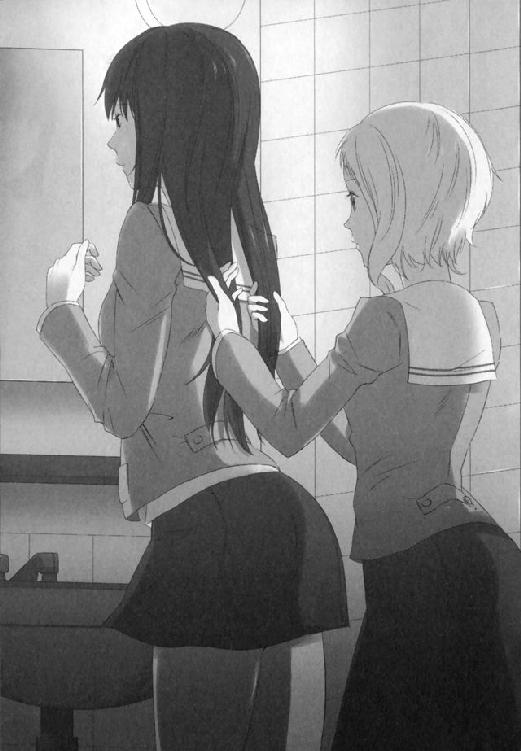

| バニラ A sweet partner | |
| アサウラ | |
| 集英社 (2013) | |

バニラ
A sweet partner
アサウラ
この本は縦書きでレイアウトされています。
また、ご覧になる機種により、表示の差が認められることがあります。
主要人物紹介
海棠ケイ（かいどう・けい）
17歳の女子高校生。
中三の時、継母とのトラブルで家を追い出され今はマンションで一人暮らし。
梔ナオ（くちなし・なお）
17歳の女子高校生。
ある事から男性恐怖症になる。一週間の半分をケイのマンションで寝泊まりしている。
中谷健太郎（なかや・けんたろう）
最近腹の贅肉が気になり始めた中年刑事。
元川宏幸（もとかわ・ひろゆき）
中谷の相棒の若手刑事。
中島紫炳（なかじま・しへい）
鷹見社銃器強奪事件の早期解決のために派遣された刑事、らしきもの。
イラスト／高山瑞季×曽我部修司
（シトロネット）
バニラ
A sweet partner
０
あたしはママが好きだった。
体が弱かったママは、あたしが中一の時に逝ってしまったけれど、たくさんの想い出はあたしを孤独にすることはなかった。少なくともそれから二年という月日を経れば寂しさに頬を濡らす日はなかった。ただ、どうしても辛くなった時はそのままにしてあるママの部屋へ行き、小さな頃を思い出してベッドに横たわる。鼻孔をくすぐるかすかな女性の香り。ママの残り香なのか、それとも大人になりつつある自分のものなのかよくわからなくなっていたけれど、どちらにせよ瞼を閉じればママをいつも近くに感じられた。
怖い夢を見た時、辛いことがあった時もママのベッドに潜り込んでいたっけ。そんなことを思い出しながらいるといつの間にか瞼裏に溜まっていた滴は消えてしまうのだ。
ママが好きだった。ママの記憶がいっぱいあるその部屋が、あたしのお気に入りだった。
ある日、中学校から帰ってきたあたしを待っていたのはパパと見知らぬ女性。「新しいママだよ」なんて、子供にオモチャを示すようにパパは簡単に紹介した。
それから一週間と経たないうちにあたしはその人と互いの髪を掴んでの取っ組み合いをしてしまう。だって、学校から帰ってきたらその人が勝手にママの部屋に入って想い出の品々をかき乱しているんだもの。あたしが精一杯に「やめて！」と叫んでも彼女は「昔に囚われるのは良くないことだから」とかナントカ大人の余裕みたいに言うだけで全く聞いてくれない。だから、飛びかかったのだ。
まともにケンカをしてもまだ体格ができていないあたしは簡単にやられてしまうから必死にやった。持てる力を全部出して、やれることは全部やって......とりあえずママの部屋から廊下へと追い出すことはできたけれど、それだけだった。
彼女も結構綺麗だったその顔を醜く歪ませながら必死に抵抗してきた。何度も何度もビンタされたり、馬乗りになられて首を絞められたり。あたしが泡を吹き出したらさすがに手を離したけれど、その人の中身が見えた気がして......怖かった。間違ってもママなんかじゃない。人間かどうかも疑わしい。本当は化け物なんじゃないかって、思った。
だから意識を取り戻したあたしは、隙を見せていた彼女の耳に喰らいついた。本気で、何の手加減も躊躇もせずに固いスジ肉を齧るみたいに歯を立てた。
耳を劈くおぞましい悲鳴。あたしの髪を引きちぎらんばかりの腕。ばたつかせる足。
八重歯が彼女の耳たぶの付け根に切れ目を入れる。するとどうだろう。それまでどんなに喰いしばってもダメだったのに、切れ目を起点にビリビリビリっと皮が破け、肉が裂け、生温かい血を噴き出しながら彼女の耳の下半分を引きちぎることができたのだ。
失禁しながら意識を失った彼女が廊下に血溜まりを作るのを眺めながら、あたしは口から耳たぶを下げてケタケタと笑った。今の彼女にもう大人の余裕なんてこれっぽっちもなかった。
それから一〇日後。うまく縫合したはずの彼女の耳は、あっけなく腐れ落ちた。
一二日後。あれ以来ママの部屋を自分の部屋にしていたあたしのもとに、数人の男たちと彼女が現れ、わざとあたしのいる前でママの部屋を壊していった。あたしが学校にいる間にやってしまえたはずなのに、わざとあたしがいる時に......やったのだ。
やめて、と泣き叫ぶあたしを男たちに押さえつけさせ、彼女はゆっくりとそこにある物を壊し、捨て、陵辱していった。
そして何もかもを壊した後、最後に彼女はパパを丸め込んであたしを家から追い出した。進学が決まっていた地元の私立高校をキャンセルし、ずっと遠方の高校に放り込んだのだった。
少し困ったような父、勝ち誇った女、何もかもがなくなってしまったママの部屋に閉じこもって春まで泣き続けたあたし。
そんなあたしが家から持ち出せたのはママのいっぱいの想い出と、ママの面影が出てきた自分の姿だけだった。
１
20：12
今日の雨雲は少しだけ気が早い。
朝から降りだすと言われていた雨は、夜明けを待たずに街を濡らした。叩きつけるほど激しくもなく、湿らせるほどに優しくもない。まるで雨雲からこぼれ落ちたような、そんなポロリとした春の暮れの雨だった。
刑事一課の元川は愛車のスカイラインを乗り捨て、赤いスタジアムジャンパーを濡らしながら悲鳴の聞こえた方向に走っていた。彼の勘が囁く。俺たちのヤマだ、酔っぱらいの喧嘩なんかじゃない、と。
この一連の連続狙撃事件の帳場が立ってからすでに一カ月。即ちそれは本部から冗談みたいな七三分けの刑事と組まされ続けた彼の苦痛の時間でもあった。今それが終わるのかもしれない、そんな予感をしつつ彼は無線で捜査本部に連絡する。しかし向こうは現場を確認しろと一蹴した。ならば確認しようじゃないか。元川は深夜の繁華街の中心部に突入する。
すでに悲鳴は消えていたが、通りにいる人々が、何があったのだろう？ とボケっとした顔で同じ方向を向いており、それが彼を現場まで案内した。果たしてそこにあったのは、路上に倒れたスーツ姿の若い男......の死体だった。一目で死んでいるとわかるほどに、彼の頭は額から後頭部にかけてパックリと口を開け、大量の血と腐った白子のようなものを路上にぶちまけ、両目を顔面から飛び出させていた。一目で拳銃弾によるものではなく、高エネルギー保有のライフル弾による頭蓋骨の破砕であると判断。無線機で応援及び周囲一体の封鎖を要請、次いで自分をドライバー兼道案内係としか思っていなかったであろういけ好かない七三分け刑事への悪態を日頃の鬱憤を込めて無線機に叫んだ。
「アイツなら飯喰いに行ったきりだ！ 仕事する気がないのなら本部へ帰らせろ！」
野次馬たちはかなり遠巻きに現場を眺めていた。これまでの事件がそうであったように、遠距離からの狙撃であったと元川は判断。アスファルトの上に飛び散った血は雨で流されつつあったがそれでもどの方向から撃たれたかを教えてくれる。そしてさらに額の中ほどからうなじ近くにまで破壊されていることから高い位置から放たれたのだとわかった。
元川は高鳴る心臓を押さえつけつつ、顔を上げて辺りを見渡す。今の彼の視界に入る範囲、そのどこからか撃たれたに違いない。彼が目星をつけたのは男の死体から百数十メートルほど離れた場所にある三棟の雑居ビル。窓が開いている場所はないが、近すぎもせず、遠すぎもしないことからやりやすかろう、と判断......というよりも半ば刑事としての勘だ。
恐らく周囲にいた目撃者のものであろう悲鳴が聞こえてからまだ三分と経っていない。刑事がこれだけ早く現場に辿り着いた事例は今回のヤマでは存在せず、犯人も驚いているだろう。逃げ切るだけの余裕はなかったはず。逮捕のチャンスだった。
しかし三棟のビルのうちのどれだろうか。こうして通りで待っていても犯人を追い詰めたことにはならない。当然裏口があるはずだし、そして何より犯人はライフル銃を装備しているはずだというのに無防備に立っているのはあまりに危険な状況だった。
無線機に応援はまだかと叫ぶ。最寄りにいた同僚の中谷と本部の刑事が急行しているという。中谷は普段の仕事でコンビを組んでいる先輩の刑事だ。彼が近くにいるとわかっただけで勇気づけられる。
元川は腰のホルスターから個人所有のスタームルガー Ｐ90を抜いてビルの前まで走った。ガンは支給されているＳＩＧ Ｐ２３０ＪＰもあったが彼の懐に納められたまま出番のないサイドアームと化していた。個人所有銃による公務執行は認められているものの、弾薬経費等は個人持ちだ。それでも毎度家に帰る前に警務課の地下金庫に戻さなくてはならない、いつ誰が触っているかもわからない支給品のガンに自分の命を託すよりは何倍もいい。
応援はまだ来ない。自分の予想が外れていることも考慮して周囲に目を配る。遠巻きに見ていた男に銃声は聞こえたか、と訊いてみるが案の定何も聞こえなかったとそいつは言った。予想通りではある。今までの同一犯と思われる四件あまりの狙撃事件では減音器を使用していたとみられている。加えて雨、さらには賑やかな繁華街となると聞こえるわけもない。
元川は短く刈り上げた頭を掻く。こうして待っているだけでは犯人に逃走の時間を与えているようなものだ。かといって自分が適当に突入している間に他のビルから悠々と逃げ出されたら元も子もない。
苛立たしげな心持ちの中、彼は視線を感じた。誰かが見ている。一般人のものとは違う、観察者の視線。高所からではない。どこだ、と彼は周囲に目を配らせると目の前のビル間の奥にかすかに人影らしきものを見つけた。即座に銃を向けるとその影はビルの後ろへと姿を消す。――ついに、見つけた。
元川は走り出す。ビルの合間は狭く、獣道のようだ。かろうじてまだ二〇代で、筋肉質ながら比較的細身な自分の体に感謝しつつ、突入。雨に濡れたそこは酷く臭い。
狭いビル間を行くと、ビルの裏側同士で作られた十字路に行き着く。元川は左右に銃を向ける。人影はない、ように見えた。かなり暗い。上を見る。非常用のハシゴらしき物がビルの屋上より続いていた。犯人はこれを使ったらしい。
シャキンとオートマチックハンドガンのスライドを動かす音を元川の耳は捉えた。背筋が震えを感じ、伏せる。一瞬前まで頭があった場所を銃声とともに鉛弾が飛翔した。マズルフラッシュから犯人の位置が見える。
元川は犬の小便がぶちまけられたような湿った地面に伏せたまま、Ｐ90のスライドを引き、チェンバーに弾薬を装填。マズルフラッシュが焚かれた場所に向けて二発放った。警告も威嚇も必要ないと判断した。この状況ではやむを得ない。
放った弾丸が奏でたのはキュンキュンとビルの壁に当たった音。肉を貫いたものではない。続いて聞こえたのは走り去ろうと慌てて地面を蹴る音。元川は立ち上がり、姿ではなく、足音を追う。まったく見えない。
パシャパシャと連続する足音が一瞬止まり、元川も反射的に立ち止まった。銃声、マズルフラッシュ。脇の壁が削られ、細かな破片が元川の顔を叩いた。
「警察だ、すでに包囲されている！ 無駄な抵抗はよせ！ 銃を捨てて壁に手をつくんだ」
今更だが元川は銃口を犯人に向けつつ脅し文句を叫んだ。当然包囲網など完成していないが、相手の気が殺げることに期待した。
撃つべきか彼は迷う。足音はしない。が、同様に銃を捨てた様子もない。視界にはただ闇が広がるだけだが恐らく未だに銃口をこちらに向けているであろうことは想像がついた。さっきは勢いで応戦したが、両脇を壁で塞がれたこの隙間で正面切っての撃ち合いとなると覚悟が必要だ。相手との距離は一〇メートル程度。どんなへたくそでも数発放てば確実に当たる。
ただ、撃ち合いにしなくてもこのまま時間が経てば本当に包囲網が完成するだろうし、そうでなくても中谷たちが駆けつけてくれるかもしれない。そういう期待もまた彼のトリガープルを重くしていた。
「もう逃げられないぞ。これ以上逃げれば射殺をも辞さない。おとなしく捕まるんだ」
すでに二発撃っているためこちらは本気だと相手に伝わっているはずである。
だが、相手は元川の予想外の反応を見せ、ケタケタと笑い出した。
「捕まえられる？ 本当に？ やってみなよ」
若い女の声だった。それは元川の行動を遅らせるには十分過ぎた。
女は銃を乱射。銃口を犯人に向けたまま、元川は何もできずに地面に伏せた。弾はチェンバーに装填済み、撃鉄は起きてセイフティもかかっていない。トリガーを引けばすぐに弾が出る。......だが撃てなかった。相手が女だとわかってしまったことで元川は迷った。
銃撃が頭上をかすめる中、元川は女の姿をかすかに見る。黒いジャケットに黒いパンツ。マズルフラッシュをかすかに反射する様子からして革か、ビニール。顔は......ガスマスクを装備していた。
そして再び逃げ始める女。元川は言いようのない疲労を感じつつ立ち上がって追いかけるも、女の落とした空薬莢を踏んづけて足を取られる。一度地面に手をつき、再び彼は立ち上がって追いかけた。女がビル間に入り込んだのを足音で確認。路地裏に出るつもりらしい。
元川は追いかける。路地裏は一本違うだけで繁華街とは天と地ほどの差がある。まばらな街灯に加えて、人気がない。深夜営業の店もほとんどない。
元川は通りを確認。走り去る黒ずくめの背中を見つけた。左手に大きな黒いケース、そして右手にはハンドガン。
「止まれぇ！ 撃つぞぉ！」
叫ぶも、その背は止まらない。元川は覚悟を決める。右膝を地面につけ、立てた左膝の上に左肘を乗せる。右手を伸ばしつつ、それを左手で保持。リア、フロントそれぞれのサイト越しに犯人の背が重なる。距離は約二〇メートル強。胴体を狙えば、自分の愛銃ならば確実に当てる自信はあった。このままトリガーを引けばチェンバーに収まっている45ＡＣＰをアイツの背にぶち込めるだろう。
だが相手は女......。いいや、構うまい。相手は連続殺人犯。世間や上から責められることはないだろう。せいぜい己の良心だけだ。元川はトリガーに指をかけた。
凄まじい衝撃が彼の胸を叩く。
一瞬自分の銃が暴発したのかと思ったがそうではなかった。彼は仰向けに倒れ行く最中、自分の胸から吹き飛ぶジャンパーの破片を見た。肺の中の空気がなくなった。
元川は倒れるもすぐに左手をつく。状況が理解できない。息ができない。立ち上がろうとするが、まるで穴のあいた風船のように、力が抜け落ちていく。
錯綜する意識の中、それでもなお立ち上がろうと腕に力を入れる。ブルンッという空気を切り裂く音。震えながら体を支えていた左腕が蹴り飛ばされたかのように、彼はもんどりを打つ。顔にかかる自らの熱い鮮血。
痙攣するかのような心臓の鼓動。息を吸おうとしても肺に入ってこない空気。そして白濁に呑まれゆく意識。倒れた彼は霞む視界で見る。走り去る黒い背、そしてその背が向かう先にあった、雨合羽を纏った小さな姿を。
その雨合羽はスコープとサプレッサーをつけた白っぽいライフルを持っているように元川には見えた。
「......子、供......？」
倒れた元川を残し、黒い背と雨合羽の二人は雨の中に姿を消した。遠くから自分の名を呼ぶ声がかすかに聞こえる。それが中谷のものだとわかった途端、彼の意識は途絶えた。
●
06：57
あたしが起きたのは、けたたましい目覚まし時計の音にでもなければ、小鳥たちの爽やかな囀りにでもなく、カーテンの隙間から差し込む朝日の眩しさにでもない。ただ、毛布からはみ出していた両の肩が寒かったのだ。
カーテン越しにうっすらと入ってくる朝日が部屋を朧気に浮かび上がらせる中、あたしはソファの上で上半身を起こした。自分の格好を見て、これは寒いだろう、と我ながら思う。下半身はジーンズを穿いているものの、上半身はブラすらつけずに素肌を晒していた。そういえば昨夜はお風呂上がりにソファで横になってから記憶がない。きっとあのまま寝てしまっていたのだろう。毛布は......ナオが掛けてくれたのかもしれない。
あたしはソファから降りて、肩にかかっていた真っ黒なストレートロングを後ろへ払い、うんっと伸びをする。肩と背中あたりからポキポキという音が鳴った。
二度寝しようとソファではなくベッドに歩み寄る。
乱雑に閉められたカーテンのかすかな隙間から差し込む朝日は雲間から差し込む天光のよう。照らされる白いベッド、波打つ白い掛け布団。そこにある唯一の色は金髪のガーリーボブ。その髪の持ち主は壁に背を向け、光の中で胎児のように丸くなっていた。
梔ナオ。あたしと同じく今年から高三......のはずだがその顔つきはまるで中学生のそれだ。カラーリングした髪のはずなのに、あまりに自然で美しい色合いは朝日の中でより一層その輝きを増し、純金でできた細糸のよう。
彼女は無邪気に、静かな湖畔のなぎさのような寝息を立てていた。布団の中に真っ白な翼が隠れているんじゃないかと思わせる天使の寝顔。
あたしはナオの顔にかかっていた彼女の髪を指先で払いのけてやる。すると朝日が直接瞼に当たったからなのか、うぅーんと唸り、もぞもぞと動いて日射しから逃げた。
あたしはクスリと笑って彼女の隣に横になろうとしたが、枕元に置いてある時計が七時を指しているのを見て諦める。
もうすぐ学校へ行く時間だ。
仕方なく熱いシャワーをサッと浴びて体を目覚めさせ、キッチンで換気扇を回してロゼをくわえた。シルバーのジッポーで火を点ける。デザインとメンソール感で選んだ銘柄と、蓋を閉じる時の音で選んだライターだった。
キッチンに腰を預け、薄い紫煙を吐く。こうして見ると相変わらず一人暮らしには少し広すぎる３ＬＤＫだと我ながら思う。ナオが泊まりに来てくれるとちょうど良くなるけれど、一人では少し寂しくなるくらいだ。
ちょうど一本を灰に変えたところで目覚ましのベルが鳴り、もぞもぞとナオが起き上がる。
「おはよう、ナオ」
「ん......。アレ？ ケイ、起きてたの？」
今さっきね、と言ってあたしは頭に巻いていたタオルを解いて、ドライヤーをかける。
「あ、ひょっとして起きるの待っててくれた？」
ん〜、とあたしは曖昧に相づちを打ちつつ長い黒髪を乾かすと、続いて簡単な化粧で顔を整える。鏡の中にママ似の端正な顔。切れ長の目に、尖った顎先、生粋の日本人のはずなのに妙に白い肌。ニッと笑顔を作ると、人のそれより少しばかり尖った八重歯が顔を出す。
人によく言われるように、どことはなしに狐に見える。笑ってさらに目を細めると、本当にそう見えた。
「お湯沸かしておくよ」
目覚めの良いナオは、ダブつくあたしのパジャマを引きずるようにしてベッドから降りると、浄水器の水をやかんに入れて火にかけてくれる。そして二人分のレギュラーコーヒーと、どん兵衛きつねうどんを箸と一緒にテーブルに並べてくれる。毎度の流れなのでナオも手際がいい。
「ケイさぁ、そういえば昨日終わってから、チェンバーから弾抜いたっけ？ 確か抜いていないような気がするんだけど」
「あ、いっけなぃ」
あたしはさっさと化粧を終わらせると、押し入れの中から昨日使ったハンドガンを取り出す。黒いセミオートマチックハンドガン。『銃』という厳つい感じというよりは、『ガン』というカタカナの方がしっくりくるような、近未来的なデザインのベレッタ90ＴＷＯ。映画とかでよく見る、Ｍ92Ｆとかいうベレッタの銃のバリエーションの一つなんだとか。遠目に見ると大まかなデザインはどちらも一緒の黒い銃。けど細かな所でデザインが妙に近未来的というか、ＳＦチックになっていた。
スライドの右横にその名が刻まれているんだけど、どう見ても日本人には〝90ＴＷＯ〟の〝90〟の部分がカタカナの〝ワロ〟に見える。
撃てばレーザーでも出そうなガン。けれど、吐き出す弾は一七発の９ミリパラベラム。
あたしはマガジンを抜いて、スライドを引き、チェンバー内の弾薬を抜く。
以前メンテナンスしようとして暴発させ、壁に穴をあけてからは部屋に置く時は必ずチェンバーから弾を抜くことにしていたのだけれど......昨晩は雨に濡れて寒かったし、何より初めて近距離戦をやった興奮がなかなか醒めなくって......。今後は注意しないと。
「ライフルの方も、かな。......あ、やっぱり」
そう言ってナオは鞄にしまっておいたバレルのついてない、あたしの黒いタカミライフルのチェンバーから３０８ウィンチェスターの空薬莢を抜き取ってくれた。あたしはともかく、パジャマ姿の小柄な女の子であるナオがライフル弾の薬莢を指先に持つ姿はシュールに面白く、少し笑うと彼女は不思議そうな顔で首を傾げていた。
こんな彼女だが、狙撃という一面だけ取ってみれば、あたしよりも彼女の方に軍配が上がるというのだから世の中わからないものだ。
ピーっとやかんが鳴ってお湯が沸いたのを教えてくれる。あたしたちはそれぞれ銃をしまい、お湯をコーヒーとカップめんに注いでからテーブルについた。
向かいに座るナオは、ミルクをたっぷりいれたコーヒーで胃を暖めると「くっはー」と、まるで風呂上がりのビールを飲んだ時のような声を出す。
そして五分後、あたしたちはカップめんの蓋をあける。ここ東日本では売っていない、通販で買った西日本仕様の昆布出汁のどん兵衛は、なまじなコンビニ弁当とかよりも好きだ。
「いっただきまぁす」
厚いお揚げを箸で突っついて今一度汁に浸し、それから大きくかぶりつく。
変わらない朝、いつもの朝食。
人を殺した次の日でも関係なく、今はおいしくいただける。
○
15：20
では見てみましょう、とモニターの中で男が言うと映像はＶＴＲへと切り替わった。映画のダイジェストのように映像が流れていく。
『全ての始まりは二カ月も前に起こった銃器試験場での強奪事件にまで遡る。
この試験場は自衛手段として銃器、主に個人での拳銃所有が合法化された直後に立ち上げられた国内ガンメーカー鷹見社が所有する製品テスト用の施設である。
四名の強奪犯は試作されていた狙撃銃二丁、試験場にいた社員及び警備員が所有していたハンドガン七丁、及び高倍率スコープ、減音器、競技用の特別精密に作られたライフル用弾薬約二〇〇発を奪取、会社所有の運搬用トラックで逃走した。
これに対し警察は特別捜査本部を設置し、奪われた銃器、特に狙撃銃による社会的危険性の高さから、異例の最初期の段階からの大規模捜査員投入を決定した。詳細な人数までは明かされていないが、一部報道によればこの段階においてすでに数百人規模であったとされている。
その後警察、強奪犯共に沈黙を守り続け約一カ月。
夜雨の中、工場跡地にて行われようとしていた強奪犯と国内密売グループとの売買の現場に警察が強制介入、多数の死傷者を出す激しい銃撃戦が繰り広げられた結果、密売グループを制圧。しかし強奪犯四名はこれを脱出し、事前に敷かれていた包囲網を銃器を持ったまま車にて突破。しかし翌日、犯人の車は先の現場より約七〇キロ離れた山道にて発見され、強奪犯三名も車中で死亡しているのを確認された。警察の銃撃を受けた傷が原因と見られているが、しかしそんな中にあって全ての銃器と共に強奪犯一名が忽然と姿を消していたのだ。
それから二週間後、ついに恐れていたことが現実となる。立番をしていた梔鉄哉巡査が頸部を狙撃され死亡。貫通した弾頭は交番の壁にて停止、この弾頭に刻まれたライフルマークを調べたところ強奪された狙撃銃によるものと判明した。
これを受け、警察官狙撃事件として鷹見社銃器試験場強奪事件とは別に新たな特別捜査本部をこの地区に設置するも、そんな警察をあざ笑うかのように、その後同市内の無職男性、高校生、教師と狙撃事件は続き、昨夜の繁華街での男性射殺に至るまでの計五人が死亡、そして現場に駆けつけた捜査員でさえも狙撃銃の餌食となる事態だ。
しかし何故消えていた狙撃銃が今になって現れたのか？ そして何故今回の狙撃事件は起こったのか？ これらの疑問について警察の見解としては犯人は強奪事件の生き残りであり、仲間を殺されたことによる警察、ひいては社会全体に対する復讐目的ではないか、としているが犯人の詳細、そしてその真意は未だ不明のままである。
また奪われた銃器に関しては軽量化等による携帯に重点を置いた設計であり有効射程距離は約九〇〇メートル、奪われたスコープを適正に装備した状態であるのなら数時間程度の練習で素人でも二〇〇〜三〇〇メートル先の的に容易に当てることができるであろう、とする情報しか公開せず、それ以上のスペックや外観などは試作型であり、社の利益に影響するとして秘匿としていることからもわかるように、鷹見社の危険物たる銃器の製造メーカーにとってあまりに無自覚かつ無責任なそのスタンスが世間の不安をより一層かき立てている。
またこれら一連の事件を受けて日本各地で銃器所有自由化撤廃デモの――』
元川はテレビを消した。自分がどう報道されるのか気になったので見ていたに過ぎず、デモ等には一切興味はなかったし、事件の詳細な情報はテレビの中よりも頭の中にあった。
何か考えようとすると〝狙撃〟〝死亡〟の言葉が頭の中を駆け巡り、撃ち抜かれた左二の腕を少し刺激する。未だ残る麻酔越しのじわりとした痛み。
窓の外の青々とした空を見上げつつ思う。銃器を持ち去ったのは強奪犯の生き残りかもしれないが、一連の狙撃事件は別の人間がやっている、と。自分の聞いた女の声、小柄な雨合羽......それだけでもそう思う根拠にはなる。だが、本当にそう思うべきは狙撃そのものが為す必要性だ。今の番組以外でもマスコミはあれこれと人々が興味を引くような予想を見せて番組を盛り上げているが、間違っても何らかの示威及び社会に対する復讐行為等ではない。
何らかの理由があって、目標を選んだ上での狙撃だ。そうじゃなければ自らの居場所を特定されかねないほどに近隣で事件を繰り返し行う理由、そしてわざわざ面倒としか思えない目標を選ぶ理由がなかった。彼、いや、彼女らの狙いは何だろう。
「元川、入るぞ」
その声に元川は思考を中断する。
妙に広い個室病室の、大きなスライドドアをノックなしで入ってきたのは、しわくちゃのシャツとスーツを着た男だった。元川の先輩刑事、中谷健太郎。
「疲れた顔してるねぇ、本部の連中に絞られたか？」
「本部だけでなく、同僚たちにもやられましたよ。目が覚めてから今さっきまでひっきりなしでした。俺、今後事情聴取する時は優しくできそうです」
「初めての目撃者なんだ、仕方ないさ。いい勉強だったと思うんだな」
彼は笑い、元川がまだ寝ている間に誰かが持ってきた見舞いのフルーツバスケットからバナナを取る。皮を剥き、もっちゃもっちゃと咀嚼しながら窓の外を眺めた。
「いい眺めだなここは。今度望遠鏡でも持ってこよう。風のイタズラを拝めるかもしれねぇ」
「中学生かどっかの変態みたいなこと言わんでください」
元川に用意された病室は近隣で一番大きな総合病院の、その五階、角部屋だった。すぐ近くに喫煙室があるのにくわえ、東側と南側にそれぞれ窓がある上等な個室だ。東側の窓から見える、これからの夏を待つ、北の山から続く手つかずの若い緑茂る森の光景はなかなかに良かったし、緩やかな丘の上に建つおかげもあって、眺めの良い南側の窓からは数百メートル先の高校やその向こうに走る線路や駅、住宅街がよく見えた。
「そうは言うが、この病院の南病棟は人気があるらしいぞ。体が落ちついたら歩き回ってみろよ。売店にゃ売ってないが窓際に寝る爺さんたちに双眼鏡は必需品だそうだ」
元川は首を伸ばして外を見やる。ちょうど下校時間なのか、青い空の下、校庭には制服に身を包んだ若者たちの姿、屋上にも男女数名の姿が見えた。中谷の言葉を信じるなら爺さんたちは今頃必死にレンズを覗いている頃合いか。
「症状は聞いているのか？」
「えぇ。全治三カ月だそうで。命があっただけでも儲けもんだと課長に言われましたよ」
「ＳＩＧについてはどうだ、ラッキーマン」
もちろん、と元川は笑った。あの雨の追走、女に初めて銃を向けた夜。
小柄な雨合羽が放ったライフル弾は元川の左胸を直撃していた。通常なら即死も免れない状況だったが、Ｐ90を構えていたことにより、左腕に押された脇のショルダーホルスターがやや前面に押し出されていたことで九死に一生を得た。まず使うことのないＳＩＧ Ｐ２３０ＪＰを念のためにホルスターに入れていた己のマメさをこんなに喜ばしいと思ったことはない。
７・62ミリのライフル弾はＳＩＧのグリップ部に直撃し、元川の肋を砕いたものの、皮膚に到達することはなかった。破損したその銃を先ほど課長から見せてもらったが、まだ使えるパーツよりももはや使えないパーツの方が多そうな破損具合だった。
中谷はそうか、と一言呟くとバナナの皮をゴミ箱に捨てて今度はリンゴを手に取る。
「ありゃ記念品ってことで引き取れよ。宝物になる。さて、そんじゃまぁ本題に入るか。良い知らせと悪い知らせがそれぞれ二つずつ、そしてよくわからん話が一つだ。どれから聞く？」
「気分が悪いので、良い知らせから」
「お前は一週間ほど入院だそうだ。それも面会謝絶で関係者以外には会うなとさ」
「そいつは......悪い知らせですね」
「刑事の負傷により、上はさらなる数の捜査員の動員を決定した。強奪事件を管轄とする署の人間と合わせるとかなりの数だ。強奪事件の方はおいておくとして、狙撃事件の多くはこの街を中心に起きている。ここまでくると大量の捜査員を放ったローラー作戦も同義だ。......意味、わかるか？」
さぁ？ と元川が肩をすかしてみせると、中谷は手で磨いたリンゴに齧りつく。
「持ってきた情報がまずかったな。女と子供らしき雨合羽。これだ。たとえ銃器を持っていたとしても、女や子供相手に大の大人が専属だけで数百、末端も含めればスゲー数になるというのに何も手を打てていないんだ。マスコミに叩かれる前にけりをつけたいんだろう」
「しかし情報なんて俺とは関係なしに漏れるでしょう。それとも一部の刑事だけにそれを知らせて、他は未だに何も知らない、とか？」
冗談で言ったつもりだったのだが中谷が何も言わずにリンゴを芯だけにしてしまったのを見て元川はため息を吐いた。そんなことをすれば警らに回る大勢の制服警官たちがどんなに気を配ってもあの二人を見逃してしまうだろう。これまでの元川同様、強奪されたライフルを女子供が持っていると想定した奴が果たして何人いただろうか。実益を伴わない安っぽい見栄だ。
「......もう一つの良い知らせだ。おまえが組まされていた刑事な、捜査から外された」
「それはそれは。ようやく良い知らせを聞けた」
「まぁ建前は失態を踏まえた上での上層部の判断ということになっているんだが、実際は単に奴もこの病院で今寝込んでいる」
「は？」
「アイツ、あのあと青い顔して現場に駆けつけてきたんだが......おれがぶん殴って鼻の骨をへし折っちまった。おかげで始末書を書かされた上に一週間の謹慎だよ。本部連中との空気が悪くなるから出てくるな、とさ。これ、悪い知らせの一つな」
「現場って......人気のある所でケンカとかやめてくださいよ」
そう言いつつ元川は笑った。きっと中谷は全部わかったうえで自分のために拳を振り上げてくれたのだ。そういう人だ。彼が普段自分の相棒でいてくれることが素直に嬉しく思えた。
「あと一つの悪い知らせは？」
「おまえが繁華街の外れで止めっぱなしにしていたオンボロのスカイラインな、アレ、車上荒らしにあってカーナビ持っていかれた。盗難届け出しとけ」
そして本当に中谷の懐から姿を現す盗難届け。元川はかすかに頭痛を覚えつつもその紙を受け取った。
「......それで？ よくわからん話っていうのは何です？」
「おまえが担ぎ込まれた直後、まぁつまり無理やり意識を覚醒させられて犯人の話を聞き出した直後なんだが、またおかしな奴が特捜本部に出てきやがった。妙なコートに、えらく高そうなスーツを着込んだ色男だ。偽物みたいな綺麗な顔でずっと笑っていやがる。しかも課長も本部の偉い連中も何も言わねぇ」
「何です、そいつは」
「わからん。課長に訊いたが、何も言わずに禿頭を脂汗でテカらせていたよ。お偉いさんの坊ちゃんでも押しつけられたのかも」
そいつは面倒だ、と相づちを打ちつつ元川も空っぽの胃に何か入れようとバスケットに手を伸ばし、梨を取る。ちょうどその時ノックの音。特に意識せずに元川は、どうぞと言って梨にかじりつき、そして現れた姿に思わず口を止めた。
果たしてスライドドアを開けて現れたのは高そうなスーツに妙なコートを纏い、ヅラと化粧次第では女と見間違うほどの美貌、それを覆うは薄い眼鏡と優しげな笑み。
絶妙なまでのタイミングだった。
「失礼するよ元川君。たった今中谷君から紹介に預かった中島紫炳だ。よろしく」
最悪だ、と元川は思う。面倒だ、と言った自分の言葉が聞かれたであろうことは確実だが、奴は笑っているのだ。普通笑わない。少し怒るか、せいぜい表情を抑えるものだ。だがコイツはそうではない。元川はそれが絶対的に立場が上の人間が下っ端の人間に対して見せる類の笑顔なのだと判断した。ひどく優しげで、綺麗な笑顔ではあったが。
本当にお偉いさんの息子あたりかもしれない。
助けを求めるように中谷を見るが、彼は窓の方を向いたままブドウをつまんでいた。助けてくれる気はないらしい。
「悪いんだけど、例の狙撃犯について話を聞きたい。いいかな？」
すでに本部刑事、所轄刑事それぞれに散々話した後で嫌気がさしていたが、元川には断るだけの勇気はなかった。
中島と名乗った色男はコートのポケットに入れていた左手を抜くと、その親指で右の綺麗な眉を掻いた。笑顔のままに。
●
15：30
帰りのＨＲが終わったあたしとナオは、いつものように地下にある放送室へと向かう。途中階段で首を回すとポキポキと軽快な音が鳴った。
昨夜寝たのが三時、起床が七時となるとさすがに一七の若さをもってしてもキツくて、最後の授業は机に突っ伏して爆睡してしまった。体勢がおかしかったのか首がどうも......。
「ケイ、大丈夫？」
そう言って彼女はぴょんぴょんと階段をスカートを揺らしながら軽やかに下りていく。
「しばらくすれば治ると思うけど。後でちょっと揉んでよ」
オッケィ、と彼女は最後三段飛ばしで飛び降りる。広がるスカートがまるで衝撃を仰えたように、ふわりと降り立った。
地下には倉庫や水道管理、配電室などの部屋があるものの、放送室以外に生徒が入れる場所はなく、故に放送部員以外はまず訪れることがないのでひどく静かで、少し空気がひんやりとしている。私たちの上履きの音が反響する。掃除をしている階上のざわめきが遠い。
放送室の前に着いて、窓から中を見ると真っ暗で誰もいないようだ。とすれば......。私は扉の上につけられた今は不点灯の〝放送中〟のランプの上に指を這わせ、鍵を取る。部員しか知らない鍵の置き場だった。
中に入ってドア脇の電気のスイッチをオン。放送室が浮かび上がる。そこはまるで昔の漫画か何かに出てくる悪の組織が使う秘密基地のようだ。新旧様々な映像、音響機器が棚に整然と並び、また別の棚には現行メディアから８ミリフィルム、果ては使いもしないＬＰレコードまでギッチリと詰まっている。床を這う無数のコード、隣の防音のしっかりした収録室とリンクする机形の大型ミキサー。乾燥した空気に少しばかりのホコリが舞う。
あたしは安物のパイプ椅子に腰掛ける。するとナオが後ろについて首回りを揉んでくれる。
気持ちいい。けれど、もう少し強めにやってほしいかな。彼女の小さい手にこれ以上を求めるのは酷だろうか。
隣の収録室はあたしたちの部屋から大きな窓で見ることができるけれど、今は向こうの電気が落ちているため暗く、ガラスにはあたしとナオが半透明に映る。一七〇近い長身かつ長い四肢のあたしと、一五〇程度の身長とその顔からか〝幼さ〟というイメージの強いナオ。あたしが椅子に座っていることを踏まえてもはっきりとその差が見て取れた。
「アーィ、どうも」
間延びした声で入ってきたのは、その声そのままのどことなく間延びした顔の男、放送局局長、三年の尾山だ。彼は鞄からバサリと何枚かのプリントをあたしに渡してくる。見れば〝春大会に向けたドキュメント番組『人工神経による再生医術』制作に関する今後の予定一覧〟とタイトルが書かれており、捲ってみると作業工程が全て列記されている。そして撮影の部分にはすでに〝済〟の文字。
「アレ、いつ撮影したの？」
「ここ一週間、学校が終わり次第研究所に詰めて撮影してた。内部へ入る許可は家族のオレぐらいしか取れそうになかったんで、一人でやっておいた。構成は一通りやってあるから、狐とクリオネは終了間際の時だけ頼む。狸は今ＢＧＭを選ぶのに演劇部の方に交渉中。一年どもはとりあえず技術継承と、流れを理解させる感じで行こうかと」
相変わらずのスタンドプレーぶりだ。頭が良いからなのか、単に親が医大の教授だからなのか、高校の放送コンクールにしては大き過ぎるテーマに加え、相談もなしに撮影を始める行動力。変に「皆の意見を尊重して......」とか言わない分、楽といえば楽なんだけど。
とはいえあたしとナオは声を担当しているだけで、実質的な仕事をしないうえに顔を出すことも他の人より少ないから、たいして関係ないんだけど。
なお、狐というのは当然あたしで、なんかいつもフワフワしているナオがクリオネ。それぞれ入部時に尾山が直観でつけた。ちなみに狸というのは......。
「局長、とりあず一〇枚ぐらいチョイスしてきたんで。あ、ケイ」
扉を開けて入ってきたこの丸顔で、右の小鼻の横にアクセントのように一つの黒子、残りの三年女子、これが狸こと清水。
それから一年生数名が入ってきて、尾山のプリントを読みつつ行動に移る。ダラダラ動きつつも、作業だけはきびきびと。そんな中にあって基本的に声しか担当しないあたしたちは割とこういう時はお客さん状態だ。作業に加わるのは大抵仕上げの段階。
しかもあたしたち二人とも去年の文化祭直前になってから、二年生もおらず人員が足りない、さらには部そのものが潰れてしまいそうだからと清水に引き込まれたので立場は実質的に春に入ってきた一年生とさして差はなかったりする。
ＣＤをＨＤＤにダビングしていた清水が例のプリントを手にしたままピタリと固まった。
「局長、土・日の作業が前提ですか......」
「そうしないと間に合わないからさー」
「私は推薦だからいいとしても、局長はいいんですか？ この次の週からテスト週間ですよ？ 受験とか」
清水がカレンダーとプリントを交互に見やった。
「いーのいーの。この時期まで来ちゃうともうテストの点とか俺の場合大して影響しないし。そもそも別に難しい所行くんじゃないから。締め切り的には来週の半ばまでできるけど、そうするとどうしても一年連中が参っちゃうからさ。それならラストは一気にやって作品そのものにも勢いをつけたほうがいいしさ、最後の大会だし、ちゃんとしたのを出しておきたいしね」
ドキュメント作品にどうやって勢いをつけるのか想像がつかないけど、尾山が言うのならそうなのだろう。
「大学って、やっぱあの情報系のだっけ？ もっと上狙えたのに？」
あたしが言うと彼は当然だろ、というふうに頷いてみせた。
「別に、いい大学入るのが目的で勉強やってきたわけじゃないし、その先を見据えるとさ」
尾山はテレビ局、それも報道系に行きたいらしく、そういう方面にコネのありそうな所に行くのだそうだ。姉妹校でマスコミ系の専門学校もあり、施設や技術も期待できるんだとか。
「狐とクリオネは同じ女子短大だっけ？ おまえらはちゃんと勉強しておけよ。片方だけ受かるとか悲惨だから。特に狐は成績が微妙なんだろ。一応スケジュールに二人の仕事は早めに終わらせるようにしてあるから」
確かにそう。あたしとナオは同じ食物栄養学科のある短大を志望校にしていて、微妙にあたしの成績がギリギリだったりする。二人とも大して行きたいわけじゃないんだけど自分が働くっていう感じもしないし、かといって無職でブラブラする気もなくって......とりあえず選んだ所だ。
まぁ成績が悪いのは居眠りをチェックされたり、寝ぼけてる間に行われた抜き打ちテストなんかが足を引っ張っているだけだ。普段のテストの点数は問題ないので大丈夫だとは思う。
その後何となく作業が忙しくなってきたものの、特にあたしたちにはやることもなかったので、生徒会から来た校内放送の依頼を一つこなしただけで、いつものように一足先に帰ることにした。元々緊急時の要員として入部し、一年生が入って安定した後もそのまま惰性で声の仕事をしているに過ぎない二人なのでみんなわかってくれている。
校舎を出ると無駄に広い校庭に風が舞う。校舎入り口から校門まで続くアスファルトの道。それ以外の場所は青々とした芝生が敷かれているだけで特別何もない。以前まで木々数本が植えられていたのだけれど去年台風が直撃した際に根こそぎ倒れ、撤去されてしまったので今や本当にただの広い庭だ。昼休みなんかに軽いスポーツをするのにはちょうど良かったりもするけど、正直何か欲しいところだ。
校舎の裏側にあるグラウンドと野球場からクラブ活動をする威勢のいい声。カキンと金属バットがボールを叩く乾いた音。風に乗って聞こえてくる吹奏楽部のバラバラな管楽器のなまぬるい音。遠くから聞こえる自転車のベル。
見上げる碧空。はぐれ雲が遊び、数羽の小鳥が群れで飛び去っていく。全てを見下ろし、ゆっくりと長くなる日は夏の訪れを無言のままに伝えてくる。
夏。三年生はそろそろ受験勉強にエンジンをかけ始め、人によってはＡＯや推薦でそわそわし始める時期。就職希望の人は働き口を求めて着慣れた制服で行き慣れぬ街を歩く、そんな時期。
それぞれが、それぞれの道を行くために、ずっと肩を並べていたクラスメイトたちがバラバラに動き始める季節。今までのように足並を揃えるのは終わり、自分は自分で、人は人なのだと知る。そんな季節がもうすぐやってくる。
あたしは横に並んで歩くナオを見る。
「ねぇ、ナオ。昨日の場所、行ってみない？ あと、ばあちゃんの所にもさ」
彼女はうん、と頷く。
校門を出るとそこは緩やかな坂。学校自体が傾斜の中腹にあるのだ。周りは広く住宅街が囲み、坂を登れば大きな総合病院、降りれば駅。帰宅する学生の多くがそうするように、あたしたちも坂を下る。でも電車は使わずに一駅分向こうの街まで歩いた。ばあちゃんのお店に行く時はいつもこうやって体を使うのが二人のルール。
線路沿いを二人肩を並べてしばらく歩き、繁華街へ。夜ともなれば輝かしいネオンの数々も昼間は粗大ゴミかのように鈍って見える。
その場はあたしたちのような高校生、特に女子にはあまり好ましい場所ではないけれど、真っ昼間は不思議と敬遠したくなるような空気はない。大抵は夜に備えて店々のシャッターは閉まり、ゴミ出しの清掃業者がいるばかりだし。
「あ、あったあった」
ナオの視線の先には〝立ち入り禁止・ KEEP OUT〟と書かれた黄色いテープで区切られた一角。制服警官を二名乗せたパトカー一台。きっと現場保持とかなんとか、そういうのをやっているのだろう。一晩も保持して一体何が出るのか、気になるところではあったけれど怪しまれるのも何なので、あたしたちはそれとなく視線を送りつつその一角を通り過ぎる。白いチョークで路面に描かれた人型があった。
背中に視線を感じる。一瞬、ビクリとしてしまう。昨日あの暗闇の中で顔を見られたかもしれない、というほとんどありえない可能性に恐怖心がかすかに疼いたけれど、振り返って見ると警察官が車内からあたし、というよりもあたしの足あたりを見ているらしかった。
制服を着ていても所詮は男だ。心が楽になると一瞬前の恐怖心がスリル的な面白さになって、楽しかった。あたしはわざと少しだけ短いスカートを揺らして歩いた。
現場を通り過ぎるとナオが満面の笑みを向けてくる。あたしも笑顔で返す。最初の頃は現場に近づくのが怖かったけれど、でも、今や現場はあたしたちの作品展示場だ。きっとスプレーで落書きする人もこういう気分で現場を歩いたりするのだろう。
「いー感じだったね。でもさ、今度からは頭は狙わない方がいいと思うよ？ アレ、遠目に見ても結構キツかったもん」
ナオの言葉にあたしは頷く。
「ホントは胸を狙ったんだけどね。思ったより弾着が上にずれたの」
「上に弾着がずれるってわかってたのに？ ダメだよ、ケイ〜。ちゃんと補正しなきゃ」
「っていうか、そういうんじゃなくて単に調整ミスだよ」
昨日の夜を思い出す。
雑居ビルの屋上。右膝をつき、左膝を立ててその上に左肘を寝かすように置いてその上に右手で握るライフルを置いた。覗くスコープ。夜とはいえ、明るいネオンに照らされた通りははっきりと、いや暗闇から明るい所を見ているので昼間以上にはっきりと捉えられた。そして当初の予定通り、例の男をスコープの十字線に捉え、呼吸を止め、トリガーを引いた。
あの時は人気の多い場所での初の狙撃ということもあって緊張していた。それで距離を誤り、さらには雨だから多少落ちるかなと少し上を狙ったけど、さほど影響が出なかったというのもある。
「二〇〇メートル程度の射撃なんだから、計算式で考えずに感覚でできるじゃん」
「できる人はそういうことをサラっと言うけど、できない人には難しかったりするんだよ」
えへへ、とナオは照れたように笑って耳元の金髪を指先でいじる。こういう顔をする時、彼女はいつも以上に幼く、そしてかわいく見えた。
ナオがステップでも踏むように軽やかに足を進め、あたしたちは例の現場から数十メートルしか離れていないビル間に立つ小さなお店に辿り着く。古めかしい、けれど決して汚いとかボロイという雰囲気のない、そんな昔ながらといった趣の木造店舗。靴底がこすりつけられたアスファルトと打ちっぱなしのコンクリート、けばけばしい看板に囲まれているせいかそこだけが異空間のよう。一〇代のあたしでさえ、懐かしさと哀愁を感じるのは何故だろう。
細い格子状の木材を縦横に組み立てた引き戸を開け、〝遑屋〟と書かれた紫の暖簾をくぐる。転がる鈴の音。迎えてくれるばあちゃんの優しい「いらっしゃい」。
店舗は本当に質素な昔ながらのお店といったふうで、使い込まれた四人程度が座れるテーブルがたった二つとカウンターの四席しかない。今はそのどれもが空いていたので、あたしたちは一番奥のカウンターに座った。
カウンター越しに腰の曲がった和服のばあちゃんが、再び「いらっしゃい」と言ってくれる。
お茶を渡してくれる、人生を刻み込んだ皺だらけの綺麗な手、あたしなんかよりも何倍も月日を重ねてきた人であるのに、かわいらしいと思ってしまう笑顔。そんなちょっとしたことにあたしたちもまた笑顔を誘われる。
メニューを見ることもなくあたしはクリームあんみつを、ナオはクリームみつまめを注文。ばあちゃんがカウンターの中に入り、準備している間あたしは壁に掛けられた写真を見る。遑屋を写したモノクロ写真。お店の周りにはビルなんか一つもなくて、お店の前には和服の男性と女性そして小さな女の子。以前聞いたところだとその女の子がばあちゃんなのだという。
お店に入る前はこの遑屋が浮いているようだったのに、この写真を見るたびに外のコンクリートの塊の方こそが異質なのだと思えた。
そうこうしているうちに、ばあちゃんが注文の品を運んできてくれる。特に何も言わなくてもあたしのあんみつにはこしあんではなく粒あんを、そしてナオにはたっぷりの黒蜜を持ってきてくれる気遣いが嬉しい。
バニラビーンズの黒い小さな粒が入った少し硬めのバニラアイスをスプーンですくい上げ、口に入れる。濃厚な甘い香りが口内と鼻孔を溶かす。でも主に舌が感じるのは冷たさとコク。さっぱりという以上に甘みはほとんどない。バニラビーンズそれ自体は甘くはないし、ここのはフルーツやあんと一緒に食べることを考慮して砂糖は極力抑えてあるのだという。あたしは多少見た目が悪くなるのは覚悟で、ボールのようにコロッと入っていたアイスを崩してフルーツに馴染ませ、さらに粒あんとも混ぜ合わせる。いつもの食べ方だった。
そんなふうにしてあたしたちは甘味に舌鼓を打ち、ばあちゃんの昔話に耳を楽しませる。甘味がなくなったって、それから一時間以上もゆっくりとしてしまう不思議なお店だ。
お店に少し派手な服装の女性が二人入ってくるのを見て、あたしたちはそろそろ帰ることにした。これからこのお店は夜に働く人たちが訪れる時間だ。まるで時報が鳴って家に帰ってくる子供のように続々とやってくるのだから、これ以上注文する気のないあたしたちが席を占領するのは迷惑になる。
お会計を終えると、ばあちゃんは頬に手を当てた。
「最近は物騒だから、真っ直ぐに帰るんだよ。見たと思うけどちょっと行った所で事件があったばかりなんだから」
その言葉に、テーブル席で上品にお茶を飲んでいた女性が顔を上げる。
「でもさぁ、死んだのってこの辺うろついてたスカウトでしょ？ ビビって出てこなくなったら逆に治安良くなるかもしれないよ。特にそこのお二人みたいに若い子にとってはさ」
あたしたちは笑った。確かに、そう。ばあちゃんの店にちょっと長居してしまうと本当にしつこいのが絡んでくる。特に昨日殺した奴とか、マンションにまでついてきかねない勢いで、毎度毎度ひどかったし。
お店を出ようとすると女性があたしのお尻を触り、そしてもう一人の女性がナオの頭を撫でる。就職に困ったらウチへおいでよぅ、と笑顔で言う。冗談交じりのスカウト。こういう手合いなら楽しかったりもする。人柄の差なのかもしれない。
あたしたちは笑って受け流し、ばあちゃんに「ごちそうさま」を言って店を出る。すでに日は落ち、繁華街のネオンが光って一層空を黒くしていた。
「ね、ケイ。ここの裏側も見ていこーよ」
ナオの言う裏側が一体何のことなのか、一瞬わからなかったもののそれが昨日、あたしを追いかけてきた私服警官をナオが倒した所だとしばらくしてからわかった。
あたしは自分の所だけを見て満足していて、すっかりそっちまで頭が回っていなかった。ダメだな、あたし。
ごめんね、と軽く謝ると彼女はきょとんとする。たまにナオの間の抜けた所が愛らしい。
あたしたちは昨夜と同じようにビルの合間にある獣道のような所を通り、一本向こう側の路地へと抜けた。さっきまでのネオンが遠く感じるほどに暗い、冷めた通り。まばらな街灯、そして人気のなさがそう思わせるのだろう。
「アレ？ アレレ？」
先を行っていたナオがクルクルと左右を見渡し、テトテトと辺りを走り回る。
「ないよ？ 白線とか、黄色いテープとか」
「ありゃ？ ない......ね。確かにそこの路地を抜けて、警察もそれを追ってきていたから、この辺にあるはずなんだけど」
顔を見合わせたあたしたちの脳裏に、もしや、という可能性が浮かぶ。
「え、でもでも、ちゃんと左胸に撃ち込んだよ？ 立ち上がろうとしてたから、念のためにもう一発撃ったんだし。えぇー、絶対撃ち抜いたよー」
ナオがそう言うのなら、そうなのだろう。二発目も撃ったというのなら、一発目を喰らった姿をスコープで確認しているということだろうし。確かにこの通りは暗いけど街灯がないわけではないので、多少距離があっても十分に見えたはずだ。
ライフル弾となると確か拳銃弾のそれとは違い、大仰な防弾装備でもなければ防ぎきれないはず。あたしが見た限りでは、普通のジャンパーを着込んでいたけれどその下に何か装備があるようには見えなかった。
では、いったいどういうことだろう。たまたま重要臓器の間を縫ったとか？ ありえそうで、なさそう。でも、現場がこの状況だとすればきっと一命を取り留めた、ということなのかもしれない。別に殺す必要はない人だったので生きているなら、それはそれで喜ばしいことではあるけど。
「えぇー。絶対やったよー。ホントにホントにちゃんと当てたんだから」
「はいはい。ナオが言うなら信じるよ」
「うわっ、絶対信じてないじゃん！ それぇ」
ムキーと絵に描いたように彼女は怒る。本当は十分に信じてるんだけど、その様子が面白いので少しいやらしめにケタケタと笑ってみせると彼女はさらに怒る。そんな彼女に今度は普通に笑った。
「ねぇ、何してんの、こんな所で」
唐突に聞こえてきた男の声。あたしたちはビクリと驚き、慌てて辺りを見渡すと若い二十歳かそこらの男が三人、狭いビル間の闇から姿を現した。
どう見てもたまたま通りかかったというふうじゃない。きっとあたしたちがこの通路に入り込むのを見ていてついてきたのだろう。
高校の制服を着た二人が怪しい通路に入っていくとなると興味を引くものなのかもしれない。いや、そんなことを言っている場合じゃない。話を......聞かれた？
なにさ、とあたしはあからさまな嫌悪を顔に出して言ってやった。ナオがあたしの背中にさっと隠れる。
「うぉ、おっかねぇ。一瞬ですげー眼するね、君」
そんな言葉とは裏腹に笑う三人。喋っていた奴の後ろにいた一人が、暇なら遊びにでも行かない？ と誘ってくるがあたしたちは当然ＮＯ。まだ夜になりきれない空の下、男三人でたむろして女を誘うにはそれ相応の理由があるに決まっている。頭が悪いとか、足が臭いとか......いっぱい思いつくけど、長くなるので以下略。
最初に話しかけてきた黒い革ジャンの男がどうもリーダー格らしく、あたしが何度も拒否を示しても、でもさ、とか、いやだからこそ、とか話の筋が通らない返答を繰り返し続ける。いい加減そのウザさにキレそうになってきた時、その時になってリーダー格の男の後ろにいた二人がいないことに気がついた。彼らはいつの間にやら左右に分かれ、あたしたちを微妙に取り囲むように立っていた。
片方の男が、ナオの背中にそっと手を伸ばす。
リーダー格と言い争っていたことでナオから少し離れていた自分のミスだ。あたしはやめろ、と大声を出そうと息を吸うも間に合わない。
後頭部に目なんてついていないナオは不安気にあたしを見ていた。彼女の肩に男の手が置かれる。軽く抱き寄せられたかのようにナオの体が後ろへ下がり、その背が男に触れた。ナオの目がいっぱいに開いて、男の顔を見上げた。
決して強く抱き寄せられたわけじゃない。軽く後ろに引かれ、後ろに一歩よろけた程度。あたしなら触るな、の一言で終わる。けれど、彼女は......ナオは、そうじゃない。
彼女は男を見たまま膝を震わせ、大粒の涙をこぼす。唇がわなわなと震えて声にならない悲鳴を漏らす。それは声帯が震えずに、ただかすれるように溢れた。
あたしは持っていた鞄でナオの肩に置かれた手をはたき落とし、続いて男の顔面に全体重を乗せた拳を叩き込む。男はよろめき、尻餅をつき、押さえた鼻から血が噴き出した。
ナオが糸の切れた操り人形みたいにアスファルトに落ちる。あたしは支えようとするが間に合わず、彼女の白い膝はアスファルトで傷ついた。
鞄を投げ捨てたあたしはナオを前から抱き、落ち着かせようといっぱいに腕に力を入れる。ナオの呼吸の乱れ方が酷い。
「大丈夫、大丈夫だから、落ち着いて」
ナオはただ、不調和で荒々しい呼吸を繰り返し、止め処もなく涙を流し続けてあたしの黒髪を湿らせた。
男たちは驚き、そしてあたしがぶん殴った奴が怒声を上げると一斉に攻勢に出る。なにしやがる、と次々に怒鳴った。
そして遠慮なんてものがこれっぽっちもない言葉をあたしたちに叩きつける。そいつ頭おかしいんじゃねぇのか、立てよ、ぶん殴ってやる――。
あたしは見下ろしてくる男たちを睨み上げる。
さっきは不意をついたからうまく殴れたけれど、果たして次もうまくいくだろうか。くそぅ、90ＴＷＯがあれば二秒とかからずに全員に風穴空けてやれるのに。
このまま何もせずに抱き合って震えているわけにはいかない。
ナオを抱いていた腕を解き、一気に立ち上がるとあたしは一番殺気立っていた鼻血の男の脇腹めがけて蹴りを放つ。が、簡単に受けられ、足を掴まれてしまう。一本立ちになったもう片方の足に、リーダー格の男が足払いをかけ、あたしはアスファルトに背をぶつけた。足は持たれたままだったのでスカートが捲れ上がる。何もしていない男が短く口笛を吹く。
痛む背中もかまわず、鼻血男の股間めがけて靴先で突く。今度はモロに入って掴まれていた足が離れる。鼻血男が倒れるようにうずくまった。
あたしはナオの手を取って逃げようとするのだが、ナオは立ち上がろうとはしない。いや、立ち上がれないのだ。そうこうしているうちに残りの二人が行く手を阻んでしまう。
いつの間にやらリーダー格の手には刃渡り一〇センチほどのナイフ。股間を蹴り飛ばしてやった鼻血男が後ろからぶっ殺してやると怒気を込めて言う。安い台詞だけれど、今の状況であたしに冷や汗をかかせるには十分な迫力だった。
さっきから何もしていない男があたしに手を伸ばし、馴れ馴れしく肩に手を置く。その手を払いたくても、あたしの視線の先にある街灯を照り返すナイフがそれを押さえ込んでいた。
「別に取って喰おうっていうわけじゃない。先に暴力振るったのはそっちなんだし、ちょっと謝ってもらうのが筋ってもんじゃない？」
「先にナオに手を出したのはそっちのくせに、偉そうに」
「手を出したっていっても何もしてないだろ。手を置いただけで、それだ。そいつどっかいかれてるんじゃねぇのか？」
ナイフちらつかせて脅す連中とどっちがイかれているっていうんだ。
ナオは......まだダメだ。あたしの手を掴み続けているものの、一向に立つ気配なく、ぺたりと座り込んだまま震えている。
そうこうしていると鼻血男が文字通り立ち直り、顔を怒りに赤らめてナオを見下ろし......手を伸ばした。
「やめろ！」
ナイフのことなど一気にあたしの頭から飛び去り、再び殴りつけようとしたけれど、二人の男に体を押さえられた。ナオが怯えた目で鼻血男を見上げる。彼女に伸ばされた手が襟元を掴み上げた。
「やだよ、やだ、いや......お兄ちゃん、やめて」
か細い、消え入りそうな声で哀願しながらナオは首を振る。
何とかしなきゃと必死にあたしはもがく。けれど二人の男の腕力から逃れることができない。
「おに......？ なんだ、コイツ、本当に頭どうかしてるんじゃないのか？」
鼻血男は襟を引っ張ってナオを持ち上げるようにして立たせようとした。今にもビリっと音が聞こえそうなほどに引っ張り上げられる制服。
あたしはまた、やめろ、と叫んだ。でも男たちはやめない。
「やるならあたしにしなよ！ その娘は放してやってよ！」
ありったけの勇気を振り絞ってそう言うけれど、あたしを掴む男たちは後でな、と一言で済ましてしまった。
ナオは引っ張り上げられて力ずくで立たされるも、ついに襟元からかすかにピリっと破れる音が聞こえた。
「やめろって言ってるだろ！」
その時、タッタッタッと誰かが駆けてくる足音。そして。
「おまえたち、何やってる!?」
男たちともどもあたしはその声の主を見る。あの殺害現場にいた制服警官の一人だった。
男たちが舌打ちし、突き飛ばすようにナオから手を離すと素早くビル間へと逃げていく。
倒れそうになるナオをあたしは抱きかかえた。
警官があたしたちの所までやってくると一度逃げた男たちのほうを見やるものの、ナオの様子を見て立ち止まる。
「その子、どうしたの？ 大丈夫？ 救急車とか......」
「いえ、大丈夫です。もうすぐ、落ち着きます」
ナオはあたしの肩に顎を乗せ、はっ、はっ、はっ、と未だ呼吸を乱れさせているものの、必死で自分を落ち着かせようとしている。あたしは彼女の金髪を撫でた。
「ちょっと怖がっただけなので、大丈夫です。ねぇ、ナオ」
しばらくしてあたしは腕を解き、多少落ち着いた彼女の顔をハンカチで拭いてあげる。
警官があれこれ訊いてきたが全て適当に受け流しているとナオの心地も安定してきたようで、スンスン、と鼻を鳴らしてはいても涙は瞳を輝かせる程度に収まる。彼女はあたしの左手にその華奢な腕を巻きつけて体を寄せた。
軽くお礼を言ってあたしたちは逃げるように警官から離れ、それから駅まで行って無言のまま電車に揺られた。もうナオも落ち着いている。横に座った彼女があたしの肩にもたれかかる。
「ね、ケイ」
「大丈夫。アイツらの顔、ちゃんと覚えているから」
「......ありがとう」
「いいよ、お互いさまでしょ」
「うん」
それからの行動は早かった。駅に着くと真っ直ぐにあたしのマンションへ行き、服を着替える。あたしは黒革のパンツにジャケット、ニット帽。腰に90ＴＷＯ。胸ポケットにロゼとジッポー。そして携帯灰皿。
ナオはフードのついた薄手の黒コートを羽織る。彼女の脇に下げられたショルダーホルスターにはスタームルガーの三八口径リボルバー、ＳＰ１０１。銀色で、小型だけどズングリとした力強い感じのする銃。
そしてあたしたちはそれぞれの狙撃銃を納めた鞄を開けて中身をチェック。あたしのは黒、ナオのは白のボルトアクション式ライフル。今は銃身、二分割されたストックと、三つに分かれて鞄に納まっている。
四つあるライフル用マガジンに７・62ミリライフル弾を装填。使うことはないだろうが念のためそれぞれが二つ、計一〇発を持つ。ハンドガンの方も満杯にまで弾込めして、準備完了。
薄手の革手袋を装着し、ライフルを納めたずっしりとした鞄を肩に担ぎ上げる。銃自体は構えるとあまり重さを感じないのに、鞄で運ぶときは妙に重く感じる。一緒に鞄に詰め込んでいる小道具が重いのかな？
あたしたちはとんぼ返りでまたあの繁華街を目指す。
果たして仕事帰りの人々に交じってホームへ降り立ち、再び繁華街へ。腰のガンを意識しつつ、ナオがピッタリとあたしの後ろについていることを確認して人込みを歩く。昨日の今日ということもあり、背筋を伸ばした警察官がポツリポツリと視界に入ってくるが、できるだけ気にしないようにした。こちらが気にすれば、向こうも気にする。
ナオはあたしの左手をそっと掴んでくる。身長がそれなりに高いあたしはまだしも、ナオはこういう場所では完全に浮いてしまうので周りからの視線が痛いのだろう。
すぐに昨日、射撃ポイントの第二候補として下見しておいた雑居ビルに移動。外壁にある非常用梯子でナオを屋上へ上げる。以後の連絡は携帯電話だ。
携帯に接続したヘッドセットを装着し、あたしは一人繁華街の通りを目標を探してねり歩きつつすれ違う人々の顔をチェック。
「どう、ナオ。なんか見える？」
『うんとね、警察の人がやっぱり多いかな。昨日は一人もいなかったのに今日は見える範囲に一人。さっきもう一人いたけどどっか行っちゃった』
電話越しとはいえナオの声に沈んだ感じはない。あたしは少しほっとする。
「制服を着てない人もいるだろうから注意しなきゃね。さっきも言ったけど今回は二点からの射撃で位置の特定は難しいと思うけど、最悪、銃を捨てることも考えておくように」
今まで狙撃直後に位置を特定されたことはなかったけれど、昨日は何故かあっという間に位置がバレてしまっていたのが少し頭をよぎった。きっと勘のいい人だったのだ、そう思うことにしてこの不安をナオには話さなかった。彼女をあまり不安にさせたくなかった。
『りょうかーい』
それから三十分、あたしはナオと雑談しつつ繁華街を行ったり来たりを繰り返しているとついにアイツらを見つけた。ゲームセンターから出てくる三人の男。アホみたいに両方の鼻の穴にティッシュを詰め込んだ奴までいる......あたしがやった奴だろう。
三人は少し苛立った顔つきでどこかへと歩き出す。あたしは静かに、一定の距離をおいてそれを追跡。
「ナオ、見つけた」
『え？ どこ、確認できないよ』
「あたしの姿も？ 今ゲームセンターの前を過ぎ去ったトコ。......まだ？」
そうこうしているうちに三人は何やらまた店舗の中へ。今度は牛丼屋だ。
『あ、今お店に入っていったのがそうかな？』
「そうそう、それ。三〇分も待てば出てくると思うから、そこで......決めよう。そこからの射撃、問題ない？」
『こっちは大丈夫。邪魔になるネオンもないし、距離は......えっと、ちょっと待ってね。......ケイが一七〇センチで四ミルちょいだから......えっと、だいたい四〇〇メートルぐらい。余裕で当たる距離だよ』
「あたしには微妙な距離かなぁ」
『えぇー、こんな距離でー？』
うるさい、と怒ったふうに言うとナオが笑う。
『じゃケイ、気をつけて位置についてね。下見してないんだから逃走経路の確認を忘れずに』
了解、とあたしも笑う。
早速場を確認して、近すぎず遠すぎずの射撃ポイントを探す。ナオは笑っていたけれど、あたしだって当てるだけなら六〇〇ぐらいまでいける自信はある。問題は繁華街だから微妙に人が多く、目標以外の人間に被害を出さないだけの精密さが必要になることだ。そうなるとあたしの腕じゃ三〇〇あたりが確実な狙撃を約束できる距離だと思う。
加えてナオとできるだけ射撃ポイントを離したほうが逃げる際にはいい。そうなると自ずと場所は限られてくる。
距離的な目安をつけて現場であちらこちらを見上げていると、良さそうな場所を見つけた。風俗か何かのお店が複数入った雑居ビル。その横に取り付けられている非常階段だ。試しに行ってみると一階の階段部分には鎖で立ち入り禁止と書かれた札が下がっていた。
......これ、非常階段の意味ないんじゃない？
あたしは周りをキョロリと見回して人の目と、監視カメラがないのを確認してからその鎖をくぐり抜ける。階段は錆びた鉄板と鉄格子だけで作られた質素なもので、きっと消防法とかなんかそんな感じのものに合わせて最低限のものを取り付けただけなのだろう。まともに使われてはいないようで、あたしには好都合だ。
一階、二階、三階までは横のビルが邪魔になって射線が通らなかったけど、四階からは例の牛丼屋がかろうじて見える。五階まで昇ると隣の四階建てのビルと同じくらいの高さになり、余裕で射線が通った。あたしは五階と六階の間にある踊り場に腰を据える。
鞄を開いてタカミライフルを組み立てる。スポンジシートにくるんでおいたスコープを取り付けたままのレシーバーにバレルをガッチリと接続。しかしまだ狙撃銃という感がない。何故ならばこのままでは、この銃にはライフルのくせにストックがないのだ。そこで分割されていたストックを接続する。曲銃床と呼ばれる昔ながらのストックとグリップが一体化したタイプのライフルでこの分解方式はちょっと珍しい、と思う。
一分と経たずにやや細身ながら立派な狙撃銃が完成する。これに黒い筒状のサプレッサーを銃口に回して取り付けた。
ニュースで見た限りだとこれは試作品らしい。やや短いバレルは細く、それに合わせるように他の部分も徹底的に締め上げられて脂肪が一切ないスマートさだ。見方を変えると少し貧弱そうにも見えるけれど、あたしやナオが持つにはこれくらいがちょうど良い。重さも狙撃銃としてはかなり軽いと思う。
あたしのみぞおちくらいの高さまである踊り場の手すりに厚手のタオルを敷き、その上に銃を置く。銃の支持は手すりに任せ、左手はそっと右肩に当たるストックを下から支えるように這わす。やや腰を落として構えた。
スコープを覗く。丸く区切られた視界には十字の線。上下左右に五つのメモリ。その向こうには牛丼屋。店舗の前で携帯を耳にする若い男がいたので距離測定に使わせてもらう。
周りを行く人々から見て少し身長が高そう。靴底の高さを含めて一八○センチと仮定、ミルというメモリの占有数は約五個。このスコープは十倍の固定倍率だから......えぇっと......。
暗算はあきらめ、素直にあたしは携帯の電卓機能を使った。距離はだいたい三六〇メートルぐらい。まぁまぁ良い距離。
今はすぐに計算して値をはじき出せるけれど、初めの頃はフィートとメートル、そしてミルの概念を誤って考えていて混乱したっけ。
銃は大体三〇〇で狙い通りにヒットするよう調整してあるので、このままでも感覚で十数センチほど上へ微調整すれば当てられるだろう。
前回、ナオが気にしていた高低差による誤差は目標までの距離を正確に測定し、適切にスコープを調整していた場合、撃ち上げ、撃ち下ろし、共に狙った場所よりも弾着が上に行くという点だ。山の中で練習していた時、それが何故なのかがわからなかったけれど、しばらくしてナオが重力影響の少なさによるものじゃないか、という仮説を出した。
あの時彼女は直角三角形の図を書いてくれた。上の頂点に『射手』、そして斜辺の先に『目標』と付け足す。この図によれば斜辺の長さが目標と射手の距離となるものの、しかし実際に重力が影響するのは底辺の長さ分しかない、というのだ。正直、物理を選択せず、数学も得意ではないあたしにはなんのこっちゃ、という話。もちろん撃ち上げ、撃ち下ろしで減速度合いに影響を及ぼすからまた気持ちビミョーに変わるかもしれないとかなんとか。長々と説明してくれたけどあたしは途中から聞き流していた。
ナオは結構気にしているようだったけど、せいぜい高さが一五メートル程度、目標までの距離が数百メートルとなると弾着誤差はゼロに近い。メモリと目算による距離測定なのでこっちの誤差の方がはるかに大きいだろうし、無視したっていいはずだった。
しばらくスコープを覗いていたけれど腰が少し辛く、目がしぶしぶしてきたのでナオにコール。
「あのさ、交代交代で監視しよ。目が疲れるよ」
『あ、わたしもそれお願いしたかったよ。結構辛いよね。じゃ一〇分交代で、ケイは今のうちに休んでおいてよ』
「ありがと。じゃ一服する」
『あいあいー』
そしてプチっと切れる電話。気遣いに甘えてあたしは銃を一度鞄の上に下ろし、ポケットからロゼを一本。右手だけ手袋を脱ぎ、シャキンと軽やかな金属音を鳴らしてジッポーライターのキャップを開く。回転ドラムを回してオイルを燃やし、ベタつく香りを焚き上げた。
細く長いシャレたデザインのロゼにジッポーは見た目も香りもヘビーだとナオは笑うけれど、あたしはこの二つの組み合わせが好きだ。スレンダーとタフネスのアンバランスさがいい。
手すりに腰を預ける。紅を宿らせた一本をゆっくりと吸い上げ、そして夜の浅い空へ向けて少ない煙を吐きつけた。
あたしは初めての時以来トリガーを引く前には一本吸うようにしていたから、ナオもそれに気を遣ってくれたのだろう。ありがたい。
タバコが短くなるにつれて、外界と自分とに距離が置かれる。タールやニコチンというよりもタバコを吸うという行為そのものがそうさせる。
視界の中で静かに横たわる狙撃銃、タカミライフル。夜を切り取ったような真っ黒な銃。細く、スタイリッシュなボディが吐き出すのは柔肌にズシンとくる７・62ミリライフル弾。出逢った時からこいつが一番好き。スレンダーでもハードなそのアンバランスさがいい。
......一カ月前、傷だらけで路上に倒れていた男から買い取った四丁の銃のうちの一つだ。
その男はギターケースを二つに、大きく重そうなバッグを持って倒れていたっけ。傷を負っていたけどそれ以上に荷が重すぎ、疲労で倒れていた。最初は脅してきたものの、弱々しいそのさまに情けなくなったあたしとナオが食料と水をあげると簡単に心を開いて、自分から素性を話し始めるような人。
悪い人じゃない。でも、犯罪者だった。
彼は銃を強奪して、売っぱらって、そしてお金を儲けたかっただけだと言う。
それを聞いていたあたしの脳裏にあの女の顔、そして何より兄が夏期休暇でまた家に帰ってくるのだと言っていたナオの辛そうな顔が思い浮かんだ。
あたしは商談を持ちかけた。殺したい奴がいるから売ってくれ、と。
逃げるためにも今すぐ金銭を必要とした彼とは狙撃銃二丁のセット、ハンドガン二丁の各種セット、彼が逃走に必要な分を除いた弾薬全てに、狙撃銃の基本使用法とメンテナンスのレクチャーと、あたしの貯金の八割ほどで交渉が成立した。結構な大金だったけれど、国内で通常購入することを考えたらあまりにも安い買い物だったと後で知った。
少なくともここ一カ月、この買い物を後悔したことはない。お金はパパから一方的に送られ続けていたし、殺したい奴は本当に殺したくてしようがなかったし......何より銃を撃つのは最高にスリリングで、楽しい。
背徳的な行為はいつだってゾクゾクする快感に変わる。タバコだって最初はそんな感じから吸い始めたんだし。......まぁ今は普通に煙が欲しくて吸ってるんだけど。
フィルター近くまで吸って携帯灰皿に放り込む。交代までの時間にはもう少しあったものの二本目を吸わずに手すりから腰を離し、眼下の光景を眺めて気を休めた。
まだ酔っぱらいが歩く時間には早く、路上はスムーズな人の流れ。サラリーマンに夜の女性。そのどちらでもない若者たち。店内から漏れ出すポップソング。屋根を打つ雨音のような無数の靴音。ノイジーなざわめき。幾人もの人、人、人......。
彼らは知らない。ケイという人間、ナオという人間、あたしたちという狙撃手を。今自分たちは銃口を向けられたスコープの円の中を蠢く的にすぎないことを。
今この瞬間にナオが......いや、あたしが銃を構えてトリガーを引けば、彼らが信じるまでもない当然の〝明日〟を奪い去ってしまえるという事実。スコープを覗く時、あたしとナオは誰よりも上位の存在となり、誰の手も届かない所から頭をかち割り、胸を貫く鉛弾を叩きつけることができるという事実。それらは背徳にまみれてなお優越感を与えてくれる。
これからのことへの期待と興奮で体の芯が疼く。
かすかに口に残るメンソールの香り。綺麗とはいえない空気に乗る湿った生活臭。あたしは肩にかかる髪を後ろへ払い、右手に手袋をはめ直した。
腕時計を見るとそろそろ一〇分。ナオへコール、交代の合図。あたしはグリップを握り、手すりにタオルを敷いて銃身を置き、構えた。
それから数分後、次の交代が来るより先に目標が店舗から姿を現した。早速ナオにコール。
『あいっと。こっちでも確認。二人は外に出てるけど、一人がまだお店の中なのかな。じゃ、三人揃ったらどっちかが先に撃って、それを合図にもう片方も撃つっていう感じで』
「了解、じゃ、あたしが先に鼻血野郎をやるから......ナオは革ジャンをやっちゃって。残りの一人は手が空いた方ね」
『......うん、わかった。お願いね』
最後だけ、彼女の声は重い感じがした。
あたしは一度構えを解いてマガジンを本体に装填。再び構えて目標をスコープに捉え、ストックを肩に当てたまま、右手で銃身から右側へにゅーっと伸びている四センチほどのボルトハンドルという棒を握る。それを立て、真っ直ぐに後ろへ引き、そして押し戻す。カチャリと音がしてマガジンに収まっていた弾薬が本体の薬室に移動。再びボルトハンドルを寝かせ、ロック。右手は再びグリップを握る。
スコープの中では最後の一人が店から現れ、何やら三人が店の前で話していた。動かない。都合がいい。
電話越しにナオの息づかいが聞こえてくる。ゆっくりとした、深呼吸のように落ち着いた吐息。彼女はすでに準備ができているようだ。
あたしの方も深呼吸を繰り返し......そして、止める。
スコープの中の十字線、そのクロスポイントを鼻血野郎の顔、やや下方に合わせた。十数センチ下がることを考慮すればちょうど胸の辺りだ。
かすかに震える十字線。上へ下へ、左へ右へ。しかしその震えもいつしか収まっていく。あたしの指が金属のトリガーを手袋越しに捉え、そっとそれを引く......引いて......アレ？
止めていた息を吐き出す。高めていた集中力が一気に逃げていく。
『ケイ、大丈夫？』
「ごめん、セイフティ外すの忘れてた」
私はボルトハンドルの根本付近にある二段階式セイフティを右手の親指で前へ押し込み、解除。大きく深呼吸。逃がした集中力を再度宿らせ、目標を見る。
スコープ越しのこの距離ではかろうじてそいつが鼻血野郎であることがわかる程度。表情まではよくわからない。人を殺すというその感覚が薄くて良い。きっとハンドガンだけだったらこんなに頻繁に撃つことはなかっただろう。
はぁー、と息を吐いて、そして浅く吸う。息を止める。頭の中でフォロースルーを意識しつつ、指先でトリガーを捉え、そして静かに引いた。
バスン！ とタイヤのパンク音にも似た発砲音とともにストックを奔る７・62ミリの衝撃。右肩を叩きつけられたような痛みを感じつつ、同時にある感覚があたしの手を覆う。
直接相手に触れることのない攻撃なのに、しかも着弾前に当たったと感じる、物理法則を無視した不思議な手応え。ゾクゾクくる快感。
銃が震え、瞬時、スコープから目標の姿が消える。すぐさま構えを再構築、目標を確認と同時に止めていた呼吸を再開。
鼻血野郎は予定通り、そして感じた通り、胸を押さえて崩れ落ちていく。周りの二人があっけに取られて微動だにできない。
電話越しにナオの変わらないゆっくりとした吐息。はぁーと吐き出す息とともに、電話越しに銃声。鼻血野郎の横にいた、革ジャンの男の胸部に着弾、貫通。牛丼屋のウィンドウにヒビが走って鮮血で朱に染まる。
電話越しに吐き続けるナオの吐息。彼女はあたしと違って息を止めないスタイルだが、射撃の瞬間でも一切乱れない彼女の呼吸は違和感を覚えるほど滑らかだった。
まだ、誰の悲鳴も上がらない。短い間合い。
あたしたちはすぐさまボルトハンドルを引く。キュピンと音を立てて空薬莢が宙を舞う。押し進めた際にマガジンから第二射の弾薬がチェンバーへ。グリップを握る。トリガーへ指を置く。覗くスコープの中で、残された一人が腰を抜かしたように地面に尻をつく。
電話越しに聞こえるナオの息。共にあたしは息を吐き、そして吸う。息を止める。スコープ内のレティクルは男の胸を捉える。
あたしたちは、トリガーを引く。
銃声と衝撃。放たれる競技用高精密７・62ミリ弾。
三六〇メートルの距離を音速を超えて目標に喰らいつく。胸に照準付けしたそれは下方へ落ち、男の股間を直撃。血が吹き出るより先にナオの放った弾頭が男の胸を貫く。二発の弾頭を喰らった男は体を捻らせ、盛大に血飛沫を上げつつ倒れ、墜ちた。
そしてこの時になってようやく上がる、周囲の人間たちの悲鳴。一斉に現場から逃げる人々。辺り一帯を埋め尽くすざわめき。
「よし！」
『完璧！ さ、逃げよ、ケイ』
ここからはタイムアタックだ。あたしはすぐさま銃のストックを分解、サプレッサーとバレルを外す。そして機関部とくっつけたままのスコープは、急ぎつつも丁寧にスポンジシートを巻き付けて鞄に収め、代わりにガスマスクを装着。逃走途中で人と遭遇した際の備えだ。
担ぎ上げた鞄を揺らしつつ、階段を駆け下りる。一階にかけられたチェーンを勢いで飛び越し、裏路地へと逃げ込んだ。昨日はモタモタとやったうえ、現場に走り込んできた私服警官を見ていたせいで追跡を受けたが、今日はいける。
『今下に降りたトコ。ケイは？』
「同じよ。とりあえず裏側を通って駅の方へ。焦ってころばないでよ？」
『そんなミスはしませんよー』
人気のない薄暗く、狭い道を走り抜け、頃合いを見てマスクを鞄に収めて、人がいる通りに入り、そこからは落ち着いた様子で歩きだす。前を歩くナオを見つけ、あたしは少し足を速めて彼女の横に並んだ。
「ね、ケイ。今日も泊まっていっていい？」
「もちろん」
人を殺して五分。高揚感に胸を躍らせながら、あたしたちはスキップするようにしてマンションへと帰る。肩にかかる銃の重さは不思議と気にならなかった。
明かりを消した薄暗い部屋であたしはピンクパールのフィルターをくわえる。
換気扇のモーター音。ナオがくつろぐお風呂場の隙間から漏れるかすかな光とシャワーの飛沫音。あたしは床にお尻をつけ、流し台に背を預け、タバコに火を点ける。
ナオが熱いお風呂に入って高ぶった気を静めるように、あたしはタバコを吸う。ゆっくりと、時間をかけて。頭を空っぽにして。
狙撃の刺激はたまらない。身が溶け出してしまいそうな感覚を与えてくれるし、高めた己の集中力が物理現象となって炸裂するさまは歓声を上げたくなるほどにエキサイティング。
嫌いだった奴がいなくなるのも最高にスカっとして、首を絞め上げていたロープを断ち切ったように呼吸が楽になる。
そしてあの独特の手応えもたまらない。トリガーを引いた直後に感じる〝当たる〟という物理現象を超えた、形容しがたい不思議な感覚はこの体験以外では得られぬ快感だ。
享楽の一時。
......でも、だからこそ、あたしたちは狙撃後にはそれまでの高揚感を断ち切るのだ。そうじゃないと本当に何の理由もない狙撃を行ってしまいかねない。ただの遊びとして、興奮を得るための作業としてしまいそう。
なんせ一度それをやってしまっている。本当にどうでもいい狙撃を勢いに任せてやってしまったこと。あまり好きじゃないけれど殺すほどには憎んでもいなかった、どうでもいいというような同じ高校の生徒をやった後......一時間、二時間と時間が経るに従い冷めゆく興奮と反比例して湧き起こる自分たちへの恐怖は体を震えさせた。
崩れ落ちてしまいそうな体をナオと互いに抱き合って、一生懸命に長い夜を越えたのは......辛い記憶だ。
吐き出した煙が立ち上り、換気扇に吸い込まれていく。狙撃の快感が消え、興奮が静まっていく。今さっき殺した相手の顔も、どんな奴だったかの記憶も一緒に頭から消えていく。
最初の時だけはこびりついたように頭に残り続けたけれど、一人、また一人と数を増すに従いみんな記憶の一番深い所に沈んでいった。もう殺した相手の顔をすぐには思い出せない。
ハイな気分を捨て去り、一本を灰にして灰皿に落とす。落ち着いたあたしはハンガーに掛けておいたナオの制服と裁縫道具を手にとってキッチンの明かりの下で針に白糸を通す。あの時結構音がしたけれど、見てみると襟の縫い目が少し開いただけなので簡単に直せた。
「あ、直してくれたんだ、ありがとー」
ダブつくパジャマ姿の体から湯気を上げるナオはニッコリと笑って制服をハンガーにかけ直すと、一本一本が細いせいか濡れてボリュームが少なく見える金髪にドライヤーをかける。
ねぇ、ナオと声をかける。彼女はなにぃ？ といつもの調子で応えた。
「今日は一緒に寝よっか」
「ん？ うん、いいよ」
そう言う彼女の小さな背を見ていると哀しくなる。一七のはずなのに、全然そんなふうには見えないナオ。まるで大人になることを拒絶しているかのような彼女の幼さにあたしは胸が締めつけられて仕方がなかった。
もう、彼女を苦しめた彼女の兄はいない。それでもなお、過去の記憶は彼女を縛り続けている。小さな彼女の胸に刻まれた傷跡はいつになったら消えるのだろう。
あたしがナオの兄を、そしてあたしに自らを母と呼べと言ってママの部屋を汚したあの女をナオがやる......彼女を傷つける者を倒し、伸ばされた手を払う、そういう約束をあたしたちは交わしていた。
すでにあたしは約束を果たした。彼女の兄を殺した。でも、それで本当に約束を果たしたことになるのだろうか。
以前、訊いた時彼女は笑いながら〝わたしのことよりもケイのことだよ、いつやる？〟なんて言ってくれた。あたしはそんな彼女の姿と、今すぐにでもやろうって言えない自分に苦笑するほかになかった。
殺そうかと思うと、不思議とパパの顔が思い浮かんで決断できないでいた。
でも、いつかは、必ずやる。今すぐにでもできるけれど......けれど、いつかだ。
○
11：52
中谷に買ってきてもらったコンビニ弁当とインスタント味噌汁は、病院食ばかりの元川にとって最高に美味だった。温めたせいで湿ったコロッケやエビフライがこんなにうまいと思ったことはない。実に贅沢な昼食だ。
まだ若い元川に栄養バランス重視で、そして消化のために柔らかめに作られた健康食は苦痛でしかなかった。
アサリのカップ味噌汁も良い。昨夜に出たサラダの残りと思しきキャベツの千切りを利用した味噌汁とは雲泥の差だ。あれには絶望の味がした。
「とりあえずやることなかったから片っ端からあの男について調べてみた。中島紫炳、ありゃかなりきな臭いぞ」
中谷は元川の病室が禁煙であるというのに窓を開けてマルボロに火をつけた。元川も喫煙室に人気の多い時間帯は同じことをやっていたので、そのことについては何も言う気はない。
「何が出ました？ 警視総監の隠し子とか？」
中谷は灰をコーヒーの缶に落として笑う。中身がまだ入っていたのか、かすかにシュッと音がした。
「そういうビックリネタじゃないが、面白ネタだ。アイツは今、本部の捜査課に所属、今事件により特捜本部へ出向いた刑事ってことになっているが、書面上だけだ」
「あんなどこぞの上物スーツを平然と着こなしている色男の刑事なんて映画か何かじゃあるまいしありえないと思っていましたよ。間違っても現場に出る人間にはいない」
「そうだな。何せおれも参加していたはずのヤマにも名前があったがあんな目立つ奴なんざいやしなかったもの。
......その少し前には警務課に所属......とあったが、恐らくこっちも張りぼてだ。いくつか調べても経歴は出ても実績が出てこない。それ以前に信じられないくらいポンポン簡単に所属を変えていやがる」
「......なるほど。確かにきな臭い」
「ただな、本当にきな臭いのはここからだ。知り合いに無理言って調べてもらったんだが......年代から考えると本来いるはずのこの地区、及び時期に警察学校に奴の名前がなかった。そして代わりに見つけたのが警視庁の組対五課だ。これにそれらしき奴がいたらしいことはわかった。これには名前はもちろん、実績もあり、さらには警視庁警察学校にも名前があった」
警視庁の組対五課、つまり組織犯罪対策部組織犯罪対策第五課といえば銃器、薬物に関する総合的な対策、取り締まりを行う課である。また銃器所持合法化以降急激にその対応範囲を広げた課であり、現在実質的に組対が関与する攻撃的事件全てにその手を広げる一大勢力ではあったが、間違っても偽装経歴を好き勝手に扱えたり、他の地区の本部へ人を異動させるだけの力はない。何故ならば、たとえ警視庁であっても東京という地区の一地方公務員集団であって東京都警察本部に過ぎず、元川たちが所属する所轄を含めた他の道府県の人事に関与する権利を有していない。さらにいえば他の道府県に異動するためには一度退職し、再度その地方の試験を受けて警察学校からやり直さなくてはならず現場の人間に地域を跨る転勤というものは基本的には存在しないのだ。
弁当を喰い終えた元川は中谷にならってラークマイルドに火をつける。
「なるほど。なんだか急に嫌な感じの話になりましたね。俺たちなんかが興味本位で首を突っ込むと後で痛い目を見そうだ」
「まったくだ。おっかねぇ。いったいどの程度のお偉いさんが力を行使しているのか想像もつかん」
「しかもそれをバックアップするだけの人員もまた必要だ。偉いさんの坊ちゃんだからとかそういったレベルじゃなければ、間違っても個人でどうこうできるようなことじゃない。大がかりですね、かなり」
「ただ、何故経歴を残しているのかも気になる。警視庁での記録はもちろん、こっちの本部に来てからポンポン変わる所属......奴が何をしているのかは知らんが、書面に残るような仕事をしていないのであれば、配属先を変えずに出向いて仕事をしたって構わないはずだ。まるでわざと足跡を残してたどりやすくしているような気がしてならない。人を使ったにせよ、おれごときが一晩でここまでいけたんだぜ？」
「そうすることで何か利点がありますかね？ 単に頭が悪いだけなのかもしれませんよ」
元川は言いながらも、あの仮面のような笑顔を思い出して、それはないな、と我ながら思う。あれはやり手だ、間違いなく。
中谷も同じ考えらしく、くわえたタバコを揺らして苦笑う。
「もしかしたら、奴が自分がどういう存在であるのかを証明するためなのかもしれないな。おれたちのように奴の経歴を漁る人間に対して無言の警告とともにその力を誇示する目的でさ」
「なるほど。確かにまっとうな頭を持つ奴ならこの辺で手を引くでしょうね」
中谷はすーっと大きく煙を吸い、そしてゆっくりと吐いた。
「しかしなんだな。こんな話をしていたらまたアイツがそこの扉を開けて入ってきたりしそうだな。お待たせ、とかあの顔で言っ――」
ガラっと勢いよく病室の扉が開いて男が入ってくる。元川たちは驚き、そしてあっけに取られた。当然のように現れたのはその中島だ。
「いやなに、期待は裏切らないタイプなんでね、僕は」
冗談みたいな状況に、元川は逆に笑いそうになるが、それを口にしていたタバコのフィルターを噛みしめて押しとどめた。
コイツは一体なんだ、まさかずっと病室の近くで耳を立てていたわけではないだろうに。元川はふと盗聴器の可能性に思い至る。口止めされている例の件について何かしら設置されていることは十分に考えられた。
今この瞬間にまでその考えに至らなかったことを悔いたものの......それだとしても中島がこうもタイミング良く入ってこられるはずもない。
中谷をつけているのか？ 元川は中谷を見る。彼は視線でそんなヘマはしねぇよ、と言ってくる。
ドアをしっかりと閉めてから、中島は笑顔のままに喋り出す。
「細かな説明は省こう。懇切丁寧に語ったところで君たちが信じなければ無駄なことであるし、何よりも君らは考えることができるだけの脳を持ち、調べることができるだけの体を持っている。何か疑問があるというのなら好奇心という猫殺しの毒に任せて行動すればいい」
「生憎と昔から拾い喰いとかして腹は鍛えているんだ。猫用の毒じゃ死にはしねぇ。......下痢にはなるかもしれんが」
中谷は軽口を叩いてみるも、中島は顔の表情をピクリともさせない。
「だと思ったよ。さ、本題に入ろう」
彼は元川たちの前で、コートのポケットに両手を突っ込んだまま、壁に背を預けた。
「僕に協力してほしい」
元川が眉根を寄せる。
「何だよ、協力ってのは」
「今回の狙撃犯を逮捕するために、さ」
「それなら特捜本部の人間を使うべきだろう。俺たちは怪我人と本部の人間殴って謹慎中の二人だぜ？」
「説明したら頷いてくれるのかな？」
「命令なら」
元川の言葉に中島はかすかに笑声を漏らした。
「書面上では本部の捜査第一課の刑事とはいえ、僕たちは同等の立場にいるわけだから命令なんてする気はないし、できない。......ただいちいち君たちの上司を通すのは面倒だからね。個人の同意ってことでお願いできないだろうか」
「何故、おれたちにそんなことを？」
中谷はフィルターを缶の中に放り込みつつ言った。元川も半分ほど残っていたが、捨てた。
「状況をまず説明すると、元川君のおかげで犯人追及への糸口を掴めそうなんだ。今まで犯人に繋がる物的証拠はゼロに等しかったものの、君が現場に駆けつけ、体を張って犯人に発砲させたことでようやく、だ。つまり君の功労であるからこそ、相棒の中谷君ともども犯人逮捕の花を持ってもらおうかとね。......何より僕の素性を調べたのであれば面倒がなくていい」
元川も、中谷も、何も言えなかった。かろうじて元川が、おまえの目的はなんだ、と訊くのが精一杯だ。
「馬鹿どもが開けてしまった幕を下ろしに来たのさ。
多少無茶をしてでもこの事件をこれ以上引き延ばさずに解決せよ、という命令の下に派遣されている。まぁ、それ以上は秘密ってことで勘弁願おうかな」
「逮捕、できるのか？」
「あぁ。元川君のおかげさ。何度も言っているだろう？ 君が撃たれたことで初めて犯人の遺留品が現場に残されたんだ。三つの指紋付きの空薬莢という決定打になりうる品。特に９ミリルガーの薬莢はなかなかいい状態だった。
ただ雨で、しかも発砲前に付いた指紋だ。多少損傷していて、裁判ではこれだけでは確固たる証拠になり得ないだろうが、捜査の絞り込みにはほぼ確定段階にまで使えるだろう。二人分確認されており、一つは小柄な雨合羽という元川君の情報通り子供と思しきサイズだった。
さらにニュースで見たと思うけど、昨夜に行われた犯行の際には初めて二丁のタカミライフルを一度の事件で使用し、また同様に計四発を放ち、二つの空薬莢を現場に残している。これらと、その前の薬莢を合わせて考えて犯行は全て二名で行っていると見てよく、君の情報の裏付けにもなった。今までは強盗犯の生き残りが一人で狙撃を続けているとされていたからね」
話し続ける中島は、元川が怪我と引き替えに重要な参考物件を手に入れたとやけに強調していたが、それは単に世辞に過ぎないのではないだろうか、とふと元川当人は疑問に思えて仕方がなかった。別に自分があの時現場に駆けつけなくとも、昨夜の事件で指紋付きの薬莢が手に入ったはずである。
「だが、その指紋をどうやって検証する？ そもそもの犯人のめどがついていない以上どうしようもないぞ。前科者リストと照らし合わせてお終いじゃないか」
「僕がいなければね」
中島は今までピクリとも動かさなかった微笑みにかすかに勝ち誇ったような色を滲ませた。
「犯行がこの街を中心とした狭い領域で行われ続けていることから犯人の潜伏先は近辺だと、安直だが、そう見るのが通常だろう。また子供と思しき指紋を考慮すればこの辺り一帯の学校に通う人間を調べれば自ずと結果が出るはずだ」
「だからどうやって調べるつもりだと訊いているんだ。学校経由で強制的にやろうものなら人権の侵害だと一斉に非難の雨が降る。それとも親を含めた一人一人に指紋採取の了解を取りに行くか？ 手土産でも持参してか？ 冗談じゃない」
鼻で笑うように元川は言ったが、そこは、と中島は淡々と続ける。
「少しだけ無茶をする。選定した結果、該当すべき小中高等学校は二〇校程度、その中で物理的に７・62ミリライフルの立射が不可能であろう小学三年以下を除いた計八学年。
これでもかなりの人数になるが、各学校を順に調べていけば途中でぶち当たるだろうから実質的にはそれほどでもないはずだ。まぁ、一斉にやるよりも時間は余計にかかるだろうがね。方法かい？ 中身なんてどうでもいいアンケートを行う。わざと上に氏名記入欄を設けてね」
「だがそうすると資料配付の際に教師などの他の人間が触ることになるだろう。そうでなくてもその何百枚ものアンケート用紙から全ての指紋を採取するなんてとてつもない手間だぞ」
「普通はそうだ。だが、身長等の条件に合った人間に調査をあらかじめ絞ればそれほどでもないはずだ。何より小さい方には思い当たる人物がいることだし、実質的に探すのは女の方だけ。実はもう学校の目安はついているんだ。......そこだよ」
彼は細い顎でクイっと窓の外の、数百メートル先にある高校を示す。
「被害者の二人がそこの生徒と教師、そして関係者が通っている。三流の週刊誌のような予想だが先の条件を当てはめるのなら結構信憑性は高いと思う。ダメなら他の学校に手を伸ばせばいいだけだし、あえて最初にやってみる価値はある。......あの学校から条件に見合う女性は数十人程度。これなら何とかなるだろう」
「全員の写真でも見たのかい？」
「世の中マメな人がいてね。近隣の女子中高生をピックアップしているような輩がいたんでちょっと協力してもらった。また殺された教師の所持していたパソコンの中には生徒の盗撮画像とともに大量の個人情報があって、その中に身体検査のデータもあって楽ができたよ」
「いい趣味だな」
中谷の皮肉に、だからこそ教師になったんだろう、と中島は鼻で笑う。本当はそういったデータを調べ上げている中島に対しての言葉だと元川にはわかった。
「当然アンケートと題目を取っている以上、これを直接的な逮捕のキッカケとすることはできず、裁判の際にはこちらも痛手を負いかねない。そのため特定した後は犯行を行おうとするまで尾行し〝偶然通りかかった際に犯行が見えたため〟現行犯もしくは未遂として逮捕するのを基本とする」
確かに無茶な内容だ。かなり強引で、そのくせ割とアバウトだ。まっとうな刑事がやるようなことではない。
「そこでおれたちにその尾行を行え、と」
「そうだ。犯人がほぼ特定されれば確実に君たちに逮捕のチャンスがやってくるだろう」
「詐称だらけの経歴に、滅茶苦茶な捜査、強引な逮捕劇。そして自分はその花もいらないときた......おまえは一体何なんだよ」
中谷の呻くような言葉に中島はフフンと鼻を鳴らし、そして淀みない静かな口調で言う。
警察さ、と。
刑事でなく、警察官でもなく、彼は短くそう言い切ったのだった。
●
12：30
ウチの学校の校舎は結構古くて、何度も増改築を繰り返しているらしい。ついこの間、創立三〇周年だが四〇周年だかのお祝いをやっていたけれど、本当に綺麗なので一〇年目と言われても誰もおかしく思ったりしないだろう。
ただ所々に昔の名残があるから、勘のいい人は、おや？ と思うかも知れない。例えば給食があった時代に使用されていた小さなオンボロの貨物運搬用のエレベーターだ。ただしこれは名残であるとともに現役でもある。
人間用ではないので当然中は真っ暗で、中に階を示すボタンがあるわけもないが、これにイタズラ好きな一年生が乗ってその後で大目玉を喰らうという年間スケジュールには記載されない春の恒例行事に利用されるとともに、昼時限定で設置される四階出張売店の貨物運搬用に活用されていた。
また校舎は細長い一の字型をしており、その端に体育館がくっついていることで、航空写真などからは不格好なＬの字状となっているのが確認できる。そしてＬの字の中央部には裏庭、それらを囲むようにグラウンドと野球場。そして反対側には無意味に広い校庭と正門。
周りに背の高い建物がないおかげで見晴らしはかなりいい。丘の上にある綺麗な病院や、その後ろにある山々から流れてくる風はかすかに緑の香りすらして素敵だ。だから、天気の良い日は出張売店でパンやお弁当を買って屋上で昼食を食べたいと思う生徒は多いのだけれど、四階は三年生の教室で占められているため一、二年生は遠慮しがちになる。
実際あたしも少し気が引けて三年になるまで屋上で昼食をとることはあまりなかった。とはいえ今年の春からは三年だ。何の気兼ねなく、今日もまたあたしたちは焼きそばパンを齧ることができるステイタスを味わっていた。
競争率が高い、屋上に並ぶベンチの一つを二人で占領できたことで話が弾む。内容はどうでもいいことばかりだけれど。
天気も良かったし、少しだけ吹いている風も心地よくて、それで......かかってきた電話を、相手が誰かなんて全く注意を払わず出てしまったのだった。
「はいは〜い」
『......ケイか？』
パパだ。あたしは自分の表情が凍りついたのがわかった。年末に帰ってこないのか、と電話が来た時以来の低い声。
横にいてピザトーストを齧っていたナオが、電話の相手に感づいたらしく、心配そうな目であたしを見てくる。
『学校から進学についての三者面談の手紙が来ているんだが......おまえ、どうするんだ？』
言葉はどこか突き放したようではあるけれど、口調そのものは至って優しい。不器用なパパ。仕事しかできない人。そんなんだからあんな女にいいように取りつかれちゃうんだよ。
「どうって......進学、するよ。女子短大に行くって去年言ったじゃん」
『そうだが......随分遠い土地じゃないか。そうそう家に帰ってこられなくなる』
今だって、同じだよ。あんな女がいる所に近寄りたくない。もうママの部屋もない。パパと会ったってお互い気まずくなるだけ。だから帰らない。......帰れない。
『今週の日曜、まとまった時間が取れそうなんだ。手紙にも、家族で話し合ってから、とあることだし、今後についてゆっくり話さないか？』
手紙にあったから、か。きっとパパは学校からの手紙に首を吊れとあったら本当に首を吊るのかもしれない。こうしろ、と言われたら従順に従う犬のような人だもの。だからこそ、偉くなれたんだ、とパパは以前言っていたっけ。
まだ一緒にお風呂に入る年頃の娘に言う言葉じゃない。ホント不器用で、そしてちょっとバカ。あの頃のあたしにはパパは凄く偉くて、凄く立派で、凄く格好良く思っていたんだから、そんなこと、話さないでほしかった。
『一度、帰ってこい。ケイ』
ナオが、残っていたピザトーストを胃に流し込み、口回りについた油をティッシュで拭うとグイッと身を寄せてくる。電話の音を聞こうとしているようだが、そんなことしても聞こえないだろう。あたしは大丈夫というふうに彼女の頭をポンポンと叩いた。
「もう、帰り道なんて忘れちゃった。お菓子の道標もきっと小鳥たちが食べちゃったよ」
魔女がいないのならお菓子の家の方がずっと幸せ。家にはいじわるな継母がいるんだもの。そうじゃない、パパ？
『......ケイ......』
「どうしてさ、話すことなんて何もないじゃない。三者面談のほうは仕事が忙しくて行けないって、そう言えばそれでどうにでもなるから、だから......」
『私は、おまえが進学せずに家に帰ってきてほしいと思っている』
一瞬、パパが何を言い出したのか理解できなかった。驚きを通り越して唖然としてしまう。これなら今この瞬間に学校が爆発したほうがずっと簡単に受け止められるくらいに。
思わず手から食べかけの焼きそばパンを地面へ落としてしまう。麺が足下へ散らばった。
「......な、なに言ってるのさ、今さら」
『おまえもずっと一人でそっちにいたんじゃ寂しかっただろう。......こっちで、三人うまくやっていけないだろうか？』
ナオが、パンを落として空いたままになっていたあたしの手をそっと握ってくれる。あたしもまた彼女の手を握り返す。
「寂しくなんかなかったよ、全然。あたしにだって友だちがいるんだから」
『家に帰った時に誰もいないのは、辛くなかったか？』
「ママがいなくなってからずっと一人だったよ。あたしが家に帰った時にパパがいてくれたことなんて、どのくらいあった？」
電話からは、沈黙が聞こえた。
「言うのが三年遅いよ。ううん。もっと......もっと、全然遅すぎる」
自分で言っていて瞼の裏に涙が浮かんでくるのがわかる。まるで自分を攻撃しているみたいに胸が痛んだ。傍らにナオがいてくれなければ泣いてしまいそう。
「それに、絶対うまくなんてやっていけるわけないじゃん。あたし嫌いだよ、あの人。向こうも、あたしのことなんか大っ嫌いだよ」
『あの時は急ぎすぎたんだ。だが、高校が終われば時間はたっぷりある。ゆっくりと時間をかければわかり合えるはずだ。それに、あの時はまだおまえも子供だったんだ。今なら......』
「馬鹿にしないでよ！ あたしがあの時子供だったから？ じゃなにさ、大人のパパだったらアイツがママの部屋を滅茶苦茶にするのを笑って見ていられるの!? やめてって叫んでも無視し続ける人をただ馬鹿みたいに指くわえて眺めているのが大人だっていうの!?」
『......そうは言わないが、だが、他に方法はあっただろう。落ち着いて話し合うことだって』
「大嫌いな人間と作り笑顔で食卓を囲むことなんてできないよ、あたしには」
『とにかくそういうことを含めても、日曜に話そう。......そうだ、どうだ一緒に墓参りでも行こうじゃないか。私もおまえがいなくなってから行っていないんだ。久しぶりに行こう。それに大きくなったおまえを......』
「あたしは......毎年ママの命日にはお墓に行っていたよ。初めの年は朝から行って、暗くなるまでずっとずっといたのにパパは来なかったよね。会えるかな、って少しどこかで期待してたんだけど......。でも、忙しいから違う日に来ているのかもしれないって思ってた。......思うようにしてた。勘違いだったみたいだね」
『......すまない』
「何であたしに言うのさ。あたしに言ったって......今さら言ったって、何も変わらないよ」
『だがな、ケイ。人は離れていく。出会いの数だけ別れがあるんだ。もういない人を想い続けるのは辛い、そして想われる側にとっても辛いことじゃないか？』
「だ......だったらパパもあたしのことなんか放っておいてよ！ もうパパとは離れたんだよ!?それに追い出したのはそっちでしょ!? だったら放っておけばいいじゃない！ 辛いんでしょ!? だったら忘れちゃえば良かったじゃない!?」
『ケイ......もうおまえも子供じゃないんだ。聞き分けのないことを言うな』
「言われた通りハイハイ返事をするのが大人ならパパは凄く立派だね。あの女に貴方のお金が欲しいから結婚してって言われて、パパはハイって答えたんでしょ？ 立派だよね、ホント。どうしたらそんなふうになっちゃえるのさ。どうして......そんなふうになっちゃったのさ......。昔は、もう少し、まともだったのにさ」
『とにかく一度ゆっくり話そう。日曜にこっちへ来られないなら私のほうから行ってもいい。......とりあえず一度かけ直す』
電話が切れる。携帯を持つ手がかすかに震え、ポタポタといつの間にか流れていた涙が顎先からスカートの上に落ちていた。
膝の上で携帯電話を握りしめ、俯くとますます涙が溢れてくる。悲しいわけじゃない。ただ、悔しさと憎さで......辛かった。そしてもう過去の人だと言われたママがかわいそうで仕方がなかった。たとえ嘘をついてでも、そうは言ってほしくなかった。
ママが元気だった時は、あたしがヤキモチやいちゃうくらいにベタベタしてたのに、それなのに......それなのにさ、そんなこと言うなんて、ひどいよ。ママがかわいそうだよ。
周りにどれだけ人がいようが関係なく、ボロボロ落ちていく涙。声を出してしまうのだけは無理やり押さえ込んで、あたしは泣き続けた。
ナオが何も訊かず、何も言わず、あたしをギュッと抱きしめてくれる。その力強さ、その温かさがあまりにも優しくて、また涙が出てくる。
ありがとうって言おうとするけど、まともな声にならない。ヒックヒックってなっちゃう。
でも、そんな言葉にでもナオは小さく頷いて、うん、うん、って言ってくれた。わかってるよって。そしてその小さな手であたしの髪を撫でてくれる。周りからあたしの泣き顔を隠すように、包み込むように。
もう、何もいらない。ママの想い出とナオさえいてくれればそれでいい。それだけでいい。
他の全てが、あたしには痛すぎる。
２
涙がなかなか収まらなくて五限目をあたしはすっぽかし、それにナオも付き合ってくれた。落ち着いたところで電話のことを話すと彼女は笑顔のままにまた、いい子いい子というふうに頭を撫でてくれる。少し照れくさかったけれど、凄く嬉しくって涙は消えてしまった。
六限目の英語は普通に参加。皆、あたしの家庭事情は入学当初に知れ渡っているので、誰も何も言わない。クラスメイトとは今は仲がいいけれど、お互いに本当に深いところには触れ合わない微妙な距離感を保っているのでこういう時も、本当にすっと、いつもの空気になる。
ただ廊下ですれ違った狸に、化粧してない方がかわいいね、なんて軽口叩かれたくらいだ。
何ということもなくいつものような時間が戻ってきた。強いて変わったことといえば筆記ばかりでアッサリめな英語の授業を終え、帰りのＨＲで何やらアンケートをやったくらい。
何でも昨今起こり続けている殺人事件について、ということらしい。配られた紙には『命の尊さを守る会』とかいうナンダカナーなネーミングがあった。名前記入欄が上にあり、その下には〝メディアに利用等の際はご連絡をして許可をいただくことがありますので、お名前の記入をお願い致します〟とあった。
中身は回答欄がえらく大きい四つのＱ＆Ａ。
Ｑ１．自衛手段として銃器が合法化されて多くの時間が経ちましたが、銃器が身近になったと感じたことはありますか？
Ａ．お月様よりは身近。
Ｑ２―１．近隣で殺人事件が頻発していることについて、何か注意していることがあればお聞かせください。
Ｑ２―２．またはそういった事件そのものについてご意見をお聞かせください。
Ａ．朝の占いで言われたラッキーアイテムを身につければ大丈夫。
Ｑ３．今までに人を殺したいと思ったことがありますか？
Ａ．ないって答えるほど自分は偽善者でもなければ馬鹿でもない。
Ｑ４．命の尊さについて、あなたのご意見をお聞かせください。
Ａ．キノコ取っても増えたりしないもの。
サラサラとペンを止まらせることなく一気に書き上げたものの......こんなものがメディアに利用されるわけもない。けれど利用されたら面白いなと思い、学年、出席番号、そして名前をちゃんと書いて提出した。
ＨＲを終えて放送室へ向かいがてらナオに訊いたところ、同じようなことしか書いていないらしい。
地下室の放送室では尾山が一人先に来ており、すでにパソコンの前で黙々と作業していた。
「随分早いね、アンタ」
「んー、あのクソアンケート終わらせた奴から帰っていいっていうんで、ちゃっちゃっとやっただけ。あんなのに時間かけてらんないって」
あたしは鞄を棚に放り上げて、尾山から少し離れた後ろに――といっても狭いので、たいして離れていないんだけど――パイプ椅子を立てて座る。ナオは今日から掃除当番だったので放送室に鞄を置いて出ていった。
「何て書いた？」
ふむ、と彼は一度マウスから手を離し、思い出すように小汚い天井を見上げる。
「Ｑ１、物事について考え始めた頃にはすでに蔓延していたのに身近もくそもない。
Ｑ２、自分と自分の関係者以外が被害を受けなければ他人事。どうでもいい。まぁ、ウチの学校の生徒と教師にも被害者はいるが、名前しか知らない奴だしな。
Ｑ３、視聴率を気にしすぎて事件よりも芸能人の浮気ネタをトップに持ってきたり、事実を歪曲して放映する報道番組の制作スタッフは今すぐにでも殺したい。
Ｑ４、少なくともこの妙に上質なアンケート用紙分の金銭を、ワクチンを必要とする子供たちのために活用した方がいい、と思うほどには尊いと思っている。」
「......アンタらしい回答だね」
尾山は肩をすかしてみせ、再び作業に戻った。カチカチとクリック音だけが聞こえる。彼の肩越しにモニターを見ると何やら動画編集をしているらしい。
ナオもいないし、狸や一年生もなかなか来ないので、手持ちぶさたなあたしは作業の邪魔になるとわかりつつも尾山に話しかけた。
「尾山はいつから報道関係に行こうって決めたの？ あと、なんで？」
そういえばこういうことを訊くのは初めてだ。入部した時からずっと当然のように彼はそう言ってはばからなかったので、何となく当たり前すぎて訊こうとする機会がなかった。
「んー。別にいつから、っていうほど劇的な事件があったわけでも尊敬するような人がいたわけでもないかな。ただ〝知りたかった〟から、とか？ 脚色されていない、本当に生の情報を自分の目で、耳で、知りたいといつの間にか思っていた。
なに、昼間の電話は親から将来について何か言われたの？」
人の口を経由する噂はきっとデジタル通信よりもずっと速く、遠くまで広がるんだろうな、とふと思う。
わかる？ とあたしは椅子の上で両膝を抱え、体重を交互に前後にかけて椅子をギシギシと揺らす。ゆりかごのように滑らかには動かなかった。
「狐の悪い噂は大抵親関係だし、それに今の質問を合わせれば誰でもそう思うんじゃないか、と。......あ......クソ、フリーズしやがった！」
彼は遠慮なく言ってくる。いつも自分中心で、興味のないことにはとことん興味を持たない尾山には〝他人に気を遣う〟という概念はないのかもしれない。でも、そういうところは嫌いじゃない。......好きでもないけど。
「......ダメだ。シャットダウンするしかないか......クソ......」
尾山は両手で頭を掻きむしってからパソコンを再起動。
「何だよ、進路決めてるんだからそれでいいじゃないか。おまえの家は金に困っているってわけじゃないんだから、あとは勢いで押し切ればいい。進学や就職しないっていう奴なら揉めるけど、狐の場合はそうじゃないんだ。何が困るんだよ」
「いろいろとさ、複雑で。......ううん、案外シンプルかも。ただ決断が難しいの」
「オレに相談するより、進路相談室にでも行ってきたらどうだ。行ってどうこうなるわけじゃないかもしれないけど、話をちゃんと聞いてくれる人間の前で喋った方がいい。オレみたいに聞き流しつつ、作業の合間に話すような奴じゃなくて。クリオネとも......いや、アイツとはとっくに話した後か」
「もちろん、ナオには全部話してあるよ」
「やりたいことやっちまえよ。どんな生き方を選ぼうが失敗する時は失敗するさ。だったら納得できる失敗のほうがいい。......あと、その座り方はスカートの中が見えるからやめとけ」
尾山はあたしの方に背を向けてパソコンに座っているはずだけれど、コイツ、背中に目でも移植されているのだろうか、とか思っていると理由がわかった。再起動中の真っ暗なパソコンのモニターに反射してあたしの姿が見えているのだ。
「なにさ、興奮しちゃった？」
あたしはケタケタと笑って、挑発するように膝を抱えたまま、わざと足首を交差させた。彼は首の骨をあたしの耳にはっきりと聞こえるほど大きな音で鳴らす。
「いや。ガキの頃に９・11当時の映像を図書館で初めて見た時の方がずっと興奮したよ。ビル崩壊直後の粉塵舞う中で、ゲロ吐きながらもカメラやマイクを離さずに情報を伝え続けている報道陣を見た時は感動のあまりに震えてしまいそうだった」
パソコンが起ち上がり、黒いモニターの中に映っていたあたしは消え失せる。それおかしいよ、とあたしが言うと彼はそうかな、と首を捻る。
「本当の意味でのプロフェッショナルがこなす仕事は感動的だよ。たとえそれがどんなものであろうとも同様に人の心を打つ、とオレは思う」
「アレ？ アンタ、将来を決めたきっかけなんてない、って言ったのに」
「その頃にはすでに道を決めていたよ。だから後学のために図書館でデカイ事件の映像を漁っていたんだ。......あぁ、そのせいでさらに興味が出たっていうんならそうだろうな」
電話が鳴って校内放送の要請。放送中にナオと狸が現れ、扉の開く音が校内に流れてしまって尾山から小言とお説教を受け、さらにはやってきた一年生に尾山が作業をやらせていると、誤ってデータを吹っ飛ばしてしまったことで修羅場になりつつあったので、飛び火を受ける前にあたしはナオとともに脱出することにした。
「今日もケイの家に行っていい？」
帰り道でナオがそんなことを言ってくる。いつもなら金、土、日の三夜だけだけれど......きっと気を遣ってくれているのだ。いつものようにホワホワヘラヘラと彼女はしているけど、学校を出てからずっと手を握ってきてくれる。あたしを一人にさせまいとするように固く握ってきてくれる。そんなちょっとした彼女の優しさが火傷しそうなほどに暖かかった。
「あんまりウチに来てたら家の人が何か言わない？ 大丈夫？」
「別にいいよ、どうでも。むしろいないほうが楽だと思うし。......わたしも、あんまり家にいたくないし」
あたしは余計なことを訊いてしまったかな、と思う。今まで笑顔だったのに、急にシュンとしてしまう。今度はあたしが彼女の手を固く握った。
「そっか。じゃおいでよ。もう今週一杯、ううん、何ならいっそ、本当にずっとウチにいてもいいしさ」
「あぁ、いいなぁ、それ。本当に」
とりあえず着替えと、明日使う教科書を取りにあたしたちはナオの家へ行った。彼女の家は学校からは線路を越えて、しばらく行った先の住宅街にある小綺麗な二階建ての一軒家だ。
ナオと一緒に玄関に入ると、かすかに線香の香り。ナオの兄のものだろう。
無言で靴を脱いだナオに続いて、あたしも「お邪魔します」と上がると、彼女の母親が顔を出す。ナオに似た、けれど絶対的な違いのある丸顔の人。ナオはいつもとは別人のように静かで落ち着いた、暗い声で「ただいま」と短く言うだけですぐに二階へ行ってしまう。軽く会釈してあたしも二階のナオの部屋へ入る。ここに来るのは久しぶりだった。
以前来た時にも思ったけれどナオの部屋は少し変わっている。本棚に勉強机、姿見にクローゼットと小さなタンス。そして部屋の片隅に山積みにされているヌイグルミ。片づけたというのではなく、ただ山積みにされていた。これが何故かは、訊いたことはない。
そして部屋の扉に、後から彼女が自分で取り付けた、まともにネジが収まっていない二つの鍵。ベッドの上には人が寝ているように見える、布団を被った大きな白いアザラシのヌイグルミ。ベッドの下からはみ出す毛布。
今でもまだ彼女はベッドの下で寝ているのだろう。長い時間が経ってもなお、恐怖を与えた存在が消えてもなお、怯えながら、震えながら、背を壁につけて寝ているのだろう。
無言で着替えや勉強道具を鞄に詰め込んでいるナオの姿を見ていると、本当に彼女と一緒に暮らしたほうがいいのかもしれないと思う。彼女にとって苦い記憶のあるこんな部屋に一人寝かせておくよりはずっといい。
もっと早くからそう思うべきだったのかもしれない。
ナオが持つと妙に大きく見えるスポーツバッグを担ぎ上げると、行こうか、と彼女は言った。階段を下り、母親に今日も泊まりに行くとだけ言って、あたしたちは家を出る。どこへ、どうして、誰と泊まりに行くのかを彼女の母親は訊くことはなかった。
子供の頃、友だちの家に行くだけでママは心配そうにいっぱい訊いてきたのに、ナオのママはそうじゃないらしい。
しばらく無言で歩いていると、ふと、ばあちゃんに会いたくなった。気分が沈むと不思議とあの笑顔を思い出してしまうのだ。
「ねぇ、ばあちゃんのトコ行こうか。荷物あるけど、どうかな？」
「あ、いいね。行こうよ。荷物は大丈夫だからさ」
ようやくナオはいつもの顔に戻る。あたしは彼女の家で彼女の笑顔を見たことがなかった。
あたしたちがばあちゃんのお店に着いた頃はまだそんなに遅い時間じゃなかったはずだけれど、店内には人がいっぱいいた。一瞬腕時計がくるってたのかな、とか思っちゃうくらい。
入り口で呆気にとられていると、ばあちゃんがやってきて、来てくれて良かった、と言った。
「え？ お店、閉めちゃうの？」
ナオが声を上げた。
「急なんだけどね。昨日の夜に息子から、いい加減一緒に暮らそうって言われてね。こうやって若い子は来てくれるけれど、やっぱり歳だし......。それでこんなふうにみんなが集まってくれたんだよ。ケイちゃんたちにも知らせたかったんだけど。本当、来てくれて良かったよ」
歴史あるお店は取り壊してこの土地も売ってしまうのだという。場所が場所だけに買い手は前々から大勢いたらしく、すぐにここはビルか駐車場になるかもしれない、とばあちゃんは言っていた。
「......本当、急なんですね」
「そうだねぇ。決めたなら早い方がいいって言われてね。実は前にも同じことを言われたんだけど、もう少し、もう少しって言っていたら何年も続けちゃってて。
だって......ねぇ。いっぱいお客さん来てくれるんだもの。お店やっているとケイちゃんたちみたいに、新しいお客さんや、何年ぶりかに来てくれた懐かしいお客さんにもいろんな人に会えるんだもの。あと一カ月、あと一年って......気がついたら結局ずっとやってたの。だから今回は、今回こそは今週いっぱいで、金曜日でお終いにしようって決めたの」
あたしたちはいつもと同じメニューをいつもと同じように食べる。でもこの味、というよりも、ばあちゃんと会えなくなるのが寂しくて、少ししょっぱく感じてしまった。
お店にいた女性たちが、このお店との想い出話を聞かせてくれる。初めてこの街へやってきた時はこのお店の中にしか自分の居場所がなかったとか。辛い時はいつもばあちゃんに泣きついていたりしたこととか。このお店で出会った人と結婚して、今日子供を連れてきたとか......本当に、たくさんの想い出を聞かせてくれた。
この繁華街が生まれる前からあり続けたお店。守り続けたばあちゃん。そこに集う様々な年代の人たち。みんな家族みたいに笑って、テーブル囲んで、ばあちゃんの昔話を聞いたりして......とっても素敵なお店。とっても素敵な......場所だったのにな......。
あたしたちは遅くまでお店に居続けた。ひっきりなしに人が出入りし続け、本当にいろんな人がいて......楽しかった。帰る人は、仕事があるからお店を後にしなくてはいけない人たちばかりで、本当はみんなずっとここにいたいんだろうなって、そう思いながらあたしは出ていく人たちを見ていた。
「ケイちゃん、ナオちゃん、随分遅くなっちゃったけど、大丈夫なのかい？」
ばあちゃんが心配してくれる。いつもならとっくに帰っている時間だったので、確かにそうだ。さすがにおいとましようとすると白髪に染めたショートカットの女性が最近は物騒だからと送ってくれるという。
スカジャンを羽織っていたものの、その左胸が右の胸と比べてちょっと歪んだ形で盛り上がっていたところを見ると、その筋の人だったのかもしれない。はっきりとした物言いやさっぱりとした風貌で綺麗な人だけど、男性のような服装や化粧気のない顔からして間違ってもお酒とともにお店に並ぶような人ではなかった。
車で来ているというので駅ではなくあたしのマンションまで送ってくれるという。甘い物を食べた後だったので本当は歩いて帰ったほうがいいのだろうけれど、夕飯を食べなければバランスは取れるかな。
彼女は白石だと名乗った。新車の慣らし運転がてら、たまたま寄ったらあの状況でついつい長居してしまったのだと彼女は言う。
「でもま、家族で暮らしたほうが、ばあちゃんのためなんだと思うよ。ずっと一人であそこを切り盛りして何十年も頑張ってきたんだから。あとはゆっくりと家族で過ごすのが、きっといい」
「でも、わたしは寂しいって思っちゃうんですよね」
後部座席に座ったあたしの横でナオが言う。白石さんはうーんと唸った。
「確かに私も含めてそう思う人は多いと思うけど、ばあちゃんはきっともっと、ずっと寂しかったんじゃないかな。仕事の時はいいけど、終わって床につく時とかさ。あの歳になると、結構辛かったと思うよ」
「......白石さんは、家族と？」
「うんにゃ、結構長く一人で暮らしてる。私はこんな性格だから普段は別に気にしないんだけど、でもやっぱりどうしても寂しいなって思う時もあるよ、人間だもの。
私の場合そういう時は友だちの店に飲みに行ったり、ちょっと仲のいい子に電話したり会いに行ったりしてるけど、ばあちゃんは多分そういうことしない人だよ。
夜だろうが朝だろうが、割と関係なく私なんかはできるけど、ばあちゃんの場合、時間とかで相手のことを気にしちゃうような人だから」
「だから......そういう人だから、あたしたちみたいなのが集まるんですよね、きっと」
そうそう、と白石さんは笑った。
「えっと、ケイ、だっけ？ 一人暮らししてるんだよね、寂しいって思ったりしない？」
「あたしは別に。ナオがいてくれるから」
あたしはナオに視線を向けると彼女は笑顔でそれを受け止めてくれる。
「ご家族は？」
あたしが実家のある市と街の名を挙げると、行きつけの店がある、と白石さんが言う。
「それじゃ、結構遠くから来ているんですね」
「そうね。だからたま〜にしかばあちゃんの所には来ていなかったから、毎度毎度来るたびに元気にやっているか心配していたくらいよ」
あたしたちは笑った。
そんなふうにして白石さんと喋っているとあっという間にマンションに着いてしまった。
「随分、イイとこに住んでるのね、アンタ。いいな、うらやましい。私の短大時代なんて友だちと二人でボロっちぃ１ＬＤＫだったもの。壁があるっていうだけで音とか筒抜けのトコ。お金持ちなんだね」
「......えぇ。お金だけはありましたから」
あたしたちは車から降り、車内をのぞき込むようにして言った。白石さんは一瞬きょとんとするが、ナオがありがとうございました、と言ってドアを閉めた。
少ししてから車が走り出し、あたしたちはそれを見送った。
そう、お金だけはあった。いつの間にか、それしかなくなってしまっていたけれど。
「何かさ、変な気分だよ、ケイ」
マンションのエレベーターを待つ間に、ナオは俯いてそう呟く。あたしはエレベーターの上に取り付けられた階数を示すランプを見つめた。
「あたしも。何だろうね、寂しいっていうか......何て言うか、置――」
エレベーターが来たのであたしは言葉を切る。過剰な白い照明が叩きつける箱の中に入って13階のボタンを押した。
あたしの胸にあったのは、置いていかれたような、そんな気分だった。あと少しの嫉妬もあるのかもしれない。あたしたちよりも、ばあちゃんには好きな人がいるんだって、そんなふうに言われたみたいな、そんな気分。
白石さんはあんなふうに言っていたし、あたしにもそれはわかる。だから、変な気分だ。わかってるんだけど、心はそれを納得しきれないでいる。きっと、ナオも一緒だろう。
「ね、ケイ。金曜までさ、あと、ええっと、水、木、金......三日しかないけど毎日行こうよ。会いに行こうよ」
「うん、そうだね。あたしも会いたい」
あたしが好きな人に、あたしが一番好きだって言ってほしい。そんな当然で、でもどこか子供染みた想いが寂しさを生んでいた。
こんな気持ち、昔にも味わったことがあった気がする。
......小学校の頃、初めてできたボーイフレンドが、ずっと遠くの優等生しか通えないような私立中学に行くのを決めた時とかかな。あたしよりも学校がいいの？ って、今思うと小学生のくせに馬鹿みたいな質問して、一人で勝手に泣いて相手を困らせていたっけ。
その前にもあったかな。......そう、パパとママも、そう。あたしが一人遊びができる年頃になっても二人はずっとベタベタしていてヤキモチやいちゃってた。パパもママも大好きで、だからこそ、自分が一番でいたかった。パパにはママよりも、ママにはパパよりも自分を愛してほしかった。
どうしようもない、子供らしい我儘。それをストレートにママに言ったことがあったけれど、あの時ママはうまく私をなだめてくれたなぁ。
困ったなぁ、うーん、ってママは満面の笑みのまま首を傾げていた。
〝ママもケイの一番でいたいなぁ。だから、パパよりもママを好きでいてくれる？〟
〝うん！〟
〝それじゃパパから同じことを訊かれたら、ケイは何て言う？〟
〝......えぇーっと......〟
〝パパのこと嫌い？〟
あたしは首を横に振った。
〝パパ、好き？〟
あたしは首を縦に振った。
〝じゃ、パパとママどっちが好き？〟
〝......えっと......マ、ママ〟
ほとんど絞り出すようにしてあたしは言った。
〝パパが同じことを訊いてもママを選んでくれる？〟
あたしは何も言えずに俯いてしまう。
〝ケイは、パパもママも、大好きなんだよね？〟
あたしは頷く。
〝だからね。ママもそう。ケイと一緒。パパとケイが好き。どっちも大好き。二人をいっぺんに抱きしめられたら一番いいんだけれど、ママの腕はそんなには長くないの。パパもそう。だからね、ケイ〟
そっと、ママはあたしを抱きしめてくれる。
〝ママがこうやってケイを抱きしめている時は、パパは我慢してるの。パパもママやケイを抱きしめたいなって思ってるけれど、それでも我慢しているの。わかる、ケイ？〟
あの時は素直に頷いたけれど、本当はわかってなんかいなかった。わかったような気はしたけれど、込み上げてくるものは変わらなかった。
ただ、ママにとって自分は一番だ、でもパパも一番なんだって思うことができた。同じくらい好きっていうんじゃなくて、どっちも一番なんだって。パパにとっても同じことだって。そういってどこか矛盾した考えのままでも納得するという我慢を覚えた。
「......ん」
自然と小さな声が出る。昔の想い出にチクリと胸が痛んだ。あの頃に好きだった人はもういない。もう、抱きしめることも、抱きしめられることもない。想い出の中のママ、変わってしまったパパ。
でも、今のあたしにはナオがいる。彼女が、側にいてくれる。彼女はあたしを抱きしめてくれる。
「大丈夫、ケイ？ どうしたの？」
「ううん、何でもない」
心配してくれるナオはあたしの手を取ってくれる。彼女の柔らかな手は優しい。
「ねぇ、ナオ」
「なに？」
「......あたしのこと、好き？」
彼女はそのいきなりで無茶苦茶な質問に一拍も置かずに、何の躊躇もなく、当たり前だというように簡単に答えてくれる。
「うん」
「あたしもナオが好き。一番、大好き」
彼女はちょっとだけ驚いたような顔をしたあと、小さな顔いっぱいに笑顔を作ってくれる。
「わたしもケイが一番好き。大好きだよ」
あたしたちは互いの手を握る。離れてしまわぬよう、置いていかれぬよう、しっかりと。
○
19：30
夕食時を過ぎた頃、元川は中谷の運転で密かに病院を抜け出し、警察署の近くにある行きつけの食堂で鯖の味噌煮定食をつついていた。久しぶりに夕食らしい夕食だった。
ここの鯖の味噌煮は掛け値なしにうまい。もうヨボヨボの爺さん婆さんの夫婦でやっている小さくボロい店だが、時間帯によっては近くの大学生が大挙してやってくるせいで行列ができることもしばしばという人気店でもある。特にこの鯖の味噌煮は急ぎに間に合わないのは当然のこと、煮崩れを考慮して大量に作り置きをしないためこの時間まで残っているのは極めて希だった。
中谷は田舎の味と違うといって喰わないが、この味が楽しめないのはもったいないと元川は思う。彼が今食べているトンカツ定食なんかよりもずっと味、健康的にもいいはずなのに。
サバの柔らかな身を豆腐をすくうように箸で優しく持ち上げ、それを白い飯の上に一度置いてからまとめて一気に掻き込むのが元川は好きだった。左腕が自由に使えるのならもっとうまく食べられるのだが、今は犬喰い状態だ。
咀嚼しつつ店主の気分で具が変わる味噌汁をすする。今日はわかめと油揚げ、長ネギのスタンダードなものだ。喉に汁を流していると、懐の携帯が震える。通常業務の際は食事を邪魔されるのを嫌って電源を切っているが、現場を離れているとはいえ帳場が立っている間はさすがにそうはできない。慌てて電話を取ろうとして、思わず味噌汁に親指が入った。それをしゃぶってから携帯に出るとあの男の声が元川の耳に飛び込んでくる。
『僕だ』
中島紫炳。携帯の番号を教えた覚えはないが、今さらこいつが何を知っていようと驚く気力は失せていた。なんだ、と彼は短く返す。
『僕たちはどうやらついている。一回目でビンゴだ。出たよ、女の指紋』
「名前は？」
『海棠ケイ。資料を渡そうと思ったんだけど、今どこだい？ 病院にはいないようだけど』
どうやら今、中島はもぬけの殻となった病室を訪れているらしい。元川は電話に拾われないように静かにほくそ笑んだ。
『なに、食事中？ ......ふむ、まぁいいか。資料は置いておくから後で確認してくれ。予想以上にやっかいな相手だ』
「何が出たんだ？」
『......えぇっと、君の盗まれたカーナビのメーカーはどこだっけ？』
一瞬中島が何を言い出したのかわからなかったが、とりあえず思い出してそのメーカー名を挙げた。
『......いいね。海棠ケイはその大手電機メーカー、その常務の一人娘だ』
「支社の？」
『いいや、本社のだよ。デカイぞ』
元川の頭の中をいくつもの疑問が駆けめぐる。何故そんな奴が？ 本社の人間の娘なのに何故こんな地方の学校に？ 例の強奪グループとの繋がりは？ エトセトラエトセトラ。
だが、そのどれもが冷めていく鯖の味噌煮を前にして、するような質問ではなかった。
「それで、どうするんだ？」
『とりあえず根本的にはこれまでの予定と変わらない。追跡し、犯行に及びそうになったところを現行犯で押さえる。ただ、相手が相手だ。それ相応の弁護士を雇ってくるだろう。生半可な証拠だけでは裁判でひっくり返されかねない』
「銃の無許可所持だけではダメだ、ということか」
『そうだ、現場を狙わざるを得ない。詳しい打ち合わせは後で行おう。今は食事を楽しんでくれ。あと君たちが個人で所持している銃があるだろ。アレの準備を頼む』
「俺たちの銃？ 使う気か？」
『そうだ。謹慎中の中谷君はもちろん、現段階では捜査から外されている君にも銃は支給されない。使わず終わることを期待しているけど、現実はいつだって甘くないものさ。万が一の銃撃戦に備えておいてくれ。それだけだ』
中島はそう言うだけ言って、電話を切った。
「中島か？」
正面に座る中谷はトンカツの衣を剥いで、脂身の部分を箸で器用に取り除いていた。近頃腹の贅肉が気になってきたらしく、最近の彼の食事風景だった。
元川はそんなふうにするのなら脂身の少ないチキンカツにすればいいのに、と思うのだが。
「俺たちの個人所有銃の準備を頼む、だそうです。支給のものは使えないそうで」
「完全に特捜本部から離れて独自に動くつもりか、アイツ。逮捕するのはいいが、その後周りの連中からおれたちは相当な顰蹙を買うだろうな。おっかねぇ」
「中谷さん、ガバの予備マグ、あるんですか？」
一週間の謹慎を命じられている中谷はそれでもなおスーツの胸元を膨らませている。彼が個人で所持している四五口径のコルト ガバメント、九一年のＡ１モデルだ。確か彼の先輩から引き継いだ銃だと噂で聞いたが詳細は知らなかった。
ガバメントのマガジンには通常七発入るが、それだけでは心許ない。ただの取り押さえでない、銃撃戦を前提とする行動を起こす以上は最低三つは欲しいところだが、彼が愛銃を実戦で抜いたことは未だに見たことがない。主に扱うのは支給されているＰ２３０ＪＰであり、それすら威嚇程度にしか使っていないので、元川にはいささか不安があった。
「馬鹿にすんな」
中谷のその言葉に少しほっとした。ま、確かにそうだよな、と元川は今の質問を忘れて鯖の身を箸ですくう。心配する必要などなかっ――
「おれの弾込めは速いんだぞ」
鯖の身を味噌汁の中に落とし、元川は目を閉じてただ天井を仰ぐほかになかった。
●
19：30
学校が終わるとあたしたちは毎日ばあちゃんのお店に足を運び続けた。いつしかお店ではばあちゃんは座りっぱなしになり、常連のお客さんがカウンター内に立って調理しているような状態だ。あたしやナオもウェイトレスというわけじゃないけれど、制服のままで給仕なんかをやらせてもらったりした。本物の女子高生が本物の制服着ている店はなかなかないぞ、と男性のお客さんが言うと店内は笑声で溢れる。
一度は仕事に出ていって、休憩時間になって帰ってくる人がいたり、何も知らずに初めてお店を訪れた男の人が面食らっていたり。店内にいた女性が、サービス期間だからとか言って食べさせようとすると、その人は慌てだして、しどろもどろに「この店はいったいどういう店なんだ」とか言い出した時はたまらなかった。
本当に、笑顔がいっぱいで......大好きなお店だった。
最後の営業日である金曜日には、ナオと二人で大きな花束買っていって......自然と、いつもより少し早めにあたしたちはお店を出ることにした。お店にはお年を召した、ばあちゃんそして遑屋と一緒にこの繁華街が変わっていくのをずっと見守り続けた方々が多くなってきて、あたしたちのような若い人たちは少しだけ遠慮したのだと思う。
最後にばあちゃんに抱きしめてもらった時は思わず涙が出て、もう二度と来ることがないであろうお店の暖簾を潜った時にはもうナオはボロボロ泣いちゃっていた。
あたしはこぼしちゃいそうな目尻の涙を拭ってナオの手を握る。あたしだけはここにいるよ、って。ナオもそんなふうにあたしの手を握ってくれる。
「ね、ケイ。ケイは......どうするの？」
「ん、なにが？」
「短大。本当に......一緒に行ける？ 一緒に......」
「テスト勉強してないからねぇ......がんばんなきゃ」
「そうじゃなくて！」
普段あまり声を張り上げることがないナオのそんな言葉に、ビクリと思わず足が止まってしまう。浅い夜の、繁華街の通りの中。後ろを歩いていた人がぶつかりそうになって悪態をつくように小さな咳を一つし、あたしたちを睨んで追い抜いていった。
ナオは俯いたまま、なおも続ける。
「話をはぐらかさないでよ。わかっているんでしょ」
「......うん、まぁ、ね」
彼女が心配しているのは短大がどうの、というよりも来年以降あたしたちは一緒にいられるのかどうか、ということだろう。
もしパパの言う通りにすれば、あたしたちは離れてしまうと思う。当然そんなのは嫌だけれど、でも実際今あたしが生活できているのは、パパが振り込んでくれているお金があるからで、短大に行くっていうのもそれを当てにしている。
......電話であんなことを言っておきながら、自分はまだパパの腕に両手でぶら下がっている小さな女の子であるのが実情なのだ。もしお金が振り込まれなくなったら、あたしは短大はもちろん、毎日の生活にすら困るだろう。
もうパパから離れたと思っていても、金銭的には自立できていない。首についた縄の先を握っているのはいつだってパパだ。
「......今から、バイトでも探そうかなぁ」
もし今からバイトだけで暮らしていくとなると当然あんな月一五万以上する部屋には住んでいられない。買い物も気楽にはできない。ナオと遊び歩くことも......難しくなる。短大は......あたしの成績で奨学金が貰えるだろうか。
「バイトして、勉強して......それで、何とかなる......かな」
言ってみるものの、あまりに現実味のない言葉。働くのはいい。勉強するのもいい。生活するだけなら、学校に行くだけなら、それでいい。けれど短大に行って、生活していくとなると......難しそうだ。ううん、かなり難しい。
いや、それ以前にもし電話で言っていたことをパパが本気で考えているのなら、ナオと一緒にいること自体が難しくなってしまいそうだ。
何も言えなくなって黙ってしまうと、ナオはあたしの前に回って、トスっと額をあたしの胸に沈める。
「難しいならさ......大変ならさ......ガッコウなんか行かなくたっていいよ。少なくともわたしはそれでいい。......どっか遠い所でさ、二人でさ、同じ部屋に住んでさ......貧乏でも何でいいから、だから、ずっと一緒にいてよ、ケイ。......別々に生きるのは、嫌だよ」
あたしはそっと彼女の細い肩を抱き寄せる。
「ナオは本当に、そう思ってくれるの？」
「ケイはそうじゃないの？ わたしとずっと一緒じゃ、嫌？」
いいえ、ＮＯ、そんなわけないじゃん......。頭に浮かび上がる否定の言葉。でもそれらを口にするのはあまりにチープな気がした。
だから、腕に精一杯の力を込めて彼女を抱きしめた。ナオが苦しがるくらいに、ガッチリと。彼女は呻くことももがくこともせずに、そっとあたしの腰に腕を回してまた力強く抱きしめてくれた。
お互いに何も言わず、ただ抱き合う。雑然とした空気の中で、周りを行き交う人たちが好奇の目を向けてくるのも気にならなかった。
そんなあたしたちに声をかけるように鳴る携帯。あたしは腕を解いて携帯を手に取る。
相手は......パパだ。また凄いタイミングでかかってきたものだ。ナオは誰からかかってきたのか感づいているのか、胸の中でもぞもぞと動いた。
「......ケイ」
鳴り続ける携帯を手に、あたしは訊く。
「......ねぇ、ナオ、本当にさ......いいんだよね？」
「うん。......やろうよ。それで、ずーっと、一緒にいよ？」
あたしは電話に出る。聞こえてくるパパの声。日曜日について。
「ねぇ、パパ。......いろいろ考えたんだけど、あの人も連れてきてよ。三人で話そう、一度。こっちに来てさ」
『......いいのか、あいつも連れていって』
あいつ、か。どういう意味での〝あいつ〟なのだろう。親しいからこその〝あいつ〟なのか、それともあたしと同じように好きじゃないということからくる〝あいつ〟なのか。パパの短い言葉だけではよくわからなかった。
「うん。もう三年経ったんだよ。だからさ、大丈夫だよ。一度会おうよ......ゆっくりとさ」
『......そうか。おまえがそう言ってくれるのは......その、なんだ。嬉しいよ、ケイ。わかった。連れていこう。とりあえずおまえの部屋に迎えに行く』
あたしはナオに視線を送ると、彼女は隣街のコーヒーショップの名を小さな声で呟いた。確かに、あそこならいい。それをパパに告げる。
「......っていうお店があるから、そこで会おうよ。テラスで待ち合わせ。時間はお昼くらいがいいかな。一時くらいで」
『わかった。......不思議だな。何だかほっとしたよ』
「うん、あたしも。それじゃ......待ってるからね」
そして電話を切り、あたしはもう一度ナオを強く抱きしめた。
いつか、という日が、ついにやってきたのだ。
◯
11：50
元川はコンコンと中谷の白いマークＸの窓を叩いた。車内にいた中谷が驚いた顔をして助手席のロックを外す。助手席に滑り込むと中谷のマルボロの煙の臭い。
「なんだ、元川、どうした」
「いえね、今日日曜でしょ。近くの病室の奴が親戚なのか何なのか知りませんが、ガキを大量に連れてきてうるさいのなんの。寝てられないんですよ」
元川はコンビニで買ってきた二本の缶コーヒーを開け、ホルダーに入れる。続いてビーフジャーキーの袋を開けてダッシュボードの上に置いた。張り込み、尾行は喫煙者にとって確実に肺を病む行為だが、そういった中においてビーフジャーキーやあたりめは、喫煙本数を減らすとともにガムにはない満足感を得られ、元川たちの間では人気のアイテムだった。問題点を挙げるとすれば希に歯と顎を悪くする奴が出てくるのと、ビールが飲みたくなってしまう点だ。
「で、どうですか、何かありました？」
元川は車窓から、青空を背景にしたマンションを見上げる。海棠ケイのマンションだ。
「三十分ほど前にあのちっこいの......梔ナオか、アイツが鞄を担いで出ていったよ」
「おっと。もう少し早く来るべきでしたね。そうすれば俺がそっちを尾行できたんですが」
元川たちは海棠ケイの尾行を始めてすぐに梔ナオの存在に気づいたものの、これに関して動いているのが中島を含めた三人しかいないことから、狙いはあえてやっかいな海棠ケイ一人に絞り込んでいた。梔ナオを押さえることは簡単だろうと思われるが、こちらを先に押さえてしまうと現行犯逮捕を狙っている海棠ケイを取り逃がしてしまう恐れがあったためである。
また例のアンケートにおいても真っ当な状態の指紋が出てこなかったらしく、体格と海棠ケイと親しいというだけでは、やや確証に乏しかったことにも彼らを踏みとどまらせる原因があった。
「別にいいさ。どうせ家に帰ったんだろう。半同棲みたいな生活を送りやがって。親は何も言わないのかね」
「最近の子供はよくわかりませんね」
「まったくだ。......それより、おまえ、いいのか寝なくて。夜になればおれは構わず寝るぞ」
動いているのは三人だが、中島はさらに独自に動いているので基本的に尾行の人数に含まれていない。実質二人、それで昼夜交代制でやっているためこうして真っ昼間に元川が顔を出すのは予定外だった。
別に構いませんよ、と元川もビーフジャーキーをつまんだ。しばし車内は二人のクッチャクッチャという咀嚼音だけが響いていたが、あまり気持ちのいいものではなかったので、その音を消すようにして元川はカーナビの電源を入れ、テレビを映した。
「あ......こいつは......。中谷さん、これ、例のタカミライフルですよ」
『現在ご覧いただいているスナイパーライフルは先の狙撃事件を受け、ついに鷹見社が試作品完成時の写真公開に踏み切ったものです。恐らく犯人はこれにスコープとサプレッサーを取り付けたものを使用していると思われ――』
画面に映ったのは満面笑顔の初老の男性が白いタカミライフルを持った写真だった。
「おいおい、何が公開に踏み切っただよ。こいつは正式な画像じゃねぇよ。この写真、ひょっとして社員が勝手に流出させたものじゃねぇのか」
特捜本部に寄せられたタカミライフルの資料は簡単な仕様と、質の悪いモノクロコピーで、デザインが何となくしかわからない上に、グリップ部に矢印があり〝この部分で分離します〟とわけのわからない注釈が書かれただけの片面プリント一枚だ。そのくせ写真は〝マル秘〟扱いだというのだから所轄の人間は一斉に文句を上げたのを元川は覚えている。社の利益がどうのという理由だが、通常なら馬鹿にするなと殴り込むところだ。だが鷹見社には警察ＯＢが流れていたりしているのが原因らしく、上層部は我慢しろの一点張りだった。それゆえに今の時期にこういった画像が公開されることはおそらくはありえない。中谷の予想通りだろうと元川は思った。
画像は代わり、次はその男性が銃を構えた写真。ただその銃は先ほどの白いタカミライフルではなく、デザインが同じ、色だけ違う真っ黒なライフル。
画面の右下に新しい枠がでてきて、スタジオ内が映り、ネクタイを締めた男が神妙な顔で語りだした。
『発表のあった通り可能な限り贅肉を落として軽量化させた、という感じですね。パッと見のデザインでは、以前鷹見社が自信満々に売り出した「大鷹」が商業的に失敗したことを受けて、あえてユーザーに無難な印象をもたせようとしたのかとも思えますが......』
写真が切り替わる。数人の男性が肩を組み、分解された状態のライフルを持っていた。それはグリップ、ストックが一体型である曲線的で優美さのある曲銃床のくびれの部分で二つに分かれていた。バレル、レシーバー、トリガーなどの重要機関を有する方は、レミントンのＸＰ１００などのように、もう片方はストックだけであるせいかモーゼルＣ96などのホルスター兼取り付け型のストックのようにも見えた。
『ここが問題です。アサルトライフルと違って安定性が物を言う狙撃銃の場合これは相当思い切ってますよ。銃床を分解できるといえば二式テラのようなテイクダウンモデルなどがありますが、アレらはレシーバーの前の部分がバレルと共に取れるタイプのものでしたからこれとは別物でしょう。
恐らく国内販売を前提としているでしょうからハンティング用と考えるなら軽量化だけで十分のはずなのに、わざわざ銃床分解機能を取り付けることで不安要素を増やしたのは余程制作の上で自信があったのか、それとも単に奇抜さを求める客層にアピールしたかったのか......。ともかく、実質的に現在鷹見社を支えているのはオリジナルの銃ではなく他社のカスタム部門や、パーツ販売によるところが大きいわけですからそれでは会社として面白くないので、何かしらの、カンフル剤となる期待を込めての作品なのかもしれません』
右下の画面が変わり、昼のニュースでよく見る男に切り替わる。
『これ、四キロはなさそうだよね。バレルも短めで......二三〜二二インチくらいかな、これだけ携帯性を上げてどうする気なんでしょ？ まぁ携帯しやすいに越したことはないけど』
『ストックを分解、さらにバレルまでをも外せば大きめの鞄なら簡単に入るかもしれません。３０８の弾頭が十分な加速を得るには二〇インチのバレルは最低必要ですから、これが限度ギリギリのサイズで折り合いを付けた、と。強奪された際、つまり試射の段階でサプレッサーも用意されていたことを考えると何かしら――』
何故か妙に詳しい司会者と、一体何者なのかよくわからないコメンテイターが周りの人間を置き去りにして延々と話し続けているのを元川たちはクッチャクッチャと見続けていた。
「アレ、中谷さん。さっきちっこい方が大きめの鞄を持ってって言ってませんでしたっけ？」
「......さぁ、忘れちまったよ。それよりやっぱりこの画像は流出品だな。本当に鷹見社から資料の提供を受けたのならこんな想像だけの話はしないはずだ」
中谷は無理やり話を曲げる。確かに、本当に梔ナオが鞄に銃を収めてどこかへ行ったとしても、今の状況では見て見ぬふりしかできない。どうしようもないことを考えても、焦燥感に駆られるだけだ。仕方がない。
苛ついてきた元川は噛み続けていたジャーキーを飲み込む。中谷からマルボロを一本もらって、飲み屋の名前が入ったライターで火をつけて紫煙を吐いた。胸ポケットには自分のラークマイルドがあったが中谷は自分の愛車の中でマルボロ以外の銘柄を吸うのを許さない人間だった。中古で買った古い型のものでも、彼なりの愛着があるらしい。
「おい、元川、出てきたぞ」
元川は見る。マンションのエントランスから現れたのは黒い革のパンツにジャケットを羽織り、長く、真っ直ぐで艶やかな黒髪を揺らす女の姿。海棠ケイ。
ライフルが収まるような鞄は持っていない......持っていないが、服装に合わせたものなのか黒いハンドバッグを持っていた。

「ライフルは持っていないようですが......中谷さん、アレ、どう見ます？」
「最近の高校生は随分と発育がいいな。明るい所であの服装だと体のラインがモロに......」
元川が何も言わずにいると、中谷がおどけたように冗談だよ、と付け足した。
「服装は......あの雨の日に見たのとよく似ています。ですが天気のいい初夏の昼過ぎ、女子高生がする服装なんですかね、アレ」
「おれに訊くのか、それを......」
言ってから元川も確かにその通りだと思い至った。そういうものを刑事に求めるのは、サッカー選手に野球のバントのコツを訊くくらいに見当違いだ。特に自分や中谷には......。
スラっと答えられるようなら少なくとも中谷のように襟に皮脂汚れをつけたクタクタのワイシャツなど着ているはずもなかった。
「とりあえず、尾行するとしますか」
●
12：45
そのコーヒーショップのオープンテラスは狙撃の興奮を知ったばかりの頃に、ナオと二人で街を歩いていて見つけた場所だった。
別にそのお店のことではなくて文字通り、場所が、ということである。
オープンテラスのテーブルならどこに座っていても道路を一本挟んだ七階建ての立体駐車場から狙撃が出来るのだ。しかもその駐車場は本来横にあった小型のアミューズメントパークの専用駐車場であったものの、それが今は潰れてしまい駐車場のみ独立して運営している。
七階建てのくせにエレベーターが壊れたまま長いこと放置されているため三階より上はいつもガラガラだった。本来は隣のアミューズメントパークに繋がっていた連絡通路があるものの閉鎖されているため、向こう側にあるエレベーターも使えない、非常に不便、けれどあたしたちには好都合の場所だった。
車用の出入り口にのみ監視カメラがあるだけで、人間用の出入り口や他の場所には一切ないというのも良かったし、逃走の際には非常用の裏口を使えば路地裏に簡単に逃げられるのだ。
とはいえ当然こういった場所にあたしたちが狙う人物が偶然訪れることはまずないので、下見するだけして今まで使わずにいた。
このテラスは道路や歩道よりも約一階分高くなっており、通りとテラスを区切るようにして木々が植えられている。あまりテラス外周に近いとその木々が邪魔になる恐れがあったため、ほぼ真ん中のテーブルに、あたしは熱めに注文したラテを手に腰を下ろした。低脂肪のミルクに代えてアーモンドシロップを追加したが、今の気分的にシロップは必要なかったかもしれない。ハンドバッグは左隣の椅子の上に置いた。
通りの向こう、駐車場を見やる。ナオは六階の隅に陣取っているはずだが、ここからはよく見えない。ライフルを出すのは撃つ直前になるだろうから当然ではある。
ビルまでの距離は約八○、高低差は一七〜八ぐらいだろうか。たいした誤差は出ないと思うけど、几帳面なナオは今頃せっせと計算をしているのかもしれない。
ラテを半分ほど飲んだ頃になって、パパたちは現れた。約束の時間より五分ほど早い。あたしはさりげなくナオの携帯へコール。
「来た」
『了解、見えてるよ』
電話を繋いだままにしてテーブルに置き、見上げてみるけどやっぱりナオの姿は見えない。
日曜日だというのにスーツを着てきたほぼ二年半ぶりのパパ。そしてできれば一生会いたくなかったけばけばしい化粧のあの女。そして後ろにはスーツを着た若い男二人。物腰からしてドライバーや使用人というわけではなさそうだ。ママの部屋を侵した時にあたしを押さえつけていた男たちはいかにも暴力でご飯を食べていそうな人たちだったけれど、今度のはボディガードといった様子の長身の男と金髪の男。ともに懐を何やら膨らませているのが見て取れた。
あたしを見つけたパパがテーブルまでやってくる。あたしはテーブルに肘をついて手の上に顎を置いたまま迎えた。
「久しぶりだな、ケイ。大きく、立派になった」
パパの口調は早い。まるで素人の舞台演劇役者のよう。腰を曲げて座ったままの相手に言うような台詞ではない。きっとここに来るまでに決めていた台詞なのだ。
あたしは対面の席を指差す。パパが座り、その横に女が座る。あたしが喰いちぎった彼女の右側の耳はウェーブのかかった髪を垂らして隠れていた。
テーブルを挟んであたしと女は視線をぶつけ合う。とてもこれからゆっくりと会話を......という感じではなく、銃を抜くタイミングを見計らうガンマン同士のよう。
......実際、そんなところだし。
よさないか、とパパが言う。そして話を変えるようにウェイターはいないのか、と呟いた。
「中のカウンターで注文して自分で持ってくるの。何か飲みたかったら行ってきて」
父は眉根を寄せた。
「そういうシステムなのか。......どれ」
そう言って立ち上がろうとするパパの肩を女が押さえて、座らせる。彼女は連れてきていた長身の男に何か適当に、と告げて買いに行かせた。残った金髪の男が静かにあたしの後ろの席に腰掛ける。手を伸ばせばあたしの肩を押さえ込められるような、そんな距離だ。
プレッシャーが背中から襲いかかってくる。女や、パパの方を見ているとどうしても後ろの男を視界から外さなくてはならない。別にいきなり首を絞められるようなことはないだろうけれど、いざという時のことを考えると男の存在はかなり大きい。
それにパパがいるとはいえ、先の扱い方からして女がこのスーツどものご主人様のようだし、何を仕込んでいるのかわからないのも怖い。
瞼を閉じて、すでにぬるくなっていたラテに口をつける。
「三年ぶりだな」
「そうだね」
「高校はどうだ？」
「別に」
「最近何か問題は？」
「ないよ」
「おまえ、ボーイフレンドとかは？」
「いないよ」
「......こういう店はよく来るのか？」
「それなりに」
そして沈黙。パパが用意してきた話題は底をついたらしい。何て少ないんだろう。何て陳腐なんだろう。何て......情けないんだろう。
ちらりと目を見やると、パパはあたしから逃げるようにして視線を外す。
決して大きくはないテーブルが妙に広く感じられて仕方がなかった。
「金は......その、なんだ、十分か？ 遊び盛りなんだ、足りないなら――」
「十分。感謝してる」
「そうか」
また、沈黙。
いつから、あたしたちはこんなふうになってしまったのだろう。ほんの五分も会話が続かない。
二年以上という月日を別々に生きてきた。話すことがいっぱいあるはず......あっておかしくないのに、何も話すことがなかった。何も訊くことがなかった。
なんにもなかった。全部、どうでも良かった。
長身の若い男が戻ってきてパパと女の前にカップを置く。ホットの......何か。彼は何も言わずに金髪の男と同様、あたしの後ろの席に座った。
パパが一口すすって表情を曇らし、そのカップを苦々しく見つめる。どうやら口に合わなかったらしい。かすかに甘ったるいバニラの香りがする。パパは甘いのが苦手な人だ。
小さい頃、パパがおいしそうに飲んでいるコーヒーを一口、二口貰うことがあった。子供には当然ただ苦いだけの飲み物。飲むたびに顔をしかめていたけれど、パパがおいしそうに飲んでいるのを見るとどうしても貰わずにはいられなかった。
ただ、ある時を境にあたしはパパのコーヒーを貰っても顔をしかめることがなくなっていた。あたしがいる場所でコーヒーを飲む時、パパは好きじゃないのにミルクと砂糖をいっぱいに入れてくれるようになっていたのだ。あたしがそれなりに大きくなって、いちいちコーヒーをもらうことがなくなっても、しばらくの間パパはミルクと砂糖を入れ続けていてくれたのを覚えている。
――そう、そんな時期もあった。ずっとずっと、昔のこと。
あたしはため息を口から放り出し、肩にかかっていた髪を後ろへ払う。
「......おまえのその仕草、似ているな、ママと」
「え？」
あたしは顔をしかめる。
「若い頃ママはおまえのように髪を伸ばしていて、それで、今のおまえそっくりの仕草をしていたよ。......いや、それだけじゃない。本当に、よく似ている」
女が口にしたカップを乱暴にテーブルに置く。彼女にとっては前の女の話。面白くはないのだろうが、残念ながらここのコーヒーカップは陶器ではなく、紙製なのでポコッと間抜けな音がしただけだった。
「わざわざ来たんですからちゃんとお話をしましょう。ケイ、お父さんは忙しい中こんな田舎まで来たんですよ？ きちんと――」
わざわざ？ こんな田舎？ アンタが放り出したくせに、何て言いぐさだ。あたしはムカついたのを感じて彼女が延々話し続けているのを遮って言ってやった。
「ねぇ、耳の調子はどう？ そろそろ生えてきた頃かな？」
女はピタリと口を止め、そして静かに、ゆっくりと怒りの色を顔に浮かべた。鎮めよう鎮めようと必死になっているのがわかり、それが逆に面白くなったのでケタケタと笑ってやる。
「その人を馬鹿にしたような笑い方をやめなさい！」
女は声を荒らげるが、あたしは笑うのをやめなかった。
「あんまり怒るとヒビが入るよ、その仮面みたいに分厚い化粧顔にさ」
女が椅子を倒しながら立ち上がり、あたしの顔を引っぱたいた。パシンと音が鳴って、あたしは左頬に鋭い痛みを受ける。
思ってもみなかった女の行動にあたしは驚いてしまって、ただその叩かれた頬に自分の左手を当てることしかできなかった。
「いい加減にしなさい！ 大人を馬鹿にして！」
何をされたのかをようやく呑み込めたあたしもまた立ち上がって手を振り上げる。
「な、なにす――」
振り上げた右手が動かない。見ると、いつの間に立ち上がったのか後ろにいた金髪がガッチリとあたしの手首を掴んでいた。
「二人ともやめろ！ こんな所で」
慌てたようにパパは女をなだめ、彼女の倒れた椅子を直した。
......なんで、何でそんなことするのさ、パパ。そんな女の椅子なんか直さなくたっていいよ。それに言うことが違うじゃん。普通、先に手を出したほうにやめろって言うべきじゃない？ どうして〝二人とも〟なのさ。
金髪が手を離し、無言のまま椅子を直してくれる。あたしは少し迷ったものの両手を握りしめてそれに座った。
まばらにいた周りのお客さんからの視線が痛い。泣きたくなってきたあたしはナオのいる駐車場の六階を見て気分を落ち着かせた。
周りは、敵ばかりだ。
「私たちは落ち着いて話をするためにここに来たんだ。ケンカしに来たわけじゃない。どうしておまえはそうなんだ、もう一八だろう、大人なんだぞ」
ねぇ、なんであたしを見てそんなこと言うの？ まるであたしが悪いみたいじゃない。人を苛つかせるようなことを言ったのは向こうだよ？ 先に手を出してきたのは向こうだよ？ それに......。
「あ、あたし......まだ一七だよ」
パパは苦い顔をしたままどうでもいいというふうに首を振り、女はくだらないと笑うように鼻を鳴らした。確かにどうでもいいことかもしれない、くだらないことかもしれない。たかだか数カ月の違い。けれど、パパにそう間違われるのは......何か違う気がした。
「とにかく、今話すべきことを話そう。おまえは短大に行きたいのか？」
湿っぽい声が出そうだったので、あたしは無言で頷く。
「私はおまえに帰ってきてもらって、三人で暮らせたらと思っている」
「......どうしてさ......」
「親子がバラバラで暮らしているのは......やはり、おかしいだろう」
「......そ、そうかな......」
パパは真っ直ぐにあたしの目を見てくる。
「また......一緒に暮らそう、ケイ」
何故二年半も経った今頃になってそんなことを言うのだろう。おかしいというのなら、別れて暮らし始めてすぐに気づかなきゃ、それこそおかしいじゃない。変だよ、そんなの。
......でも......。
あたしは両肘をテーブルについて、組んだ両手の上に額を置いた。
ちくしょう、ってあたしは自分に向かって胸の中で呟いた。絶対におかしいのに、変なのに、それなのに......こうやってあたしの目を見て一緒に暮らそうって言ってくれたことが嬉しいって思ってしまった。
本当に、嬉しいって、そう思ってしまったのだ。
「......あ......」
あたしは、と言おうとするけれど、声が震えているのがわかって一度押し黙った。まるで狙撃をする時のように深呼吸を繰り返して、落ち着かせる。落ち着かないけど、落ち着かせる。
「あたしは......その......短大に行きたい」
別に本当の意味で短大に行きたいわけではなかったけど、そう言わないと胸に湧き起こった気持ちに押し流されてしまいそうだった。
「......それならそれでいい。パパは応援する。だが、三年、いや、二年でもいい。今まで離れていた分の関係をうちで取り戻してからでも遅くないだろう。ずっと離ればなれのままなのはパパは辛い。だから、ケイ......」
「あ、あたしに訊くよりさ......そっちの女に訊いた方がいいんじゃないの？ 嫌でしょ、あたしと暮らすのなんて？ だ、だって、怖いんでしょ、あたしのこと。そうじゃなかったらこんな男たちを連れてくる必要なんてないんだから」
目だけを動かして女を見る。彼女はいつの間にやら落ち着きを取り戻したようで、目を閉じてカップに口をつけたまま、別に、と短く言い切った。
てっきり、一緒に暮らすのは嫌だ、と言うとばかり思っていたのに、何故だろう。
パパも、女も、それっきり黙った。何で喋らないんだろう、と思ったものの、あたしに考える時間を与えてくれているんだと気づいた。
「......どうして、そんなことをさ、今頃になって言うの？」
パパは何も答えずにカップを口に運ぶも、途中で味を思い出したのか飲まずにテーブルに置いた。そんなパパを尻目に、大きくため息を吐き出した女は、見下すような目をあたしに向けながら口を開く。
「一緒に暮らそうと言ってあげているのだから、素直に従いなさい。ケイ、あなたが獣みたいに襲いかかってこないのなら、別にワタシはどうでもいいのよ」
途中パパは、おい、と声をかけるけど女に気にした様子はなかった。
「......本当に、そう思ってるの？」
「えぇ、そうよ。だから、はっきりしなさい」
女は笑ってもいなければ慰めるような顔をしているわけでもない。でも何故だろう、このままだといい人に見えてしまいそうで......怖い。
思い出すんだ、この女はあのママの部屋を滅茶苦茶にした張本人。あたしを追い出した張本人。悪い奴だ。嫌な奴だ。あたしが、大嫌いな奴だ。
......絶対にいい人なんかじゃない。じゃないはずだけど......クソ。
「で、でもさ、だってさ......おかしいじゃん。えっと、だからその......だって、今までさ」
我ながら煮え切らない態度であれやこれや言葉を考えるものの、まともな言葉が出てこない。気持ちが定まらない。だから言葉も定まらない。テーブルの上をあたしの視線がコロコロと転がった。
はぁーっと女が大きなため息を吐き出す。
「いい加減にはっきりしなさい。イエスか、ノーか。......今お父さんはね、難しい立場なのよ。ようやくここまで来たの......ようやく昇進できるかどう――」
「やめろ！」
パパがついに声を張り上げるけれど、少し遅かった。
女の少ない言葉と今までのことが組み合わさる。ひどくシンプルな答えが見えた。
やっと......わかった。どうして三年間もほったらかしだったあたしを急に家に呼び寄せようとしていたのか。どうしてあたしをこの世で一番嫌っていそうな女が一つ屋根の下で暮らすのを〝別に〟と言ったのか、わかってしまった。
簡単なことだ。
「そ、そっか。そうだよね、今さらなんで......なんでこんなこと言い出したんだろうって不思議に思ってた。......あたしが家を出たままだと、家庭不和ってことで昇進に響くんだよね。そうだよね。だからあたしを......あたしを......あ......」
あまりに情けなくて、涙がこぼれる。一緒に暮らそうって言われて、一瞬でも嬉しいと思ってしまった自分が、悔しい。本気で嬉しいって思っちゃったから、だから余計に悔しかった。
しかも世界で一番嫌いな女を、いい人なのかなって少しでも思ってしまった自分の馬鹿さ加減が、屈辱的だった。
涙が頬を伝っていくのがわかる。でも、あたしはそれを拭わずに、泣いてなんかいないっていうふうにして顔を上げる。
「ケイ、違うんだ、パパは......」
そっと伸びてきたパパの手を払いのけ、あたしは胸ポケットからロゼを取り出す。
「あなた、高校生でしょ？」
女が言う。あたしは気にしないでピンクパールのフィルターを口にくわえ、白銀のジッポーで火をつける。視線を女やパパに向けていられなくて横の道路に向けた。
ボロボロ涙を流しながら、唇をわなわなと震わせながら、あたしは煙を吸う。味なんか全くわからなかった。
顎を伝う涙とロゼの灰がテーブルの上に落ちる。あたしは涙を拭うことも、灰を灰皿やカップの中に落とすこともしなかった。できなかった。
口からフィルターを外してしまうと声が出てしまいそうだったから。
歪んだ世界を見つめながら一生懸命に違うことを考える。あぁ、晴れているな。もうすぐ夏だな。道幅広いのに車少ないな。あ、大きな車が駐車場に入ってく。ナオ、大丈夫かな。
......ナオ......ナオ......ねぇ、ナオ。辛いよ、あたし。何かわけわかんないくらいに辛いよ。心のどこかで、まだ何か期待していたんだと思う。
女がいなくなれば、また昔のパパが帰ってくるんじゃないか、なんて本気で思ってたんだ。パパはやっぱりあたしのパパで、本当はあたしのこと心配していて、あたしのこと愛していてくれているんじゃないかな、って思っていた。不器用だから、そんな人だから今まで時間かかっちゃったのかな、って。目の前の女よりもあたしを選んでくれるんじゃないかな、って。
でも、もし本当にそうだとしても悔しいからずっと突っぱねてきた。実は電話かかってきた時、ほんのちょっとだけ、嬉しかった。
だけどやっぱり、あたし馬鹿なんだ。きっと大馬鹿なんだよ。
この女がいてもいなくても......パパは、もう......。
......ねぇ、ナオ。そうだよね、あたし。ねぇ、ナオ......。
一本がまるまる灰になるのを待って、あたしはフィルターをテーブルの真ん中に押しつけて火を消した。
予定通りに事を進めるために、あたしは深呼吸。涙を拭う。
そして最後の質問。潤んだ瞳のまま、あたしはがんばってパパを見つめた。
「ねぇ、パパ」
「......なんだ、ケイ」
「本当にあたしと一緒に暮らしたいって思ってくれるなら」
もう、それがもはやまやかしでしかないとわかっていながら、そう言うのはあまりに苦しかった。痛かった。
一瞬吐きそうになって息を呑み、抑え込む。大きく息を吸って力ずくで落ち着かせた。
「その女と今すぐ別れて。......正式に、離婚して。それで、ママを一番愛してるって、あたしを愛してるって、大好きだって言ってよ。本気で、そう言ってみせてよ。力一杯に抱きしめて、キスしてよ。昔みたいにさ」
馬鹿馬鹿しい、と女は言った。パパは視線を泳がせた後、口を開く。
「......おまえのことを愛している。大好きだ。だからここにいるんだ。だっておまえの親なんだぞ。愛していないわけがないだろう」
「じゃあ......」
「けど......わかるだろ、ケイ。そういうんじゃないんだ。隔たりはあるかもしれない、けど彼女ももう家族なんだ。わかるだろう？ ......そういう、子供染みたことを言わないでくれ」
そのパパの言葉に、あたしの中のたがが外れ落ちた。
自分の感情を抑えつける必要なんて、これっぽっちもなかった。
気持ちのままに、テーブルを叩いてあたしは立ち上がる。
「あたしはまだ子供だよ！ パパの子供だよ!? パパに好きだって、愛してるって言ってほしいって思っちゃダメなの!?」
あの時のママの言葉が痛い。
〝ママがこうやってケイを抱きしめている時は、パパは我慢してるの。パパもママやケイを抱きしめたいなって思ってるけれど、それでも我慢しているの。わかる、ケイ？〟
「パパに抱きしめてほしいって、キスしてほしいってそう思っちゃダメなの!? そんなこともお願いできないの!? どうしてパパはそんなこともしてくれないの!?」
涙をこぼしながら、まくし立てるように、あたしは叫ぶ。
小さかった時そのままの、我儘な訴えを。
「どうしてそんな女がいいの!? どうしてあたしだけじゃダメなの!?
どうして!? どうしてさ!? ......どうして、そんなに変わっちゃったのさ」
あたしは腰が抜けたように椅子に再び座って、顔を押さえて泣き出してしまう。もう耐えきれなかった。
指の間を涙がこぼれ、嗚咽が漏れた。
「ケイ、落ち着いて聞いてくれ。パパは......」
「触らないで！」
伸ばしてきた手を、あたしは殴りつけるようにしてはじく。
そして泣きながら、パパの顔を睨みつけた。
「あたしのパパは......きっとママと一緒に死んじゃったんだ。もう、想い出の中にしかいないんだ」
「感情的になるな、ケイ。落ち着け」
「あたし、子供だから。だから......無理だよ」
涙で濡れた手でテーブルの上の、ナオと繋がったままの携帯を手に取り、それにヘッドセットを繋ぐ。本体を胸のポケットに入れ、ヘッドセットを耳に装着して立ち上がる。
「パパのこと、大好きだったよ。昔のパパを、本当に......愛してた。愛されてた。毎日が嬉しかった、幸せだった......でも、もう、いないんだね」
「......ケイ......」
パパも立ち上がり三度手を伸ばしてくるけど、あたしはそれを一歩後ろに下がってかわす。
「もういいでしょ。ダメよ、この子。やっぱりどうかしてる。家に連れてきてもまた問題を起こすだけだわ。それなら――」
女が言う。もう、怒りも何もなかった。一度空を見上げ、そして最後にもう一度パパの目を見て、涙を流しながらもできる限りの精一杯の笑顔で言った。
お別れの言葉。ナオへの合図。
「......バイバイ、パパ」
迸る鈍い銃声。頭を破裂させる女。飛び散る脳漿。一瞬だけ止まる時間。崩れゆく女の体を意味もわからずに支えるパパ。あたしの後ろから男たちがパパに向かって飛び出していく。
ヘッドセットからナオの吐息。ゆっくりとした、落ち着いた、狙撃なんて、人を殺しているなんて、全く考えられないくらい静かな吐息。そして電話の向こうで空薬莢が跳ねる音。
金髪の男が躊躇なく盾となるよう射線上に割って入り、長身の男がパパの肩を掴んで店内へ引き入れようとするが、遅すぎる。
ナオの第二射。天空より叩きつけるようにして放たれる７・62ミリの鉛の矢。
それは金髪の脇をかすめ、正確無比にパパの胸だけを貫いた。
口から血反吐を吐き出しながら、パパは見開いた目であたしを見る。
あたしは笑顔のままに、ハンドバッグから90ＴＷＯを抜く。スライドを引いてチェンバーに弾薬装填。銃を構え、トリガーを引いて......大好きだったパパの顔をぶち抜いた。
会社から帰宅する頃には髭が浮いていて、抱きしめてくれる時にいつも痛かったパパの顎。
あたしとママを見る時だけ柔らかくなった目尻。
何度もあたしがキスした頬。
何度もキスしてくれたパパの唇。
......全部がグチャグチャになるまで、撃ちまくった。
大好きだったよ、愛していたよ、本当に。
――バイバイ、パパ。
○
13：15
「元川、駐車場だ！ 走れ！」
「わかっています！ 五階か六階だ！」
叫びつつ二人は海棠ケイ尾行のために路上駐車していたマークＸから飛び出した。中谷は海棠ケイのもとへ、そして元川は恐らく梔ナオがいるであろう立体駐車場へ。
もはやタイミングがどうのと言っている場合ではなかった。本来の予定では海棠ケイが狙撃する現場を狙うはずだったが、やむを得ない。Ｍ92Ｆと思しき銃で父親らしき人物を撃ち抜いたという事実から検事にがんばってもらうほかにない。恐らくは何とかなるはずだ。
元川は道路を横断しつつ、携帯で中島に連絡をつける。アイツらやったぞ、と。現住所を知らせるとともに細かな処理を任せる。
携帯をしまい込むと腰のホルスターからＰ90を抜いて、スライドに歯を立てる。左手が健在の時は何ということもない動作が歯でやると恐ろしく力が必要だった。走っているせいかガリガリとスライドの上を歯が滑って背筋にブルリとくる痛みが走る。
かろうじてスライド後退。口を離す。スライド前進、マガジンからチェンバーへ弾薬装填。銃口を下に向けたまま車進入口より元川は突入する。
外からハンドガンと思しき複数の銃声。巻き起こる阿鼻叫喚。中谷のことが気になったが心配している余裕はこちらにはない。梔ナオは子供とはいえ狙撃銃、拳銃を所持しているのだ。
狩猟用のライフルや散弾銃等を用いた犯罪への対処法は教本だけではあったが......それとて〝周囲の人間の安全に気を配りつつ応援を要請、これを待て〟という消極的手段を極めた旨でしかない。団体行動を前提とした警察らしい手法だ。
だが今の状況で応援を待っているわけにはいかない。今中谷が海棠ケイを押さえようとしているが、それは梔ナオのスコープの中で行われる可能性が十分に考えられるのだ。
急がなくてはならない。
元川は二メートルほどの天井からぶら下がるチカチカする照明の下を走る。左右に並ぶ車。上へ行くにはどうしたらいいのだろう。車道を通っていくとなると左へ右へと螺旋状に昇っていくしかないが、当然この種の立体駐車場には人間用エレベーターの類があるはずだ。
元川はすぐにエレベーターを見つけるも、その扉には故障中と書かれた古びた紙。やむなくその隣にあった非常口のような分厚い金属の扉に意識を向ける。Ｐ90のデコッキングレバーを操作してハンマーを下ろすと顎の下で銃を挟み、ノブを回しつつ重い扉を肩で押し開く。
果たしてそこにはしけた臭いとともに、コンクリートの壁、金属の簡素な階段。元川は再び銃を手にし、スニーカーの靴底を蹴りつけるようにして上っていく。
四階を過ぎた所で息切れが始まる。疲労というよりは折れた肋が鈍く痛んで仕方がなかった。
五階に到達し、再び顎の下に銃を挟んで扉を引き開ける。銃を握って駐車場内を見渡した。五階は電気はついていないが、外周が鉄柵でできているので外の光を採り込み、薄暗いが視界は通っていた。
まばらに停まっている数台の車。その中に黒いハマーが一台あって、その運転手らしき男が駐車場の外、恐らくはあのテラスを見下ろしていた。
「警察だ！」
元川が銃を向けると、そいつは慌てて両手を挙げる。無関係の人間らしい。元川が銃口を下ろした時、高音部が削られたくぐもったような銃声。外から......いや、上からだ。
鉄格子に駆け寄って下を見下ろすとテラスの上に転がる二つの体、そして未だに撃ち合いを続けているらしく散発的に銃声が聞こえる。だが、中谷の姿は確認できなかった。
元川は階段を上るよりも車道を走って上の階へ行ったほうが早く安全だと判断。ハンマーを起こしつつ、走り出す。
六階へ。五階と違って車が一、二台しかない。その一台のライトバンの陰から外へ向かってライフルの銃身がはみ出ていた。
天井へ向かって威嚇射撃。射撃の反動に肋が痛む。
「警察だ、銃を捨て、両手を頭の上にして出てこい！」
沈黙。元川は銃口をライトバンに向けたまま歩き出す。階下からいまだ続く散発的な銃声。ポケットの中の携帯が震えるが、取れるわけがなかった。
銃身がスッとライトバンの陰に隠れる。元川はしゃがみ、床に腕をこすりつけるように伸ばし、車底からはみ出ていた梔ナオの足に向け、半ば威嚇としてトリガーを引く。
きゃあ！ とガラスを引っかいたような短い悲鳴。ドタバタと慌てて動いてタイヤの後ろへ足を隠した。弾は床に当たり跳弾と化して狙いから外れてどこかへと飛んでいった。直撃はしていないだろう。
元川は再び歩き出す。今の自分同様足下を狙われる恐れがあったので、真っ直ぐではなくそのライトバンの後ろへ回り込むように大きな円を描くようにして歩く。
ライトバンの後ろのナンバーが見えてくる。梔ナオの姿はまだ見えない。
姿が見えるとともに銃口が自分に向けられていたら、自分は果たして対処できるだろうか。わからない。元川の心臓が激しくリズムを刻む。
彼は立ち止まり、再度天井へ威嚇の一発。Ｐ90のマガジンには七発しか入らないのにすでに三発放った。片手でのリロードは時間がかかるというのに、思わず通常時のように扱ってしまったことを元川は少し後悔する。
梔ナオは出てこない。元川は覚悟を決め、やや距離を保ったまま車の裏側へと回り込んだ。
彼の視界に飛び込んできたのは黒っぽいコートに身を包んだ梔ナオ......だと思われるが顔にはガスマスク、左手にはタカミライフル右手には元川の顔面に向けられた銀色の小型リボルバー。
瞬間的に元川は横へ飛ぶ。スパパンと梔ナオの二連射が迸るが、当たらない。
元川は転がりつつ銃口を梔ナオへ。小柄な体格に両手に銃。何というミスマッチさだと心の中で悪態をつきながらトリガーを引く。彼女が背にしていたバンのウィンドウを粉砕。
また梔ナオが身を縮み込ませて泣き声のような悲鳴を上げる。
そんな姿に元川はこの少女に無慈悲な四五口径を撃ち込むのを躊躇ってしまう。Ｐ90を持った右手をついて立ち上がる。
二人は一〇メートルほどの距離で向かい合った。
梔ナオは震えるような手でリボルバーを突き出してくる。元川も構えた。
「やめろ、銃を捨てろ。本当に撃つぞ」
先ほどの一発はわざと外した。だが残弾を考えるともう外している余裕はない。
予備マグは二本がジャンパーのポケット、もう二本がホルスター横のパウチに収まっているものの、これをリロードするとなると一度グリップから手を離さなければならず、この接近戦でそれは容易ではないだろう。
そしてＰ90が四五口径なのもこういう時に撃つのを躊躇させてしまう。急所を外して四肢に撃ち込むにしても彼女のその細い部位に、四五口径のフラットノーズはヘビー過ぎる。
梔ナオは床に腰をつけた体勢で、指先をトリガーにかけたまま、リボルバーの先を元川に向けてプルプルと震わせていた。ジリジリと後ろへ下がっていくが、すぐに鉄柵にぶつかって彼女は逃げ道を失う。
表情はマスクで隠れていてよくわからないが、怯えている様子だけは確認できる。元川はあまり得意ではないが、一か八かの説得を試みる。自分が生み出す言葉ではなく、借り物で。
「今から３、２、１でお互い銃口を外そう。相打ちで二人とも死ぬよりはいいだろう」
その言葉はまるまる、以前中谷が別の現場で言っていたものだった。元川は説得というよりも実力行使の担当だ。
「３......２......１！」
元川は銃口を下げた......が、梔ナオは相変わらず銃口を元川に向け続けていた。
「どうした、俺は下げたぞ。君も下げてくれ」
言いつつ、元川は一歩踏み出す。ちょっとずつゆっくりと、また一歩、また一歩と近づく。途中彼女がライフルを入れてきたと思しき鞄が口を開けたまま置いてあり、見てみると換えのマガジンや何故かノートや筆記具類、さらにその下には服らしきものまでが収まっていた。
「近づかないで！ 撃つよ、撃つからね!?」
「俺は撃ちたくない。だから、君も撃たないでくれ」
これも中谷からの引用だ。あの時中谷は言いつつＰ２３０ＪＰを堂々とホルスターに納めてみせたが、さすがにそれは今はまだ真似することは元川にはできなかった。銃口を下に向けはしたが、ハンマーは起こしたままなのだ。せめてもう少し近づいてからにしたかった。
二人の距離が五メートルほどにまで近づく。梔ナオは銃口を向けたまま、トリガーを今にも引いてしまいそうでいながら、撃ってはこない。
あともう一メートル近づいたら、元川はＰ90をホルスターにしまい......そして彼女に飛びかかって腕を締め上げる気でいた。片手が使えないとはいえ、相手が銃を持っているとはいえ、所詮は華奢な女の子だ。多少の無茶を覚悟で腕さえ掴めればどうにでも扱えるだろう。
突きつけられる銃口にプレッシャーを感じながら、元川はさらに一歩踏み出し、そしてＰ90のデコッキングレバーを操作、ハンマーダウン。あえて見えるようにホルスターに入れた。
だが、それを見ても梔ナオの銃口は下がらない。
元川は両の足を緊張させつつ、さらにもう一歩踏み込んだ。
●
13：15
辺り一面、悲鳴が舞い踊る。
パパは鼻が消し飛び、冗談みたいに両目がチョロっと飛び出して、血と何だかよくわからないものを顔面から垂れ流すも、それすらあたしはぶち抜いた。肩を掴んでいた長身の男が、そんなパパを引きずるようにして店内に押し込む。店内からも悲鳴。騒音。大混乱。
あたしは90ＴＷＯのグリップを握ったまま両手を下ろし、天を仰いだ。あぁいい天気だなぁって。すがすがしいなぁって。
両目に残っていた涙が目尻からこぼれた。グスっと鼻を鳴らしてあたしは全ての涙を左手で拭う。
ナオへの合図は三つあった。
一つ。誰も殺さない。
二つ。女だけ殺す。
三つ。女も、パパも殺す。
選んだのは、三つ目だった。女をバン、パパにバイバイ......そして今までの生活にも〝さようなら〟だ。
どうやっても言い逃れなんてできない選択。誰がどう見たってあたしは殺人者。連続狙撃事件の関係者に見えてしまう。
でも、後悔なんかしない。
『ケイ、ボディガードの二人はどうす......あ、気をつけて、誰かテラスに！』
ナオの声が聞こえるとともにテラスの外縁に何者かの手。テラス横の歩道より一階分高いここに、果たして姿を現したのは中年の男。あたしは反射的に銃を向ける。
だがそれ以上の行動を起こすより先に視界の片隅に入った、あの金髪の男があたしに向かって銃を抜いたのがわかった。ベレッタだ。
彼は店内から、ナオの場所からは射線が通らないであろう場所で銃を構えていた。
「動くな！ 銃を捨てて床に伏せろ！」
もしやらなかったら金髪は本当にあたしを撃つだろうか。あたしは銃を下ろさずに今しがた昇ってきた男を90ＴＷＯで狙い続けた。
「さて、どうするか」
昇ってきた男は言って、一度後ろを振り返る。恐らくナオの場所を見ているのだろうか。
男が再びあたしのほうへ向き直った際に、いつ抜いたのかまったく気づかなかったが、手には銃が握られていた。
「とりあえずこれでバランスが取れるかな。......警察だ、全員銃を捨てろ」
彼は淡々とそんなことを言って、持っていた銃をラフに金髪の男へ向ける。三角形だ。誰か一人がトリガーを引けば三人とも死ぬ状況。だが、あたしにはナオがいる。同様に金髪の男の横には銃を抜いているものの、銃口は床に向けたままの長身の男がいる。だが、最後に現れた警察だと名乗った男には誰もサポートがいないのに、この余裕はなんだろう。
「警察？ 何でこんな所にいるのさ？」
それは、と何かを言おうとする自称警察の男の後ろ、木々の間から駐車場の入り口が見え、そこに銃を手にした男が駆け込んでいくのが見えた。
「ナオ！ 誰か行った、気をつけて！」
『え？』
あたしたちのほうにばかり気を取られて、ナオは自分の足下が見えていないのだ。彼女にはライフルの腕はあるが、不思議とハンドガンはおっかなびっくりにしか扱えない。
「今行く！」
あたしは横っ飛びで向けられていた銃口から逃れつつ、自称警察に向かって乱射。彼はこちらの動きを読んでいたのか、撃たれる前に床を転がってあたしの照準から外れていた。
横合いから金髪の男の銃撃。あたしは飛んだ勢いを殺さずに転がり回ってそれをかわし、銃口を店内へ。金髪の男、長身の男が二人してあたしを狙ってくる。
体中の毛穴から一瞬にして冷や汗が噴き出した。怖くなってトリガーを引こうとするも、彼らの後ろには何人もの逃げまどうお客さんがいて......あたしは撃てなかった。
関係のない人はできるだけ巻き込みたくはない。
立ち上がったあたしはテーブルを蹴り上げる。金髪たちの連射撃。薄い木製テーブルが粉塵を噴き上げつつその身に弾を埋めるが......なんと弾丸は貫通してきた。木っ端を黒髪に受けつつ身を伏せてそれをかわす......というより弾が外れてくれる。
あたしはテーブルの脇から腕だけ伸ばして、威嚇するように彼らの足下を狙って撃つ。跳弾することもなく床に吸い込まれるが、金髪たちは後方に下がって、銃撃がやむ。
「全員撃つのをやめろぉ！」
あの警察の声。だが、この状況で撃つのをやめるのは諦めることだ。捕まるのを良しとすることだ。そんなことができるわけがない。
90ＴＷＯを乱射しつつ、あたしはテラスを道路側へ走る。
「待て海棠ケイ！」
あたしの名前を何故警察が知っている？ そんな疑問が湧いたけれど右手に握った90ＴＷＯの弾が切れてスライドオープン、意識をリロードに向けた。
警察がこちらに銃口を向ける。
「ナオ！」
『了解！』
バスンっと彼女からの援護射撃。六階から放たれた７・62ミリは警察の目前に飛来、彼の足下の床に穴を空ける。外れた。だが、ほんの数センチ程度の所を音速を超える弾丸が飛翔したことで警察は後ろへよろめいた。
その隙をついて、あたしは90ＴＷＯの空マガジンを捨て、ポケットの中に入れておいたマガジンを引き抜き、リロード。スライド閉鎖。
テラスの外縁に取り付けられていた手すりに足をかけて飛び降りる。浮遊感が体を包む。一瞬店内から金髪たちがあたしに銃口を向けていたのが見えたが、彼らが撃つより先にあたしはテラスの下、その歩道に着地。
骨や筋肉を震わせる足の裏からの衝撃でバランスが崩れ、路上を転がる。すぐに立ち上がり、駐車場の進入口へ。
「ナオ、気をつけて！」
向こうからの返答がない。なに、どうしたの？ そう言おうとするけれどそれより先に電話の向こうから銃声、そして悲鳴。
「ナオ！」
あたしは彼女の名を叫びつつ駐車場に突入。後ろから誰かからの銃撃を受けるが、外れる。
重い扉を開け、階段を一気に駆け上る。心臓が急く。気が急く。けれど足が遅い。ヘッドセットから銃撃音、またも悲鳴。あたしは階段を駆け上る。
『近づかないで！ 撃つよ、撃つからね!?』
ようやく聞こえてきた彼女の声は怯えの色に染まっている。あたしには、それが銃を向けられたことによる怯えではなく、男が近くに迫っている時のそれだと感じられた。
「今行く、待ってて！」
まともに呼吸ができないくらいに走っているのに、そう叫ばずにはいられない。
今や頬を濡らすのは涙ではなくあふれ出す汗。もうあたしの心の中からパパたちのことは消え失せ、ただナオのことしかない。
ナオ、無事でいて。今行くから。
六階に到達。あたしは扉をぶち壊す勢いで開けて、90ＴＷＯを構える。
腰を抜かしたような状態で鉄柵に背をつけ、誰かにＳＰ１０１を向けるナオ。その銃口の先にいる三〇代ぐらいの男。横付けされた車の天井より肩から上がはみ出しており、その顔があたしのほうへ向き、驚いたような表情を作る。
「おぉお！」
あたしは雄叫びを上げて男に向かって乱射。男は身を伏せる。銃撃は車越しにそれを追う。後部座席のウィンドウを砕き、ドアに黒穴を空けまくる。
「ナオ！」
「ケイ！」
あたしたちは互いの名を叫び、無事を確認する。
「クソぉ！」
男の声。どこかで聞いた声だった。
左手を三角巾で首から下げていた彼は、車の後部から飛び出して銃をあたしに向ける。
そいつがあたしに向かって二連射。足を狙ったのか、弾頭は床を削り、甲高い音を立てて跳弾する。あたしは扉の内側へと逃げ込んだ。
「うぁぁあ！」
ナオの叫び。怯えではなく、猛りの声。三連発の銃声。あたしもまた一呼吸置いてから再度構えて男を撃つ。だが、お世辞にもうまいとはいえないあたしの射撃は当たらない。
男はナオの銃撃を喰らったのかどうかわからないが、あたしから見て奥の場所に止めてあった軽自動車の後ろへと逃げ込んだ。
「ナオ、こっちへ！」
ナオがライフルを左手に持ち、ＳＰ１０１を鞄に放り込んでそれを右肩に担ぎ上げてあたしのもとへ走ってくる。彼女が後ろから撃たれないように、軽に向かってあたしは撃ちまくる。軽から何かが放り出される。マガジンだ。転がる軽い音からして空だ。
おそらく片手でリロードするために男は距離を取ったのだ。だとすれば被弾していない？
ナオがガスマスクをはずすと、泣きそうな顔が露になる。彼女は扉を抜け、あたしの後ろへ。
「ナオ、大丈夫!?」
うん、と大きく頷く。あたしは軽に向かってマガジンの中の全弾を撃ち込んでから、逃げる。90ＴＷＯに新しいマガジンを装填してからナオの鞄を受け取り、下へ。
だが、勢い良く駆け上ってくる二つの足音にあたしたちは思わず止まる。昇ってきたのはあの金髪の男たち。階段、四階部から見上げた金髪は躊躇なく四階と五階の中間にある踊り場のあたしたちに銃口を向けてくるが、足音に気づいて待ち構えていたあたしが先制を取る。初弾が金髪をかすめて散らす。金髪は階段の陰に隠れつつも銃だけ出して撃ってくる。あたしもまた身を低くしてかわしつつ、とにかく撃ちまくった。互いの空薬莢が猛雨のように床を跳ね回る。
消極的な銃撃戦は、お互いに有効弾を得られないままの浪費となった。
上からあの警官と思しき足音。かすかに声。
「今三階か四階の階段で銃撃戦だ！ 俺が今から押さえます、中谷さんは――」
電話か無線機を使っているらしい。
金髪たちと警察が果たしてどういう関係にあるかはわからなかったが、あたしとナオにとっては敵であることだけは間違いない。挟まれるわけにはいかない。あたしは、鞄から取り出したＳＰ１０１に弾を込めていたナオの手を取り、階段を上って五階の駐車スペースへ逃げる。車道を通って下へ行くしかない。
抜けた五階の鉄の扉、それが閉まる直前に、金髪たちと三角巾の男が五階へ到達したのが見えた。彼らは互いに一度銃口を向け合うも、撃つことはなく、あたしたちの方、扉へ向かって銃口を向けてくる。あたしは扉を急いで閉める。
扉はカンカン！ と金属音を上げ銃弾を受け止める。貫通しない。ノブを通してビリビリくる振動。かすかに扉に被弾と思しき膨らみが生まれる。
「ナオ、ライフル！」
即座にナオが鞄を担ぎ上げボルトを操作。空薬莢が宙を舞う。トリガーが引かれる。銃声。ライフル弾が鉄の扉に風穴をあける。男たちの驚きの声。ナオが次弾装填、発射。
あたしは90ＴＷＯをその扉に向けながら、ナオとともに車道を走る。扉が開きそうな動きを見せると威嚇で撃つ。すると扉は閉まった。
「アンタらさっきから一体なんなんだ！」
えらく大きなジープのような、まるで装甲車みたいな車の前で手を上げている男が叫んだ。ナオがライフルを向ける。
「死にたくなかったら伏せてて！」
「手を挙げろとか伏せろとか、わけわかんねぇ！」
そう言いながら男は言われた通りに伏せる。あたしたちはそいつの横を通り抜け、四階へ通じる車道を走る。が、下から何か凄まじい排気音。キャラキャラとタイヤが路面を滑るような音を上げて車が一台こちらに向かって走ってくるのがわかった。さっきの警察？
あたしたちは再び五階に後退。が、距離はあるものの、あの鉄の扉から金髪たちが恐る恐るという様子で顔を出していた。あたしは躊躇なく撃つ。男たちは再び扉の向こう側へ逃げた。エンジン音が迫る。
もうどうにでもなれ、だ。
あたしはさっき伏せろと命令した男のもとへ行き、彼の後頭部に銃口を押しつけた。
「車の鍵を出して、早く！」
「な、なんだよぉ」
そう言いながらポケットから出された鍵で車のドアを開ける。左ハンドルの運転席に身を滑り込ませ、エンジンをかける。えらく重厚なエンジン音。ナオが後部座席に滑り込む。
サイドは引かれていない。ギヤをパーキングからリバースへ。オートマチックで助かった、マニュアルはたぶん運転できない。ハンドルを切りつつアクセルを踏んで駐車スペースから車道へ出る。バックミラーには鉄の扉から飛び出してきた男たち。正面には白い車が迫る。
「よせ、やめろ！ 生産中止になったＨ１モデルのハマーなんだぞ!? この状態のものはレアなんだぞぉ!? やめろ、やめてくれぇ！」
運転席の横に張りつく男。あたしは一度勢い良くドアを開けてその男を振り落とす。ギヤをドライブへ。思いっきりアクセルを踏む。凄まじい排気音とともに車体が動き出す。
車道を昇ってきた白い車の運転席には案の定あの警察。彼はブレーキを踏むが、すでに遅い。加速を増すこのハマーとかいう巨体が警察の乗った車と正面からぶつかり合う。凄まじい衝撃とともに、車外からあの持ち主の男の悲鳴。あたしはアクセルを踏み続ける。
天井まで二メートルほどしかない空間を震わせる野太いエンジンの唸りを上げて、ハマーが警官の車を脇へ吹き飛ばす。鉄が撓み、軋む。ハンドル越しに鈍い衝撃。震える車体。さらに踏み込むアクセル。
泣き叫ぶようなハマーの持ち主の声を無視してあたしたちは走り出し、階下へ。四階、三階、二階、そして一階。料金所のバーを突き破って一般道へ抜け出した。
車体が空の下に出ると額に浮き出ていた汗を拭う。何だか気分が爽快だ。タイトな服を脱ぎ去って、部屋着に着替えたように、肩が軽い。
ナオがストックを外して短くしたタカミライフルを手にしたまま、助手席へとやってくる。サプレッサーを回して外しつつ、しばらく惚けたような顔をしていたものの、あ、と何か思い出したように呟いていそいそとシートベルトを締めた。
「普通、そこ？」
「それが交通ルールじゃない？」
あたしたちは笑った。何だか笑うようなトコじゃない気もしたけれど、おかしかった。誰かに当てつけるように思いっきり笑ってやった。
予定は大分変わったけれどこのまま駅へ向かおう。昨日のうちに置いておいたあたしのタカミライフルとあたしたちの旅道具がそこのロッカーに収まっている。
今までの生活に〝さようなら〟。そして二人の新たな生活に〝こんにちは〟。
目の前の信号が赤に変わる。ちゃんとあたしは車を止め、笑いながらシートベルトを締めた。
ナオもお腹が痛いのか手で腹部を押さえ、目のふちに浮いてきた涙を拭いつつ、でもやっぱり笑いながら、そういえばさ、と言ってくる。
「ケイ、いつ運転の練習なんか？」
「ん？ ゲーセン」
ナオの笑顔が消え失せた。
○
13：25
「これはヒドイなぁ」
スーツを着た長身の若造が、中谷の愛車マークＸの成れの果ての姿を見て呟いた。
「うるせぇ、敵じゃないなら、手伝え、このクソ！」
悪態をつきながらも元川は歪んだ運転席側のドアをこじ開け、エアバッグに顔を埋めている中谷の体を引きずり出した。
車体のフロントはもはやグチャグチャだったが、運がいいのか中谷がかわしたのか、主に大破したのは助手席側だ。
ハマーと衝突した際、中谷の方はブレーキをかけていたというのにマークＸはまるで怪獣に蹴飛ばされたかのように脇へと吹き飛ばされていた。
正面から衝突していたらどうなっていたことか。
引きずり出された中谷を、長身の男が車体から離れた場所に寝かせる。金髪の男は携帯で会社に電話をするとか言ってさっきから姿を消していた。
元川は運転席の足下に中谷のガバメントを見つけた。もしや、と思い器用に右手で少しだけスライドをずらし、排 莢 口を覗くと案の定チェンバー内に弾薬が見えず、鼻を近づけてみるが雷管が発火した際の臭いはない。彼は一発も撃っていないどころか、やはり撃つ気そのものがなかったのかもしれない。
ため息とともにガバメントを、眠る中谷の胸のホルスターに納めた。
この状況にどう行動していいかわからず、元川は携帯で中島に状況及び、逃走したのは黒のハマーであることと二人の服装を知らせた。中島は電話の向こうで舌打ちした後に、やむを得ないので予定を変更、どうせ目撃者が多いだろうから通常の警察的手段を用いて彼女らの確保を行う、と言っていた。もはや自分たちはお払い箱というわけらしい。
海棠ケイを重要参考人として辺り一帯へ手配するとともに顔写真を配布。この段階でライフルを撃ったのが梔ナオだと断定すると中島の違法捜査が明るみになってしまうだろうからこちらは一度無視するのだという。
二人の身柄確保後、裁判において有罪を勝ち取るため自分たちは証言台に立つことになるのだろう、と元川は電話を切ってから思った。
疲労感にどっと襲われた元川は、意識が飛んだままの中谷の横に座り、頭を掻く。
「で、おまえらなんなんだ？」
暇を持て余していた長身の男に問うと、彼もまたボリボリと頭を掻いた。
「ボディガード業務をやってます。今回は失敗です、完全に」
依頼主は恐らく海棠ケイの両親だろう。確かに完全に失敗だ。二人とも死亡、さらには殺した相手を取り逃がしてしまっている。
彼は名刺を一枚元川に渡した。工藤商会の河東田という男らしい。
「いいのか？ こういった状況で、刑事の俺に渡して」
恐らく銃は合法的に所持、そしてボディガードという業務も本当だろう。だがいくら仕事とはいえ、クライアントを殺害した人間の追撃、発砲は明らかに過剰防衛、つまり違法だ。
河東田はしばし考えた後、やっぱり返してくださいと名刺を元川の手から奪い取った。
「新人なんで、こういう経験があまりなくって」
「そうかい。派手な新人教育だな、おまえの会社」
元川は、ポケットに入れていていつの間にかヨレヨレになってしまっていたラークマイルドを口にくわえる。ライターを出そうとするが、それより先に河東田が火を貸してくれた。良ければ、とお礼にラークマイルドを一本渡すと、彼は素直にくわえてそれにも火をつけた。
元川はすることが何も思いつかず、同様らしい河東田とともにただひたすらにラークマイルドを灰に変える作業に没頭していた。
会話があったわけではないが不思議と嫌な空気ではない。先ほど階段で遭遇した際は一度銃口を向け合ったというのに、こうして同じ煙を吐くだけで、彼とは何とはなしに気心が知れ合えたような気がする。煙の魔法の一つか。
どこからかサイレン。パトカーと救急車だろうか。
一本目が灰になったところで、今度は河東田が懐からキャビンのウルトラマイルドを取り出し、それを元川にラークマイルドのお返しというふうに火とともに渡してくれた。それを半ばまで灰に変えたところで金髪の男が戻ってきた。
「撤収する。オレたちの仕事は失敗でおしまい。あとはそちらの警察に任せることになった」
「終わりですか？ やられたままで？ だって、前回は......」
河東田がちらりと元川を見てきて、気まずそうに最後の言葉を濁す。
「どうぞ、気になさらずにご歓談をお楽しみください」
元川は言うが、そういうわけにもいかないのはお互いにわかっていた。
金髪の男はやや言葉を濁す。
「前回は文字通りにやられたんだ。今回はただオレとおまえがしくじっただけ。副社長が言うには、元々ネエさんが急ぎに間に合わせて作った穴だらけの書類だから、どうにかなるはずだとさ......行こう」
河東田は軽く会釈し、薄暗い中、おそらく海棠家の人間の血で汚れたスーツの背を元川に見せつつ二人は立ち去っていった。元川はキャビンがフィルターだけになる前に二本目のラークマイルドを取り出し、そちらに火を移してからキャビンを捨てた。
うっ、と中谷の呻き声。どうやら意識を取り戻したらしい。
「あれだけやられておきながら五体無事です。やりましたね、おめでとうございます」
元川は鉄柵の向こうの町並を眺めながら感情のこもらない声で言った。中谷は半身を上げ、そして半壊した愛車の姿を見ると再び仰向けに倒れた。
「気分はどうですか？」
「ここまで来ると体の痛みを含めて、逆に清々しい」
「そいつはいい。うらやましいですよ」
「どのくらい意識を失っていたんだ、おれは」
「ラークとキャビンがそれぞれ一本ずつ灰になるくらいです」
「......夢を見ていた気がする。田舎の夢だ。オレの田舎は山間にあってだな、どこを見ても緑ばかりだが、高い所から見るとそれはもう......」
「でも今は開発が進んで、っていう話でしょ。八回聞きましたよ、それ。今回で九回目です。次したら十回記念でお祝いしましょう」
中谷はしばし黙っていたが、さてどうするか、と時間をかけて意識を切り替えた。
元川は立ち上がると肋が酷く痛いことに今頃になって気がついた。症状が悪化したかもしれない。首を回すとボキボキと音がした。
「あとは通常の警察がやるそうです。たぶんもうオフでの仕事はお終いでしょう。......そうですね、とりあえず俺たちが今すべきことはアイツを飲みに連れてってやることでしょうか」
元川の視線の先では、あのハマーの持ち主が膝を抱えて泣いていた。
●
13：55
ナオは真っ青な顔で胸元のシートベルトを握りしめていたけれど、案外、運転は難しいものじゃない。普通の車より車幅があるせいか途中何度か擦ったりクラクションを貰ったりしたけれど......まぁ許容範囲じゃないかとあたしは思うわけで。
駅と繋がっている立体駐車場に車を滑り込ませると、さすがにここは恐る恐るゆっくりと空きを探す。何せ車体が大きいことに加えてあたしの腕だ、空きスペースがあっても両脇に車があると......たぶんかわいそうな人が増える。
しばらく駐車場内を走り回っていると照明から外れた隅っこに二台分のスペースが空いてる所を見つけ、そこに車を止めた。エンジンを切る。
「初ドライブ終了っと」
「とりあえず、着替えよっか」
車体が大きい分車内は広く、あたしは後部へ移ってナオの鞄に入れておいた学校の制服へと着替える。多少周りの目が気になったものの、車内だし、隅っこの薄暗い所に停めたのでたぶん大丈夫。ナオもコートを脱いで下に着ていた制服のヨレを伸ばす。
予定とはやや交通手段が違ったものの、とりあえずは順調だ。あたしの脱いだ服と90ＴＷＯ、ナオのコート、そして分解したタカミライフルを鞄に詰め込む。革のジャケットとパンツが妙にかさばったけれど、無理やり押し込んだ。
あたしが鞄を持って車を降り、少し迷ったものの、ドアをロックし鍵はポケットに入れた。後で近くの交番にでも落とし物として届けようと思う。
ナオが持ってきていたルーズリーフにサインペンで〝ごめんね〟とかわいく書き、少し悩んだ後サインの代わりにルージュの跡をつけてからワイパーの下に挟んだ。
「絶対許してくれないよね、これ」
ナオが笑う。確かにそうだろう。このハマーとかいう車、全体のシルエットそのものは変化ないけれどフロント部はかなり傷物と化してしまっている。やっぱりあの衝突の影響は大きい。ここに来る途中でサイドミラーも歪み、擦った跡や、凹んだ場所も結構ある。
「ま、こういうの乗るってことはきっとお金持ちでさ、だから、大丈夫じゃない？」
何が大丈夫なのか、と自分で言いつつ思い、あたしもまた笑ってしまう。さっきの場所と違って清潔感のある駐車場で、声がよく響いた。
「二時を回ったかぁ。とりあえず行こうか」
あたしは腕時計を見つつ、鞄のショルダーベルトを肩にかける。
「ね、ケイ。......どんな感じ？ お父さんがいなくなるって」
ナオは微笑んだまま少しだけ瞳に不安を宿らせているように見えた。何故だろうと考える。もしかしたら彼女はあたしの父親を殺したということに対して怖がっているのかもしれない。
だから、大丈夫だよって、言ってあげる。ありがとうって。
でも言っていてふと思い出したのはあたしがナオの兄を殺した際に笑いながら泣いていた彼女の姿。悲しくなんか全然ないってナオは言っていたけれど、涙はしばらく止まらなかった。
ナオは、あたしもそういう気分なんじゃないかと心配してくれているのかもしれない。
「......そう？」
「うん。清々しい気分。喉に刺さってた骨がとれたみたいにスッキリ」
パパのことを想うと、本当は少しだけ悲しさやむなしさを感じてしまうけれど、それをナオには悟らせないようにあたしは微笑んで言った。
「ホントにホント？」
「ホントにホント」
「嘘、ついてない？ 本当は......ちょっとだけ寂しいとか、えっと、悲しいとか、そんなふうに思ってない？」
誤魔化しはナオには効かないみたい。降参したあたしは素直にそのことを告げた。やっぱりちょっと悲しいような、そんな気がする、と。でも涙が出てくるようなことはないよ、って付け加えた。
「何て言うかさ、ケジメがついた、っていう感じかな。本当は......たぶん、わかっていたような気がする。もうダメなんだって。でも、どこかでずっと期待していたような気もする。それでダラダラと今まで......正面切ってバイバイって言う覚悟がなかったんだと思う。......だからさ、ナオ、大丈夫。ありがとう」
彼女は腕を伸ばしてあたしを抱きしめてくれる。ギュッと、痛いくらい、力一杯に。
「ん？ なに？」
顔を上げるナオ。彼女は腕を一度解き、そのままその細い腕をあたしの首に回す。そして、そっとつま先立ちになって......あたしの唇を奪った。
驚いて首を後ろへそらしてしまうけど、ナオの小さな唇は離れることなく追ってくる。
ママ以外では初めての女性とのキスは、ひどく優しくて、繊細で、おっかなびっくりで、あまりにも......初々しい。それは、こうしてみたはいいけれど、それからどうしていいのかわからない、そんなふう。でも、そのしどろもどろな感じが彼女の一生懸命さを証明しているようだった。
時間を経て、ナオがそっと腕を解いて唇を離す。そしてまた抱きしめてくれる。
「一番大好きだよ。愛してるよ、ケイ。......ケイのお父さんの代わりにはなれないと思うけど、でもケイが寂しいって思わないくらいいっぱいにわたしが......えっと、その......」
その言葉を聞いて、ようやくナオのしていることがわかった。
あたしがパパに願ったことを彼女はしてくれたのだ。パパからはもらえなかった言葉を聞かせてくれたのだ。それも温かな唇で証明したように上辺だけじゃない、本当の気持ちとともに。
気持ちが先立って言葉が出てこない、そんなふうに焦って言葉を紡ごうとしている彼女。その甘い優しさに体が溶けてしまいそう。嬉しくて、なんだか震えてしまいそう。
あたしはナオの両肩に手を置いて、優しく体を離し、少し赤らんだ彼女を見つめて微笑んだ。そしてあたしは首を曲げて額を合わせる。
「ありがと、ナオ」
それだけ言って、今度はあたしが彼女の唇を奪う。
さっきので彼女に経験なんてないってことはわかったけれど......あたしは本気でキスをした。今度驚くのはナオの番だ。彼女はビクっと後ろへ逃げようとするが、あたしはそれを追いかけて捕まえる。
怖がるかな、って不安になるぐらい本気であたしは彼女を求め続けた。
でも、恐る恐るというふうではあったけれどナオは腕をあたしの腰に回し、抱き寄せ、あたしの想いに応えてくれる。
そんな彼女に、あたしはキスしながら泣きそうなる。
嬉しくって嬉しくってたまらなくって......それで逆に、本当に怖くなってしまう。
こういうの、嫌じゃない？ 大丈夫？ って。
少し身を引く。すると今度は彼女が追ってきてくれた。待って、まだ、もう少し、と。
......もう、遠慮も何もなかった。
想いのままに、なすがままにあたしたちは求め合う。
人って、こんなにも誰かを愛おしいって想える生き物なんだ、って驚き。
好きな人に好きだって言ってもらえる幸せ。
キスしたい相手とキスできる喜び。
寂しさも悲しみも痛みも何もかも全てが押し出されて、頭の中が、胸のうちが、ナオのことでいっぱいになる。
ありがとう。あなたが一番好き。愛してる。胸の中で繰り返す。
長い長いキスの時間。始まりは唐突。でも終わりはいつ唇が離れたのかわからないくらい、静かで、ゆっくりだった。
お互いに真っ赤な顔をして、お互いに目のふちに涙をためて、顔がぼやけて見えてしまうくらいの距離で見つめ合う。
「ありがとう、ナオ」
こぼれ落ちるようにしか出ない声に、たっぷりと想いをのせる。
彼女は泣いてるみたいな顔で、笑った。
最後にもう一度軽く触れ合うだけのキスをして、あたしたちは腕を解き、ようやく離れた。
それでもお互いに視線を外せずに、見つめ合ったまま、また声を出して笑ってしまう。
......なんだか、すっごく照れくさい。
「そ、そうだ、お腹すいてない？ 何か食べていこうよ」
あたしは誤魔化すようにして言って、いつの間にやら目尻に浮かんでいた涙を拭う。
彼女の手を取り、歩き出す。駐車場を出ると、すぐ横にあのコーヒーショップのチェーン店があったのでそこにした。ナオはホワイトホットチョコレートのミルクを豆乳に変え、バニラシロップを加えたものとパイを一つ。あたしはホットのキャラメルマキアート、ミルクを低脂肪に変えてエスプレッソを二杯追加、ケーキを一つ。
あたしたちはテーブルにつくと、店内の雑音に混じって話し始める。これからどこへ行こうか、と。
ついさっき狙撃をし、人を、パパを殺し、そして銃撃戦をこなしてきたとは我ながら思えない緊張感のなさであたしたちは会話を続けた。
全てにけりがついたのなら、どこか遠くへ行こうとあたしたちは一昨日の夜に決めていた。
どこへ行くかなんて決めていない。何となく、これから夏だから北の方へ行こうか、なんて話していたけど、本当にどうするかなんてこれっぽっちも考えていなかった。
ただ、二人一緒ならどこでも良かった。一緒ならきっと幸せを見つけられる、そんな根拠のない自信があたしたちの背中を押す。
そして銃があれば、どんなことでもできるような気がした。あたしたちを邪魔する奴、あたしたちに嫌なことをする奴、あたしたちを......裏切るような、そんな連中なんていくらでも殺してしまえる、そんな理由のない自信が安心を生んだ。
唇にナオの優しさが残る今なら、特にそう思えた。
不安なんてない。寂しさもない。
ただ、楽しくて幸福な〝今〟だけが、ここにはあった。
３
一時間たっぷりと過ごした後、あたしたちは駅に向かった。別に帰るわけではなく、そこの五〇〇円もする大型コインロッカーに預けてある旅行用のトランクケースを回収しに行くためだ。中身は残っていた貯金全額に加え、あたしのタカミライフルや二人の着替え。
あの女とパパを殺したとなると、恐らくあたしの家は警察にすぐバレるだろうから、あらかじめ用意しておいた処置。
そういえば何故あの時テラスに昇ってきた警察はあたしの名前を知っていたのだろう？ 駅の人込みの中を歩きながらナオに訊いてみるも、彼女もまた首を捻った。まぁ、遅かれ早かれ警察にバレるのは覚悟していたから、少し不気味だけれど別にいいといえば、そうなんだけれど。
うまくいくはずだ。うまく、やれるはずだ。あたしたちなら。
......だがそんな自信は、改札近くに設置されたロッカーが見えてきたと同時に打ち消された。改札口の前には普段こんな所で見るはずのない制服警官が二人立っているのだ。しかも手には何やら紙。彼らはそれを見ては明らかにまばらに行き交う人々の顔をチェックしている。
よく見ればその紙には黒髪を伸ばした女......あたしだ。どう考えたって、早すぎる。
あたしの名前を知っていたあの現場に駆けつけた中年警察官といい、この制服警官といい、まるで行動を読まれているかのようだ。自然とあたしの手はナオの手を握る。
制服に着替えてはいるがこのまま彼らの目の前でロッカーを開けるのはリスキーだろうか。
まずいな、ちょうど電車が来た直後のようで改札を通る人間にしか目を配っていないからいいようなものの、人の流れが一段落してしまうとこちらにも視線が向けられるかもしれない。あたしはナオの手を取ると一度駅を出ることにした。さりげなく振り返って見てみると彼らはどうも小さい子にはあまり目を配っていない。あの時マスクをしていたナオは大丈夫のようだ。
ならあたしは外で待ってて、ナオに荷物を取ってきてもらおうかな。でも、電車に乗れないとなると移動手段は大分削られてしまう。タクシーで隣駅まで行こうか。
ケイこっち、とナオはあたしの手を引っ張ってトイレに引っ張り込む。
「な、なに？」
「今、お巡りさんが正面から来てた。見えなかった？」
あちゃ......。巡回している人までいるんだ。身動きが取りづらくなってしまったな。
「とりあえずナオは大丈夫みたいだから、問題はあたしか。......一番目立つのは、やっぱりこの髪だよね」
トイレ内を見渡して誰もいないことを確認しつつあたしが言うと、ナオが後ろ向いてと言ろので素直に従う。すると彼女はあたしの後ろ髪を三つに分け、それを編んでいってくれる。

「お巡りさんが持っているのがいつの写真かわからないけど、ケイって昔からこの髪型だったんだよね？ ......なら大丈夫かな。編むだけでも印象は変わるよね。
......ケイがそう言ったんだよ、覚えてる？」
「もちろん。覚えてるよ。......昔のアンタの髪型かぁ。ちょっとなんかさ、懐かしいね」
そう、初めてナオと会った時、確かに彼女は肩のあたりまでの短い尻尾のような真っ黒な三つ編みをしていたっけ。
あたしの前の席がナオだったので。あたしから見ると彼女の三つ編みは犬か何かの尻尾のように見えていて、揺れるのを見るたびにガッと掴んでやりたくなるような、そんな髪型だった。
「ケイってこうすれば結構マジメそうに見えるかも。眼鏡でもあればいいんだけど」
「あれ？ あたし普段からマジメだけど？」
ナオが笑う。こんな状況だけれど、やっぱり彼女が側にいると楽しい。
大丈夫、大丈夫。何とかなる。何とでもなる。
編み終わるとナオは持っていたハンカチでその先端を縛って大きなリボンを作ってくれる。完成......けど、あまり似合っていないような気がするのは慣れていないからだろうか。
「どう、ケイ？ ダ、ダメかな？」
「まぁ、パッと見でわからなければ大丈夫だよ。うん」
何だかんだでグダグダになっていた化粧を直すとともに、普段よりも少し明るめに変更。髪型と合わせて印象は大分変わるけれど、果たして......。
念のためにあたしはトイレで待つことにし、トランクの回収はナオに行ってもらった。
次の電車から降りてきた客が見えるとともにナオはロッカーへ行き、トランクを回収。トイレ前まで来たところであたしと合流。ゾロゾロと蠢く人の波にもまれるようにして、押し流されるようにして歩き出す。止まることなく、押し進めることなく、流れに乗る。
こればかりはさすがにドキドキだ。できるだけ警官の方を見ないようにして歩き進める。手に紙を持って巡回していた警官の前へ。......声はかけられない。......抜けた。よし。
ガラガラとトランクのローラーの音を立てながらついてくるナオを意識しつつ、あたしはほっとして......気が緩んでしまった。ナオの顔を見ようとして振り返り、思わず視線が彼女の後ろに行ってしまい、偶然こちらを見ていた警官と目が思いっきり合った。しかも悪いことにヤバッと思ったせいで、勢い良く顔をそらしたから逆に挙動不審な振る舞いとなってしまう。
逃げるように歩きながら一瞬鞄の中にある90ＴＷＯを意識するが、こんな人の多い所で銃撃戦なんてやったら被害者がどれだけ出るか。......それはできない。
「......ケイ、ケイ......」
ナオが小声で呼びかけてくる。あたしは無意識に早足になっていたらしい。ナオが押しているトランクのキャスターは速度に比例して音も大きくなるから余計に目立っていた。
「ご、ごめん」
そっと視線だけで後ろへ目をやる。警官が一人、手持ちの紙を見ながらこちらに向かってくる。だがあまり早くはない。確信をまだ持てていないからどうしようかな、という感じだ。
あたしたちは駅を出ようとするも、そこにさらに警官がいたのでやむなく方向転換。どこに向かっているかもわからず駅構内をウロウロと歩いてしまう。
ナオがついてきてるよ、と小声で教えてくれる。このまま歩いているといずれ声をかけられかねないと判断し、やむなく駐車場へ向かった。まだハマーの鍵はポケットの中にあるのだ。
ナオには悪いけれど、もう一度ドライブといこう。
「ちょっと、君」
挙動不審な動きをしていたせいか、ついに警官から声がかかってしまう。あたしたちは止まらず、振り返らず、歩み行く。
おい、と後ろから警官。先ほどの声色と違ってそれには訝しみの色が濃い。
いよいよ小走りになって追いかけてくる警官の靴音。あたしは辺りを見回す。構内のそれと違ってこの駐車場への連絡通路は人気がない。
歩く速度を落としナオを先に行かせる。彼女が追い抜く際背中をトンと押すと彼女も理解してくれたようで歩みを遅めることなく進んでいく。それを見ながら逆にあたしは立ち止まる。
おい、という言葉とともにあたしの肩に置かれる手。その温もりが制服を通して肌に届くより早く、あたしは振り向きざまにその手を払いのけ、がら空きになった警官のお腹に蹴りを入れる。彼はグホっと呻いて身を浮かせ、帽子を床に落としつつよろめいた。
その隙に鞄から90ＴＷＯを抜いて警官の頭に銃口を向けた。
「静かに、動かないで。手を床に。殺したくない」
「......よ、よせ、やめるんだ」
思ったより若い警官は銃など突きつけられたのが初めてなのか、いきなり震えてそんなことを言う。状況的にも精神的にも上に立ったあたしは90ＴＷＯを左手に持ち替えると、四つんばいのようになっている警官に近づいて頭に銃口を押しつけつつ、彼の腰に手を伸ばす。何だか妙に取り出しにくいホルスターから抜き出したのは黒い小柄なリボルバー。銃種は違うがナオのと同じ三八口径だろうか。グリップ部分に紐がついており、持ち去ることはできなさそうなのでサムピースを押し込んでシリンダーをスイングアウトしようとするが......アレ？ ナオのＳＰ１０１だと軽く押し込むだけでシリンダーのロックが外れたのだけれど、この銃はそうじゃないらしい。少し弄ってると前へ押し込むのだと知れた。シリンダーのロックが外れ、スイングアウト。リボルバーの銃口を上へ向けると、スルリと簡単に弾薬が床に落ちて金属音を立てた。あたしはそれを蹴散らす。
「動いたら......殺すから。動かないで」
あたしはリボルバーを投げ捨て、90ＴＷＯの銃口を向けたまま後ろへ下がる。警官が静かにリボルバーの方へ手を動かしたのを見て、トリガーを引いた。銃声、そして床に弾頭が喰い込みキュンっと甲高い音を立てる。警官は手を引っ込める。
あたしは銃口を警官から外し、走り出す。90ＴＷＯがホールドオープンしていた。換えのマガジンはトランクケースか鞄の中......というより鞄の中に押し込んだ革ジャンのポケットの中だ。やむを得ずスライドストップを解除し、銃を鞄に放り込んで走るのに専念。
駐車場に進入し、ハマーの所まで走る。
「ナオ、早く乗って！」
「鍵はケイが！」
あぁそうか、とあたしはスカートのポケットから鍵を取り出し、ロックを解除。ワイパーの下に挟んでおいた〝ごめんね〟の紙を抜き去るとあたしは運転席へ滑り込んでエンジンをかける。ナオはトランクともども後部座席へ。
そこへ先ほどの警官が銃を手に走り込んでくる。抵抗するな、と足を震えさせながら言う。
「ナオ、伏せてて！」
あたしはアクセルを踏んで車を出す。警官が発砲。運転席側のサイドミラーが砕け散るが、あたしは止めずにそのまま車を走らせ、出口に向かった。
「ケイ、どうするの？」
ナオは助手席にやってくると、あたしが置いた鞄からＳＰ１０１を手にした。
「とりあえず落ち着ける場所まで行こう」
本日二度目となる料金所の停車バーの破壊を行いつつ車道へ出る。するとどこからかサイレン。バックミラーを見ればそこにはパトカーが一台。あの警官、仲間に連絡を入れたか。無線機を壊しておくべきだった。迂闊だった。
「ナオ、銃の準備。一応ガスマスクとコート装着で」
そこの黒いハマー停まりなさい、とのパトカーからの警告。だが無論、無視。
あたしは前を走っていた乗用車に警告する意味合いで獣の叫び声のようなクラクションを鳴らしてアクセルを踏み込んだ。脇にどいてくれたのでどんどん速度を上げていく。駅前なので交通量は多いが、皆こちらが近づくと脇へと逃げ始めてくれる。
「ケイ、いつでもいいよ」
コート、マスクを身につけ、そしてストック、サプレッサーなしのタカミライフルを手にしたナオが言う。
「よし、やっちゃえ！」
ナオは後ろへ移り、後部座席を倒す。そしてやたらと広い荷台から観音開きのバックドアを開ける。バックミラーでは確認できないが追尾してきたパトカーの乗員はどんな顔をしているのか、簡単に想像がついた。
きっと、驚きのそれ。
ナオはラゲッジで腰を低くして構え、そして撃つ。サプレッサーなしのライフルの銃声が、エンジン音など風の音としか思えないほどに激しく響く。
ナオは反動を押さえきれずに銃口を上に向けつつ、尻餅をついた。
バックミラーの中でパトカーの右前輪がバースト。ゴムが千切れ、ホイールがアスファルトに触れて火花を散らし、スリップ。後続の一般車がこれに突っ込んで派手にクラッシュ。
「うっひゃぁ。ストックなしだと反動凄いよ。手が痛い」
ナオはグリップを握っていた右手を振った。あたしは笑って少し速度を落とす。
彼女はバックドアを閉めるとどこに向かってるの？ と訊いてくるけれど、正直あたしが訊きたい。とりあえず逃げるのを先決としてしまったから目的地なんてあるわけもなかった。
今のも含めてあまり大きな通りにいると目立ってしまうのだけれど、脇道に入るとこの車体とあたしの腕でまともに走れるのか自信がないし......。道路上の青い看板を見るとこのまま行けばあたしたちの街へ戻るようだ。
「一旦街へ戻ろうか。土地勘もあるんだし、山道とかで車降りてさ、バスにでも乗ろうよ」
「安全運転でね。事故ったりして街まで戻れなかったら元も子もないよ」
なーにおー、とあたしは冗談交じりに怒ってみせるとナオはマスクをつけたまま笑った。
あたしは運転、ナオは追尾してくる車がないか後方監視に注意を払っているといつの間にやら渋滞に巻き込まれる。
ついてないな、こんな所で渋滞になるなんて......？
ブレーキをゆっくりと踏んで車体を止める。そして、あたしは目を見開いた。渋滞の先で数台のパトカーが道路上に横付けされ、検問が行われているのだ。
「うっそ、マズイ！」
当然こんな大型であるハマーの車体。辺りに無数の車があったって嫌でも目立つ。よく見れば検問している所から銃を抜いた警官が数名すでにこちらに向かって走ってきていた。
しかも悪いことに前後左右、一般車で囲まれてしまったためこちらは身動きが取れない。
あんだけ派手にやって見逃してくれるほど甘くはない、か。仕方ない。
あたしは助手席の鞄から90ＴＷＯを抜く。窓を開けて左手に握ったそれを走り寄ってくる警官に向けてトリガーを引く......が、弾が出ない。カチリと撃鉄が鳴っただけだ。
「アレ、何で!?」
思わず90ＴＷＯを見るあたし。あぁそうだ、そういえばさっき全弾撃ち尽くしたんだった。
弾薬は革ジャンのポケットの中だ。すぐには出せない。なら、無茶するしかない。あたしはギヤをリバースに切り替えるとともにフルアクセル。ウォンとエンジンが唸る。後ろに停車していた軽が悲鳴のようなクラクションを鳴らすが構わずバック。ガツンと衝撃、それでもなおアクセルを踏んで軽ごと後ろへ下がる。
「ケイ、無茶苦茶だよ！」
「しようがないじゃない！」
さらに鈍い衝撃。軽の後ろの車にまでぶつかった。さすがにもう下がらない。あたしはギヤをドライブへ。ハンドルを右へ切り、そして再びフルアクセル。停まれぇ！ と警官が声を上げるが、排気音がそれを覆う。
ハマーは車線を外れて斜めに勢い良く進行、横合いの車の間を縫うように......というよりは狭い隙間にその横幅二メートル以上の巨体を力ずくでねじ込んでいく。メキメキと通常ではありえないような破壊音を上げて他の車を押しのける。
サイドウィンドウを開け、ナオは走ってきた警官の足下に向けてＳＰ１０１を乱射。アスファルトの粉塵と警官の悲鳴が舞う。
中央分離帯へ辿り着き、その高さ数センチほどの段差をハマーは易々と乗り越え、植えられていた小さな木々をなぎ倒して反対車線へ。
Ｕターンしている余裕はない。あたしは対向車が迫る中、逆走を始める。
「ちょっとケイ！」
「大丈夫、この車体ならぶつかっても死なないって」
「相手の人が死んじゃうよぉ！」
グォングォンとエンジン音とともに速度を上げていく。あたしたちに迫ってくる車は皆車線を変えて避けてくれる。たぶん、いける。あたしはアクセルを踏む。
グァンと鈍い金属音を上げて検問していた場所からパトカーが一台中央分離帯を踏破してあたしたちの行く手を阻んだ。向こうも頑張る。
「ケイ避けて！」
「ゴメン、無理！」
「やる前から諦めないでよぉ！」
パトカーは道路を塞ぐようにして横付けしたまま停止。ドライバー席には警官の姿。このまま直進したらさすがに警官の身が危ないか。
「ったく、もう！」
あたしはハンドルを右へ切る、が、この車幅じゃ完全にはかわせない。速度は五〇キロ近い状態でパトカーのフロントに斜めに衝突。
かなりの衝撃が車体を震わせる。ナオがラゲッジを転げ回る。ハンドルが急激に左へと引っ張られ、タイヤが甲高く鳴く。リアウィンドウにヒビが走る。パトカーはコマのように回転しながら吹っ飛んだ。
ハンドル操作を取り戻し、さらにアクセルを踏む。こちらの速度が上がると正面から迫って来る車もかわすタイミングが遅くなってきた。このままではいずれぶつかるかも。
やむを得ず再び中央分離帯を乗り越えて通常車線へ戻ろうとするが、速度がついていたせいでジャンプ台にでも乗ったかのように車体が浮いた。着地の衝撃でナオが悲鳴を上げる。
「頭もうクラクラだよ〜！ 安全運転でって言ったじゃん！」
「安全安全、ホラ、あたしたち無傷だよ！」
「......わたしたちはね......」
あれだけの衝撃を加えてもなおハマーはアクセルに従い速度を上げてくれる。どんどん検問から遠ざかるが......新たに二台のパトカーが喰らいついてくる。サイレンが迫る。加速は向こうのほうが上だ。
「まだ来る!? ナオ、お願い！」
彼女は外していたライフルのストックを接続。ボルトを操作。あ、と短く声を上げた。
「ゴメン弾切れ！ 鞄を！」
あたしは助手席に置きっぱなしになっていた鞄を後ろへ放る。
ナオが弾込めしている間はあたしの腕だけで持たせるしかない、か。クソ、自信がないや。
パトカーが一台、ハマーの横を抜けていき、前へ出たところで助手席からリボルバーを手にした警官が腕を伸ばしてくる。あたしはハンドルを小刻みに切って車体を左右に振る。ナオが車内を左右に転がる。銃弾は車体を外れる。パン、パン、パンと一定間隔で五発撃ってくるが、スカンと金属音を立てたのは二発だけだ。しかもこうして普通に走っているのだから有効弾ではない。タイヤでも狙ったのだろうか。警官が車内に引っ込む。
バックミラーを見ると、後ろについていたパトカーの助手席から銃を持った腕が。今度は左右に振らずにフルブレーキ。耳を劈く鋭い音とともにハンドルに打ちつけられそうになる。運転席と助手席の間からナオが前部へ転がってくる。タイヤから白煙。迫るパトカーはハンドルを切るもかわしきれずにハマーのお尻に突っ込む。
後ろから押されるような衝撃に身を任せて再びアクセルを限界にまで踏む。ナオが後ろへ転がっていった。
バックミラーの中、後方のパトカーのボンネットは歪んで、砕け、車体は横転。パトランプが鮮血のように細かくアスファルトに散った。
あと一台。
「もう体中が痛いよぅ、ケイ〜」
「ごめん！」
ラゲッジのナオはそう言いながらも何とかマガジンに装弾し終えたようで、ライフルのボルトを引く。ナオは銃を手にしたまま何かを考えるように前を行くパトカーを眺め、そっとリアドアを開く。かなりの速度が出ているので彼女が手を離すと同時に風圧で勝手にバンっと閉じてしまった。
「ど、どうやって撃とう......？」
いくら細身で比較的全長が短いこのタカミライフルとはいえ窓から腕だけ出して撃つなんていうのは無茶だ。かといってハンドガンだとさっきの警官のように走りながらじゃまともに当てる自信なんてない。それにこちらは剥き出しだけど、パトカーはフェンダーでタイヤの大部分が覆われているから果たしてハンドガンの直撃だけで抜けるのかどうかわからない。
......どうする......？
「ナオ、助手席に来て。右側のフロントウィンドウ割っちゃおう。ＳＰ１０１！」
このハマーのフロントウィンドウは左右で分かれている。右側だけなら運転に支障はないはずだ。
ナオが手渡してくれる銀色のリボルバーをあたしは右手に握り、助手席側のウィンドウに向けて三発乱射。蜘蛛の巣状のヒビが走る。さらにもう二発放つが崩れ落ちはしない。
「あと、ナオ、できる!?」
「なんとかやってみる」
ナオは助手席へ移ると何故かシートベルト。
「何してんの？」
「もう転がるの嫌なの！」
ナオはあたしの手から空になったＳＰ１０１を手に取るとそれで窓を叩き始めた。バラバラと細かな破片となって崩れていく。下の方に半円状に穴ができたところでＳＰ１０１をしまい、彼女はそこからタカミライフルの銃口を出した。シートベルトのせいでまともに構えられないからか、銃身はダッシュボード上に置いての依託射撃だ。
前行くパトカーの助手席から腕が伸びる。
「ナオ撃てる!?」
「凄い、揺れ......。ケイ、距離取って、このスコープじゃ近すぎると狙えない」
あたしはアクセルから足を離す。パトカーの警官が銃を撃つ。ひび割れていた右側フロントウィンドウに新たに穴が空く。ナオのライフルにビビって直接狙ってきたな。
静かにブレーキ。パトカーとの間に距離ができる。ナオが先ほどの銃撃などなかったかのように静かな息を吐く。
ドン！ っとその細身のライフルからとは思えない重厚な銃声。前行くパトカーの後ろ右タイヤが散る。先ほどと違い、火花を散らしてゆっくりと右側へとそれていった。あたしたちはその横を悠々と抜ける。
ナオが後ろを振り返り、後続がいないのを確認。
あたしたちは顔を見合わせ、ようやく、一息ついた。
街に着くとともにハマーは無人駐車場に乗り捨てた。またルーズリーフに〝ごめんね〟と書いてワイパーに挟む。車体はボコボコで、穴も空いて......今度こそ本当に許してくれないだろう。内装、駆動部はともかく、外装はもう総取っ替えしたほうが早そうな傷具合だ。
遅かれ早かれ警察は駆けつけてくるだろうからあたしたちは荷物をまとめ、ナオも普通の制服姿に戻り、急いでその場から離れる。
途中自動販売機でジュースを買って二人で乾杯。疲労感もあったけどそれ以上に満足感があった。充足感といった方がいいかもしれない。何て言うか凄く生きてるっていう感じがした。
警察をあんなふうになぎ払ったせいか自分たちが捕まるわけはない、なんていう確信に似た自信まで出てきた。ナオと一緒ならずっとこんなふうにやっていける、そんな気がした。
途中、タクシーを見つけたので止め、あたしたちは乗り込んだ。ナオが助手席にトランクを置いて、あたしの横に座る。
「どちらまで？」
「えっと......」
何となく荷物持って歩くのも疲れたなって思ったからタクシーを止めてみたものの、行く先を考えていなかった。あたしたちは顔を見合わせ、お互いのバカさ加減に笑い声を上げる。
運転手さんが「ガキの遊びに付き合っている暇はないんだぞ」とヤクザみたいな目で語る。銃口突きつけられるより怖いかもしれない。ナオが慌てて口を開く。
「と、とりあえず、学校まで。高校......高校をお願いします」
運転手さんが仕方がないといったふうにタクシーを出す。走り出してすぐパトカーとすれ違ったが、もちろん止められるようなことはなかった。
あたしたちは同時に大きな安堵のため息、思わず互いの顔を見合ってまた笑った。
料金メーターの下に取り付けられた時計を見るとそろそろ五時だ。
あたしは小さいナオの肩に寄りかかるように頭を預け、ナオもまたあたしの頭に顔を寄せた。どちらからともなく相手の手を握る。
たった四時間。久しぶりにパパと会って、あの女ともどもぶっ殺して、そして初めての銃撃戦やって、初めての運転をして、カーチェイスして......そして、初めてナオとのキス。
もう、いっぱいいっぱい。いろんなことがありすぎてこぼれ落ちてしまいそう。どこでもいいから一度ゆっくりと休みたい気分。このままナオの肩の上で眠ってしまいたい。
すぐに学校についてしまうとわかっていても、あたしは目を閉じる。
「着きましたよ」
無遠慮なドライバーの声。
ちぇ、もう少し気を遣って遠回りしてくれたっていいのに。
あたしたちはお金を払ってタクシーを降りる。とりあえず当初の予定とは大幅に変わってしまってはいるが......どうしよう。
「クリオネと......狐か？」
そう呼ばれ、見てみるとコンビニの袋を下げた制服の男。あたしたちをその名で呼ぶのは放送部員、それも呼び捨てとなると尾山しかいない。薄暗い空の下、彼はクシャクシャの髪と疲れた顔で立っていた。
「......なにしてんの、アンタ」
「いや、作業の途中でさ。今、だいたい終わって最後の仕上げやるために栄養剤と夕食を買ってきてたトコ。おまえらこそ何してんだよ、そんな荷物持って」
あたしたちは、と言ってみるものの説明のしようがなくて口ごもってしまう。
「まぁいいや。暇があるんなら放送室に寄ってけよ、画としてはほぼ見れるくらいにはできているから制作に関係していない人間の感想を聞いてみたい。よし、行こう」
割と自分のことになると押しの強い尾山だ。あたしたちはなんだかよくわからないうちに彼とともに校舎へ。いいのかな？ というふうにナオが見てくる。
「うーん、まぁちょっと疲れてたし、ちょっと放送室で寝てこっかな」
「そうだね。そういえば毛布、先週、クリーニング出してたっけ？」
放送室には不思議なことに毛布、枕等の宿泊装備が整っていたりする。コンクール前とかだと泊まり込み作業になるのが恒例なので自然と常備されるようになったらしい。ただ......複数人が使うわけであまり女生徒が好んでかぶるようなものではない。
足を冷やさない程度にでも使おうかな。
......しかしながら、ほんのついさっきまで警察と戦っていた非日常から、急激にいつもの日常に戻ってきた。そのギャップになんだかさっきまでのは夢か何かのように感じられる。まるで遊園地から家に帰ってきた時みたい。
あたしを見上げるナオもまた、同じ感想らしい。顔がそう言っていた。
日曜の学校、それも夕方の五時となると本来普通の生徒は入れない。けれど玄関横にある守衛さんの所に行って正当な理由があれば入れてくれる。放送部は常連なので、尾山をはじめ、ほとんどの部員が顔パスだ。
蝶番が錆びて力を必要とするガラス戸を尾山がその逞しくない腕で押し開ける。
「ちわーす、帰ってきました」
そう言って中に入っていくと、強化ガラス越しに守衛さんと話す二人のスーツの男たちがいた。見知らぬ顔。だが、彼らが手にしていたあたしの顔が写った紙を見て、警察だと知れた。
彼らは入ってきたあたしたちに顔を向け、尾山、ナオ、そしてあたしへと順に視線をずらしていき、眉根を寄せる。
初老の守衛さんが、少しボケたような声で尾山の名を呼ぶ。
「確かぁ、海棠さんって子、君の所にいなかったっけ？ あのホラ、身長の高い綺麗な子」
「海棠なら、こいつがそうですが」
ピッと親指であたしをさす、バカ尾山。あたしは自分の顔から血の気が引くのがわかった。ナオがあたしの肩から下がる鞄にそっと手を差し入れる。
警察......いや、物腰からして刑事というやつだろうか。まるでやり手のビジネスマンという風貌の男と、中小企業の冴えない営業みたいな男。二人は手にしていた紙とこちらの顔を交互に見やった。
非日常は、まだ、続いている。
「海棠、ケイか？ 我々は警察の者なんだが......少し話を聞きたい。署に来てもらえるか？」
ケイ、とナオがあたしの名を小声で呟く。その声色は怯えや不安の類ではなく、いい？ という確認のようなものだった。
見れば彼女の目は、あたしではなく刑事たちのほうをまるで狙撃する時に、スコープを覗くようにして見つめていた。恐らく鞄の中では差し入れた手に銃を握っているのだろう。
あたしたちはたいして広くもない守衛玄関の通路で、尾山を挟んでにらみ合う。銃を使えば強化ガラスの向こうにいる守衛さんはともかく、尾山が危ない。
一度あたしが外に連れていかれてから......そこでやるか......？
「待って、ナオ。......外に出てから」
小声で言うと、すぐに彼女も尾山への危険が及ぶことを理解したようで、鞄を受け取りそっとあたしから離れた。あたしは刑事たちを睨みつける。
「よし、それじゃ駐車場に車を止めてある。ご同行願おう」
二人の刑事が近づき、一人があたしの肩に手を置く。触らないで、とその手を軽く払った。
あたしは一度ナオの顔を見る。彼女は小さく頷いた。あとは......タイミングだ。
あたしは刑事たちに両脇を固められるようにしてナオたちに背を向けて歩き出す。だがそんなあたしたちを尾山の待てよ、の声が止めた。あたしたちは顎を引いて狼のような目つきの彼を見る。
「アンタら本当に警察か？ 手帳見せてくれよ、最近は物騒で警察だって言って女をどうこうする奴がいるって聞いたことがある。あんたらもそういうのじゃないのか？」
刑事の片方がメンドクサイというふうに警察手帳を出し、見せつけた。生意気なガキが、と一言呟く。尾山は開くように言い、刑事は舌打ちする。確認し終えると、続けてそっちは、ともう一人の刑事にも同様に手帳を求めた。
「なるほど、確かに本物みたいだ」
「わかってもらえて嬉しいよ。それじゃ、我々は......」
「で、どういった理由で狐......海棠を連れていくんだ？ 任意同行なら彼女には拒否する権利があるはずだし、それ以前にその説明も怠っているように見えるんだが」
「ドラマの見過ぎだぞ、おまえは。......そうだ、任意同行だ。海棠ケイ、おまえには拒否することもこの場合―――」
刑事が言い終わる前にあたしはそれに被せるように、竹を割ったように返答をする。
「同行を拒否します」
刑事二人の顔が曇り、ただ署で話を聞くだけだと言うが、そこにあざ笑うような口調で尾山が声を被せる。
「任意同行はその名の通りに任意によって行われるものであり強制力は有し得ない。であるから当然任意同行と言っておきながら拒否した相手に対し〝説得〟〝説明〟という皮を被った事実上の圧力をかけ、任意を引き出そうとするのは違法の疑いが強く、間違っても警察官に向かって声を荒らげた、体が触れたというだけの些細なことを公務執行妨害としてこれを検挙、連行するという悪質な手段はまっとうな警察官ならば行うことはない......いや、行うことはありえない」
尾山は最後を強調する。刑事たちの瞳に敵愾心の色が広がり、それを尾山にぶつけた。
「なんだ、おまえは」
「独り言が趣味なんだ」
刑事は舌打ちし、もう一度あたしに任意同行を願ってきたが、あたしは当然これを拒否。
「その後ろの大きな荷物はなんだ？ 見せてみろ」
「服や下着が入っています。ですから、殿方には見せたくありません」
「こういう場合は女性警察官が必要かな。そういえばさっき彼女の肩に手を伸ばしていたようだが、セクハラの類では？ 両脇を体格の大きい男たちに囲まれておとなしくしていた女性に対して必要な行為とは思えない。......だが、警察という立場を利用して己の欲求を満足させようとする卑猥な人間がこんな所にいるわけもない、か」
二人の刑事は舌打ちを残し、渋々と守衛玄関から出ていくが......歩きながらすぐに携帯を取り出し、どこかに電話をかけ始めた。
「行くぞ、狐。話が聞きたい」
玄関で尾山は靴を脱ぎ、それを手に持って生徒玄関に向かう。上靴に履き替えて戻ってくると、何してる急げ、とあたしたちを急かした。
ボケッとしている守衛さんに頭を下げて、あたしたちは放送室へ。途中で髪を解いて、首を振る。肩にかかった髪を後ろ手で払った。
放送室には狸こと清水と、一年が五名。狭い室内でギュウギュウ詰めだ。尾山はコンビニの袋を棚においてあたしたちともども収録室へ入る。
「マイクはカット、ちょっと狐と話したいことがある。気にせずに作業を続けてくれ」
彼は言うが、当然そんなことを言われて、はいそうですか、というわけにはいかず、ガラス越しの視線があたしたちに突き刺さる。
尾山は収録室の椅子に腰掛ける。反響防止のための絨毯に靴底を沈めながら、あたしたちはテーブルの反対側、彼に対面するようにして座った。
「何となく予想はできる。悪い方だけどな。アイツらは所轄の刑事課と、本部の捜査課の刑事だ。本来これらが合わさって行動するとしたら捜査本部が置かれている場合でしかなく、この地域で展開する捜査本部は......現在あの連続狙撃事件関係しかない。間違っても万引きや援交等で動くような連中でもなければ組み合わせでもない。さらにアイツらは狐の顔写真を所持していたことを考えるなら......相当喰い込んだところにいるんだな」
あたしはナオと視線を交わす。さっき助けてもらった恩もあるし、事実を述べたとしてもこいつならいきなり「お巡りさ〜ん助けて〜」とか言って逃げるようなこともないだろう。あたしたちは頷いた。
「犯人なの、あたしたち。さっきあたしのパパを殺してきて今まで逃げ回ってた。パパ殺す時に警察の人たちに顔を見られたから......だから、それで出回っちゃったんだと思う」
尾山はまるで予期していたかのように「そうか」と短く呟いて、両手で顔を揉んだ。
「悪いんだが、一分でいい、考える時間をくれ」
あたしたちが頷くと彼は授業中に居眠りでもするかのようなスタイルで机に突っ伏す。そして微動だにせず、そろそろ一分かな、とあたしが思った瞬間にムクリと起き上がった。
「もう少し寝ておくんだったなぁ。寝不足で迎えたくなかった。......何故、どうして、どうやって......訊きたいことはいっぱいあるけど訊いている暇はないよな。その荷物からして逃げる気なんだろ？ なら急いだほうがいい。連中電話を入れていたところを見ると恐らく学校を包囲する気だ。
偶発的なタイミングだったとはいえ、本来任意同行はあまり好ましい行いじゃない。特に重要事件の際に実行に移すのであれば相応の人員準備が望ましいとされている。さっきも言ったけど任意同行は強制力を持たないがゆえに拒否が選択された後にその人物の逃走及び追い詰められたとして自殺してしまう可能性を高める。
おまえは拒否を選択した。人員を集めてる真っ最中だろう。完成させられたら逃げられない」
「でも任意同行だったら、また拒否すれば......」
ナオは言うが、尾山は首を振る。
「クリオネはともかく、狐の顔写真を持っていたということは、そう遠くないうちに逮捕状が出される。たぶん、確証はあるものの証拠が出ずに請求できないか、出されるのを待っている状態だったんだろう。......たぶん前者だ。後者であるのならば緊急逮捕という手段を用いることができたはずだ」
尾山はじっと、ナオが傍らに置いておいたトランクケースと鞄を見る。
「......銃、入っているのか」
ナオが頷く。
「だとしたらなおまずい。おそらく学校を出ると同時に、今度は呼ばれてきているであろう女性警官がその中を漁って不法所持ってことで即逮捕だ。仮に女性警察官が間に合わないとしても、ほとんど公の状態での派手な尾行が始まる。尾行なんて言葉から連想される、隠れながらという感じじゃなく、本当に文字通りピッタリと、あえてわかるようにくっついてくるはずだ。逃走させる気をなくさせるように、そして実際に逃走しようとしても完全に押さえられるように、と。犯人を苛立たせてボロを出させる意味合いもある。
できることなら見つからずに脱出したいところだが......学校周囲は見晴らしがいいからなぁ。仮に脱出できたとして、この辺りは駅まで行かないとまず人込みもない」
ちょっと待って、とナオが声を上げる。
「......あのさ、わたしが言うのも何だけど、局長は怖いとか、思わない？」
彼は目を瞬かせ、あ〜、と彼らしい間の抜けた声を出した。
「そういう見方もあるか。いやなに......こういう言い方は悪いんだが......あ、キタ、って思った。たとえるなら何か台風が来た時の夜みたいな？ ......興奮してるって感じかな。疲れててあまり大きくリアクション取れないだけで」
「......わかるよーなわからないよーなたとえをありがとう」
「怖いか怖くないか、って言われても自分に向けられていない銃に怯えるほど臆病者じゃないよ。......オレを殺す予定は？」
あたしたちは首を振る。だろ、と尾山はしてやったりの顔だ。
「こんなのは滅多にない。できればゆっくりと話を訊きたいけど無理だな、無理だよな、仕方ない。どうにかしてここを出る方法を考えよう。それも早急に。まず出入り口だが......」
基本的に校舎の出入り口は正面玄関、職員玄関、守衛玄関と三つあるものの、これらは基本的に同じ場所であり、扉が違うというだけだ。残りは中庭へ出る非常口、一度体育館にまで行けばそこからグラウンドに出ることもできる。
「屋上に指揮を執る者を配置、情報を狐に送り続けて隙をついて抜け出すというのがこの場合基本だな。あとはタクシーを呼び、これに乗って脱出......だが、結局は降りたと同時に向こうさんがやってくるだろうし、難しいな」
頭を捻り続ける尾山に、あたしはあのさ、と話しかける。
「どうして......そういうふうに助けてくれるの？」
目の前にシリアルキラーと評された狙撃犯二名がいるというのに、この男はまるで平然と......いや、むしろ普段よりも熱心に助言をしてくれている。
「正直、仲間だからとかそんなカッコイイこと言えるほどおまえらと付き合いが長いわけでも関係があるわけでもないが......ただ、なんか、こう......楽しい。ウォウって声を上げたいくらいだ」
あたしたちは二人揃って、はぁ？ と声をあげた。だってそうじゃんおかしいじゃん、それ。
「なんか気分がこう、乗ってるんだよ。文化祭？ あの前夜のノリみたいな感じでさ。うずうずする」
「......わけわかんない」
でも不思議とこの男には違和感はない。何か、あ、尾山ならやりそうだなって思える。あたしたちでなかったとしても殺人事件の犯人と遭遇したら同じようにするんじゃないかなって気がした。
マイク横のランプが点灯する。放送室からの呼び出しがある際の信号だ。ガラス越しに見るとそこには守衛さん......と、先ほどの刑事二人、そして女性警察官が二人。
「......早すぎる」
尾山が唸るように呟いた。ガラスの向こうで、先ほどの刑事が向こうのミキサーマイク前で勝ち誇ったように口を開く。マイクは椅子に座った状態でちょうど良い高さになっているため刑事は腰を曲げる。その際上着の隙間から銃のホルスターが見えた。
『ちょうど近くに交通課がいて楽ができたよ。そのお嬢ちゃんが持ってるデカイ荷物の中身を見せてくれないか』
ナオが身を寄せてきて、あたしは彼女の細い腰に腕を伸ばして抱き寄せる。視線を刑事に向けたまま、あたしは訊く。
「オレはここまでだな。事実を知った上で手を貸せば、オレも犯罪者になる」
「そっか。いろいろありがと、尾山」
「どうする気だ？」
「わかんない」
あたしは微笑んで言った。ここで銃撃戦を演じるわけにはいかないから、どうしよう。
「それじゃ、何か訊きたいことはあるか？ 今ならまだ助言だけはできる」
「うーん。ナオ、なんかある？」
「えっと......何を訊いたらいいのかな？」
あたしたちは顔を見合わせるけど、お互いの顔に答えが書いてあるわけもない。一緒に首を捻った。
「それじゃ質問を変えよう。おまえたちは、これからどうしたいんだ？」
「ナオと一緒にいたい」
「ケイと一緒にいたい」
あたしたちの声がハモる。尾山がため息を吐いた。
「訊いておいて何だが、こうなると正直、脱出は難しいと思う。強硬手段しかない。だが相手は曲がりなりにもプロだ。オレとしては銃撃戦を演じるよりおとなしく捕まって裁判で勝負をした方がいい、と、まぁいい子ちゃんぶるが言っておく。特に狐、おまえの親父さんなら......あ〜、殺したんだったか。......何かすげーな。......あ〜、とにかくおまえの家のように金があるんなら相応の弁護人を付けられるはずだ。無罪は難しいだろうが......」
『おい、どうした、何を喋っている？』
放送室からの刑事の声。
どうなるのだろう。どうするのがいいのだろう。
捕まっても構わない、なんて思っていた時もあった。あの女だけならともかく、パパも一緒に殺すのなら生きていてもしようがないって。だからこそパパを殺すかもしれないと思った時は面と向かって喋り、そして必要ならばせめてあたしの手で......と、そうと決めていた。
でも今はそうじゃない。逃げたい。捕まりたくない。
ナオと離ればなれにはなりたくない。一秒でも、一瞬でも......長く一緒にいたい。
あたしはナオの顔を見る。不安気に輝く彼女の瞳にあたしは頷いた。
「尾山、時間を稼ぐのは......できる？」
「......今ある案じゃ......少し派手になるぞ」
「今までも十分派手にやってきたよ」
あたしの言葉に尾山は苦笑した。
○
18：50
元川は中谷とともに病院へと走っていた。
駐車場での一件の直後、目撃者として本部、所轄にまたもやじっくりと事情聴取されていたのだが、ある時を境に急にほったらかしにされたので、逃げるようにして近くの定食屋に入って、彼は先ほどまで丼飯を喰らっていた。
するとどうだろう、店内に置かれたテレビで病室の窓からいつも見えていた学校とともにあの海棠ケイと梔ナオが映っているのである。まるでライブのステージのように学校の屋上で、二人してそれぞれ黒と白の狙撃銃を手にして立っているのである。風にスカートと髪を揺らし、堂々たる面構えで、二人がそこにいたのだ。
もはや飯どころではない。だが丼の中の飯を残すことは元川のポリシーに反するがために、冷たいお茶を貰い、それをぶっかけて一気に胃に流し込んでから店を出た。
中島に電話すると、元川の病室にいるらしく、署に戻るよりも現場に近いそちらに向かう。
六時を過ぎた病院はそろそろ夕食配膳の段であったが、皆数百メートル先で行われている事件に騒然としていた。
「中島！」
元川の部屋は照明が落とされ、薄暗い部屋は窓から入ってくる外からの街灯やまだ薄い月明かり、そして窓際に置かれた二台のノートパソコンのモニターが放つ明かりだけが光源だった。
「やぁ、遅かったね」
双眼鏡を手に、窓の前に当然のように立つ中島。うっすらと見える彼の顔は相変わらずの微笑だった。
「予想以上に面白くない状況だ。まさかこうなるとは思ってもみなかった。僕の仕事は君たちの失態とともに終了したとばかり思っていたんだけれど」
「どうなってるんだ、一体」
あの衝突をモロに受けていながらかすり傷一つなかった中谷はハァハァと息を荒らげたまま言った。
「君たちが逃した二人はその後派手なカーチェイスの末何故か学校に到着。偶然その場に彼女らを探していた特捜本部の刑事たちと遭遇し、任意同行を求められるもこれを拒否。その後荷物検査を行うために女性警察官を連れていったが、校内で部活動を行っていた彼女らも、所属する部活の部長を人質に取り、守衛ともども刑事らを校外へ追い出し立て籠った。中には二人の他に女生徒を含む七名の学生がいる。
そしてやっかいなことに、すでに現場を包囲しつつあった警察に対し、〝学校敷地内に何者かが侵入した場合、人質の身の安全は保証しない〟との文面を直接警察ではなく、マスコミ経由で送ってきた」
ババババ、と騒音を上げて病院の上空をヘリが飛んでいく。中島は窓からそれを見上げた。
「現場に到着したヘリで一番早かったのは警察ではなくテレビ局のものだったし、立て籠りを受けてそれに対する人員を最も早く現場へ派遣したのもテレビ局のクルーだった。これが面白くない」
「未成年だぞ、映していいのか？」
「いいわけないんだけど、限りなく黒に近いグレーという感じかな。少年法を適用しようにも犯人はいかなる人物であるかを警察は諸事情により断定していないから、あの姿なりで高校に立て籠っているものの、警察同様『まだわからない』とするスタンスを強引にこじつけて撮影しているようだ。報道協定を結ぶ事件内容ではないし、内情の説明義務が生まれるから、警察としてはそれはそれで痛いからね。かなり無茶だが、彼らも貪欲だよ」
「警察も見習ってもらいたいものだな。こちらのヘリはまだ到着していないようだし」
「というより、警察のヘリは今さっきようやく動き出したらしいよ。まったく、元川君の言うようにもっと仕事に貪欲になってもらいたいものだね。
なんせ立て籠りを知った上でも、まだ特殊班及び銃器対策部隊すらも上層部が揉めたせいで到着していない。今学校の敷地周囲を囲んでいるのは君たちの同僚、所轄の人間だ」
「どういうことだ？」
「警察側が完全に後手に回っている。要求をマスコミ経由にされたことで立て籠りが知れ渡り、世間という監視の目がついてしまった。早期解決のための強硬手段に出られないうえ、秘密裏に校舎に近づくこともできやしない。相手の火力や立て籠った状況から見て、なんとでもなった事態だったはずなのに、無理やり大事にされて時間を稼がれた」
中島は、見るかい、と双眼鏡を元川に渡してくる。元川がそのえらく高そうな双眼鏡を覗くと、状況は彼の予想以上に確かに大事になっているのだと知れた。
学校敷地の周囲は壁で囲まれているのだが、その周りに所狭しと人がわんさかいるのだ。そしてそれを管理しようとしているのが、機動捜査隊と制服警察官たちだ。しかも全員が校舎の外を向いて立っている。
「なんだありゃ。まるでアイドルのイベントじゃないか」
元川は中谷に双眼鏡を渡すと、彼もまた感嘆の声をあげた。
「いい表現だ。学校の周りにいる多くはマスコミでも警察でもない、ただの野次馬だ」
「狙撃犯だぞ。屋上からなら学校敷地周辺なんて完璧に射程範囲だ。正気か、連中」
「これまでの狙撃では乱射する、という行為が行われていないからね。割と安心しているんだろうさ。それに彼らが狙撃銃に関してその危険性をどの程度正確に認識できているのかも怪しいところだ。......ただ、それ以上に彼女らの効果だろうね」
「なんだ？」
「ちゃんと見たかい、あの海棠ケイと梔ナオを。二人ともそれでご飯が食べられるほど顔がよくできている。例の協力してもらった特殊な趣味な方々が言うには、地元のその種の人間にとっては割と有名な二人だったらしい」
どういう意味だ？ と中谷は呟くが、元川には何とはなく理解できた気がする。
「だが、それにしたって何故ウチの連中は外を向いている？ 無防備な背中を狙撃犯に向けているぞ、アイツら」
「さっきも言っただろう。彼女らの要求は〝学校敷地内に何者かが侵入した場合、人質の身の安全は保証しない〟。つまり、野次馬やマスコミが敷地内に踏み込むと人質に危険が及ぶ可能性がある。うまい言い方だ。〝警察が〟ではなく〝何者かが〟とすると、警察は万が一を考えて野次馬やマスコミの行動制限を行わなければならず、そちらに大量に人員を割く必要が出てくる。警察の動きを鈍らせるとともに、警察に守ってもらっているわけだ。あと、おまけで教えるとこの場に慌てて用意された盾は投石と拳銃弾くらいにしか対応していない。ライフル弾は簡単に貫通するからどのみち無意味だ」
人影が見えるな、と中谷が双眼鏡を覗きながら言う。元川も双眼鏡を借りて中谷の指示した場所を見てみる。学校はほぼ全ての明かりが落とされているため、はっきりとはしないが確かに窓越しに何やら忙しなく人影が動いているのが見えた。さらに東寄り、西寄りの窓では断続的に光るかすかな青い光までが確認できる。
「あれはね、どうも防火扉、もしくはそのロック部分を溶接しているらしい」
「なんだそりゃ」
「さっき現場から報告があった。階段の、一階を除く各階に設置されている防火扉を閉め、それに何か金属を当ててバーナーで溶接しているらしい。警察部隊の突入に備えてのバリケード代わりさ。海棠ケイ、梔ナオは屋上にいるから、誰か協力者か......もしくは誰かが脅されてやっているか」
「溶接したら当人らも動けなくなるんじゃないのか？」
「いや、大型の防火扉の場合避難者や消防隊の行動を制限させないために小型ドアが脇、もしくは扉そのものに内ドアとして設置、用意されている。それを活用すれば問題はないだろう」
「バリケードの意味がないだろう、それだと」
元川の言い分に、ヤレヤレと言った様子で中島はため息を吐く。
「......言ったろ、小型の扉だ。装備を付けた屈強な男たちにはやや狭い。当然そこを通る際には盾も寝かさないといけない上、一人ずつになる。扉の前で待たれていたら狙い撃ちだ。
破るにしたってあの学校が設置している古いタイプの防火扉は重く、固い。階段部と各階廊下とを区切るように展開する観音開きのタイプなんだが、携帯できる破壊槌なんかのエントリーツールで果たして突破できるかどうか微妙なところだ。ガンガンやっている最中に、扉越しにライフルを撃たれたら貫通してくるかもしれないから怖くてやれないよ。かといってこんな場所で爆薬を使うわけにはいかないし、使える人材もすぐには用意できそうにないしね。
シンプルで子供じみた手法だが安価で楽で、そしてその割に効果的。だが扉は各階と階段を断絶する意味合いしかないから階の移動はできるはずだけど、面倒なことには変わりないね」
「階段はトラップが仕掛けやすいことに加え、上を取られると何かとやっかいだ。危ないな」
「まぁ用意していると見るのが普通だよね。......誰かが指揮でも執っているのかな？」
●
19：00
『尾山だ、溶接完了までもう少しかかるから、今しばらくそのままで頼む』
尾山からかかってきた無線を伸ばしたヘッドセットで受ける。こちらも返答するがそれ以上の反応はない。ホント、自己中心的というかなんというか。まぁ、彼らを巻き込んでしまったあたしたちが言うのも何だけど。
あたしはため息。そしてスカートの腰に巻いたピストルベルトの位置を直し、そこに下がる90ＴＷＯが収まるホルスターをポンと叩く。
手にしたタカミライフルには銃声を隠す必要がなくなったのでサプレッサーの代わりに銃口にはコンペンセイターだかフラッシュハイダーだかいうものを装着。バレルが短く、軽量なこのタカミライフルだと効果はそれなりにあるらしいのだが、あたしにはよくわからなかった。
「なんか、凄いことになってきたね」
ナオがあたしの横でそんなことを言う。脇につけるショルダーホルスターを制服の上からつけるとあまりに彼女に似合わなかったので、今ＳＰ１０１は校内の鞄の中だ。
屋上から見下ろす景色はまるで観客席、ここは舞台の上。そんなふうに見える。
敷地の外に群がる大勢の人々、警察。歓声のようなざわめき。中には大きなボードに『Shoot me!』と書いてシャツに照準線を書いている少し危ない方々までいらっしゃる始末。
「そうだね。でもさ......」
周囲一帯から刺すような好奇、畏怖、嫌悪の目。学校に閉じこもるあたしたちを取り囲む、守ろうとしているのか、ただ恐れているのか、それとも虎視眈々と消そうとしているのかわからない大勢の人々。
「そんなに、普段と変わらないよ」
普段目に見えていないものが、ただあからさまになっているだけ、そんなふうにあたしには感じられた。
ずっとあんな目で見られてきたような気がする。何も知らないくせに、何もわからないくせに、自分勝手に思いこんであたしたちを評価して......そんな目で見てくる人たち。あの女も含めて周りにいっぱいいたような気がする。
だから、今も普段とそんなには変わっていない。
変わったとすれば、あたしたちのほうだろう。
今あたしたちに向けられている、いっぱいの目。でもあたしたちはそれを今は見下ろしている。彼らよりも高い所から、彼らにとって決して手の届かぬ位置から。
そして、今のあたしたちには手よりも長い狙撃銃があった。交わることのない距離、位置、でもあたしたちだけは彼らを殺すことができる。彼らにはそれができない。
それはなんとも気分が良かった。たまらない優越感。
あたしたちの一挙一動に彼らはざわめき、動き、必死になる。手にした銃のグリップを握り直すために少し持ち上げたら一斉に声が上がる。まるで彼らは操り人形のよう。あたしたちの小さな動きで大きく動く。
不思議。たったこれだけのことでしかないのに、まるで世界を丸ごと手に入れたみたいな気分。今までは物陰や暗闇に紛れて身を潜ませ、そっと覗いたスコープの中の世界だけをあたしたちは支配していた。でも今はどうだろう。地上から向けられる大型照明やテレビ局のヘリが照射するスポットライトであたしたちは夜という闇から離れ、光の中で壮美に立っている。
逆に他はどうだろう。闇に塗り固められ、群がり蠢くさまは波間に、漂う小さく哀れな泡沫のよう。見渡す三六〇度の景色、群がる人々、空間を埋める空気でさえ今あたしたちは支配している。そんな気がして興奮とともに何故か下腹部がキュッとする変な感覚。
高揚した気分は吸い込む空気を甘くする。体を風船のように軽くする。ノリの良い音楽でもかかっていればステップを踏んでしまいそう。
けたたましい騒音を上げてヘリが一機近づいてくる。機体にはテレビ局の名前。サイドのドアを開け、キャビンからテレビカメラを構える人。屋上とほぼ同じ高度で、勢いをつければ飛び移れそうな距離にまで近づいてきた。警察が拡声器で何か叫びだす。
あたしとナオは風で髪をクシャクシャにされながらも、その彼らの無茶な取材方法に思わず笑ってしまう。あたしたちは彼らに手を振る。するとカメラマンの後ろにいた人も笑顔であたしたちに手を振ってくれた。
ふと、カメラに撮られているということを意識すると、何となくあたしのイタズラ心がムクムクと胸の中で大きくなる。
「ねぇ、ナオ」
なぁに？ とあたしに顔を向けてくる彼女。
「キスしよっか？」
「へ？」
ナオは驚き、その後しばらくして照れるように俯く。そんな彼女に手を伸ばしたあたしはゆっくり抱き寄せ、俯いた顔を上げるのを待ってからキスをした。
あたしは周りに群がる人々に、カメラの向こう側にいる人々に、そして世界中の人々に、今の興奮を、楽しさを、幸せを見せつけてやりたくなったのだ。
ナオもまた、唇を通してあたしの考えが伝わったように背に腕を回してきてくれる。互いに抱き合い、互いに唇を奪い合い、そして互いを想いながら、あたしたちは自慢するように長いキスをする。
かすかに触れ合うナオの華奢な足、力を入れたら壊してしまいそうな腰、あたしの頬を撫でる柔らかな髪先、溶けてしまいそうな唇、彼女が纏う優しさの香り。その全てが大好きで、愛おしい。
こんなにも素敵な人と想いが通じ合っている、こうして彼女を抱きしめながらそう意識した瞬間、あたしは本当に世界を丸ごと手に入れた気がした。
幸せを感じれば、誰もが世界を征服できるものなのかもしれない。
離れる唇、漏れる湿った吐息、近すぎてぼやけてしまう相手の顔。何もかもが甘かった。
ナオは一度カメラ、そして周りを見渡すと真っ赤な顔で、えへへ、と照れ笑う。
「見られちゃった」
そんな彼女にあたしも笑ってしまう。
「そうだね、見られちゃったね」
ナオはあたしの肩に額を乗せて、猫が飼い主にマーキングするように顔をこする。
「ね、ケイ」
「ぅん？」
「......みんなにさ、もっと、見せたげよっか？」
あたしは笑い、そして、カメラの前で二度目のキスをした。
○
19：00
「あの二人......今なら簡単に狙撃できるんじゃないのか」
元川は病室のテレビを見ながらそう呟いた。まるでドラマか何かのワンシーンのように抱き寄せ合って唇を重ねる二人は完全に動きを止めている。彼女らがすぐに動くとも思えなかったし、相手の背に回した手に持たれた銃は空を向いているから即座に反撃もできないだろう。
中島がノートパソコンをカタカタと器用に左手だけで叩きながら小さく鼻で笑う。
「仮に君が狙撃班を指揮できる立場にあったとして、彼女らを〝撃て〟と命じることができるのかい？」
「言ってみただけだ。モニター見ていて何かムカついて思ったんだよ」
何人もの人を殺し、中谷の車をぶっ壊しながら大立ち回りを演じ、人質を取って学校を占拠しているとは思えない二人の至福のさまに、元川は苛立ちを感じていたのだった。
元川はテレビから視線を外して中谷を見る。彼は先ほどからずっと双眼鏡を覗き続けていたが、病院からはちょうどヘリの機体が邪魔で二人は見えない。ヘリは警察の警告を無視して現場を跳び続けており、局には厳重な抗議が送られているのだろうが視聴率とのシーソーゲームで後者が勝っているのだろう。今頃ほくそ笑みながら謝罪文を用意しているのかもしれない。
「仮にあそこにいるのが僕や君たちのような男であっても警察は狙撃なんかしないさ」
元川は中島の言葉に、自分と中谷が屋上で口づけしているシーンを想像して吐き気がした。中谷も同じらしく双眼鏡を覗きながら、ゲェっと唸る。
テレビを見ると二人がしているさまは夜空にスポットライト等のシチュエーションからか、画だけで見れば流麗さすら感じられる。だが、仮にあの場に自分たちのような男がいたところで画にはならないだろうと元川は思う。飯時に見ようものならリモコンをモニターにぶつけた後テレビ局に殴り込みに行くかもしれない。
「状況が悪い。仮にすでに狙撃班が現場に到着していたとしてもポイントがないんだ。この辺りに学校と同じか、それ以上の高さの建物が比較的少ない上、同程度の高さを求めるならこの病院くらいにまでの距離を必要とする。だいたい直線で八○○。これでは狙撃は難しい」
「そうか？ 腕と銃が良ければ一キロぐらい、何とかなるだろう」
「元川君、確かに弾を当てるだけなら、そう。競技や、軍における狙撃ならばそれでもいい。だけどね、これはそうじゃない。知らないのか？」
「何を？」
カタカタと何かを打ち続けていたキーボードから中島は手を離し、一息入れた。説明してくれるらしい。
「普通の刑事は意外と知らないものなのかな。まぁいいか。競技や戦場におけるそれでは一キロ以上離れた目標にぶち込める奴がいるように、確かに八○○程度を当てることは難しいことじゃない。いや、優秀な狙撃システムと腕を持った者が揃えば、だね。ただ法律という足かせをつけられ、衆人環視の中、人質のことを考える以上、狙撃の失敗は何があっても許されない、そんな警察活動時の状況下において初弾で決めるのは困難を極める。それとて当てるだけならまだ何とかなる。だが、確実に即死を条件とした射殺、もしくは武器を持った手だけなど、そういった部位にまで目標が狭まるとこの距離はかなりキツイ。しかも目標は意思を持って動くからね。警察における狙撃手の主な任務が監視であることもあって、普通のレンジは一〇〇メートル以下、無理をしても三〇〇メートルがせいぜいだ。
......ただ、一番の問題は別にある。日本警察はまず狙撃はしない。昔の話だが、シージャックした二〇歳の青年を狙撃、射殺した際、その姿をモロにカメラに収められていてかなり問題になり、狙撃手が殺人罪で訴えられる事態にまで陥っている。その後の狙撃に関しては死刑台のスイッチ同様、誰が殺したかわからないように複数人が同時に撃つようにしているが......これとて例は少ない。射殺のための狙撃という手段はほとんど最後の手段として認識されている。特にマスコミに囲まれている時は石橋を叩きすぎて壊してしまうくらいに慎重になる。
狙撃は初弾こそがものを言う。外そうものならそれによる犯人側の行動、及び外したということそのものによって、関係者全員がまるごと痛い目を見ることになるだろう。
さらにやっかいなのは押し寄せたマスコミ、そして犯人が現役の女子高生だという点だ。君らが子供を撃つことを否定したように誰もがそう思う。未成年の女子だ。しかも立て籠った場所が高校で、そして彼女らは何故か制服を着ている。知ってか知らずか、見れば嫌でも年齢を意識するその心理作用は絶大だ。間違ってもマスコミの視線の中で射殺しようものなら過去に例を見ないほどとんでもない大事になるだろう」
「そうだな。特にあれだけ堂々とカメラに映れば確実に脳裏に焼きつく。犯人というただの悪役ではなく、人間として」
元川の言葉を継ぐように、中谷が双眼鏡を外し、口を開く。
「さらにいえば歴史が証明するように美人と若さはいつの時代、どこの世界であってもカリスマ性を放つ。学校敷地周りの大騒ぎしている馬鹿どもが良い例だ。テレビを通してあんな馬鹿どもが今こうしている間にも増えているんだろう。ヘタをすれば警察が悪役になりかねない」
「いい読みだ、中谷君。上もそれを警戒して一刻も早くこの状況を打破したがっている。......状況が整い次第突入になる、と僕は見るね」
「おいおい、さっきと言っていることが......」
中谷は双眼鏡を中島に言葉とともに返す。
「海棠ケイ、梔ナオの個人情報が漏れ始めると今以上に状況が悪くなる。海棠ケイもそうだが、梔ナオのほうは警察にとって致命的だ。彼女の兄、梔鉄哉君は......何ともやっかいなことをしてくれたよ」
「クチナシテツヤ？ ......確かそいつは狙撃事件の最初の被害者......アイツの兄貴か!?」
元川は驚きの声をあげたが......中谷に、今さらこいつは一体何を言っているんだ、という顔で返される。中島でさえ、いつも顔にはりつけていた微笑みが消え、驚きの顔をしていた。
気づいていなかったのは自分だけだったらしいとわかると、元川は言いようのない恥ずかしさが込み上げてきた。確かに珍しい名字ではあったが......。梔ナオに対して調査がぞんざいだったわけがようやく理解できた。
「あ〜、その何だ、元川は栄養が体に回るタイプなんだ。気にしないで続けてくれ」
フォローになっていない中谷のフォローを受けつつ、元川は頭を掻いた。
カタカタと中島がキーボードを叩き、そのモニターを見る。
「......で、だ。梔鉄哉巡査であったわけなんだけど、彼が......あ〜、時期的に見て警察学校の最初の頃か。その時に実の妹に対して性的な虐待をくわえている。梔ナオが中学三年の時だ」
今度は中谷ともども元川がまた驚く番だ。
「血の繋がった兄妹でか。しかも三年以上前、今であの姿なら当時は赤ん坊じゃないのか」
「中谷さん、それはさすがに......」
中島はカチャカチャとキーボードを叩くと、モニターの中に細かな文字で書かれた大量の文面が現れる。直接打ち込まれた文章ではなく、手書きの書面をスキャンした画像らしい。
「男だらけの寮生活、たまの休みで久しぶりに実家に帰ってきて思わず......ってところだろうね。口で言えば何とも簡単だが、今の状況も含めてその影響は計り知れないほどに大きい」
「そのパソコンに映ってるのは梔巡査の日記か何かか？」
「いや、児童相談所の記録と梔ナオを担当している心理カウンセラーの記録だ。後者は警察とはいえ見せていいものじゃないが、梔ナオを特定した際に少し強引に収集してきた。
これによれば......久々に帰省した彼女の兄が妹の寝ている部屋に......あ〜、以下略。帰省ごとに複数回繰り返された後、梔ナオに情緒不安定、極度の男性恐怖症、また男女問わず何者かに背中に触れられると強い発作を現すようになる。当院に通院するも状況から児童相談所に連絡する必要ありとして当人の了解を得た後に通告。だが......それでお終い」
「警察へは？」
「行っていない。というより、行けなかったんだろう。これによれば兄は深く反省し、被虐者である梔ナオ、及び両親も警察への通報を望まず兄の謝罪を受け入れたとあるが、恐らくは世間体を気にした両親に説得されたか、これ以上他人に話すこと自体を本人が拒否したか。どちらにせよ警察では当人か近親者の親告なくしては動きようもないだろうさ......ただ、仮にあったとしても、警察が身内の恥をきちんと取り合ったか、という点は疑問だけどね」
「苦々しいな」
中谷の言葉に中島は全くだ、とでも言うように肩をすかした。
「当人が話してしまったことを強く後悔し、それに関連して精神状態が非常に乱れ、必死に懇願してきたことから忘れるという約束をし、それによって彼女の信用を得たとある。......当人には記録を処分したと言っても、こっそり残しておくのが普通だろうに随分真面目な奴だな。
とにかくこの後、つまり本人が警察への親告を拒否した後も発作の症状は治まらず、高校入学直後、クラスで後ろの席に座っていた女生徒に抱きつかれてショック症状で意識を失い医療機関に運ばれている。このことからも兄の謝罪を受け入れて万事解決したとは思いづらいね。
今は二週間に一度カウンセラーのもとへ通っているようだが、ここ二年ほどは快方に向かっており、内向的だった性格も一件以前の明るさを取り戻しつつあるとともに、特定の男性であるなら握手程度はできるようにもなってきた......だ、そうだ」
中島の言った、警察の諸事情とやらもそれを聞いて理解できた。人物を特定してしまえば表沙汰にならないまでもマスコミには名が知れ、そこから過去を洗われる。
元川と中谷は深いため息、それから懐からタバコを取り出し火をつけた。紫煙が舞う。中島が微妙に嫌そうな顔をしたのを見て元川は試しにすすめてみるものの、案の定彼は遠慮した。
中谷が窓の外、きっと彼女らを目を細めて眺め、一句詠むように言う。
「男の人生において女子供は獲得すべき目標であり......」
その言葉を中島が継ぐ。
「......ゆえに、彼女らは被害者であり続ける」
「故事を知っているな」
「僕のは歴史だよ」
元川にはまったく智の及ばない会話であったが、その語感からして海外のものだろうと当たりをつけた。
「この資料、僕がたった数日で手に入れたんだ。マスコミが大金を積めば簡単に流出させる馬鹿が出てくる。そうなれば間違いなく一斉に警察叩きが始まるだろう。彼女は、彼女らは哀れな被害者として同情を浴び、あっという間に悲劇のヒロインだ。
何故、どうして、何々とは思わなかったのか、予想することはできなかったのか、事前に、そもそも、誰が判断を、責任は、それでも警察か......この種の言葉が記者会見場で硝煙弾雨として降り注ぎ、その結果はじき出されるのは〝自己の怠慢を加害者の責任として擦りつけた暴力執行の税金浪費組織〟としての報道の数々だろう。彼らにとって僕たちを批判するのは流行ファッションの紹介をするよりも慣れ親しんでいる。
公的機関に苦言や批判を浴びせれば、さも不正に立ち向かっているかのようで高尚に見えるから向こうはノリノリさ。他者への一辺倒な批判は、自己の優位を誇示する上で最も簡単で幼稚な行為だが、彼らがその恥を知ることはない。それが仕事だからね」
中谷が一際濃い煙を吐き出す。そんな様子を中島は細めた目で眺めていた。
「梔鉄哉という人間を警察官として交番に勤務させ続けた等の失態への批判は甘んじて受けるが、それで彼女らの罪が消えるわけじゃないことを忘れてはいけない。彼女らが行ったのは紛れもない重罪である殺人であり、たとえ被害者がどのような人物であったとしても、法で生きる保証がなされている以上は決して殺してはならない。
彼女らは禁忌を破った。そしてこれほど大事にしたことによる社会影響を考慮するならば、責任能力皆無として処罰対象から外されることなく......その罪に相応しい刑罰を受ける形でこの事件を終結させなくてはならない。幾分、見せしめの意味合いを含めてね」
「もしそうでなければここまでではないにせよ、同様の事件が多発する恐れがある、か。......嫌な世の中だ」
「だからこそ、僕たちがいるのさ」
果たして中島の言う〝僕たち〟が誰をさしているのだろうか。おそらく中谷も元川と同様の疑問を持ったことであろうが、それ以上訊くことはなかった。
鈍い振動音を発し、中島の携帯が震えた。彼は、失礼と口にしてから電話に出た。
元川と中谷はただ無言で窓から学校を見やると、ヘリが高度を上げて現場から遠ざかっていく。テレビを見るとどうやら二人が屋内へと入ってしまったらしい。
元川は視線を学校敷地周辺に落とすと、先ほどよりも野次馬どもがさらに多くなっているような気がした。そんな中にものものしいコンテナトラックが、サイレンを鳴らさずにパトランプだけ回しているパトカーに囲まれて進入、先ほど現場本部が設置されているとテレビで言っていた学校からすぐのファストフード店前にて停車。特殊犯捜査班か銃器対策部隊だろう。
元川が窓枠に置かれていた双眼鏡を取ってさらによく見てみると、それぞれ装備こそ似ているが、服装が黒の部隊と濃い紫の部隊、その二種類が別々の荷台から降りてくる。どうやら両方が到着したらしい。
さらにけたたましい音を上げて病院の上空を飛び抜けて学校近辺へ飛んでいくヘリ。青の基本色に入るオレンジのライン。機体に取り付けられた大型ライトが学校を上空から照らす。警察の哨戒機だ。
ヘリも部隊も到着した。ということはそろそろ現状打破のために大きな動きがあるということなのだろうか。
「......はい、遂行します。では」
パチン、と二つ折りの携帯を閉じ、ポケットにしまう中島はふむ、と左手の親指で眉毛をこするように掻く。何か考えごとをしているように、床を見下ろしていた。
「なんだ？」
元川は訊いてみるが中島は無言のまま視線を床から天井へ上げ、そして窓の外を見る。目線は学校ではなく、現場本部の辺りだろうか。
彼はボソリと、確かイチカワ君か、と呟く。
「ちょっと面白くないことになっちゃったみたいだよ。やっぱり向こうもプロだね。一〇分ほど前、例のカウンセラーの助手に動きがあったらしい。マスコミと接触するが、これを見張っていたこちらの人間が各個職務質問の後、双方任意同行で署に連行。時間を稼いでいるが、もう予断を許せなくなった」
「その助手とやらが喋るのが随分と早いな。プライバシー保護の精神はどこに行ったんだ」
「お金は魅力的だよ。エサを前に、待てをされた犬がいつまでもヨダレを垂らしたまま待ち続けるわけにはいかないさ。
......さてと。ちょっと現場本部まで行ってくるよ。こうなると上は一秒でも早く解決したいらしい。もう悠長に説得ができなくなった。指揮権が僕に転がってきたんで、今まで現場指揮を執っていた人たちに顔を見せに行ってくる」
中谷はフィルター近くまで短くなったマルボロを、もはや元川の病室には標準装備となった灰皿に押しつけた。
「書面上では一介の刑事に過ぎないおまえに指揮権か。肩書きで生きている奴らが卒倒するぞ」
中島は短く、そして小さく笑い、病室を後にする。
それを見送った元川と中谷は無言のまま二本目に火をつけた。ここまで状況に流されてくると冗談の一つも思い浮かばなかった。
「アイツ、どうする気ですかね」
「この種の立て籠りなら通常は時間をかけて落とすが、状況とアイツの言動を合わせて考えるなら突入だろうな。早期解決と及び腰ならぬ姿勢は立派だが......日本的じゃねぇ」
中谷は煙を吐きつつ横目で学校を見やる。
「......降伏するなら今のうちだぞガキども。早くしないと怖いオッサンが大挙して押し寄せる。狙撃手は籠城戦を覚悟した時点で負けなんだぞ」
そんな中谷の言葉は、当然彼女らの耳に届くわけもなかった。
●
19：20
尾山に作業が終了したと言われたあたしたちは一階の守衛室にまで降りる。
さして広くもない守衛室で狸と一年男子二人がせっせと配線作業を行っていた。彼らが弄っているのは校内外に十数カ所設置された監視カメラの画像受信部だ。
モニターが置かれている台の下に四つんばいになって頭を突っ込む狸のお尻に、熱い視線を送っていた一年坊主の頭を引っぱたきつつ、あたしは尾山を探すが......いない。
「アイツは？」
「局長なら放送室の方でモニターを設置しています」
一年坊主が言うや否や尾山がダンボールを抱えて守衛室に現れる。
「悪いな、ちゃっちゃとやっちまうから少し待っててよ」
背中に汗染みを作ったシャツ姿の尾山は誰よりもきびきびと動き、早口で指示を出し続ける。腰にはシザーズバッグ......ではなく、大工さんが腰に付けているような本格的な工具を大量に詰め込んだバッグを揺らし続ける。
「局長、どう考えても放送室までコードが届きませんけど」
「有線で繋ぐ気はない。こっからトランスミッターで飛ばす」
「地下までは電波も届きませんって」
「受信部は階段のところに設置してきた。そこからは有線だ。細かいところは教授に任せろ」
教授とはとある一年生のあだ名だ。入局当初から誰よりも機械に関して知識があったので最初は博士と呼ばれていたのだが、眼鏡をかけていなかったことが原因で教授に格下げとなった男だ。
何となく彼らの作業風景を見ていると文化祭の前夜を思い出す。準備が全く間に合わなくて夜通しやって、時折内申点狙いで生徒会に入っている馬鹿たちと一戦交えたり......。
あの時も尾山はこんなふうに必死になっていたっけ。今はそうでもないけど、人に任せればいいのに自分で何でもかんでもやろうとして無駄にテンパっていた。
「よし、取れた」
ようやく台から顔を出した狸の手には数本のコード。尾山がすぐさまそれをトランスミッターに接続。それを台の下へ隠し、送信アンテナ部を拡張してそれとなくテーブルの上にポンと置いた。
出入り口に近い守衛室が仮に占拠された場合への対処なんだそうだ。モニター等の電源を落とすと傍目には何一つ動いていないようではあるが、実際には校内外に取り付けられている防犯カメラの映像が全て放送室へ送信されており、相手の動きが読める、という尾山の案だ。
彼は無線機を手に取る。
「尾山だ、放送室、聞こえるか？ 映像が受信できるはずだ」
『......ぁい、聞こえ......ちゃん......れま......すよ』
地下にある放送室は毎度のことながら電波の調子がよろしくない。携帯なら問題なく繋がるのだけれど、全員の携帯電話はひっきりなしに関係者から電話がかかってくるので今は全員電源を落としていた。
よく聞こえなかったのか、尾山は今度は守衛室の内線を手に取る。これは有線なのでさすがに繋がる。
「......よし、あとで一応確認しに行くよ。ついでに放送室の無線機、どうにか繋がるようにしてくれと教授に言っといてくれ。......狐、呼んでおいて悪いんだけど、ちょっとオレ、電源いじくってくるわ」
「はいはい、おとなしく待ってますよ」
駆け足で去っていく尾山を見ていると、一体誰がこの立て籠りの主犯なのかわからなくなってくる。
狸が首を傾げてまじまじとあたしたちを見てくる。
「銃、見てもいい？」
もちろん、とあたしは手にしていた黒いタカミライフルを狸に渡し、彼女の制服についていた埃を払ってやる。
「結構軽いんだ」
「これは特別みたい。普通はもっと重いらしいよ」
ふーんと相づちを打って彼女は銃を構え、そして一年生にも持たせてやった。
「......ゴメンね、大変なことに巻き込んじゃって」
ナオが言うと、狸は微笑み、一年生たちは苦笑いをする。
「いやいいっていいって。気にしないで、割と楽しんでるから」
......結構無茶なこと言う娘だ。でもさ、と言うナオの口を人差し指でちょんっと押さえる。
「部長があんなにノリノリだし、私や一年生が嫌だ、帰るって言ったって、きっとやってたでしょ？ なら、ね。のけ者になるより、内側で楽しんだ方がいいから」
踊らにゃ損、というわけだろうか。ひょっとしてこの娘......外の光景をまだ見ていないんじゃ......？ ありえそう。実際の狸はどことはなしに間抜けのイメージがあるが、コイツにも言えることなのかもしれない。流れで取り返しのつかないところまで来てしまったという感じが漂う一年生たちのほうが状況を適切に理解しているような気がする。
プルル、と守衛室の内線が鳴る。あたしが取ると、尾山が放送室へ来てくれ、とだけ言ってブチっと切れた。あたしはため息一つ。一年生からタカミライフルを返してもらい、あたしとナオは放送室へ向かった。
そこは様変わりしていた。ただでさえ狭い放送室内は無数のモニターの数々、床を這う大量のコードに埋め尽くされていた。まるで漫画の中の司令部を無理やり小型化したような、そんな印象だ。
各モニターには防犯カメラの映像やテレビのニュース映像が映し出されていた。中にはあたしたちのさっきの屋上での行為を流している所も......。こうして第三者の視点から見ると何とも何とも......恥ずかしい。二人の一年生がそれとなくあたしたちを見てくると思わず顔が赤くなったのがわかる。ナオなどもう耐えきれずに俯いてあたしの後ろに隠れてしまっていた。
尾山が何やら指示を出した後、今度はハンディカメラを手にすると職員室でコーヒーでも、と言い出す。まるでゲームか何かのように一列になってぞろぞろと二階の職員室へ非常灯だけが灯る廊下を行く。
窓には中にワイヤーが入っているガラスがはまり、二階以上の階では転落防止用ということで手すりのように鉄パイプが一本窓枠に取り付けられているのだけれど、そのせいだろうか。今まで特に変だなとも思わなかったけれど、こうして外からの明かりが差し込む廊下を歩いていると少し不気味だ。妙に閉塞感がある。
二階の中央に位置する職員室へ着くと、ナオがちゃっちゃとコーヒーの用意。もちろんコーヒーといっても安物のインスタントに、水道水の電気ポット沸かしでしかないんだけれど。
準備ができたところで職員室横にある来客室に腰を落ち着けることにした。別にどこでも良かったんだけれど来客室は窓がなく外から覗かれることもないので、電気を堂々とつけることができる。
さてと、と尾山はあたしたちと対面したソファに腰掛けてカメラの準備を始めた。あたしはナオのタカミライフルともども壁に立てかけた。
「悪いんだけど、撮らせてもらう。一応の証言として......というよりは」
「わかってる。アンタたちは脅されて協力しているに過ぎない。これまでのことはあたしたちが指示したことで、アンタらはビビっておしっこちびりつつ協力させられた、でしょ？」
「うん、まぁそれもある。けど、俺の個人的な意味合いも含めて。何せこっちは覚悟してやってんだからさ。演劇部のバーナー勝手に使い切って防火扉の固定に防犯システムの勝手な改造。狸や一年生はオレが無理やりやらしているようなもんだから、せいぜい停学止まりだろうけれど、オレは退学になるかならないかでやってんだから何か記念にね」
言いつつ、彼はハンディカメラからチョロっとした頼りない短いアンテナを伸ばす。局費で購入したもので、撮影データを内部ＨＤＤに保存する機能の他に、無線ＬＡＮによるネットワーク経由で動画を飛ばすことができるカメラだった。アレを伸ばしたということはＨＤＤがいっぱいなのか、それとも放送室の面々に見せる意味合いで飛ばしているのかもしれない。さっき事件後局員に迷惑がかからないようにと脅迫している小芝居を撮った時は使わなかった。
「これか？ カメラは押収される予定だからさ。こういうのは大丈夫なようにオレの家のサーバーにデータ飛ばすんだよ」
録画開始を示す赤ランプ点灯。尾山がカメラテストのつもりなのか、自分の顔を撮りつつ、日付やら時刻やらを述べ、そしてカメラをあたしたちのほうに向けてテーブルに置いた。
向けられたカメラに対して、とりあえずナオがＶサイン。
「さて。じゃ、始めよう」
尾山がおそらくあらかじめ頭の中で用意していたであろう質問文が続く。先ほどの協力云々のくだりを経て、銃の入手からあたしたちが殺害した人間たちの名前を順に挙げていく。よくもまぁ当事者でもないのに覚えているなぁと感心してしまうような奴の記憶力。
あたしたちは特に隠す必要がないので最初のナオの兄に関してのみ回答を拒否し、それ以降に関してはどうして、どうやって殺したのかを淡々と答えていく。
途中でナオが紙コップのコーヒーに口をつけるも、とても残念な味だったのか、うぁと呻いてカップを置く。そんなのを見せられるとあたしは口をつける気にはならなかったが、尾山は大丈夫らしい。質問の合間にグビグビ飲んでいた。
最後にあたしのパパとあの女を殺した経緯について軽く述べて一応の質疑応答は終了した。心持ち全部というわけではなく、表面だけを軽く漁る程度の回答。それで十分のもあったし、全く足りないのもあったけれど、それ以上はナオと二人だけのものだから、言う気はなかった。何とはなしに尾山もそれに感づいている雰囲気もあったし。
ただそんなものであっても心の奥に閉じこめておいたものだから、なかなか思い出すのには時間がかかってしまった。どのくらい経っただろう？
尾山はボリボリと頭を掻いた。
「なるほど、と言っていいのかわかんないけど、とりあえずはわかった」
「アレ、随分とカンタンだね。普通はもっと、その時何々とは思わなかったのか、とかそういうふうに訊いてくるんじゃないの？」
ナオがきょとんとして訊いた。
「いざこうしてやってみると難しいんだよなぁ。訊かなければ質問者としては無能の烙印。でもそれ以上を訊けば質問側の主観によって必ず意図が質問に交じる。例えば綺麗事を抜かすようで何だけど〝殺す他に手段がなかったのか〟という質問は批判の臭いが出る。相手に対して心理的な圧力をかけかねないし、質問者と回答者の間に壁も作る」
あたしは少し笑った。
「殺人なんだから批判してもいいと思うけどね」
「自分で言うなよ」
尾山も笑った。
「でも、ま、もし手段がなかったのか、と訊かれればたぶん、〝ないわけじゃなかった、でもそれしか選べなかった〟って言うかな。他にきっと、いくらでも手だてはあったんだと思う。今回のことだけじゃなく、いろんなことにおいてもきっといろんな手があるんだと、そう思う」
あたしはカップに手を伸ばし、さっきのナオの反応を忘れて思わずカップに口をつけてしまう。酸味と苦みだけの泥水が舌を刺激する。
顔に皺を作ってしまったあたしの代わりにナオが言葉を続けてくれた。
「でも、手だてがあるっていうのはやっぱり客観的な意味合いでさ、第三者が見ればそうであっても当人は、例えばわたしやケイにも選べるかとなると難しいと思う。誰かにはできることが必ずしも誰しもにできるわけじゃないように、同じ状況になったとしてもそれに対してどうするのか、どうできるのかは人それぞれだと思う。......うーん、何か言葉がまとまらないなぁ」
「誰かにはできることが必ずしも誰しもにできるわけじゃない、か。なるほど。教授に聞かせてやりたいな」
一瞬何のことかわからなかったがすぐに自転車のことだと思い至る。教授は今現在自転車に乗れないのだ。別に太りすぎてるとか足がペダルまで届かないとかそういうことじゃなしに、理由はまったくわからない。乗って数メートル程度ふらついて走った後、必ずこける。
「結局はさ、多数決なんだよ。もちろん法律とかもあるけれど、みんながおかしいって言えばそれはおかしなことだし、当然だといえばおかしなことだとわたしが思っても、きっと当然のことってなると思う。......そしておかしいのは自分の方なのかなって、そう思い始めるんだと思う」
あ、とあたしは胸の中で呟く。危うく声にも出そうになった。
「でもね。ケイがいてくれるからかな、今は自分に自信が持てる。俯いて生きていくか、相手を殺してでも生きていくかってなった時、わたしは後者を選んだ。みんなおかしいって思うかもしれないけど、少なくともわたしにはそれしかないって思った。今でもそう。そしてそれで良かったと思ってる。だって、今、幸せだもん」
あたしはそっと彼女の頭に手をやって胸に寄せ、その髪を撫でる。流れとはいえ、彼女が自らの傷を少し抉ったような気がして心配だった。
「......一旦休憩にしよう。もう三〇分だ」
尾山はカメラを手に取って立ち上がる。
「どこ行くの？」
「質問の内容について考えがてら、ちょっと校内を撮影してくるよ。なかなか撮れるものじゃない。こういうのは好きなんだ、オレ」
小さな子供がオモチャ屋に来た時のように楽しげに笑う尾山を見て、あたしは苦笑う。そして危ない橋を渡ってまで協力してくれる尾山に心のうちで感謝するとともに、その時、何となくアイツのことがわかったような気がした。
尾山、と呼びかけると部屋を出ていこうとした彼は、なんだ、と振り返る。
「よーやくわかった気がするよ、あたし。アンタさ、お祭り好きじゃない？」
「ん？ 嫌いじゃないよ」
尾山はのっぺらとした顔だからわかりづらいけれど、お祭りとかのイベントが好きで、神輿とか担いでいたいと思うような奴なのかもしれない。大きな出来事に興味津々で、その中にいたくて、できるだけ中心に近い所にいたい、そういう奴なんじゃないだろうか。
決して何かが起こると観に行かずにはいられない、参加せずにはいられない。狸じゃないが踊らにゃ損といって、誰よりも一番腰振って......そして今、体を悪くしかかっている。それでもなお踊ろうとしている。前しか見えてない奴、いい意味で、馬鹿。嫌いじゃない。
そんなことを言ってみたら尾山は「あー......」っと間抜けな声を出す。
「だからこそ、こんなふうに......オレにとって都合のいい、関係できる方法しか提案しなかったのかもなぁ。本当におまえたちのことを考えるなら、派手な銃撃戦をしてでもあの時に脱出させるべきだったんだと、少なくとも今は思うし」
立て籠り事件において、犯人側の成功は限りなく望みが薄い。特にあたしたちのように政治的要求も社会に対する訴えも何もないただの殺人者が、追い込まれた先での立て籠りは単なる時間稼ぎ以上の意味を成さない。そう尾山は提案時に述べていた。
でも、あたしたちは了承したのだ。それでもいい、と。構わない、と。諦めればそこで終わり。諦めなくても終わりならば、何もしないよりはいい。少しでも二人が一緒でいられるのなら、どれほど誤ったことであってもそれでいい。
一瞬一瞬の〝今〟があれば、それでいい。明日のことはどうでもいい。どうせ一度は捨てた明日だ、ならそれでいい。今を刻んで明日になればよし、ならなくても一生懸命やったのならそれで満足だ。少なくともあたしはそう。ナオも、きっとそうなのだ。
「でも、尾山。あたしは感謝してるよ。......そうだ。お礼にキスでもしてあげようか？ ギューッて抱きしめてさ」
抱き寄せていたナオがもぞもぞと動き、小さく、あたしにしか聞こえないような声でウーっと唸る。......嫉妬......してくれたのかな？
勘弁しろよ、と尾山は辟易した顔で言うけれど、照れ隠しだというのがすぐにわかる。
ナオの頭を撫でつつ、あたしは投げキッス。尾山はカメラのレンズでそれを受ける。あたしたちは笑う。尾山が腰のバッグをカチャカチャ揺らして行ってしまう。
「局長、行っちゃった？」
うん、とあたしが言うかナオが動くのが早いか、まるで犬か何かのように襲いかかってきて、その腕であたしの首を絞めるように抱きしめてくる。
彼女に押されるようにしてあたしはソファの上に倒れこむと、ウ〜っとナオの呻くような声を聞いた。ゆっくり彼女の肩を押す。仰向けに倒れるあたしに覆い被さるようになっているナオは不満気な顔で見下ろしていた。
「なにさ」
あたしは口元に笑みが浮かんでしまうのを我慢できなかった。ナオは不機嫌そうに、口をとがらす。
「何か......いや」
あたしはやれやれと腕の力を弱めて彼女を再び胸の上へ。
ナオは案外に独占欲が強い娘なのかもしれない。これであたしが他の誰かとヘタに何かしようものならＳＰ１０１があたしの頭を狙ってくるかも。
でも、そんなことはない。彼女を裏切ったりしない。
あたしはしないよ、ねぇ、ナオ。だから、そんな溺れたみたいに抱きついてこなくてもいいんだよ。そんなしがみつくようにしなくても逃げたりしないよ。
ねぇ、ナオ。落ち着いて。......嫌だっていうわけじゃないんだけど、ホラ......キャラ的に違わない？ って思うわけでさ......。
さすがにそんな気持ちまでは伝わらないのか、ナオは一向に離れる気配はない。でも、これはこれで結構いいかな、ってあたしは彼女の後ろ髪を撫でながら思いはじ......。
「あっ......」
誰かの声。凍りつく空気。止まる時間。
「......ごめん、邪魔する気はなかったんだけど。差し入れを......その......」
すっ、とナオが離れる。あたしは恐る恐るその声の主を見る。
......狸がポテトチップスを手に立っていた。
「ごめん。また後で来るね」
「ちょっ待っ」
さも何も見なかったように落ち着いた足取りで去っていく狸に声をかけようとするも、ナオがその唇であたしの口を無理やりに塞ぐ。驚いてあたしは息を呑んだ。
しばらくして、狸の足音が聞こえなくなってからようやくあたしを自由にしてくれた。
でも、逃がすまいとするかのようにナオはあたしの腰の上に馬乗りになり、互いの左右の手を組み合わせてあたしの動きを完全に封じていた。
「狸に何を待ってもらおうとしたの、ケイ？」
少しだけナオの目が怖い。
「えっと、その......。なんかさ、その、ホラ、今後について話を......」
「そんなのあとでもいいじゃん。終わってからでいいじゃん」
「うん、まぁ、そうだよね。......うん、そう！ ナオの言う通り！」
実際ナオの言う通りではある。確かに何を待ってもらう気だったのか、あたしにもわからない。ナオとこういう関係だっていうのはさっきテレビを通して見られているんだし、今さら......いや、別に隠す必要なんてこれっぽっちもない。でもなんか、そう、何かあのまま行かせてしまうのは......恥ずかしいというかなんというか。
うーん、なんだろ、この微妙な感じ。
「じゃ、ごめんなさいは？」
「......ごめんなさい」
「ごめんなさいのキスは？」
両手を解かれたあたしはナオの首に手を回し、彼女を抱き寄せてその額にキス。
何だかんだでナオに主導権を握られるのは結構いいかもしれない。何かいっぱいに愛されてるっていうのが凄く実感できる。
そういえば初めてしたのもナオからだったし、あたしたちはこれがいいのかもしれない。
......彼女とこういうふうにしていると、何となく、あの時のママの気持ちがわかるような気がしてきた。今のナオが昔のあたしで、今のあたしがママ。きっとそうなんだと思う。
大丈夫だよ、って、あなたを一番愛してるよって、そう伝えても伝えても、子供のあたしは納得しきれないでいた。自分だけをギュッと抱きしめてほしい、自分だけに笑ってほしい、自分だけを......愛してほしい。何もかもを独り占めにしたい。そんな我儘な独占欲。
本当はただの勘違いや行き過ぎた心配、嫉妬がそう思わせているに過ぎないのに、不安で不安で仕方なくて、満たされないうずうず感が募ってしまって、それで相手を困らせてしまう。
きっと、ママは今のあたしのような......こんな気持ちでいたんだろう。
困ったなぁって。愛しているのに、一番大好きなのに。でもだからこそ、困ったなぁって。
キスしながら思わずあたしは笑ってしまう。唇を通してどうしたの？ ってナオが訊いてくる。大丈夫、何でもない、っていうふうにあたしは彼女の後ろ髪を撫でる。
凄く困ってしまう。伝わってるんだけど全部は伝わりきらないもどかしさに。でもだからこそそんなところから感じられる溢れんばかりの幸せに、どうしていいのかわからなくなっちゃう。
自分を愛してくれる人がいるだけで、たった一人の人がいてくれるだけで人はこんなにも幸せになれるんだ。お互いに好きだって言い合ったなら、人は簡単に幸せになれるんだ。
......きっと、幸せは作るものなんだね。材料は勇気だったり、偶然だったり、愛してるって言葉だったり、好きだっていう気持ちだったり......そういったものから作られる、簡単で、でもとても貴重なもの。
人から与えられるもの、人に与えるもの。落ちていたり、空から降ってきたりはしないもの。ママやパパからもらったもの。あたしがナオからもらって、ナオにあげられるもの。
もし、昔の自分がそれをちゃんとわかっていたら、どうしていただろう。
一方的に愛してくれって、幸せにしてって言ったところで、それは我儘で、傲慢で、あんまりに自分勝手。なのにママがいなくなって、ママがくれていた幸せまであたしはパパに求めていたような気がする。......今ならそう思う。あたしは欲張りだった。
あたし、いつまでも子供でいたかった。我儘を許してもらえるパパとママから無条件に幸せをもらえる、そんな子供でいたかったんだ。
だからかな、だから、疲れちゃったのかな。あたしが求めすぎていたから、あんな女でもいいから、お金が欲しくて近づいてきたってわかっていても、それでもそこに何かを求めたのかな。だから変わっちゃったのかな。
......ごめんなさいパパ。馬鹿で、欲張りで、どうしようもないぐらい子供でごめんなさい。
許してくれないよね。......でもさ、パパも酷いじゃん。
女を殺そうと思うといつもパパの顔が思い浮かんでた。有無を言わせずに殺してしまうとパパはママが死んじゃった時みたいにまた辛い思いをするんじゃないか、そう思ったら殺せなかった。いつかパパは目を覚ましてあたしを抱きしめてくれて、そして逆にあの女を突き放してくれるんじゃ......そう思っていた。そうしたらパパもあたしも笑顔で抱きしめ合えるんじゃないかって、そう心のどこかで期待していた。馬鹿な期待だってわかっていても、期待せずにはいられなかった。
でもダメだった。全然ダメだった。
だから、殺した。
だって他にどうしようもなかったんだ。女だけ殺しても、もう、パパはあたしを愛してくれないっていうのがわかっちゃったんだもん。帰ってきてくれないって。
だったら大好きだったパパを殺しちゃった方が何倍もいい。少なくとも、そうすればこれ以上あたしがパパを嫌いになることもない。これ以上悔しい思いをすることもない。これ以上、パパを誰かに取られちゃったりしない。
ねぇ、パパ。あたし馬鹿かな、馬鹿だよね。わかってる、でもどうしようもなかったんだよ。パパのことが好きだったから......だから、他にどうしようもなかったんだよ。
「ごめん、ケイ、いやだった......？」
彼女が何を言ったのかわからずにいると、ナオが指先であたしの目の縁に溜まっていた涙を拭ってくれる。ちょっとだけ涙が滲んでしまっていたらしい。
あたしは口に笑みを作る。
「嫌じゃないよ。ただ、嬉しかったんだ」
「......ホントに？」
「ホント」
「ホントにホント？」
「ホントにホント」
「......良かった」
ナオが笑う。その笑顔に、あたしは少しイタズラしてやりたくなる。
「でもいきなり襲いかかってくるんだもんなぁー。少し嫌だったかも」
彼女はまるで漫画のように、途端に表情を崩して、おろおろして泣き出しそうになった。
「え!? ご、ごめん、ごめんなさい。そういうつもりはなかったんだけど、あ、でも、ギュってしたいなとか、キスしたいなっていう気はもちろんあったんだけど、そのケイが、その、ホラ......。ごめんなさい、謝るから、謝るから！」
「じゃ、ごめんなさいのキスは？」
そう言うとナオはえ？ という顔になり、あたしがおちょくったのだと気づくと、ほっぺたを膨らませて怒り出す。
またごめんなさいのキスをしたのはあたしの方だった。
「あっ......」
女の声。再び凍りつく空気。またも止まる時間。
「......ごめん、まだ続いていたとは思わなくて。また後で」
去っていく足音。あの狸め......。
でも、今度は声を出したりはせずにあたしはナオを抱き続けた。ナオもそれには満足してくれたらしく、体を離した後も上機嫌だ。えへへ、といつもの調子でお互いに照れ笑う。
ねぇ、ママ。
あたしね、好きな人ができたよ。大好きな人。
ママより好きかもって言ったら......怒るかな？ 自分勝手かな？ パパにあんなこと言っておきながら、そう想ってしまうのは酷いかな？
でもね、彼女、あたしのことが一番好きだって、大好きだって言ってくれたんだよ。キスしてくれて、抱きしめてくれて、そして愛してるって言ってくれるんだよ。
その全てが、死ぬほど嬉しいんだ。
「あ、ナオ、そろそろ尾山がカメラ持ってくるかもしれないからさ、ちゃんとしようか」
一度二人してソファから立ち、着衣の乱れを直す。尾山はどこかな、と廊下に顔を出してみるが彼も、狸の姿もない。何気なくあたしたちは廊下を歩いていく。職員室、一年生の教室と並んでいる。ふとあたしたちが一年生を過ごした教室の前で立ち止まり、どちらからともなく中へ入る。
薄暗闇の教室、座る人のいない椅子と机、乱雑に荷物が置かれた部屋隅の棚、窓から入る明かりに照らし出されるうっすらと文字の跡を残す黒板、漂うかすかなしけた臭い。
夜の学校はそこにいるというだけで何とはなしに特別な雰囲気が味わえる。普段は入ることのない時間、入ってはいけない場所、そんな感じ。放送部に入る前は特にそう。入った後も文化祭や大会前などに遅く残ったりしたけれど、やっぱり特別な印象は変わらない。
どことなく、悪いことをしているような気分。
あたしたちは自然と当時の席に座る。あたしはクラスのちょうど真ん中。ナオはその前。懐かしいね、とナオが言う。確かにそう。ずーっと同じ学校に通っているけれど一度過ごしてしまえばそう何度も低学年の教室を訪れることはない。ましてや自分の席だった場所に座ることなどありもしない。
手で机の上を撫でる。見知らぬ机がそこにはあった。あたしが過ごした机ではない。傷の場所も違う。元々あった傷にコンパスの針でさらに傷を拡張したりした跡もない綺麗な机。それが、そんなことが、時の流れを感じさせた。
ナオが勉強する時のように前を向いて姿勢良く座る。暗闇でも目立つ金髪。そこに握り拳一つ分の短い三つ編みはない。
「ねぇ、ナオ。覚えてる？ ここであたしがアンタの三つ編みを握ったりしていたの」
「もちろん」
彼女は背中で応えた。
「ちょーど握りやすそうなものが目の前でいつも揺れててさ、時折意味もなく握ったりしてて。それでアンタはいつも尻尾掴まれた犬みたいに横目で嫌そーな目であたしを見てさ」
「だってあの頃、ケイがどんな人か知らなかったんだもん。当然じゃん」
たった二年前なのに、懐かしい。でもいい想い出ばかりでもない。嫌な思い出だってある。
「......あの時はごめんね」
「今さらやめてよ、ケイ。悪いのはわたしのほうなんだし」
くるりと体を回してあたしを見て微笑むナオ。
思い出すのは入学して間もない頃。地方では結構そうであるように、よほど頭がいいか悪いかしない限り、みな実家に近い公立学校を選ぶ、小学校、中学校と。しかし高校となるといくつかの地域が混じってくる。当然そうなると高校の入学式の段階ですでに前の学校ごとに自然と生徒がグループ分けされているのだ。それらの輪が崩れて同じ学校の生徒として固まるのは結構時間がかかったりするわけで、当然遠方からいきなりやってきたあたしに入る余地などほとんどなかった。あるとすれば、あたしに興味を持ってくれた男子生徒経由で、だ。
でもやっぱりそういうのだと話はできるようになっても何となくグループには入りづらい。転校とかならたぶん世話好きな人とかがいて面倒見てくれたりもするんだろうけれど、入学した直後というと、皆わりと同じ学校のグループ以外は見知らぬ人間だから、自分たちのことで手一杯で、他の人のことなど結構そっちのけになる。
当時は――今もだけど――何から何まで全部一人でやらないといけなかったから一緒に遊びに出かけている暇なんてなくって、友情とやらを作っている時間もあまりなかったし、何よりちょっとだけ人間不信になっていたような気もする。
だからお昼になって席を移動したり、どこかへ行くこともなかったあたしは同じように自席でお弁当を食べるナオを意識したのは自然な流れだった。同類というわけではないけれど席も近いんだし友だちになれないだろうか、と......まぁそれでいきなり三つ編みを掴んだわけで。
......今にして思うと、当時のあたしはやっぱりどうかしていたのかもしれない。
ナオはその当時、理由は話してくれなかったものの、中三の時に不登校になったので、友だちと距離ができてしまったのだと言っていた。
そんなことからお昼時は一緒、というよりお互いどこに行くアテもなかったので自分の席で食べ、その時はそれとなく会話を交わすようになっていたっけ。
そんなある日だ。ナオ以外にも知り合いができて、友だちと呼べるような人間があたしにもできてきた頃。やってしまったのだ。何も知らなかったとはいえ、授業の合間の短い休み時間、机の横にペンケースか何かを落としたのをしゃがんで拾い集めているナオの背に......抱きついてしまったのだ。
ナオどうしたー、とか、そんな馬鹿みたいな、どうでもいいようなことを言うだけだったのに、何故自分はあの時抱きついてしまったのだろう。今はもちろん、たぶん当時のあたしにもわからない。何となく中途半端に親しくなっていたからこそ、やった。
そうすれば当然、ナオの発作が出てしまう。声にならない声を上げ、体から力が抜け、顔面蒼白、手足からは力が抜けてボロボロと涙だけが出続けていた。呼吸が弱く、今にも止まってしまいそうだったのをあたしは覚えている。
ざわめく教室で、あたしとナオから一歩離れた状態で囲むクラスメイト。あたしは何もできず、何が起こったのか理解できずにただ呆然と一人、立ちすくんでいた。今にも死んでしまいそうなナオを見下ろしながら、ただ呆然と。
その後ナオは救急車で病院に運ばれ、あたしは教室で孤立した。
その日はともかく、わずか数日で学校中に変な噂が流れ始める。あたしが後ろから襲いかかってナオの首を絞めた、というのだ。そしてちょうど同じタイミングで、いや、その一件があったからこそ漏れたのだろうけれど、あたしがあの女の耳を喰い千切ってこの学校に飛ばされてきた、ということもバレ、それがくだらない噂に根も葉も加えた。
当時はナオのそのことについて知っている人は誰もおらず、担任でさえ知らなかった。たぶん、ナオが知られるのを嫌がったのだろう。知れば必ず人はその理由を訊いてくる。「どうして？」と何気ないナイフの刃で傷口を抉ってくるから。
そうしてあたしは学校で、本当に孤立した。〝友だち〟だった人たちは〝知り合い〟に変わり、決してそれ以上でも以下でもなくなってしまった。ナオがそれからもしばらく不登校が続いていたせいで、弁明してくれる人もいなかった。
教室の真ん中で、ドーナッツみたいになってた。休み時間は特にそう。あたしのとこだけポッカリと人が寄りつかなかった。
みんながあたしを変な奴、怖い奴、頭がどうかしている奴、そんなふうに見てくる。あたしは何も言えずにただ自分の席で俯いていた。時折話しかけてきてくれるのは他のクラスや高学年の男子。でも、大抵馬鹿だったりしたのでまともに相手をしないでいたら今度こそ本当に孤立した。
ちょっとした忘れ物をした時とか一番ヒドイ。シャーペンの芯が切れた時とか、言うに言えなくて......勇気を出して言ったとしてもあからさまに嫌そうな顔されたり、消しゴムを借りた時は、返さなくていい、なんて言われたり。
いや、今思うと忘れたんならそのまま今日一日使っていてくれていい、っていう意味だったんだろうって思うんだけど、当時はあたしが使ったものは使いたくないって言われたみたいで、馬鹿みたいに、勝手に、そして思いっきり傷ついたりしていた。
みんな、こんな最悪な学校にあたしを追いやったあの女が悪いんだって、自分勝手で事実を知ろうともしない憶測好きで馬鹿なクラスメイトが悪いんだって......そして全部ナオが悪いんだって、思ってた。
いっそみんな死んでしまえばいいのに。何度胸のうちでそう呟いただろう。こんなふうになったのは、あたしがこんなに辛いのは、みんな誰かのせいだって思ってた。あの時手に銃があったら間違いなく全員殺していた。
それから何日もしてからナオが学校に戻ってくると、あたしは彼女を思いっきり敵視していた。大っ嫌いになっていた。死ねばいいとさえ思っていた。倒れた理由なんて聞きたくもなかった。
あたしが誰もいない部屋で、真新しいベッドで一人泣いたのはコイツのせいだ、なんてホント子供みたいに......いや、二年前とはいえ、やっぱ子供だったんだけど。
彼女が精一杯に勇気を振り絞って話しかけてきても、あたしは全部無視した。聞こえていないというふうにした。伸ばしてきた手は全部払った。お昼休みは一人で誰もいない図書館に行った。そこでの飲食は禁止されていたのでお昼は抜きだ。お腹がすいているのもナオのせいだ、そう思いつつ。
......今思うと本当に馬鹿やってたなぁ。
何日もそんな日が続いていると、ナオが帰りのＨＲで手をおずおずと挙げて、みんなに言いたいことがあると教壇の所でみんなの前、いや、あたしの前に立ったのだ。そして自分は中三の時からカウンセラーに通っているということを告げ、それは......と言ったところで彼女の口は嗚咽以外が出なくなってしまう。みんなの前で言葉を話せずに、涙と鼻水を垂らし続けるナオは先生にとりあえず席に戻れと言われても動こうとせずに、ずっと立ったままスカートの裾を握って泣きじゃくっていた。
帰りのＨＲだ。廊下の外では早速ガヤガヤ言い始め、教室内も男子を中心に騒ぎだす。そして飛び出してくるのはナオへのヤジ。早く帰りたい、部活へ行かなきゃいけない、そんな連中がどんどん声を大きくしていく。顔を綻ばせていたのはたぶんあたしだけだろう。ナオが泣くのが、辛そうにしているのがとても嬉しかった。あたしは嫌な奴だった。
先生は、どうしようもなくなりナオをそのままにしてＨＲを終えてしまう。一人立ちすくむナオを置物か何かのように無視してクラスメイトたちは動き出す。そして、あたしもまた泣き続けるナオを無視して教室を出て家に帰った。最低なあたしは、最高の気分で。
......その時のことをナオに話すと彼女は笑った。
「あったね、そういうの。......本当、あの時は死にたかったなぁ。あの時、手に銃があったらきっとわたし、ごめんなさいって言いながら自分の頭を撃ってたと思う。それでケイが許してくれるんなら、絶対そうしてた」
そんなふうに笑いながら言う彼女は、昔の彼女ではない。暗闇でも輝く金髪のガーリーボブに、人形のように、でも作り物ではなしえない笑い方ができる可愛い顔。いつも俯いて暗かった昔の面影はほとんどない。
あの一件の次の日からナオもまたドーナッツの真ん中に入ることになる。中途半端に内実を言ってしまったことと何も言えずに立ったまま泣き続けたせいで彼女もまた、頭がどうかしている奴、という烙印を押されてしまったのだった。不登校から戻ってきたばかりで大変なのに、そんなふうに思われたのだ。どれだけ辛かっただろう。
そして無視し続けるあたしに対してナオが取った行動は手紙だった。帰り際に渡せばいいものを、何を思ったのかナオは早朝のＨＲ前にあたしの机に入れているものだから、最悪のタイミングで登校してきたあたしとかち合ってしまう。
その瞬間、自分の机にイタズラしていると思いこんだあたしは声を張り上げて、その小さな頬を思いっきり引っぱたいてしまう。また泣きじゃくるナオ。机の中を覗いて見つけた封筒をあたしは乱暴に開けて中を読み、そして愕然とした。そこには絶対に人には言えないような彼女の過去全部が涙の跡でボコボコになった紙に下手くそな文字で書かれていた。
今度泣くのはあたしの番だった。教室の真ん中で、大勢の人に囲まれながら。土下座するようにして謝り続けるナオの姿に、そしてそんな彼女に冷たくし続けていた自分に。
憶測だけであたしを見ていた大嫌いなクラスメイトとあたしは何も変わらなかった。偏見だけで、彼女を見ていた。そういう奴だと、おかしな奴だと勝手に決めつけていた。
あたしが全部周りの人間が思いのだと思っていたように、彼女の場合はその逆だった。全部自分が悪いのだと、そう思っていた。信じて疑っていなかった。
たぶん彼女の兄が中途半端に立派な人間で、正義の具現者たる警察官として働いていたせいもあり、そして彼女が信じていた両親もまた〝事実〟をひた隠しにしようとしていたせいなのだろう。
だから、彼女は必死になって謝っていた、あたしに。ナオは何一つ悪いことなんかしていないのに。ごめんなさいって、何度も、何度も。
「......どうしてなんだろうね。今になって思うとどう考えたっておかしいのに、当時はそれが真実だと思いこんでいた。子供だったのかな、視野が狭いっていうか」
わからないなぁ、とあたしは笑いを堪えつつ相づちを打つ。身体そのものはスリーサイズ含めて当時とまったく変わっていないナオがそう言うのはちょっと面白かった。
一度わかってしまえばどうということはなくても、わかるまで大変なことっていうのは結構ある。このこともそうだし、ナオの顔についてもそうだった。当時は内気で、暗くて、冴えない田舎娘。でもあたしが彼女の髪を切って、明るい色に染めて、簡単に化粧の仕方教えたら途端に見違えたものだ。元が良かったせいもあるけれど、それまで誰も見向きもしなかった彼女に、ストーカーまがいのおっかけが出るに至ったのだから。
......ちなみに、ぶっ殺した無職野郎っていうのがそれだったりする。
ババババと、あたしたちの感傷をぶち壊すヘリの騒音。
ね、ケイ、とナオはあたしの手を取る。
「いろんなことがあったけど、こういう状況だけど......でも、後悔なんてしていない。わたしは今こうしていられることが嬉しい。ケイと一緒にこんなふうにしていられることができて、とても幸せ。最高に楽しいんだよ、ケイ。本当に。
......もしさ、また生まれた時から人生をやり直せるとしても、わたしはきっと同じようにして生きていくと思う。
そうすればケイにまた、出会えるから。
辛くても、痛くても、死んでしまいたくなるくらいに苦しくても、ケイに出会えるとわかっていたら......きっと、我慢できると思うから」
「......ナオ......」
最高の言葉をもらったあたしは泣き顔と笑顔、そのどちらをしていいのかわからない。泣きたくなるぐらいに嬉しくて、笑いたくなるくらいに幸せで。
「......ありがとう、ナオ」
ごちゃ混ぜになった感情のままに、彼女の手を握る。
「あなたを愛している。心の底から、誰よりも。ずっとずっと一緒にいよう、ナオ」
「うん！」
立ち上がり、あたしたちはお互いを抱きしめ合う。
決して離れぬよう、決して別れてしまわぬよう、力一杯に。
いっそこのまま溶け合ってしまえればいい、そんなふうにすら思いながら。
○
20：15
「いやぁ、みんながおっかない目で僕を見てきてね。思わず背筋が震えたよ」
平然といつものにこやかな顔で言う中島の言葉を信じる者は、この病室には誰もいなかった。中谷と元川しかいなかったが。
「やっぱりダメだね、部外者で、しかも見てくれがこうも若いとどうも舐められてしまう。まぁ権限はこちらにあるからどうされようと構わないと言えばそうなんだけど、あまり気分は良くないよね」
この男に気分の悪い時なんてものが存在するのだろうか、そう元川は思う。
中谷はすでに吸い殻であふれていた灰皿にフィルターを押しつけた。
「で、どうするんだ。やはり突入か」
「あぁ、そうだ。今僕の切り札をこちらに飛ばせている。ペアカードだけどね。競技のそれを除けば国内で一、二を争う逸材を用意した。それが到着次第行動開始だ」
元川は、そういえば昔そんな銘柄もあったなと、ふと思い出す。白と黒の冬季迷彩のような柄に所狭しと JOKER と書かれた箱で、濃い茶色で細長く、チョコレートの香り漂う一品だった。
「なんだ、そいつは」
「万が一のための用意だったんだけど、使うことになりそうだ。警視庁と大阪府警に実戦での初弾において一〇〇〇ヤード先を飛ぶ鷹の片翼だけを撃ち抜ける射手と観測手を貸してくれと要望を出した。大阪府警は渋ったが警視庁はＳＡＴのペアを二つ返事で了承、今現在こちらに急行中」
「射殺するつもりか......？」
顔を曇らせて訊く中谷に中島は、さてねと笑った。
「警視庁には君らも知ってのとおり、僕にはちょっといいコネがある。後処理も楽でいい。ＳＡＴの性質上実戦経験はないらしいが、まぁ大丈夫だろう」
なぁ、と元川は割り込む。
「ここまで派手になってんなら初めからＳＡＴの出番じゃないのか？」
「ＳＩＴやＡＲＴと呼ばれるような特殊犯捜査班と特殊強襲部隊、つまりＳＡＴ、これらの方向性の差を意識してもらえればわかってもらえるかな。前者は逮捕を目的とした捜査一課に編成された班であり、後者は制圧を目的とした警備部所属の名実ともに特殊部隊。資金の多くが国家予算から直接出ていることからもわかるように、テロリストや他国の工作員等の、国そのものに影響を与えるような大事件及びハイジャック事件を専門としている。
今回のように派手だけど、実質二人のか弱い女の子の立て籠り事件に駆り出すのは不適当だし、警察、いや日本にとって虎の子である部隊をこの程度の事件に本腰入れて投入したとなると今後の威厳にも関わってくる。僕同様メディアに露出するのもあまり面白くないしね。
まぁ、制圧の名のもとに犯人を射殺するわけにはいかないとする警察側の意思表示、と取ってもらえればカッコイイかな」
わかるようなわからないような中島の説明だった。
「そんなことはともかく、ＳＡＴへの要望を出したのがこの立て籠りが起こった直後だったんだけど、それでもまだ彼らが到着するまであと四〇分はかかると見ている。今のうちに一度哨戒機を下げさせて、突入まで補給、待機させる。
......で、だ。すでに部隊が準備に入っているとはいえ、マスコミの手前、その間何もしないというのは体裁があまりよろしくない。交渉しようにも、向こうはマスコミ経由にすることを前提条件として初期に提案済みだ」
「なんだ、それは」
「向こうからのアクションも、こちらからのアクションもマスコミに発表させてテレビ越しで受け取る、というように言ってきたのさ。一応マスコミは中立者であるが口がないわけじゃない。お互いのアクションに対して何人もの自称専門家が議論し、批判し、意見するだろう。直接的な話し合いにおける〝押し〟や〝引き〟が使えないうえ、妥協案も公になってしまうから、警察としての立場を考慮するなら甘い言葉もあまり吐けない。情報が間接的になって言葉以上のものを知ることができないというのも向こうにとっては利点かな。
しかも向こうには人質がいる以上必要があればその提案を一方的に破棄することができる権利まである。こちらは敷地内に入れないから声をかけるわけにもいかず、電話で話そうにも向こうは必要な時以外、回線を切っている。かといってマスコミ経由の綺麗事だけをやって満足な結果が出るとも思えない。視聴率を上げる手伝いをするだけだ」
「なるほど。連中はマスコミをうまく使うな」
「そこで僕もうまく使おうと思う。これから交渉人を送り込む」
「どうやって？」
「交渉人を今からそちらに送る、撃たないでほしい。そういう文面をマスコミに回し、公表と同時に敷地内に踏み込む。相手がリアクションを起こす前にね。こちらはすでに行くと言った以上向こうのリアクションが起こらなければそれは即ち了承の意味を成す。重要なのは時間差だ。こちらはマスコミに告知した、反応がない、ゆえに行く。だが向こうとしては、知ったと同時に交渉人が踏み込んでくるわけで、許可しないとしてもそれをマスコミに告知したところで、公になるにはどうやっても時間を必要とする。その間に校舎に辿り着けばこちらの思惑通りだ。
問題が起こった場合、公表が遅れたマスコミが悪い、または反応が遅い向こうが悪い、という具合になる。......詐欺手法の応用だけどね」
「拒否を示す意味合いで、敷地内に踏み込んだ交渉人が射殺される可能性は？」
「ない、とは言い切れない。けれど過去の事例からいって彼女らは、恐らく狙った相手以外は射殺しないと思う」
「俺は撃たれてるぞ。わりと危ないところまでいった」
「降りかかった火の粉を払っただけ、と僕は見るね。今回のこれについてはたぶん校舎内に入ることは可能だろう。そこで銃口を突きつけられて追い返されるにしても十分だしね。こちらは命がけで一生懸命動いているというスタンスが世間に公表できれば満足だ」
「人質の身の安全は？ それが一番重要だろう」
「彼女らが所属している部だかサークルだかのメンバーだ。さっきの防火扉の件などを見ても、恐らくは人質、というよりは共犯かその類だと思う。示威行為として銃口を突きつけたりすることはあってもそれ以上はないさ」
元川もまたフィルターだけになったタバコを灰皿に押しつけつつ思う。世間にジェスチャーするためだけに命をかける交渉人が哀れだ。万が一予想が外れて射殺されたとしてもこの男なら「残念だね」と一言で済ませてしまうだろう。
「ところで君たち、映画『交渉人』を見たことは？ サミュエル・Ｌ・ジャクソンとケビン・スペイシーのアレだよ。なに、ある？ そいつはいい偶然だ。よし二人とも今すぐ行ってくれ」
「待て」
元川は目頭を揉んだ。大分疲れているのか、指先に皮脂がついた。
「......意味がわからん。何故殺されかけたその日のうちに、しかも捜査から外されている二人を送り込む？ 普通、特殊班の人間を使うべきだろう」
「君ら以外に適任者はいないよ」
冗談かと思ったがどうやら本気らしいと元川は中島の口調から感じ取る。いつもと変わらない調子だからこそ、本気だと知れた。
「ずっと訊きたかったんだが、何故おまえは元川の病室でおれたちにこうも事情を説明する。いや、そもそも今回の一件全てにおいて何故おれたちを使っている？ もはや逮捕の花がどうのと言えるような状況じゃない。手駒が必要なら他から都合のいいのを持ってこられたはずだというのに。何故わざわざ腹の探り合いを必要とする相手を選ぶ......？」
中谷の尋問口調の問いにも、やはり中島の表情は変わらない。
「当初は別に君らを使う気はなかった。ただね、中谷君が僕の経歴を調べたように僕もまた君たちの経歴を調べた。刑事の悪い癖だね。これは、と思うとすぐに過去を洗う。
ま、特殊班の方々があまりに敵意剥き出しで、僕の指示なんかには従う気はなさそうだったっていうのもあるんだけれど、単にね、君たちを僕は気に入ったのさ。......君たちは、警察の理想を絵に描いたかのような刑事だ」
中島はその笑みで細めた目で、厳つい顔をする中谷を見つめた。
「まぁそれは過大評価だとしても、少なくとも犯人を射殺してしまうことはないだろうと僕は判断した。それに中谷君はなかなか説得がお上手だと噂だよ？ 〝落とし〟に関してはなかなかだそうじゃないか。銃を撃たないぶん戦わないようにするのが得意だと。発砲の許可が出てる事件でさえ、一発たりとも犯人に向かって撃たないというそのスタンスは、まさにもってこいだ」
噂、といっても知り合いとの飲みの席で語られる程度のものだ。公式な記録ではないはずなのだが、いったいどうやって調べたのか。もはやそんなことをこの男に対して疑問に思うことそのものが馬鹿馬鹿しいと思うようにさえ元川はなってきていた。人は何故人なのか、そんな質問に等しい気がした。
「確かに中谷さんはそうだ。だが俺は？ 俺は撃つかもしれない。いや何度も銃を向けた」
「中谷君が一緒にいれば撃たせはしても殺させはしないさ。中谷君がそのガバメントを持ち続けている限りはね。君だってわかって......。あぁ、彼は知らないのか？」
中谷は何も言わない。中島はふむ、と何かを思い出すように、窓から空を見上げる。
「昔の話でね。早朝の――」
「話さなくていい」
元川は言った。中谷が話さないということはきっと知る必要のないことなのだ。きっとそうだ。もし聞くとしても中谷自身の口から直接聞くのが筋だった。
当の中谷は、まるで他人のことであったかのように、素知らぬ顔で学校を見ていた。その姿を中島は少し面白いものでも見るかのように視線を向けながら左手で眼鏡をかけ直す。
「まぁいい。とにかく行ってくれないか。行って説得できれば良し。投降せずとも時間が経れば突入によって力ずくで解決に持っていく。ただ死人と怪我人は少ないに越したことはないだろう？ 協力してほしいんだ」
中谷は舌打ちする。そしてその後の一分に至るほどの沈黙をもって了承した。彼が行くというのなら、元川も行くことに反対する気はなかった。
そこからの行動はあらかじめセッティングされていたかのような流れだ。二人は学校近くのファストフード店内に設置された現場の対策本部に行かされ、特殊班一同から明らかな敵視の雨を浴びながら警察手帳の提示を求められた。二人は所轄の人間であり同僚たちには顔は知れていたが、本部の人間にはどこぞの馬の骨であったのだろう。
そしてあらかじめ用意されていた防弾チョッキを半ば無理やり装備させられた。中谷は必要ないとしたが、射殺されたらたまらんと骨と皮だけのような男が言う。名を市川と言った。目が異様に鋭い男で特殊班の指揮を執っているらしい。
元川には、ライフル弾を防げるクラスの代物ではないように見えたが、市川がやたらに強要してくるので二人は言われるままにしたのだった。
「......あの優男の手駒か」
そんな声に背中を押されながら元川たちは、中島と常時繋がっている無線機の合図で学校の敷地内に侵入する。一歩一歩が沼中かのように重かった。マスコミが一斉に向けてくるカメラレンズのプレッシャーもさることながら、それ以上に強い照明をマスコミのヘリが叩きつけてくるのが一番辛い。暗闇の中でこれは目立つ。狙ってくださいと言っているようなものだ。
おそらく向こうからははっきりと元川たちの姿が見えるはずだ。当然、昼間に銃撃戦をやった相手だと知れるはず。
「大丈夫ですかね」
「信じるさ」
誰を、何を、そんな質問が出そうになったが、元川は口にしたところで安心できる類の回答は返ってこないことはわかっていたので口をつぐむ。
校庭は無駄に広い。そのため数歩歩くのでさえ一汗かくような今の状態では心臓が疲れた。
果たして二人は玄関にまで辿り着く。守衛玄関に明かりがついたところを見るとそこから入れ、ということらしい。元川たちは妙に重い扉を開けて中に入った。そして、分厚いガラス越しにタカミライフルを手にする黒髪の少女と相対する。海棠ケイだ。
「よく入れてくれたな、撃たれるかと思ったよ」
事前の打ち合わせ通り元川は口をつぐみ、交渉は中谷一人に任せた。三人で喋るよりその方が話がまとまる。元川が出るのは万が一の時だけ、ということになっていた。
「ホラ、車壊しちゃったでしょ。あれさ、謝りたかったから」
ごめんね、と軽く笑う海棠ケイの姿は、なるほど、こうして間近で見れば確かに中島が言うようにかなりのものだ。下手なアイドルよりも何倍もよくできた顔に、無垢な子犬のようでもあり、狡猾な猫のようでもある、その相反するものを同時に有する狐の目をしていた。
和服が似合いそうだな、と元川が勝手な感想を胸のうちで描いていると海棠ケイが微笑む。
「他の人だったらたぶん足撃ち抜いて帰ってもらっていたかな、きっと」
ということは中谷がいなければ、ひょっとしたら自分は撃たれていたのではないだろうかと元川は海棠ケイの顔を見つつ、少しだけまた冷や汗が出た。
「おまえの相方はどうした、あのちっこいのは」
「あの娘はこういうのに向かないから。だからあたし一人。それともあたしじゃ不満？」
「いや何、訊いてみただけさ。一応こちらも仕事なんでね、悪いがいくつか訊きたいことがある。自己紹介がまだだったな、おれは中谷健太郎、こっちは元川。ともに刑事やってるよ」
ろくな交渉術を学んでいない自分たちにとって、悠長にやっても無駄だろうから、と中谷はぶしつけな質問から入るが、意外と向こうはすんなりと答え始める。交渉人は通常聞き手に回るはずだが、中谷はそんなことは気にしないらしい。
要求は？ とりあえずない。人質は元気か？ 元気。この状況をどうする気だ？ 考え中。投降する気は？ なし。銃をどうやって手に入れた？ 買った。エトセトラエトセトラ......。
元川は中谷と海棠ケイとのやりとりを聞いていると、彼女の見た目ほどには中身は成長していないような印象を受けた。パッと見は大人びているが、その言葉の端々からどことなく幼さを感じる。試しに視線を床に向けて声にのみ注意してみれば、斜に構え、少しばかり生意気に背伸びしようとしている腕白な少女、そんな人物像が見えた。
二〇分ほどの単調な質疑応答。訊きながらメモ帳にペンを走らせていた中谷は一息ついた。胸元を漁るが、出てきたのは空っぽのマルボロの箱だけだった。仕方がないので元川が取り出そうとするがこちらに至ってはどうやら病室に置いてきてしまったらしい。
「一本あげようか？」
海棠ケイがそう言って取り出したのはピンク色の細長い箱だった。ロゼだ。パッと見は洒落たデザインの箱だが健康を害する云々の注意書きがそれを崩していた。
ガラスの、書面等のやりとり用の穴から二本渡される。何だか元川たちが吸うには少しかわいらし過ぎて違和感を覚える。礼とともに火をつけると妙に軽い煙、そしてメンソールの味。
元川と中谷はともに吸った後のコーヒーや飯がまずくなるので、あまりメンソールは好きではないが、禁煙よりは好きだった。
あ、やっぱ軽い？ と、ガラスの向こうからオイルライターで自分のタバコに火をつける海棠ケイが笑う。細身のタバコを彼女が笑いながらくわえる姿はなかなかさまになっている。
「女がタバコを吸う姿は好きでね。特に美人のそのさまはいい。だが大人になってからにしたほうがいいぞ。制服には似合わん」
タバコを貰っておきながらそんなことを言う中谷の言葉に、海棠ケイは微妙な顔をして肩をすくめた。褒められつつ咎められては反応に困るのだろう。
三人で同じ銘柄の煙を吸って、吐く。ジリリと葉を焦がして灰にしていく。灰皿は海棠ケイがどこからか空き缶を用意してくれたのでそれに落とした。
普段、中谷の事情聴取等においてはここからが本番だった。
「結局、おまえたちはどうしたいんだ？」
「どうって言われても。ただ、普通に生きていけたらいいなって思うくらい。ナオと一緒に、少しでも長く一緒にいたいって思うくらい。本当はさ、こうして離れているだけでも辛いくらい今は一緒にいたいんだ。ただ、それだけなんだけど、贅沢......なのかな」
「どうなんだろうな。二人が普通に生きていくだけだったら誰も文句は言わないだろう。ただ、殺された人間はおまえたちがのほほんと生きることを良しとしないんじゃないかな。......殺す以外に、何か方法はなかったのか」
そうくるよねやっぱ、と海棠ケイは笑った。笑うポイントがどこにあったのか元川たちにはよくわからなかった。
「方法はあったと思う。でも、あたしたちはこの方法を選んだの。それが一番だと思ったし、他に方法は思いつかなかった。間違ってるってわかってても、そうしなければ自分の気持ちを裏切ってしまうから。だからさ、後悔はしてないよ。少なくとも今、あたしは幸せだし」
人を殺した上に成り立つ幸せか、と元川はフィルターを軽く噛んだ。
「もしもの話だ。最初に人を殺す前に戻れたとしても、おまえは殺したか」
中谷の言葉に海棠ケイは一度驚いたような顔をして、それから満面の笑みを浮かべる。そして大きく、何の躊躇いもなく元気に頷いた。うん、と。
そのさまに、元川はさすがにうすら寒いものを感じる。無垢であるがゆえの残酷さをひしひしと感じる。まさか笑顔でそういう返事が来るとは思わなかった。
ただ彼女が妙に嬉しそうにしているのは何故なのか、それが元川にはわからない。どことなく照れているような、でも嬉しそうな、そんな顔。結婚したての同僚がのろけ話をする時、こんな顔をしていたのを元川はふと思い出す。
「実はすでにおまえたちの過去を調べさせてもらった。まぁ調べたのはおれじゃないんだが、それはいいとして。......他に方法がなかったとは言い難いと思うのは関係のない人間だからなのかな。おまえのはよくわからんかったが、最初の被害者である梔鉄哉の殺害は不必要だと判断できる。梔ナオの気持ちは理解できるが、殺すことはなかっただろうって意味でな。
そう決断する覚悟があるのなら、そしておまえのような支えがいるのなら、法的な手だてはあったはずだ。時間が経過していても、立件することは可能だと思い至らなかったのか」
それにはさすがに海棠ケイの笑みも消え失せた。彼女は長い指先にタバコを挟み、口から紫煙を吐く。
「......ナオに、また辛い思いをしろっていうの？」
「こういった件においてはプライバシーは厳重に守られる。そういうふうに、できるんだ」
「でも何人もの人間が知ることになる。何人もの人間に話さなくてはいけない。公の記録として彼女の消してしまいたい過去は残る。......それでも、そのほうがいいって？」
中谷は肯定も否定もしなかった。できなかった、というほうが正しい。法律ではそうだから、と傲慢には言えなかったのだろう。せめてこの種の犯罪の専門家であれば正確な手法や、過去の例を用いて話ができるのだろうが、あいにくと中谷も元川も殺人や強盗等を専門としていたし、特にそういった裁判のほうにまでは明るくなかった。
三人が煙を吐き出すと、場を一旦沈黙が覆う。
しばらくの後、だがな、と中谷がそれを破った。
「行ったことに対して責任は取らなくてはならない。罪は償わなくてはならない。罰を受けるべきだ。それは間違いない。しかし殺すことはない。少なくともおれはそう思う」
ならさ、と間髪をいれずに海棠ケイが返す。
「えっと、中谷さん？ あなたは子供の頃、理不尽に怒られたことは？ たいした理由もなしに友だちからいじめられたことは？ 一方的にやられたことは？」
話の方向が急激に変わって、中谷の返答が少し遅れる。
「......ないわけじゃない。人間誰もがそうだろう」
中谷は空き缶にまだ長めのフィルターを捨てた。
「それで、泣き寝入り？」
「だいたいは......やり返す」
「なら一緒じゃん。あたしたちとおんなじだよ。何も違わない。ただあたしたちには銃があったっていうだけで中身はおんなじ。きっと、そう。もしあなた方にもその時手に銃があれば――」
「だが、殺しはしない。銃は使わずにぶん殴る」
「もし、やり返すことができなかったら？ 自分がやり返すことのできない弱い立場だったら？ 相手を殴れるだけの力がなかったら？」
中谷は顔を曇らせ、黙る。元川も助言のしようがない。
「あたしたちは......ううん、ナオは、少なくともあの娘はそうだった。調べたのなら、わかるでしょ。全部自分が悪いんだって思いこんでいる彼女に、傷ついたままで泣き寝入りしろって、そんなふうにあなたは残酷に言う？ 運が悪かった、仕方がなかった、そう納得しろってあの娘に面と向かって言える？」
元川はふと、海棠ケイが自分のことではなく、相方のほうを正当化しようとしているように感じられた。自分は殺人者であっても、彼女は違う、とまるでそう言うかのようだ。
もし逆にここに梔ナオがいれば、彼女も同じように言うのだろうか。
「弱い人間は強い人間に従わなきゃいけない？ 子供は大人のオモチャ？ あたしたちは我慢しなきゃいけない？ あたしたちが幸せになっちゃいけないの？ ......そんなのおかしいよ」
彼女らは、きっと四丁の銃を使ってテーブルをひっくり返したのだ。彼女らにとっては理不尽なゲームしか行われない、配られるカードはブタばかりの、勝負する前から勝敗がわかってしまうような、そんなゲームのテーブルを。......ただ、それだけなのかもしれない。
少しだけ彼女らを、この場では傍観者以外の何者でもない元川は理解できたような、そんな気がした。だがすぐに、気がしただけだ、と自分に言い聞かす。安易な同調は身を滅ぼす。そんなに簡単に他人は理解できるはずもないことくらいそれなりに生きていれば嫌でもわかる。
その理解は与えられた少ない情報と勝手な想像とが織りなして作り上げた薄っぺらな人物像に過ぎないし、何より相手に感情移入してしまうと、この手の場では背中を見せるのに等しい行為だ。自分を強く持て、今は仕事中だ、と己に言い聞かせる。
中谷は口を閉ざしたまま、開いた右手を持ち上げ、ガラスにその掌をドンっと叩きつけるようにしてつけた。ビクリと海棠ケイともども元川は驚く。
「あぁ、おかしいな。誰にだってちゃんと生きる権利はあるはずだ。弱者でも、強者でも、誰にでも。理不尽に伸ばされた悪意の手を振り払う権利は誰にでもある。その通りだ。
......当然、おまえたちが殺した人間にもだ。たとえ先にやったのが向こうだとしても、相手がどんなくそったれだとしても、そうなんだ」
まずい、と元川は思う。中谷の言葉は否定に入っている。逆上されれば馬鹿を見るのはこちらだ。止めるべきか元川は躊躇する。その隙に海棠ケイが声をあげた。
「じゃあ一体どうしろっていうのさ!? 振り払えない人は、たとえ銃が手にあっても使うなっていうの!? 我慢しろって!? ......結局一緒だよ、それじゃ」
分厚いガラス越しに中谷と海棠ケイが視線を交差させ、戦わせた。
一分か、二分か、もっとかもしれない。長いにらみ合いの末に口を開いたのは中谷だった。
「......だからこそ、おれたちがいるんだ」
中島の言った言葉と同じ。けれど含まれた意味は決して同じではない、中谷の言葉だった。
「振り払うことができないのなら、おれたちが振り払う。やり返すことができないのなら、おれたちがそいつをぶん殴る。泣き寝入りなどさせはしない。おまえたちが重い銃を持つことも、柔らかな手を拳に固めることも、誰かを傷つけた後の空しさを知ることも、そんなことは必要ない。それらは全部おれたちが受け持つ。
誰にでもちゃんと生きる権利はあるんだ。だから、言ってくれ。辛いかもしれない、苦しいかもしれない、それでも言ってくれ。そのためのおれたちなんだ」
中谷の堂々たる言葉だった。中年が言うにはその青さにいささか赤面を禁じ得ないが、彼は口元を緩めない。そして海棠ケイもまた息を詰まらせたような顔で中谷の目を見つめ続けた。
ゆっくりと燃え続けたタバコが彼女の指を焼く。アチッと海棠ケイはタバコを床に一度落とし、それを拾って空き缶に入れる。
「......カッコイイこと言うじゃん。......でもさ......」
海棠ケイがまだ何かを言おうとした時、彼女の表情が驚きのそれに一変する。素早く右耳に当てられる手。彼女の長い髪の間から何かが見える。ヘッドセットだ。
どこからか響き渡る大きな銃声。一発、二発、三発と連続する。
そしてガラス越しに叩きつけられる、海棠ケイの嫌悪の目。その目は語る。裏切り者、と。
「......みんな、くそったれだ」
彼女は呟いて腰に巻いていたホルスターからハンドガンを抜き、中谷に向ける。中谷はそれでもなお変わらぬ視線で海棠ケイを見続ける。元川はそんな彼に後ろから飛びかかり、銃口からその体を逃がした。
海棠ケイが撃ちまくる。ガラスに無数の蜘蛛の巣状のヒビが迸ってかすかに破片が舞う。だが、割れない。防弾ガラスだ。
「ぶっ倒してやる」
そう言い残して彼女は素早く守衛室を抜け出してどこかへと走っていってしまった。
「待て、海棠！ ......クソ、いったいどうなっていやがる!? 中島!?」
中谷は立ち上がり、中島からもらった無線機を手に取る。これまでの音声は全て中島のもとに流れているはずだ。
『いやはや、市川君がやってくれたよ。君たちが交渉している間に特殊班を突入させた』
「なんだと!?」
『中庭の方から徒歩で突入させようとして梔ナオに狙撃されている。だが、何人かは校舎にたどり着いた。......いや、あれは囮か？ ......今玄関の方に......随分と無茶をする』
やけにのんびりとした中島の言葉を聞き、元川は玄関から外を見る。すると一直線にコンテナトラックが走ってくる。ギリギリ手前でブレーキ、ドリフトでもするかのように荷台のタイヤを滑らせつつ乱暴に玄関に横付ける。荷台の扉が開き、降車する完全武装の男たち。その数、八。
守衛玄関の扉をぶち破り、大型の盾を構えて彼らは校舎内に侵入を果たした。
「なんなんだ、おまえらは!?」
元川の声に彼らは一切応えるそぶりもなく、玄関を抜けて一階廊下へ走り込んでいく。
『僕の指揮下に入るのがとことん嫌なんだろうね。無理やりにでもこの事件を持っていくつもりだ』
「持っていく!? 何を!?」
『どうも君たちを完全に僕の部下か何かと勘違いしているようだね。交渉がうまく行き始めたのが面白くなかったんだろう。自分のシマを僕に仕切られるのが気に入らないのさ、彼なりの自己主張といったところかな。かわいいじゃないか』
「待てよ、この無線機はおまえにしか繋がっていないんじゃないのか!?」
元川の言葉に、恐らく仕込まれたなと中島が返す。その一言で中谷ともども装着させられた防弾チョッキのことだとわかった。盗聴器の類が取り付けられていたのかもしれない。連中が好きそうな手だ。叩きつけるようにして二人は脱ぎ捨てた。
校舎内から銃声。ハンドガンでも、タカミライフルでもない。サブマシンガンの制圧射撃。
『とにかく戻れ。そこにいれば君たちまで狙われるぞ』
「戻れだと!? だがこのまま――」
『たぶん、大丈夫だ。おそらく撃退できるだろう。ちょっと予定外だけど、どうにかなるさ。これはこれでいい。一度戻れ。君たちがそこにいてできることは何もない』
中谷は舌打ちして校庭に出た。銃声が鳴り響き続ける校舎を背にし、二人は歩み行き、真っ直ぐに現場の対策本部を展開しているファストフード店へ入った。
入り口で中谷の進入を防ごうとする警官たちを押しのけ、中谷はそのまま平然と机に座ってコーヒーをすすっていた市川の前へ。
市川は側に立つ中谷を見上げ、その細い目を笑ってさらに細める。
「なんだ、手駒」
「まだ突入の出番ではなかったはずだ。順番を間違えたのか？ ２の次に５が来たぞ」
「積もる話は後にしようじゃないか。今ウチの部隊を突入させているんだ、指揮を執る必要がある。一分どころか一秒がとても惜しい」
中谷はテーブルを殴りつける。紙コップのコーヒーが倒れ、白いテーブルに黒色を広げた。
中谷がグィッとその顔を突き出し、市川を間近で睨む。
「あのまま説得は可能だったはずだ。おまえたちは――」
市川が立ち上がる。二人は鼻先が触れ合いそうな距離でガンを飛ばし合う。
「どこの馬の骨とも知れん、あのいけ好かないガキみたいな奴に好き勝手やらせるつもりか。上からの命令を受ければそれに従うだけの忠犬か。
所轄とはいえおまえも刑事だろうが!? 刑事としての意地はないのか!? おまえにこの地域を守ってきた自負はないのか!?」
「状況を考えろ！ 意地張る時じゃねぇだろうが！ そもそも被害を出してまで保たなくてはならないほどプライドは高尚なもんじゃねぇ！」
元川には二人の意見がともに理解できた。どちらも正しい、少なくとも彼はそう思う。刑事として、人として。意見の対立はそれぞれの生き方と、そしてこの事件の捉え方なのだろう。
元川と中谷は中島を通して事件の詳細を知り、追い、そして彼女たちと直接会った。今さら事件をおざなりにすることはできない。
市川にとっては己らが対処すべき事件に、上からの命令とはいえ土足で上がり込んできた中島。それに対する敵意。何年この世界で生きてきたのかは知らないが、はいそうですか、と引き下がるような柔い人間ではないことは誰の目にも知れるような男だ。
この状況を所轄の警官たちは遠巻きにおろおろとして見つつも、警官同士によるケンカが起こった際にそうするようにマスコミや野次馬に見られぬよう入り口などに立って壁を作る。
「突入班を引き揚げさせろ」
「無理だな。もし今行えば撤退中の背を狙い撃たれる。いや、それだけじゃない。この店の前も、周辺に住む人間も危険にさらされる可能性がある。彼女らは追い詰められている。そんな人間が何をするかわかったものじゃない。今押さえるしかないんだ。上から聞いている、時間がないんだろう？」
「おまえたちが追い込んでおいてよく言えるな」
「突入させた者の中には交渉に長けたベテランもいる。とりあえず内部に入り込めればあとはうまくやる。簡単だ。......いい加減失せろ。このまま指揮を執るべき人間の時間を浪費させて、より一層状況を悪くするつもりか？」
『......そうだよ、中谷君。その場から離れるんだ。同じ警察官、穏便にいこう』
無線機から漏れる中島の落ち着いた声。中谷、市川ともに顔を離す。その声に一番驚いたのは、市川だった。無線機があることは知れていたが、彼はきっともっと中島が慌てているか、憤慨しているかと思っていたのだろう。
『突入させてしまったものはしようがない。責任は市川君が持つ、ということだろう。異論はない。君に指揮権及びこの事件の全責任を任せる。迅速な事件解決を望む。市川君、いいね』
市川は了承し、笑う。勝ち誇った笑いだ。中島が諦めた、と思ったのだろう。
『中谷君と元川君は戻れ、それで君たちの仕事は終わりだ。そろそろジョーカーが僕の手札に配られる。面倒はかけないでくれ。市川君の部隊は......失敗に終わる』
市川が鼻で笑う。そんなはずはない、と。
そんな市川にクソ野郎と一言悪態を叩きつけ、中谷は言われた通りに踵を返す。中島の口調から彼は本気で市川の部隊は失敗すると思っているのが感じられたからだった。
本部の、それも恐らくこの種の事件を専門に扱ってきた捜査一課連中の強い視線の中、元川たちはその場を切り上げ、病室に戻った。
「や、遅かったね」
「どういうことだ」
中谷は先ほど市川に相対した時のように言うが、中島はどこ吹く風だ。
「簡単さ。市川君の独断で動かせるのは頑張っても自分の所属である特殊班だけだ。それとて上の許可なく独自で動かした以上懲罰ものだ。ま、ともかく警備部である銃器対策部隊は動かせない。僕がメインで扱うのはこっちの予定だったから、特殊班の面々が壊滅しようとどうでもいい。今回の件において彼らはちょっと相性が悪いんだ。
彼らはＳＡＴと違い、特殊部隊ではなく、特殊犯捜査班に過ぎない。昨今武装は強化されたが、それとて万が一の備えだ。得意の交渉術もこのような状況下、それも交渉にあって致命的とも言える時間のなさは結局力ずくで事を進めざるを得なくなる。
残念なことに一部の特殊班を除けば制圧訓練の練度はあまり高くはない。特殊班は市川君も言っていたけどベテラン刑事からの配属が多い以上、平均年齢も高い」
「だから、なんだ？」
中島の言葉を吟味するように中谷は、顎に浮いてきた無精ヒゲを指でなでつつしばし黙って考えていたが、結局よくわからなかったらしい。
「つまりさ、さっきも言ったけど彼女らの心理的作用の効果だ。歳のいった男たち、今もなお早婚の傾向が強い警察にあっては妻子ある身かもしれない。そう考えるのならばいざという事態になっても自然と手は鈍る、弱装のゴム弾であってもね。
そして市川君は焦りすぎた結果、あらゆる意味で準備不足の感が否めない。僕でさえまだ確認中だというのに学校内の構造を突入班の人間は把握していないはずだ。
......勝つさ、彼女らは。バックアップもがんばっている」
そう言って中島は、何やら普段警察が使用する無線とは別の、妙に高そうな無線機を元川たちに見せる。そこから海棠ケイと、そして男の声。
「ここまで電波を飛ばしているよ。電波法違反、彼女らの罪状が一つ増えた」
「......こちらから話しかけることはできないのか」
中谷の言葉に中島は、残念ながら受信専用なんだ、と首を振る。中谷は苦虫を噛みつぶしたような顔をした。本当かどうか、わかったものではない。
元川は窓から学校を見る。ここまで届く銃声。照明の落とされた校舎の窓から時折光るマズルフラッシュ。あの大きな光は閃光音響弾だろうか。
そんな学校にあるまじき光景を、三人は沈黙とともに見ていた。
●
21：10
クソ、耳がギンギンする！
『無事か、凄まじいノイズが走ったぞ。スピーカーがぶっ壊れたかと思った。あ、カメラ焼き付きやがったな』
放送室の尾山からの無線だ。
「生きてるよ！」
あたしは言いつつ、90ＴＷＯのマガジンを換装。一階美術室の扉から腕だけ出して迫る警察に撃ちまくる。
何か爆弾みたいなのを投げられたので慌てて横にあった美術室に飛び込んだものの、耳を少しやられた。爆弾そのものは、光って音が出ただけの威嚇みたいなものだったらしい。
尾山がスタングレネードだと教えてくれる。今のは音と光で相手の動きを封じるものらしい。できることなら使われる前にそういうのがあることを教えておいてほしかった。
通常なら炸裂の直後に制圧行動に移るものらしいが、今は中庭から進入してきた仲間と合流する際に、こちらの隙を作るのに使用したようだ。......そうじゃなければ割と危なかった。
『ケイ、今行く！』
無線から階上にいるナオの声。
あたしはその声に勇気づけられつつ90ＴＷＯをホルスターにしまい、タカミライフルを手に、顔を少し廊下に出して様子を窺った。
さして広くもない廊下いっぱいに黒色の壁のように広がる三枚の盾。後ろに蠢く警察。最初は話をしようとかアホみたいなことを言っていたけれど、あんな突入のされ方したら誰も話など聞くわけがなかった。話し合いは相手を信じられてこそ意味がある。
連中はこんなことはお互いに無意味だ、なんてまだ言っている。馬鹿じゃないの？
あたしはライフルを放つ。たった十数メートルなのでスコープなんて覗かずに、ただ撃つ。スコンと音がして90ＴＷＯでは抜けなかった盾に穴が空く。一斉に警察たちが悲鳴を上げた。
「ナオ、聞こえる？ アイツらの盾、正面から当てれば貫通する」
言うが早いか、弾が早いか、あたしの脇をライフル弾が飛翔していく。見れば廊下の隅に設置されている階段前に、鞄を肩から下げ、タカミライフルを構えるナオの姿。
あたしはライフルを構えつつナオの横へ後退。ナオがさらに撃つと盾を持っていた警察がやられたのか黒色の壁が崩れ、戦闘服に身を包んだ警察たちが露になった。
90ＴＷＯを抜き、そこへ狙って撃ちまくる。上がる悲鳴。警察たちもその手にしていた大きな銃をこちらに向けて一斉射撃。あたしたちは廊下の隅にある階段にまで一気に後退。
猛烈な警察の連射撃。ナオを先に行かせたことであたしが遅れ、連中の放った弾が脇腹を直撃。ぶん殴られたような衝撃に、呻き、そして倒れた。
「ケイ！」
ナオの声に引っ張られるようにあたしは階上へよろめきながら逃げる。
一階の廊下から「クソ、ジャムった」と男の声。
彼女にライフルを渡して被弾した場所を見るが......血が出ていない。それどころか黒っぽい跡があるだけで制服すら破れていない。
「大丈夫、ね、ケイ!?」
「......大丈夫......たぶん」
階上から廊下を見やれば転がる無数の黒い粒。......ゴム弾だ。
ガチャガチャと音を立てて近づく足音。迫る、敵。
『二階へ退いたほうがいい。今確認しただけで、まともに動けているのは五人だけだ。三階に上がる前にケリをつけよう』
尾山がこうも協力的なのはきっとまだ彼のインタビューが途中だからだろう。休憩の合間にあの中谷と元川とかいう刑事がやってきて、それ以降おざなりになってしまっていた。
「了解」
あたしたちは二階へ。そしてそこの防火扉に取り付けられた小さな扉をくぐり抜け、走って距離を取る。ド素人の女の子が二人程度で接近戦はあまりに無謀だ。向こうが防火扉に辿り着くまでにどれだけ距離が取れるかでこちらの優位性が決まる。
『敵は階段を上った。今、扉の前だ。奴ら階段が封じられているのを見て驚いているな』
尾山たちが工作したのは防火扉だけではない。防火扉は階段にではなく、各階の廊下の隅に設置されている。つまり階段だけは自由に行き来できるのだが、それだと数で向こうに分がある場合挟まれる可能性があった。
だから一階から最上階に至る道筋を一本に制限したのだ。一階の東階段から二階へ、二階の西階段から三階へ、三階の東階段から四階へ、そして四階の西階段から屋上へのこの校舎内において最も長く取れる一本道。
防火扉を溶接固定し、そして封じるべき階段には大量の机と椅子が、かつての学生運動の立て籠りのように乱雑に積み上げられ、その合間をこれ見よがしにワイヤーが走り、その先にはＬＥＤが点灯する怪しげな機械。
実際は学内に転がっていた電化製品の外見を少しいじってワイヤーをくっつけただけの警報機ですらない、ただの見せかけ。だけれど彼らにそれを確かめる余裕はないだろうし、わかったとしても机を一個一個どかすほど暇でもないはずだった。
あたしたちは警察がモタモタしている間に西階段の防火扉にまで到着し、くぐり抜ける。中ドアを開け、そこからライフルの銃口を出して敵を待った。さっき試してわかったのだが、ここの防火扉はライフル弾は貫通するかしないかのギリギリの強度だ。二発に一発はかろうじて抜ける、という程度。
万が一を考えると敵にそれを知られたくないので、あたしたちは攻め込まれるのを待った。
東階段側の防火扉、その中ドアがわずかに開く。ナオはそのかすかな隙間にライフル弾を送り込む。呻きがあがった。
さすがはナオだ。この距離でのスコープ調整をすでに終えている。
『あと四人。追加の人員がないのは変だな？ とにかく念のためどちらか片方一度屋上へ上がってくれ。健在をアピールしよう。マスコミにこれ以上人員を送り込むなら容赦しないとメッセージを同時に送ろう』
「ケイ、何か放り込んできたよ」
見ればわずかに開けられた中ドアから放り込まれた黒い塊。スタングレネードかと思ったけれど出てきたのは白い煙。あれで誤魔化している間に防火扉を抜けようとしているらしい。
あたしは90ＴＷＯを乱射。キンキン金属音が鳴り響く。そして、かすかに目が刺激を感じた。タマネギを切っている時のような、そんな何か。
「なに、なんか、目が......あ、鼻もムズムズする」
『催涙ガスだ。煙が届く前にマスクを装備、廊下の窓を割ったほうがいい』
確かに学校の端から端であるため、距離があり、目に見える煙そのものはまだ到達してこない。あたしは90ＴＷＯで廊下の中ほどにあるガラスを割った。煙がかき乱され、一部は出ていくものの、外部から入り込んだ風で勢いを増してあたしたちに迫ってくる。
「ケイ、行って。ここはわたしが」
ナオは鞄から取り出したガスマスクを被って、今まで飾りで付けていただけの酸素ボンベを開放。元々逃走直後の顔を隠す目的で通販購入したマスクは一つしかない。
あたしは彼女のもみあげの所に軽くキス。そして銃撃音を背に屋上に向かう。
軽く汗の浮いた首筋に黒髪を貼り付けながら上へ。屋上の扉には内外ともにキーを必要とする錠が付いているので、あたしは守衛室から持ってきていたマスターキーを使って解錠。
屋上へ出る。ひんやりとした西からの夜風が気持ち良い。階下から一斉に向けられる照明。
あたしは健在を示すようにタカミライフルを掲げ、ファックサイン。野次馬たちの歓声が学校を包む。今頃警察の連中はどんな顔をしているのか、それを考えると少し笑いそうになる。
もう少しおちょくってやりたかったけれど、ナオが心配だったのであたしは手を振ってから再び校舎内へ。
『突入班は防火扉の前から動けないでいる。予定通りだ。狐、後ろから叩こう』
「尾山、アンタそんなに言って大丈夫なの？ 中立の立場は？ 退学になるよ？」
『今さら。もう覚悟してるよ。けど他の連中を巻き添えにはしたくないんで、今から投降......いや、脱出させる。口裏合わせは完璧だ。人質はオレ一人でも十分だろう』
「あんた馬鹿だよ、やっぱり。......でも、ありがとね、尾山」
『踊りすぎて腰を痛めるのも楽しいさ。祭りの醍醐味だよ。それに少しぐらい馬鹿なほうが愛嬌があっていいだろう？』
あたしは尾山の言葉に笑いながら西階段を使って四階に下り、その階段横にある貨物運搬用のエレベーターの扉を開ける。ライフルのストックを分解し、外側についている『一階』のボタンを押してから乗り込んだ。中は真っ暗で狭く、あたしが身を縮こまらせてようやくだ。
ゴウンゴウンと音を立てて狭い箱はあたしを一階へと運んだ。ゴトンと揺れて停止、あたしは暗闇の中からエレベーターの扉を手で開けた。東階段を目指して静かに走る。途中で息があるものの倒れている警察官たちに軽く手を振ると彼らは、一様に驚きの顔をする。
『映像的に催涙ガスはほぼ抜けている。行け』
あたしは東階段へ、そして二階へ。かくして未だ防火扉の後ろに張り付いていることしかできない警察部隊の後ろを取った。
背中を向けていた警察の部隊へ90ＴＷＯを乱射。どうせ防弾装備くらいしているはずだから、割と胴体へ遠慮なく撃ちまくった。
倒れ、慌て、そして悲鳴を上げるガスマスクをつけた男たち。彼らが銃を持つ手を動かせば集中的にそこを狙った。慌ててあたしに向かって盾を構えようとするも、後ろからナオのライフル弾の乱射。何発かが防火扉を貫通して警察たちを襲う。彼らは悲鳴をあげる。
勝敗は、見えた。
◯
21：25
「ははっ。痛快だね」
中島はテレビに映し出された海棠ケイたちのコメントに笑う。
〝突入班の方々が撤退しますので、温かな拍手で送ってあげてください〟
中島の持つ無線機から聞こえてきた話の内容から、部隊はほぼ壊滅したらしく、海棠ケイの脅しのような説得により撤退を余儀なくされたことはわかっていた。動ける人間が怪我人をトラックに運び入れているさまが映し出されると、そのあまりの情けなさに元川は自然と気分が悪くなった。たとえ市川の指揮した突入班であったとしても、同じ警察として。
彼らは解放されたらしい六名の生徒をトラックの荷台に詰め込んで、撤退。野次馬たちは馬鹿にしたような拍手で迎え入れた。
中島は携帯を取り出し、どこかへとかける。
「や、市川君。がんばったね。お疲れさま。......で、どうしようか。そろそろ上がご立腹だろうからさっさとこの一件を解決させてしまいたいんだけど。......うん、そう、建前上は確かにそうなんだけど。実質的な意味合いでさ、わかってるだろう？ ......うん、そう、了承してもらえて嬉しいよ」
そして電話を切ると、中島は笑みを深くした。
「......ま、それでも責任を取るのは君のままなんだけどね」
「責任を市川に押しつけるつもりか」
元川が言うと中島は、もちろん、と頷く。
「事件の最中、部下とはいえ独断で行動を起こし、交渉を破綻させたんだ、当然だよ。しかも武装した部隊を勝手に動かしたという事実は極めて危険だ。それだけでも厳重な罰が適当だよ。......おっと、来たな」
窓から中島が見上げた夜空には小さく漂う明かり。小型ヘリだ。それは真っ直ぐにこちらに向かってきたかと思えば急に方向を変え、学校の周りを飛び回った後、病院屋上のヘリポートに降下。代わりに空に現れたのは戻ってきた哨戒機。マスコミのヘリが学校周囲から力ずくで遠ざけられていく。
その様子を元川がしばらく眺めていると病室のドアがノックされる。中島は扉に背を向けたまま、入れ、と一言。果たして現れたのは黒のツナギを着、それぞれ手に異様に大きなケースを提げた二人の男たちだった。部屋は暗いものの廊下が明るいせいでシルエットしか見えないが、彼らが病室内に入って扉を閉めても、深く被った鍔付き帽子で顔は見えない。何となく若い男だというのがかろうじてわかった。
ただいま到着しました、と男たちは敬礼。
「来てくれて助かる。ＳＡＴに対して失礼かもしれないが、一応、名を訊こう」
「自分は山本、射撃を担当します。彼は山田。観測手です」
「ふむ。偽名とはいえもう少しユーモアが欲しいところだ」
「......共に、本名です」
「......すまない」
ゴホン、と中島がらしくもない咳をした。
「さて、状況はわかっていると思う。君たちがベストを尽くせるようこちらも手配する。場所について、何かあるか」
「降下前に上空から現場を確認しましたが、やはりここからしかないかと。風を肌で感じたいので、屋上の誘導灯及び、最上階の明かりを全て消してもらえれば、そこでやります」
「いいだろう、手配しよう。他にあるか」
「射線上にヘリを飛ばさないでいただきたい。あれの影響はこの距離では大きいので」
「わかった。確認だが、銃は何を持ってきた？」
「Ｍ７００をベースとした鷹見のスペシャルカスタムを用意しました」
「安心したよ。提示した条件を承諾した上で、これ見よがしにＰＳＧ―１や64式狙撃銃でも持ってこられたら呆れ返ってるところだ。......弾種は？」
「事前に現場の状況は聞いていましたのでホットなものを各種用意」
「できれば貫通させろ。彼女らへの被害を最小に抑えたい。......調整は？」
「出発前に実射による八○○メートルでの調整はしてきました」
「最終調整をしてくれ。何なら適当に撃ってくれて構わない。怪我人が出ないのならばどこでもいい。後処理はこちらでやる。
......最後に確認したい。今現在西からの風が吹いている。八○○メートル先、動く一〇センチ以下の的に確実に当てる自信はあるか？」
山本は鍔の下からかすかに瞳を覗かせた。
「当てろと、命令が下るのならば」
「いいだろう。配置に付け」
「了解」
振り返り、立ち去ろうとする山本がその足を止める。
「隊長から手土産として二枚、盾を渡されております。ヘリの荷台に積んでありますのでよろしければご使用ください」
「クラスは？」
「Ⅳ。少々重いですがキャスター付きです。ここの特殊班が使用したものよりは使えると思います」
「ありがたく使わせてもらおう」
「では」
山本と山田が去った後、中島はどこかへと電話。終えると首からクタっと力を抜いた。
「やれやれ、舐められないように少し気合いを入れたが、こういうのは性に合わない。お堅いのは苦手だ」
「あの二人の準備が整えば、突入、第二班か」
やや皮肉交じりの中谷の口調に中島はいつもの微笑みで応じる。
「そうだ。今特殊班の班員及び脱出した生徒から内部情報を聴取している。山本君たちのセッティングと調整が終わり次第、僕が若手中心に選別した銃器対策部隊二班を送り込む」
中島は左手の親指で眉毛を掻いて、学校を......いや海棠ケイと梔ナオを見やった。
「ここからは僕の手合いだ。市川君のような急ごしらえでもなければ、子供の浅知恵頼りの戦法でもない、きちんとした正攻法を見せてやる」
それから一五分後。中島の、警察のための、無慈悲なる突入班が行動を開始した。
再び聞こえてくる銃声。窓からあふれ出る閃光、白煙。第三者としてこの状況をただ馬鹿みたいに楽しんでいる野次馬たちの耳障りな歓声が元川の癇に障る。彼らにとって、彼女たちの行動はただのエンターテインメントだといわんばかりに見えるさまは、彼女たちを少しでも知った身としてはひどく不愉快だった。
たとえここで彼女たちが射殺されても、逃げおおせても、彼らは歓声を上げるのだろう。そして事件が終われば、彼らは家に帰っていつもと同じように風呂に入ってベッドに横になるのだろう。あぁ、面白かった、と呟きつつ。
見せ物じゃねぇんだぞ、そう言って一発殴ってやりたかった。
元川は頭を振る。疲れていた。ちょっとしたことで苛立ってしまう。
そして、余計なこともまた頭にこびりついて離れていかない。
もし、市川の班が突入してこなければ説得できていたのではないだろうか、そしてもう一度説得に中谷と向かうことはできないだろうか、そんなふうに元川は考えてしまう。あの海棠ケイからの軽蔑の眼差しを受けた後では何もかもが後の祭りだとわかっていても、そう考えずにはいられない。
窓に右手を伸ばして学校を見つめ続ける中谷もまた、きっと同じなのだろう。決して彼の右手が彼女たちに届くことがないとわかっていても考えてしまう。元川にもそれはわかった。
●
21：55
『悪い、狐、クリオネ。オレはここまでだ。目の前の銃から出てくるのがゴム弾だとわかっちゃいても目の前のモニターを一掃した鉛弾を見た後じゃさすがにビビってしようがない』
突入は二班。一班は先ほど同様あたしたちを攻めてきたけれど、今度は同時に地下の放送室をも攻めてきたらしい。
「ありがとう、局長、もういいよ。無理しないで」
ナオがゴム弾を受けて痣のできた右手でヘッドセットを押さえつつ、言う。
『最後まで見届ける気でいたが......すまない』
「ありがとう、尾山。また......会おうね」
彼からの返事はない。ただ、何かが砕け散る破砕音とともにノイズが聞こえ、沈黙。あたしたちは用なしとなった無線機を一階と二階の間にある踊り場に放り捨てた。
「今度の盾は、抜けないね」
うん、とあたしは力なく頷くほかにない。敵が持ってきた新しい黒い盾はキャスターのついた大型のものだ。ライフル弾が貫通しなかった。
「でも二枚。隙間を狙えれば、まだ何とかなる」
あたしは言うが、それとて淡い可能性だった。さっきとはまるで動きが違う。敵は四名。完全に盾の後ろに隠れ、わずかにはみ出しているのはサブマシンガンだけだ。盾の種類が違うせいなのか、これ以上ないほど慎重に距離を詰めてくる。
「後退しよう、二階の西階段で待ち伏せ。あたしが後ろから行く」
ナオが頷きあたしたちは二階へ駆け上り、防火扉を抜けて廊下を走る。再び防火扉を抜けた所でナオが残り、あたしはエレベーターの扉を開けるが......そこで気がついた。通電していない。慌てて階段を照らす照明のスイッチを押してみるが、案の定だ。非常灯はついているのに......。そういえば停電した時もついていたっけ。アレには内蔵バッテリーがあるのだろう。
「ナオ、ダメ、エレベーターが使えない」
「そっか、それで局長、やられたんだね。地下の配電室を狙っていったんだ。アイツら」
放送室は廊下に対して放送の受付窓口があり、そこから内部がモロ見えだ。配電室を狙っていったら明かりの漏れる部屋、中には指揮を執っている男、きっと敵さんも尾山もともにビックリしたことだろう。
「使えないとなると真っ正面から迎え撃つほかにないか。ナオ、いける？」
「うん、ちゃんと狙えるよ」
そしてナオは笑顔を向けてくれる。安心させてくれるように、そんな優しさでもって。
二人で中ドアからタカミライフルの銃口を差し出して、敵が来るのを待った。
大丈夫、きっと、大丈夫。ナオと一緒なら、二人なら、乗り越えられる。
あたしは震えてしまいそうな自分にそう言い聞かせる。
廊下の先、防火扉の中の小さなドアが開く。あたしたちは一斉にトリガーを引く。着弾を確認するより先に、ナオに空薬莢が当たらないようにしてボルトを操作。次弾装填。構え、真っ暗なドアの向こうへ即座に第二射。ナオは一拍置いてから放つ。
ボルトを引いた状態でハンドルから手を離してセーフティ。空になったマガジンを引き抜いて鞄に放り込み、代わりに新しいマガジンを装填。ボルトを押し戻し、チェンバーに装填。
その隙をついて敵は何かをこちらに投げ込む。立ち上る白煙。催涙ガス？ いや、今度のはただの煙幕だ。すでに窓を割っているので風で煙が乱される。
あたしたちは煙が廊下を満たして視界を遮る前にと、タカミライフルを構える。
スコープの中で迸る閃光。そして雷鳴のごとき猛烈な金属音がすぐ脇で叩き上がる。
実弾による、フルオート射撃が防火扉を激しくノック。あたしたちは身を伏せる。ナオが悲鳴を上げた。
今度のはサブマシンガンに入っているのが実弾でハンドガンがゴム弾か。さっきとは逆だ。
迫る足音、キャスターの転がる音。防火扉を抜けられた。
決して早くはない慎重な彼らの足取りにあたしたちは焦りを募らせていく。手だてがない。
あたしはタカミライフルを撃ちまくる。もはや狙撃銃としての扱いではない、ただの小銃としてしか使っていなかった。
それでも、必死にあたしたちが撃ちまくっても、彼らは止まらない。
最後の一発を放って、あたしはマガジンを引き抜き、鞄に放り込む。手持ちのマガジンは全て空になった。
「ナオ、お願い！」
ナオは空のマガジンを収めた鞄を手に一度後退し、そこでバラの弾薬をマガジンに入れる。その間あたしは90ＴＷＯとＳＰ１０１を両手に持って撃ちまくり、敵を牽制......牽制、しているつもりだ。
敵は止まらない。盾越しとはいえ、銃撃を受けているなんて微塵も感じさせないほどに彼らの足取りは変わらない。ゆっくり、慎重に、盾から身をはみ出させないように進んでくる。
廊下の半ばまで迫ってくると、ナオが弾薬を装填し終えたマガジンを換装したタカミライフルを渡してくれる。あたしは二丁のハンドガンを代わりに渡して、ライフルを構える。
すぐさま横にライフルを構えたナオが並ぶ。
効かない、意味がない、そうわかっていてもあたしたちはトリガーを引き続ける。悲鳴のような銃声を上げ続ける。
彼らの足取りは変わらない。
それでも、あたしたちは撃ち続けるほかにない。無駄だとわかっていても、駄目だと悟っていても、撃ちまくる。
されるがままでは......いたくない。
廊下の先で焚かれる皓々たる小さなマズルフラッシュ。放たれるはゴム弾、それらが中ドアから半身を出していたあたしを襲う。
身を切り裂かれたような衝撃にあたしは後方に吹っ飛ばされる。
「ケイ！」
ナオはその小さな体であたしの腕を引っ張ってくれる。それに勇気づけられたあたしは激痛が走る体を起こし、落としてしまったライフルを拾い上げて、三階へ逃げる。
泣きそうなぐらいに、痛い、辛い、悔しい。
下唇を噛みしめながらあたしたちは逃げ続ける。
こんな気持ちを、あたしは知っていた。あの女が男たちを連れてきてママの部屋を陵辱した時、ちょうどこんな気持ちでいた。
痛くて、辛くて、そして悔しくて、必死になって声をあげていた。暴れていた。そんなもの彼女らが聞くわけもない、彼女らには意味がない、どんなにやったって無駄、どんなになっても駄目、そうわかっていてもやらないわけにはいかなかった。
喉を嗄らすまで叫び、手足が痺れて動かなくなるまで、必死になって抵抗して......そして、ただ泣くことしかできなかった。
ただやられるがまま、されるがまま。
滅茶苦茶にされていくのを、ただ見ていることしかできなかった。
あの時は、そう。
それじゃ、今は......？
「海棠ケイ、梔ナオ、降伏しろ！ おまえたちの手持ちの武器じゃどうにもならないことがわかっただろう！ 銃を捨て、手を頭の上に上げて出てこい！」
三階に昇るあたしたちに向けられる男たちの声。
「やだっ！」
唇を噛みしめていたあたしの代わりに、ナオが叫んでくれた。あたしの分まで気持ちを込めて言ってくれる。
「言う通りにしろ！」
「やだっ！」
「まだ痛い思いをするつもりか!? 射殺されてもいいのか!?」
「絶対やだっ！」
痛い思いがしたいわけじゃない。殺されたいわけじゃない。
ただ、嫌なのだ。
......だよね、ナオ。
あたしたちはどちらからともなく手を取り合って、階段を上っていく。
彼らの手が届く前に、逃げていく。
○
22：20
「三階に至ったね、あと少しだ」
中島が二台のノートパソコンの電源を落とす。まるですでに仕事は終わったとでも言うように。
そんな彼をそっちのけで先ほどから中谷はしきりに空を気にしていた。
「おい、中島。屋上へ降下する奴はいないのか？」
「あぁ、用意していない」
「何故だ、今なら屋上に出てきたところで、あの二人の首根っこを押さえられるだろう。それに真っ正面から突入した班以外にバックアップがいないように見えるんだが......」
「まぁ、屋上に人員を配備しておけば不意はつけるだろうね。......ただ、今回はその他のバックアップを含めて必要ないと僕は判断した」
「これじゃ市川の突入班とたいして違わないぞ」
「いいんだよそれで。それが狙いなんだから。一見同じようにすれば彼女らもまた同じように対処してくれるだろうと期待したんだ。彼女らは順調に、予定通り上へ向かってくれている」
「だがこのままでは......このまま追い詰めていけば」
「......最後は彼女ら自身に任せようと思っていてね」
いつもとは違ううすら笑いを浮かべる中島を、中谷は驚きの目で見やった。
「おまえ、まさか......。初めからそれが狙いか!?」
「余地は残した、というだけだ。早期の段階での説得がダメになった以上やむを得ないさ」
貴様、と中谷が中島の襟首を掴む。そしてほぼ同時に中島のコートのポケットに収められていた右手が引き抜かれ、中谷の脇腹に押しつけられる。一丁の拳銃が、そこにはあった。
元川はＰ90を意識するも、何が起こったのか理解できないために腕を動かすべきか迷った。
「僕なりの優しさだと思ってもらいたいね」
「ふざけるな！」
脇腹に銃口を押しつけられているというのに、中谷はそんなことをお構いなしに叫んだ。中島の微笑みは変わらない。
「自分たちの主張を彼女らに押しつけるほど僕は傲慢じゃない。生きようとする人間に死ねというのと、死にたい人間に生きろというのとは、相手の意志を否定するという意味においては基本的に一緒だよ？」
「だからこれか!?」
「彼女らが生きたいと思うのならそうしようとしているんだよ、中谷君。ただ、ここで逃がして見知らぬ地で別人として幸せに......なんてことは許されるわけがない。それは君たちだってわかっているだろう。逃がすわけにはいかないとする警察の意志は提示した。あとは彼女らが逮捕の屈辱と少年院での時間を良しとして生きるか、それともここで永遠に社会の手から逃れるか、それは向こう次第。それじゃあ不服かい？」
「おれがもう一度行く！ 部隊を下げさせろ！」
「無駄だね。彼女らが今一度、君の言葉を聞くとは思えないし、仮にできたとしても悠長にはしていられない。時間はない。間違っても立て籠りが続く殺人犯に対して、梔鉄哉に関し、警察側が謝罪するような前代未聞の馬鹿を演じるわけにはいかないんだよ。もちろん、それを無視し続けたとしても、事が明るみになってマスコミに向こう側につかれるのもかなり痛い。......まぁ、逮捕後か、死亡後ならともかくだけどね」
その中島の言葉を聞いて元川にもようやく理解できた。中島は二人を追い込むつもりだ。自決できる、その可能性を大きく残したままで。
ここまで大事にするような二人だ。普通に考えればおとなしく捕まるようなタマではない。
そして生人より死人の方がはるかに扱いやすいということもまた元川は知っている。特にあの二人ならば単に異常者の起こした事件だった、とチープな結末を意図的に作り上げることも容易だろう。彼女らという人間性や行動理由などを削って犯した罪だけに注目すれば自然とそう見える。だからこそもう一度交渉人を送り込むようなことはしないのかもしれない。
何より先ほどの中谷の説得が市川のせいで失敗に終わったという事実は、突入を行わざるを得なかったとする口実になる。......いや、もしかしたら中島はそれを見越して挑発のために一度現場の対策本部に行ったのではないだろうか。たとえあの無茶苦茶な突入でなかったとしても市川が何かしらの行動を起こすのは予測できたのではないか。全ての責任を現場の人間に押しつけ、己はただ可能な限り損失の少ない結果だけを得るがために。
いくらでも可能性は考えられた。未だ底が見えぬこの男なら、やりかねない、そう思った。苛立ちとともに。
元川はＰ90を抜こうと腕を持ち上げる。だが、指先がグリップに着くと同時に中島の腕が動き、そして元川の右手が浅く握っていたＰ90を撃った。Ｐ90が宙を舞う。
中谷が右腕を振りかぶって拳を叩きつけようとするが、それを中島は左手一本で受け止めるとともに大柄の中谷を軽々と投げ飛ばす。
「射殺と自決、制圧と降伏、結果は一緒であっても、それが自主的に行われたものであるか否かで評価は変わる。良く言えばだけれど、彼女らの自主性を尊重することでもある。
それにね、部隊は退げようもない。何故ならばこの作戦の立案をしたのは僕だがそれを提案したに過ぎない。部隊指揮そのものは本来の部隊長が担っているんだ。僕の指揮下にあるのは公式にはアドバイザーとしてこの場に来ている山本君たちだけなのさ」
自分には部隊を動かす力はないとする中島だが、くだらない詭弁だった。建前上はそうなのかもしれない。だが、実際はこれまで見てきたように現場、特に立て籠りの対処の総指揮を執っているのは紛れもない彼であった。
「させてたまるか！」
投げ飛ばされた中谷は、立ち上がるとすぐさま病室を出ていこうとするものの、中島の発砲がそれを許さない。中谷の足下に穴を空けた。
「邪魔はしないでくれ」
元川は中島を睨みつける。受ける中島の顔はいつもと変わらない優しげな微笑み。
中島は銃口と視線をそのままに無線機を手に取る。
「山本君、山田君、聞こえるか。そろそろだ。屋上に狙いをつけろ、出番だ」
「......何故、こんなことをする」
中谷は苦々しい口調で、呻くように言う。
「警察にとっての損失は最小限に抑えたい。中谷君の言葉を借りるのならば、君らは人々を助け、守り、時に罰を与えるための存在だが、僕は警察という組織そのものを守るための存在なんだよ。
君たちが警察の理念に基づき行動しようとするように、僕もまた己の仕事を忠実にこなしているに過ぎない。手法がどのようであれ、必要ならばそれを為す。ただそれだけ。簡単だろ？」
●
22：25
三階も、もう、ダメだ。あたしたちは四階への階段に足をかけた。
あたしのタカミライフルは落とした際にスコープのレンズを破損。ライフル弾も残り少ないうえ、細いせいもあって異様に熱せられた銃身からかすかに煙が上がり始めたのでやむなく三階に捨ててきた。
あとはナオの白いタカミライフルに頼るしかない。
「......ケイ、ケイ」
「うん、大丈夫。大丈夫だよ」
ナオが涙声であたしの名を呼ぶ。あたしは鞄を担ぎ上げつつ彼女の手を取って駆け上がる。
あたしにだってわかっている。もう、ダメだ。敵は強い。
あたしたちの細い腕では、彼らの手は振り払えない。
逃げ道は残り少ない。
......でも、大丈夫。きっと、大丈夫。
「何度言えばわかるんだ、降伏しろ！」
男の声もさすがに嗄れてきていた。
あたしたちは返事をする余裕もない。できたとしても返事は一緒だ。
やだ、って。
絶対やだ、って。
アイツらに負けを認めるのも嫌だけれど、でも、それ以上にナオと離ればなれになるのが嫌だった。約束したんだ、ずっと一緒にいようって。
ずっとずっと一緒にいようって抱きしめ合ったんだ。
邪魔させない。絶対に。
「たとえ逃げられたところで怯えながら辛い時間を過ごすだけだぞ！ わかっているのか！ 安泰はないんだ！ それでいいわけがないだろ！」
そんなの嘘だ。
一人で一〇〇年生きるより、二人で一秒を生きる方がいい。
こうしてナオの手を握っている〝今〟より、大切なものなんてない。
彼女と一緒にいることより幸せなことは、きっとない。
パパもママもいなくなった、あたしの心にポッカリと空いた穴を埋めてくれたナオ。
ううん、埋めてくれただけじゃない。それ以上の贈り物を彼女はしてくれた。
愛してるって。その言葉、その気持ち。
そして、ずーっと忘れていた幸せを思い出させてくれた。それも昔のそれよりもずっとずっと、甘美な幸せを教えてくれた。
「痛い思いをするだけだ、自分たちの首を絞めているだけだ、何故わからない!?」
涙を拭ってくれる人が一緒なら、痛い思いをしたって構わない。
ナオは言ってくれたんだ。
辛くても、痛くても、死んでしまいたくなるくらいに苦しくても、我慢できるって。
あたしも同じ気持ちだよ、ナオ。あなたと一緒にいられるなら、我慢できる。頑張れる。
だから、どんなに痛い思いをしたって諦めない。絶対に参ったなんて言わない。
ジリジリと追い詰めてくる彼ら。すでに四階、西階段。この先はもう屋上しかない。
防火扉の中ドアから銃口を伸ばす。ナオが構え、そして放つ。敵のボコボコになった盾はそれでもなお簡単に受け止める。
次弾も、次弾も、そして最後の一発も、簡単に受け止めてみせた。
もう、ライフル弾は......あとワンマガジン、五発しかない。
ナオはマガジンを換装しようとしていたライフルを力なく床に置き、そしてあたしに抱きついてきて胸に顔を埋める。あたしは彼女の頭を撫でつつ、もう片方の手で90ＴＷＯを撃つ。こっちの弾はＳＰ１０１ともども、まだもう少し残っている。
「ケイ、ケイ......やだよ、いやだよ、一緒にいたいよ、離ればなれになんかなりたくないよ、そんなの死んでもいやだよ」
「うん。そうだね、あたしもだよ。だから頑張ろう、まだもう少しだけ、時間はあるから」
ナオは頷き、そしてライフルではなく鞄からＳＰ１０１を手に取る。
わずかでも、一秒でも、刹那でも長く一緒にいるために、あたしたちは銃を撃つ。
来るな、って気持ちを弾に込めながら、ただひたすらに撃つ。
もう片方の手に、世界で一番愛おしい人の手を握りながら。
彼らの手を振り払うように、あたしたちはトリガーを引き続ける。
ナオの弾が切れる。彼女はライフルを手に取る。
あたしたちは後退、屋上へ向かいつつ、肩から下げた鞄から90ＴＷＯのマガジンを取る。
昇り切れば、逃げ道はないとわかっていても、あたしはマガジンを装填する。
逃げ道はもうない。......ん？ ......逃げ道？
「ナオ、屋上に脱出用スロープってあったよね!? ホラ、避難訓練の時にそんなのがさ！」
「......あ......。うん、あった、あったよ！ 男子が滑り降りてたヤツ、あったよ！」
少し涙を浮かべていたナオの顔が、まるでパッと花が咲いたように元気になる。黄色い花を思わせる、そんな明るい顔。
あたしもまた、そんな顔をしているのを彼女の輝く瞳を見てわかった。
頷き、あたしはナオの手を引っ張るように屋上へ駆け上る。
まだ、逃げられる。
○
22：35
「屋上、出るぞ。射撃用意。足を狙え」
中島の声が静かに病室に響く。無線機から山本の了解の声。
彼は無線機のダイヤルをいじってチャンネルを変更。
「狙撃する。着弾と同時に哨戒機の高度を下げろ。悲鳴をマスコミに拾わせるな」
「中島！」
「同じことを繰り返させないでくれ。殺すわけじゃない、逃げ足を止めるだけだ」
●
22：36
鍵を開け、屋上の重い扉を開けて、あたしたちは再び夜空の下へ。
敵の足を止めるために扉をロック。昔ながらの鋼鉄の扉だ、少しは頑張ってくれるはずだ。
汗を拭い去る清々しい風。かすかに緑の香り。周囲から歓声が上がる。
「あった、あそこ、ケイ！」
ナオの指差す先、東側の端っこに四角い白い鉄の箱。非常用と書かれたプレート。ライフルを持つ彼女に引っ張られるように、あたしたちは手を取り合ったまま、屋上を駆ける。
逃げられる、そう思った。少なくとも校舎内にあった閉塞感からは解放されるだろう。たとえ地上に降りたところでどうにもならなくても、この状況から抜け出せるであろう事実は、あたしたちを自然と笑顔にさせてくれた。疲労でクタクタな足が自然と前へ出る。
その時、唐突に踏み出した左足の感覚が――消える。
一陣の風が吹き抜け、落とし穴にでも落ちたような、そんな感覚。踏み止まろうとする足は出ず、走っていた勢いのままに体が傾いていく。
ナオに引っ張られていたあたしは前のめりに転倒、二人の手が離れる。
何が起こったのかわからない。
慌てた顔でナオが振り返る。そして目を見開く。
あたしはコンクリートの上を転がり、そして己の血飛沫を浴びた。左膝を撃ち抜かれ、そこから先がおかしな方向にねじ曲がり、冗談みたいに大量の血が噴き出す。
この時になってようやく間延びしたかすかな銃声が屋上を駆け抜けた。
それを聞いてようやくわかった。......狙撃、されたのだ。
「ぅああああぁぁっ！」
「ケイ！」
あたしは持っていた90ＴＷＯを腰のホルスターに納め、悲鳴を呑み込むと自分で驚くほど冷静に制服のネクタイを解いて血が噴き出す傷口に当てる。
ヘリがまるで血の臭いに誘われた鷹のように高度を下げてあたしたちを見下ろしてくる。
不思議と痛みはなかった。ただ、太ももから先がジンジンと痺れるような、そこだけ熱湯に入れているような、そんな感じだった。
心臓が早鐘のように鳴る。ドクドクとその音が聞こえてくる。
「......ナオ、隠れて、どこかに狙撃手が」
「そんなこと言っている場合じゃないよ、ケイ！」
ライフルを捨て、あたしの両脇を持って引きずってくれるナオ。
小さい体のどこにこんな力があったんだろう、なんてどうでもいいことが頭を過る。撃たれたショックなのか、不自然なまでに頭が冷静さを取り戻していた。
引きずられるままに、白い床に引かれる血の筋。まるで大きな筆を走らせたよう。
ナオが細長い屋上の真ん中に、二列背中合わせに並ぶベンチの陰まで引きずってくれた。そこで彼女もまた制服のネクタイを解いて、あたしの足に当ててくれる。
「どうしよう、ね、どうしよう！」
「......だ、大丈夫、大丈夫だよ」
「大丈夫なわけないじゃん！」
ナオを不安にさせたくなくて思わず言ってしまうものの、確かに大丈夫なわけがなかった。
ネクタイを縛ろうとする自分の手には全然力が入らなかった。傷口を縛ろうと力を入れれば入れるほど、手から力が抜けていく。
ナオが代わりに傷口を縛ってくれる。けれど、あふれ出る鮮血はあっと言う間にネクタイをびしょびしょに濡らした。
ぐちゅぐちゅとネクタイに血を滲ませ、つま先がおかしな方向に向いたそれが、自分の足であることが半ば信じられない。全然痛みはない。でも、自然と涙が出てきて、そして無意識に歯を喰い縛っていることに気がついた。
「くそぅ、許せない！ 許せない！」
大丈夫大丈夫、と我ながらわけのわからないことを言っていると、ナオは一度捨てたライフルを拾いにベンチの陰から抜け出した。
「ちょっと、ナオ！」
惚けていた頭に雷撃を受けたかのように危機感が戻ってくる。あたしは思わず立ち上がろうとして、足が動かずに地面に倒れた。そしてこの時になってようやく痛みが走る。まるで左膝から体中を侵食されるような、激痛。
呻いた。涙が噴き出た。
ナオが銃、そしてあたしが持っていたはずが撃たれた時に肩からずり落ちてしまった鞄を拾い上げて走って戻ってくる。その彼女の足下を空気を切り裂く鉛弾が飛来。スカートの裾をスリットでも入れたように破き、床のコンクリートを砕く。そして遠くからの銃声。外れた。
ベンチの陰に戻ってきたナオはボルトを操作。チェンバーに弾薬を送り込むと一度それを置き、鞄の中から狙撃時にいつも下に敷いていた厚手のタオルを取り出して、あたしの足の、濡れたネクタイの上からさらに縛ってくれた。ギュッと最後に締めてくれた時に思わず悲鳴を上げてしまう。ナオがゴメンと言うが、あたしはそれをありがとうと言って返した。
「......えっと、走ってきたのがここ一直線で、床への弾着が結構離れているから、角度的に上？ いやでも、減速時のカーブを使えば......銃声が遅い......？」
ナオがはぁはぁと荒い息のまま何やら呟き始める。
あたしはといえば疲れとは違う息切れがかすかに始まっていた。傷口を押さえて何とか止血しようとするけれど本当にこんなので止まるのか、自信がない。
ナオがタカミライフルを構え、弾が飛来してきた方向へベンチから顔を出す。
「ちょ、ナオ！」
「大丈夫、頭しか出さないから」
尾山曰く、観衆がつけばまず犯人が射殺されることはないらしいが、果たしてどこまで本当なのかわかったものじゃない。現にあたしが撃たれたのだ。一〇〇パーセント大丈夫という保証はないはずだった。
「ね、ケイ。あの病院、おかしいよね」
ナオがそう言うので、あたしもまたベンチから少し顔を出して丘の上にある病院を見る。結構遠い。
「あれが？」
「そう、なんで最上階だけ全部電気消えているんだろう。他はまばらにでも電気ついているのに。......あそこからなのかな。怪しいよね」
あたしはその方向の他の場所を見回す。屋上の外周を走っていたのならともかく、中ほどを走っていたわけで、それで足を狙ってきたとなると、同等か、それ以上の高さからの射撃と思うほうが自然だ。この辺りの丘とは名ばかりでほとんど丘に見えないほど緩やかであるがゆえに、なるほど、確かにそれを考慮するなら、ナオの言う通りあの病院が怪しく見える。まさか民家の屋根の上から弾道の重力影響によって描かれる放物線を利用し、半ば勘で撃ってくるようなことはないだろうし、一キロも二キロも離れた丘から走っているあたしたちを狙ってきたとも思いづらいが、弾着と銃声の間を考えるとそれなりの距離はあるはずだ。
「かなり距離あるよ。......見える、ナオ？」
あたしは涙を拭って病院を見つつ訊く。彼女はスコープを覗いたまま応じる。
「暗くて見えない。この距離だと、ほんとギリギリなのに、これじゃ......」
あたしは彼女の細い胴に腕を伸ばして抱きついた。痛みが酷くなってきていた。ナオはそっとあたしの頭を撫でてくれる。
「あぁ......痛い......痛いよ、ナオ。どうしよう......」
彼女の手の柔らかさに、思わずそんな言葉が出てしまう。痛いのは当然、でも我慢しなきゃいけない時。そんなことを言っている暇なんてないはずなんだけれど、甘えてしまう。
体中から変な汗が出始めているのがわかった。本当に、まずい......かも。
「今、やり返すからね、ケイ。待ってて」
これじゃ......なんて呟いた直後だというのに、ナオはそんなふうに言ってくれる。頼もしい。嬉しい。彼女のその細いウェストに顔を押しつけて、あたしはむせび泣いた。
ナオはそんなあたしを気遣いつつも、狙いを病院に確定したのかスコープの薄い金属のダイヤルカバーを外す。シャランと軽やかな音がして床に落ちる。あたしの血で濡れたナオの細い指が調整を始めた。
「あの病院までどのくらいかな？ 六〇〇、七〇〇......そうだ、携帯！」
ナオはポケットから取り出した携帯の電源をオン。即座にアプリケーションを開く。
「なに......してんの？」
大分息が荒くなってきている。辛い。
「周囲の地図をね。直線で、八○○......八三〇ってところか」
ナオは電源を落とすと、再度スコープのダイヤルを弄り、そして脂汗の浮かぶあたしの額にキスしてくれ、そして抱きついていたあたしをそっと遠ざける。
「待っててね」
そう言って彼女は右足を伸ばし、破れたスカートから覗かせるその細い左膝をベンチの上へ。鞄から取り出したタオルを背もたれに掛け、その上に銃身を置いた。グリップを握り、ストックパッドをしっかりと右肩と右胸の間に当て、そのストックをそっと下から支えるように左手の指先を這わせた。
あたしはそんな彼女を間近で見ていて思わず微笑んでしまう。
こんなに血だらけで、こんな破れた制服着て、こんな小さな女の子で、こんなハードな銃持って、こんなにシュールで......それでも、こんなに素敵なのはどうしてだろう。
何もかもがひどくアンバランス。でも、不思議と似合っている。可愛い。カッコイイ。きっとあたしなんかよりも、ずっと。
ずっとこうやって見ていたいと思うとともに、滅茶苦茶になるぐらいに抱きしめたい、そんな矛盾した気持ちが胸に湧き起こる。
そんな気持ちに、顔が綻ぶ。やっぱりナオといるとそんなふうになる。こんな状況でも、足からの出血が止まらなくても、痛くて痛くてどうしようもなくても、それでも幸せだなって思っちゃう。楽しいなって。
彼女の側にいると、彼女と話していると、彼女を感じていると、嬉しくなる。
何もかもが夢のよう。骨まで溶けてしまうくらいに、甘い綿菓子のよう。
フワフワとしていて、暖かくて、怖くなるくらいに幸せで......儚くて。だから一時も離れたくなくて、もっと強く感じていたくて、力一杯に抱きしめていたいと思う。
初めて会った時の内気な彼女、初めて打ち解けて笑顔を見せてくれた彼女、初めてウチに来て無防備な寝顔を見せてくれた彼女、子供みたいに一緒にお風呂に入ってくれた彼女......そして、大丈夫だからお願い、とあの時の嫌な記憶を消すかのようにあたしにだけ後ろから抱きしめさせてくれた彼女。
あたしの胸越しに震えながら、泣きそうな顔で、でも、無理して笑顔を向けてくれた彼女。
一番深い傷口に触れさせてくれた彼女。
ナオの笑顔が頭一杯に広がっていく。
......ヤッバ、そう小さく呟いてあたしは頭を振った。
現実のナオを見ていたはずなのに、いつの間にかあたしの意識は、頭の中を埋め尽くすナオとの想い出に向いてしまっていた。現実のナオを見続けるほどの集中力もない。
あたしは歯を喰いしばって足に巻かれたタオルをキツク締め直す。激痛で意識が少しだけはっきりした。
「......せめて、一度でも明るくなれば......」
ナオが呼吸を整えつつ、呟く。
暗い所から明るい所の物ははっきりと見える。でもその逆はよく見えない。
敵の狙撃手からはあたしたちは丸見えのはずだ。地上からのはともかく、空からヘリが直接照明を当てているのだから。
せめてヘリが一機でも味方してくれたら......。
......いや、味方はしてくれなくても、利用はできないかな......？
あたしははっとして鞄からナオの計算用ルーズリーフを取り出す。それを三枚、横にホチキスで繋げ、そこに血のついた指先を走らせる。
一か八か、やってみる価値はあるはずだ。
あたしは血文字を書いたルーズリーフをヘリから見えるように掲げる。
〝お願い、病院を照らして〟
マスコミなら気にならないはずはない。その目論見が当たる。
学校を遠巻きに飛んでいた一機のヘリが方向を変え、病院に向かう。警察のヘリがそれを追う。だがそうすると空からの照明が失せて、ベンチの陰にいたあたしたちは光から外れた。
そして逆に、マスコミのヘリから打ち下ろすライトによって病院が照らし出される。
「......見えた」
あたしも見る。白い病院、その屋上に停まっている小型ヘリ。そして肉眼でかろうじて見える、黒い点。周りが白で統一されているからこそ見える点だった。涙目のあたしではどんなに拭ってもそれが精一杯。
ナオの吐息。ゆっくりと、静かな呼吸。吐いて、吸って、吐いて、吸う。
そして、ゆっくりと吐きつつ、その横隔膜の動きに同調するようにゆっくりと彼女はトリガーを引いた。
解放された撃針が雷管を叩き爆粉が発火。火薬燃焼。発生した高圧に押され７・62ミリの鉛の弾が二二インチのバレルを迸り、音速の壁をぶち抜いて夜を穿つ。
タカミライフルの雄叫びが空に響き渡る。
○
22：45
「冗談じゃないぞ！ 哨戒機、何してる、早く追い払え！ 借り物の狙撃班を見せ物にするわけにはいかな......」
無線機に向かって叫ぶ中島の声が途切れた。
元川にもわかった。今、暗くなっている学校の屋上で何かがかすかに、ほんの僅かに何かが光ったのだ。それと予想していなければ気がつかないほどの微細さ。口径の大きさに加えて、バレルがやや短いタカミライフルの、そのマズルフラッシュだ。
中島が無線機のチャンネルを変える。
「撃たれたか!?」
かすかなノイズとともに無線機が応答した。
『......スポッティングスコープに直撃。人的被害なし』
「この距離で初弾を当ててきた？ 素人だぞ、相手は」
『良い腕です』
「銃は軽量型の試作品だ。バレルだって二〇インチ強だ......まぐれか」
『まぐれも腕のうちです。それに鷹見の試作品です。量産のそれと違って金と手間を厭わず作っているでしょうから、あのサイズだとしてもモノは――』
再び学校の屋上に消え入りそうな、僅かな光。そして約一秒の間を置いて無線機の向こうから着弾音が聞こえ、山本のうおっという声。
「これがまぐれだっていうのか!?」
『......このままでは風次第で直撃します。......こちらの発砲許可を。正当な防衛行為です、法的には問題はないはずです』
「射殺は許可できない。大衆は生きている警察官に人権があるなんて知らない。やって叩かれるのはこちらだ」
『急所は外します』
中島が窓から空を見上げた。
「二発目を外しといて何を言う！ マスコミのヘリは追い払った。もう彼女らからの攻撃はないはずだ」
しかしそんな中島をあざ笑うかのように、彼女らの第三射。暗闇に落ちているはずの病院屋上を狙い撃たれ、無線機から山本の悲痛な発砲許可を請う声が繰り返される。
『完全に位置を特定されています！』
何故だ、と呟く中島ははっとして窓を開けて横を見る。元川にもわかった。部屋の照明だ。最上階は全て消しているのだろうが、位置そのものは下の階の窓、その照明のついている部屋の位置から推測しているのだろう。右から七番目の明かりのついている部屋の真上、というように。それでもおおよその位置だが、警察の山本と違って、とにかく当てればいい彼女らにとってはそれで十分なのだ。
ただそれ以上にこの状況が洒落にならない。すでに目標が見えなくなっても狙いをつけてくるのも驚異だが、それ以上に、もし彼女らが撃つ際に手元がくるって数ミリ銃口が下に向いてしまうと階下の病室に鉛弾が飛来することになる。
うまく狙ってくれと願うとともに、屋上の狙撃班からは外れてくれ、と矛盾した願いを元川は胸に抱く。
「発砲は許可できない。後退しろ。あとは突入班がドアをこじ開けてどうにかする」
『しかし、ここで下がるわけには......こちらにも意地が』
「プロならプロらしく引き時を感じ取れ。プライドは捨てろ」
『しかし！』
「初の実戦で気が高ぶっているだけだ。狙撃手なら状況を的確に理解しろ、冷静になれ」
無線機越しに言い合う中島たちを尻目に、中谷が元川に視線を送ってくる。やるぞ、という合図だった。元川は先ほど銃撃ではねとばされて床を転がるＰ90に目を配らせ、頷いた。
「クソ......自信はあるんだな」
『はい』
「ならばやれ、絶対に殺すな、殺されるな」
『了解！』
山本のその声と同時に動く。元川は銃に飛びつく。中島がそれに気づき、手にした銃をこちらに向けてくるものの、それを中谷の蹴りが弾く。銃は手を離れない、が、中島の銃口は天井を向く。
拾い上げたＰ90のハンマーを起こし、元川は中島を狙う。中島はかろうじて手から離れなかった銃を上へ向けたまま、動きを止めた。
「......暴走する気か」
「いいや、止めるんだよ」
中谷はそう言い残し病室を出る。元川もまた銃で窓際に立つ中島を狙いつつ後退、病室を出る。扉が閉まる。二人は病院内を駆ける。
目指すは学校。二人を死なせぬために二人は靴音を響かせた。
●
22：48
マガジンには五発あった。すでに三発撃った。その結果はわからない。だからナオは第四射の準備に入る。
この娘は凄い、と改めて思う。射撃するとなった途端まるで別人の顔を見せる。あたしの腕の中にはいない、梔ナオの姿。まるで銃そのものに接続された一つのパーツのよう。でも冷たい機械ではない、それ以上に完成させられた何か。
夜をバックにして、スポットライトのように打ち下ろされる照明の中だからだろうか、より一層彼女は輝いて見えた。
あたしが惚けているとライトが不意に弱まる。ヘリが離れていく。そして......。
ベンチが、ナオの体が、震える。空気を切り裂くブルォンという音。
狙撃だ。
そしてばらまかれるベンチの木っ端。一秒遅れてやってくる遠くからの間延びした銃声。彼女が銃を置いている真下、ベンチの背もたれにゴルフボール大の穴があけられた。背中合わせで置かれたベンチ、その二枚の背もたれを、だ。
「ナオ！」
ナオは銃を握ったまま、突き飛ばされるようにして後ろへ数歩よろめき、苦痛に呻いて身を崩しそうになるが、踏みとどまった。
弾は彼女の右脇腹をかすめていた。制服を破いて、わずかに皮膚を抉って血がシロップか何かのようにツツッと腰に伝った。左足をベンチに乗せ、右足を伸ばしていたことから、体がわずかにねじれていたおかげだ。ヘタをすれば直撃だった。
ヘリが間髪をいれずに再び上空に舞い戻ってくる。
ナオは一度ベンチの穴と、己の傷口を見ると眉根を寄せて悔しそうに呻く。
「アイツ、まだ生きてた」
「......大丈夫なの？」
返答はない。ナオは額に汗を浮かべつつ、再びベンチの背もたれの上にタオル、その上に銃身を横たえ、スコープを覗いた。そのさまで彼女には返答している余裕がないのだとわかった。たぶん、すでに敵を倒したと心のどこかで思っていたのかもしれない。
構えるナオ、でも今までのような落ち着いた呼吸ではなく、乱れ、ただ荒く繰り返される呼吸。落ち着けようとしているのがわかる、けれど、彼女の吐息は落ち着かない。
狙撃には射手の動きを可能な限り静める必要がある。けれど、この状況では動かぬ的になることと同義だ。相手が誰かは知らないけれど、やる気はある。そんな相手に正面で頭を晒したまま動きを消すというのは恐怖以外の何ものでもない。たとえベンチの裏に隠れたとしても何の防御的役割を果たさないのはすでに証明されているから、実質的に裸を晒しているも同義だ。
そしてこちらは再び上空を飛ぶ警察のヘリで照らされ、向こうは闇に落ちた。もはや敵の位置は何となくしかわからない。
すでに首筋にナイフの刃を当てられているような状態で、怖くないはずがなかった。
「もういい、もういいよ、ナオ」
「やだ。やだよ。ケイにヒドイことした奴をそのままになんかしておけない」
「だって無理じゃん！ 当たらないよ！ 見えないんでしょ!?」
ナオはスコープから視線を外し、あたしをキッと涙で潤んだ瞳で睨む。その初めての刺激に、心臓を釘で打たれたように胸が痛んだ。
「無理じゃない！ 無理なんかじゃない！ 絶対に当てる！ 場所は......わかってる。だから、だから......当たるの！」
そう言って再び構え直すナオ。でも間もなく閉じた瞼からは涙がこぼれ、焦りで、はっはっはっと呼吸すらままならない状態になってしまう。銃口の先は落ち着きなく上下していた。
「もう無理だよ、ナオ。万全の時だってこの状況は難しい。それなのにそんな状態じゃ......」
「だって、ケイ......やられたままじゃ、いやだよ。それもケイがやられたのに、何もできないなんて。わたしは、やだ！」
今やナオはライフルを構えたまま肩を震わせ、涙と鼻水を垂らしながら、それでもなおスコープを覗いていた。さっきまでのカッコ良さはもはやない。
「約束したじゃん、ケイにヒドイことした奴はわたしが倒すって」
そしてナオにヒドイことした奴はあたしが倒す、と約束した。そう、約束したのだ。
「だからさ、だから、絶対、わたしが......」
「もういいよ......もう、やめてよ！」
あたしは声を張り上げ、そして彼女の上着を引っ張った。
約束とか破ってもいいから、重荷になっているのなら忘れてもいいから、ナオに苦痛を与えるぐらいなら、あたしのことなんてどうでも良かった。
「無理だよ、死んじゃうよ！ もういいよ！」
「無理じゃない！ 絶対に当てるから！ 死なないから！」
「もういいよ、こんな足の傷なんて痛くないから、だからもういいよ！」
「やだっ!!」
ナオは構えたまま顔がぐしゃぐしゃになるくらいに泣いていた。両手で構えているせいで涙を拭うこともできない。今の彼女は冬の寒さに震える赤子のようにガタガタで、微風にすらよろめく藁のように頼りなさげ。でも、それでも、彼女は構え続ける。銃を手に敵と相対し続ける。見えぬ敵。のど元に感じる敵の刃。震える体で、それでも、なお。
彼女は、ナオは、決して強い娘じゃない。本当なら多くの人に愛されて、そして守られていかなきゃ生きていけない娘なのだ。血肉の味を忘れた犬のように、川や大海では泳げぬ金魚のように、籠に長居し過ぎて空を忘れた鳥のように。たとえナオを愛し、守るべき存在が彼女を傷つけるだけだったとしても、それに依存しなくては生きていけない。そんな娘なのだ。
あたしと似ていた。パパとママが一緒じゃないと何もできないあたしと、凄くよく似ていた。そして傷ついた彼女は、両方を失ったあたしとよく似ていた。
だから寄り添っていたかった。一人では震えて倒れてしまいそうな雨風にも、二人なら耐えられた。傷の舐め合いかもしれない。でも、それでも彼女の舌先はあたしの傷を癒してくれた、抉られた血肉を優しさで埋めてくれた、痛めた部位に当ててくれた手は何よりも温かった。
そして、何もかもをさらけ出してくれて、あたしを愛してくれる彼女が大好きだった。だから彼女の代わりに、彼女を傷つける手を払ってあげたかった。ナオを守ってあげたかった。
「......ナオ......」
あたしは引っ張っていた上着から手を離す。
......そう。そうだよね。そうなんだよね。きっと、逆の立場なら、あたしも同じことをしたんだと思う。
あぁ、嬉しいなぁ、幸せだなぁ。あたしがナオを好きなのと同じだけ、ナオがあたしを好いてくれている。それを感じられた。
きっと何を言っても無駄なのだ。だって、あたしだったらナオにどんなに言われても銃を構え続けると思う。たとえ手足が千切れても。たとえナオに嫌いだって言われたって、彼女を守ると思う。きっと泣きながら、ぐしゃぐしゃになりながら、自分のためだけならその場で膝を抱えて泣いてしまうくらいに辛くても、苦しくても。
だって、好きだから。
ナオも一緒なのだ。なら、彼女を止めることはできない。
それなら......と、あたしはベンチに手をついて片足で立ち上がるとナオの背に抱きついた。
二年前、彼女は意識を失った。
一年前、目に涙を溜めながら大丈夫と彼女は言った。
彼女にとって一番嫌なところ、そこをあたしは今一度抱きしめる。
「ケ、ケイ？」
ナオは驚いたような顔をして振り返る。その顔中を流れる涙をあたしが代わりに拭う。
そして、全身に覆い被さるように、彼女の肩の震えが収まるようにして、両手を彼女の小さな手に沿わせた。
あたしがナオの立場だったら、一番そうしてほしいことだと思ったから。
自分のしていることを受け入れてほしい、そしてその背中を押してほしい、頼りにしてほしい。きっと、あたしだったらそう思ったはずだから。
不安そうな顔でナオはあたしを見る。あたしは笑顔で受け止める。
「落ち着こう。泣いていたら当たるものも当たらないよ」
「......うん」
「大丈夫、やれるよ。あたしたちなら。......さぁ、ぶっ倒してやろう！」
「うん！」
あたしは彼女の首筋に顔を寄せ、ゆっくりと呼吸を繰り返す。ナオがいつもしているそれを思い出し、同じリズムで、同じ深さで吐いて、吸う。
そして落ち着いているあたしの鼓動を聞かせるように、あたしは彼女の小さな背にグッと胸を押しつける。
ナオは瞼をギュッと閉じて涙を断ち切る。そして呼吸をあたしに同調させてくる。鼓動でさえ同じリズムを刻み出す。
撃つのはナオ。あたしはペースメーカー。
吸って、吐いてをゆっくりと繰り返す。
敵は見えない。もしかしたらあたしたちに見えないことをいいことにこっそり移動しているかもしれない。......でも、今はもう、そんなことはもう関係がないような気すらした。
落ち着いた呼吸。前の銃撃などまるでなかったかのように繰り返される。
銃は静かにその時を待ち続ける。
そして、数秒後。彼女は放つ。
反動で銃口が跳ね上がり、強烈な反動が彼女の肩を叩き、その小さな体は震えるも、あたしがそれを地に伸ばした右足で受け止める。
見えないけれど、外れた、とわかった。あの手応えがない。
反動が収まるのを待って、ナオはグリップから手を放す。あたしが彼女の手に添えていた手でボルトハンドルを引く。空薬莢が引き飛ばされ、床に当たって乾いた金属音を響かせた。
ボルトハンドルを前進。最後の一発を装填。ナオが身を引き締め、構え直す。あたしもまた彼女の手を覆うようにしてグリップを握った。
あたしたちの手元にあるライフル弾はもはやない。遥か彼方の敵を倒すためには次を直撃させなくてはならない。
あたしたちは変わらず落ち着いた呼吸を繰り返す。
警察のヘリが遠ざかるのを横目で見る。ナオもそれに気づいたようだ。先ほどヘリが遠ざかり、そして第三射があった。第一射はあたしが撃たれた直後にヘリは高度を下げてきた。
きっとヘリが巻き起こす風の影響を気にしているのだ。ならば、第四射が......来る。
「ナオ、気にしないで。大丈夫だよ。あたしたちなら、絶対」
根拠なんてない。理由なんてない。でも、自信だけはあった。二人一緒なら大丈夫だ、と。
「うん。......さぁ、やろう、ケイ」
「うん」
あたしたちは同調する。吐息、鼓動、全てを巻き込んで。
病院の屋上と、学校の屋上とを結んだ直線だけの空間へ世界は収束していく。あたしたちと、そして敵だけの狭い世界。かすかに西からの風。距離八三〇メートル。敵の姿は......見えない。ナオの勘が頼り。
早くしなければ敵からの攻撃がある。でも慌てればそれだけこちらの照準がブレてしまう。
落ち着いて、ナオ。
――――。
閉じ行く世界。
騒音とともに、全てが消えていく。
ただゆっくりと動く心臓と横隔膜。
それ以外は全て停止したかのようなあたしたちの体。
それはまるで銃もナオもあたしも一つの塊になってしまったかのよう。
西からの微風が血と汗で濡れた頬を冷やす。
そして雪解けのように、静かに、ゆっくりと、吐き出す息とともに、ナオがトリガーを引く。
タカミライフルの最後の雄叫び。
その瞬間、閉じゆく世界は爆発的に広がり喧噪が戻ってくる。
空気の層をぶち破る衝撃と銃声。
そして、物理現象をも越えるあの感覚を、ナオの手に添えていただけのあたしの右手が感じ取る。
弾頭が当たる前に、発射した直後に感じる、不思議な着弾の手応え。ゾクゾクする快感。
当たる。
その確信を感じつつ、あたしたちは震えるタカミライフルを押さえ込む。
「......あ」
ナオがそう言ってスコープから慌てて顔を上げた。
直後、凄まじい金属音。
そして蹴りつけられたような衝撃に、後方へ二人ともに吹っ飛ぶ。
タカミライフルはあたしたちの手を離れ、宙を舞った。一〇倍固定倍率スコープがへし折れ、レンズが砕け散る。
愕然とした気持ちで後ろへ倒れ行くあたしたちは、その空を舞う、ライトに煌めくレンズの破片を目で捉えていた。
白いタカミライフルはゆっくりと回転しながら、小さな煌めきを散らしながら、虚空に綺麗な放物線を描いていく。
あたしたちが床に倒れるのとともに、タカミライフルがガチャンと大きく鈍い金属音を立てて床に叩きつけられ、細かな破片を辺りへ撒き散らした。
――やられた。
「......ナ、ナオ！」
あたしは慌てて上半身を起こして仰向けに倒れたナオを見る。目立った怪我は......ない。ナオを抱き起こした。
「大丈夫!?」
ナオは虚ろな目で数瞬あたしの目を見ると、そっと右手を持ち上げる。人差し指が第二関節のところでグテっと折れていた。
「......やられちゃった」
そう言って彼女は驚いた顔を、無理やり微笑みに変える。その目にはすでに断ち切ったはずの涙がうっすらと浮かんで、そして泣き顔へと変わろうとしていた。だが、彼女はそれでも無理して微笑みを保とうとする。でも、唇が震え、頬がつったようにピクピクと動く。
ナオに出血はない。直撃しなかった？ ......いや、違う。ライフルに直撃したのだ。
あたしは床を転がるタカミライフルを見る。
まるであたしたちが撃った弾が、Ｕターンでもしてきたかのようなタイミングの攻撃だった。ほぼ同時か、向こうの方がかすかに早かった......。
ライフルはよく見るとバレルがかすかに〝く〟の字に歪んでいる。スコープが破壊されたところを見るとバレルに当たった後の跳弾でやられたのかもしれない。
もう、あれは狙撃銃としてはもちろん、このままでは銃としてすら使えない。
悲しくはない。
残念さはなかった。
どのみち弾はない。それに......。
「良かった」
ナオは無事だったから。そして、最後の一発をちゃんと放つことができたのだから。
「良くないよ。......ごめんね、ケイ、やり返せなかったかも」
そう言って彼女はあたしの胸に顔を埋めた。
「......馬鹿ッ」
そう言ってあたしは上半身を起こした彼女を抱きしめ、彼女の頭を撫でた。大丈夫だよって。だって手応えがあったもん。
たぶんナオは......あたしたちは敵を倒せたと思う。根拠も、理由も、ある。あの手応えは、間違いないよ。
相討ち、といったところだ。きっと......きっとそうだ。負けてなんかない。彼女はあたしの仇を取ってくれた。きっとそうだ。
グズっと鼻を鳴らすナオを抱いていると、自然と彼女の湿り気があたしにまで移ってくる。鼻がグズグズしてきた。
もう、ライフルはない。
手元の武器はハンドガン二丁とそれぞれの弾が少々。
あたしは左足、ナオは利き手の人差し指が使いものにならなくなった。
脱出用スロープははるか先。下に降りたところで取り囲む数百の警察官。
上空から睨みを効かせる警察のヘリ。
下から好奇の目で見上げる数え切れない野次馬。
離れた場所からカメラを向けるマスコミ、テレビを通して眺めている幾千幾万もの人々。
どこにも逃げ場はない。
抗う術も潰えた。
助けてくれる仲間もいない。
ナオとあたしだけ。
居場所はもうこの屋上にしかない。柵で囲まれた、この場所しかない。
それとてあともうわずか。西階段との鉄の扉はずっとガンガンと音を立てている。破られるのは時間の問題。ヘリの羽音を貫いてでも響いてくる金属音はまるであたしたちに残された時間をカウントするかのように一定のリズムを刻む。
あたしとナオは震える鋼鉄の扉をただ見ていた。二人とも自然と震えが来る。せめて相手のそれだけは収まるようにと、お互いに抱き合う腕に力を入れた。
ナオはあたしの耳元で囁く。
「......ケイ、お終いなのかな......」
「そう、みたいだね」
ガン、ガン、ガン。時計の針が時を刻むように、音は鳴り続ける。
「今までさ、楽しかったよね」
「そうだね。凄く、楽しかった」
もう、逃げられない。
居場所もない。
「幸せだったよね」
「うん、すっごく」
悠々と上空を舞うヘリ。あたしたちを笑うように大きくなっていく野次馬たちの歓声。雨のような視線。
「良かったよね」
「もちろん、最高だったよ。だから、後悔なんかしない」
うん、と彼女は頷いた。
冷たい風があたしたちを包み込む。少しだけ身を離し、あたしたちは互いに微笑む。
ガキンっと一際大きな音。鋼鉄の扉のノブがボトリと地面に落ちる。だがまだ扉は開かない。まだかろうじてロックはされている。だが、いつ破られてもおかしくはなかった。
ガッチリと抱きついてくるナオは一言あたしの名を呼び、キス。あたしもまた彼女の震える肩を抱きしめる。
唇を通して伝わる彼女の想い。そしてあたしの想い。
それは、一緒だった。
一緒の、気持ちだった。
離れる唇。彼女は微笑む。あたしも微笑む。
「愛してるよ、ケイ」
「愛してる、ナオ」
あたしたちはともに抱きしめ合う。がっちりと、力強く。
バギっと鈍い音。ついに鍵は壊され、扉が蹴破られたように勢いよく開く。
それを見て、アタシたちは時が来たことを知った。
精一杯に逃げた。あの時捕まるよりも、ずっといっぱいナオと一緒にいられた。
だから、後悔はない。彼女といられたことを、あたしは後悔しない。
腰から抜いた90ＴＷＯをナオの胸に押しつける。そしてナオもまた鞄に伸ばした左手で握り取ったＳＰ１０１をあたしの胸へ。
ずっと、一緒にいよう、ナオ。
誰にも邪魔なんかさせない。
愛しているよ、ナオ。
あたしたちは、引き金に指をかける。
○
23：00
中谷と元川は死ぬ思いで走っていた。
心臓が爆発するんじゃないか、足が千切れるんじゃないか、そう思うほどに走り続ける。
学校の敷地周辺を囲む野次馬を突き飛ばし、人質などもういないというのに、木偶の坊みたいに今もなお現場を固め続ける同僚たちの間を抜け、敷地内へ、そして校舎内へ。
玄関の所では地下を制圧していたと思しき突入班。
「なんなんだ、おまえらは!?」
彼らは市川の特殊班突入の際に中谷が叫んだ、まったく同じ言葉を口にした。それに対して中谷は応える。
警察だ、と。
刑事でなく、警察官でもなく、中谷はそう短く叫んで彼らを押しのけ、廊下を走り抜ける。構造は中島のノートパソコンから盗み見していた。西へ東へ、東へ西へ。何て遠回りだ。
階段を駆け上る。わずか十数センチの段差が辛い。足を上げるにも意識して気を鼓舞せずには上がらない。気持ちだけが前へ行く。体が置いていかれる。しかし行かなくてはいけない。
元川には行く理由はいっぱいあった。しかし彼らを動かすのはその中のどれかではなく、全てをごちゃ混ぜにして出来上がった、いかにもファジーな、しかし芯のある意志。
中島は言った。死のうとする人間に対して生きろというのは生きようとする人間に死ねというのと同じだと。
果たしてそうなのか。元川は思う。死は最悪の結果だと綺麗事を言う気はない。しかし生きろというのと死ねというのは違うんじゃないか。いや、所詮常識に縛られた第三者の勝手な思いこみか？ 己を綺麗に飾りたいがため？ ただの自己満足？ それは彼女らを自分勝手に傷つけた人たちと同じか？ 優しさはお節介？ 行動は自己の欲求を満足させる手段に過ぎず、他者はそのための道具に過ぎない？
海棠ケイは言った。子供は大人のオモチャ？ と。自分たちは今彼女らというオモチャを使って遊ぼうとしているだけか？ 海棠ケイと梔ナオという人形を使って己の登場する人形劇で安く薄っぺらなヒーローを演じようとしている？
頭が空転する。考えれば考えるほど、走れば走るほど、元川の頭と体が別離していく。
理由はいっぱいある。だからこそ考えがまとまらない。自分が走っている理由を訊かれて一言で返すことができない。
頭の中でこの事件に関わった人間たちの顔が思い浮かぶ。海棠ケイ、梔ナオ、中谷健太郎、中島紫炳、市川、山本、山田......。ゲームのテーブルをひっくり返そうとした者、己に与えられた仕事をこなそうとした者、己のプライドを守ろうとした者......。みなそれぞれの道を歩んだ......歩もうとした。だからこそぶつかり合った。
白紙に散らばる幾本もの線。伸ばしてゆけばいずれ何かとぶつかる。それぞれに自己があるのならば、それぞれが自分自身を生きているのなら全てが平行などありえない。ぶつかればどちらかが折れ、そして消えるだろう。残るのは太いほう。
だが、それでいいわけじゃない。それだけでいいわけがない。
中谷は言った。だからこそ、おれたちがいるのだと。
そうだ、だから自分たちはここにいる。走っている。
答えはいつだってシンプルだ。難しい理屈じゃない。
元川たちは暗い廊下を走り抜け、散らばる空薬莢を蹴り飛ばし、割れた窓ガラスの欠片を踏みつぶし、防火扉の中ドアをくぐり抜け、走り行く。
長い廊下を、幾十の段差を乗り越えて、朽ちた黒いタカミライフルを飛び越して、屋上へと続く階段に足をかけた。
階上より複数の人の気配。まだあの扉に手こずっているらしい。間に合った、そう元川が確信した直後、バキンっと大きな金属音。ブーツの靴音が乱れ打たれる。
「まずい！」
先を行っていた中谷が懐からガバメントを抜き、スライドを引いた。
海棠ケイと対峙し、梔ナオに狙われてもなお空のままだったガバメントのチェンバーに、今、弾薬が装填される。
中島の手を振り払うために、突入班を止めるために、中谷と元川は階段を駆け上る。
●
23：03
銃声。
あたしたちのじゃない、銃声。それはあの鋼鉄の扉の方から聞こえ、思わず閉じていた瞼を開いてそちらを見やる。
そこに現れたのは黒い盾。しかしその後ろにいたのは汗だくで息を切らす、あの中谷とかいう刑事とその相方。二人は何やら戦闘服を着た男たちと怒鳴り声で言い争いを始めた。
だがしかしすぐにキュルキュルと音を立てて、中谷刑事たちを無視して二枚の盾と男たちが動き出す。ゆっくりとあたしたちに近づいてくる。
けれどそれを怒声が止める。そしてあの刑事二人が持っていた銃を投げ捨て、いきなりその手を拳に固めるや戦闘服の男たちに殴りかかる。盾に隠れていた男たちはされるがままではおらず、こちらもまた銃を手放し殴る、殴る。
何しているんだろ、アイツら。馬鹿みたいに取っ組み合いをやっている。
ナオもさすがにそれに気づいてちらりと見やる。
「なにしてるんだろぅね？ 揉めてるみたい」
あ、と彼女は言って、少しだけクスリと笑う。
「もうちょっとだけ、ケイとこうしていられる、かな？」
ナオはそんなふうに言うとどこか悲しげに微笑み、あたしを両腕で抱きしめてくれる。彼女が握ったままのＳＰ１０１のグリップが背中に当たり少し痛かった。
あたしもまた90ＴＷＯを握ったまま彼女を両腕で抱きしめる。彼女を抱くのには銃が少し邪魔だ。いっそ銃を置いてガッチリと抱きしめてしまおうかとも思ったけれど、もしいきなり警察が動き出したらどうにもならなくなってしまいそうで、怖くてできなかった。
あたしたちは無言のまま腕に力を入れ続ける。締め付けられるようなその感触が気持ち良かった。一生懸命に相手にしがみついていなくても、相手がどこにもいってしまわない、自分を愛してくれている、そんな安心が嬉しかった。
耳元でナオが呟く。彼女の吐息が、少しくすぐったい。
「ケイといるとね。時間はいっつも早足だよ。気がつけば時計はグルグル回ってて、太陽は放り投げたボールみたいに落ちちゃって、夜はまばたきみたいに一瞬で、二人でいるとまるで一年が一日みたい。......気がついたらいつの間にかお婆ちゃんになっていそう」
「もし、そうなったらさ、遑屋のばあちゃんみたいなお店でも開こうか。二人でなら、きっと寂しくない。来てくれたお客さんに、ばあちゃんみたいに昔あったことを話してさ......」
あたしたちはお互いの耳元で小さく笑う。
「いいなぁ、そういうの。でも、あんなお店開いていたら時間はもっと早くなっちゃうのかな。気がついたら一〇〇歳とか」
あたしたちはさらに笑う。
「わたしね、ケイと一緒にいたことが全部、昨日のことみたいに思い出せるよ。あれもした、これもしたって。嬉しかったな、楽しかったなって......。
ね、今さらだけれど......ケイ、胸一杯の想い出をありがとう。やなこと全部忘れちゃえるくらいのたくさんの幸せを、ありがとう」
「あたしも言うよ。ありがとう、ナオ」
あぁ、本当、あっという間だったなぁ。
歩いていれば一生かかるような道のりを、あたしたちは駆け抜けた、そんな気がした。
〝今〟があまりに楽しくって、おいしい料理をパクッと一気に食べてしまったみたい。少し名残惜しいけれど、でもおいしいから、パクッと一口で。
そんなだから、あっという間だったんだ。
あたしたちは鼻先触れ合う距離で見つめ合い、どちらからともなく笑みを浮かべた。これがきっと最後の、彼女の笑顔。そして少し照れるように、彼女ははにかんだ。
「......あの時、勇気出して良かった」
あの時？ と私が首を傾げると駐車場だよ、と教えてくれる。パパを殺した、あの時だ。
「最初ケイがいやがるかなって思って怖かった。けど、あの後、ケイからしてくれた時はもう本当にビックリして、嬉しくって、溶けちゃいそうだった。
......昔のわたしに教えてあげたいな。自殺する勇気もなくって、家を出る勇気もなくって、ただ自分の部屋で怯えていた自分に、もうすぐケイって素敵な人と出会えるよって。
今辛いのはきっと、彼女と出会うためなんだ、だから頑張って、って。ケイと一緒ならいやなことなんて全部忘れちゃえるから、そんなことなんてどうでもいいっていうぐらい幸せになれるから......そう、伝えたい。
そうしたらきっと、不安で、寂しくて、誰にも頼れなくって、そう思って一人で泣くようなことはなくなるんじゃないかなって思う。あの頃は一日一日が怖くて、出会う人みんなが恐ろしくて、何か一歩踏み出すごとに怯えていた。でもその一日一日はケイと出会いの日を縮めていて、出会う人はケイと話す時の練習で、踏み出した一歩はケイに近づくためなんだってわかっていたら......ひょっとしたら、いやなことなんてなくなっちゃうかもしれない。
......本当に、どうしようもないくらいにいやな時でも、ケイのことを想って瞼を閉じていれば、時間があっという間に過ぎていってくれるはずだから」
ナオは笑う。黄色い花のように明るく、白い花のように汚れなく。
――その笑顔は、あたしに一つのことを考えさせる。
この娘はもっと......もっと笑っていたっていいはずだ。今まで辛い思いをして生きてきた。もう......救われたっていいはずだ。もっと幸せになったっていいはずだ。
神様はいったい何をしているんだろう。
どうして、彼女を幸せにしてあげないんだろう。
彼女にはそうなる権利があるのに。だから......ふと、今更になってあたしの中で疑問が生まれる。
お互いの胸に銃口を押しつけ合った瞬間、そこには何の迷いもなかった。果てのない逃走だと思った。これで二人はずっと一緒だと思った。
でも、今は迷っている自分がいる。
彼女と、このまま一緒に死んでしまっていいのだろうか......？
自分が死ぬのはいい。捕まるなんて嫌だ。ナオと離ればなれで生きるなんて絶対嫌だ。
でも......それはあたしの我儘？ わからない。あたしはツバを飲む。
「ねぇ、ナオ」
そう言ってあたしは少しだけ彼女を押しやる。
「......ん？ ケイ、何考えてるの？ ......アレ？ や、やめてよ、変なこと、考えないで」
あたしの顔を見て何かを悟ったのか、急に不安げになったナオは、怯えるように、置いていかれまいとするかのようにあたしの制服をぎゅっと掴んだ。
「ナオは――」
「やめて。ケイ、お願い。わたしいやだよ、ケイと離れたくない。捕まるのもいやだけど、ケイと離ればなれになるのはもっといや、絶対いや！ 死んだ方がいい！」
「だって、ナオはもっと幸せになるべきだよ」
「幸せだよ、わたし幸せだよ！ ケイと一緒にいる時は世界中の誰よりも幸せだって胸張って言えるよ！ どうしてそんなこと言うの!? わたしと一緒はいやなの!?」
必死に懇願するようにナオは叫ぶ。あたしはその言葉に追い詰められる。彼女のためを思っていたはずなのに、逆に彼女を傷つけているような気がする。あたしが殺してきた奴らと同じことをしているような......そんな気がした。罪悪感と、自己嫌悪が胸を埋める。
「でも、ナオは......だって......」
想いが言葉にならない。もどかしい。この胸の気持ちを一片も残さず彼女に伝えたい。でも、伝わりきらない。いったいどんな言葉を使えば伝わるんだろう......？
......いや、言葉である必要はないんだ。
あたしは90ＴＷＯのグリップから手を離し、ナオを本気で抱きしめる。持てる力の全部。彼女が苦しがっても、関係なくこれが今の気持ちだよって抱きしめる。ギューって、腕が痺れても力を緩めない。ナオが離してって言っても力を緩めない。
「......だって、だって、ケイ......二人ずっと一緒だって約束したのに......いやだよぅ」
呻くようにそれだけ言うと、彼女は声を上げて泣き始めてしまう。その声にあたしは胸を引き裂かれる。死ぬほど、辛い。ごめんなさいって言いたい。
でも、今言うべきは違う言葉だ。今伝えるべきは、そんなことじゃない。
「......ねぇ、ナオ、あたし我儘、言うよ？」
彼女は泣き続ける。返事もせず、頷きもせず、転んでしまって泣いている子供のように。
「あたしは、あなたに幸せになってもらいたい」
「......もぅ、幸せだよ、十分だよぅ......」
「あたし、欲張りだからさ......。ダメなの、十分じゃ。もういいっていうくらい、嫌だっていうくらいにナオが幸せになってくれなきゃ嫌なんだ」
「そんなの......無理だよ、今ケイと一緒にいることより幸せなことなんて何もないよ......」
神様なんていないのかもしれない。いても、それはきっと役立たずだ。ナオを傷つけた他の人たちと同じように、きっと彼女を傷つけるだけなのだ。
役立たずな神様。だったらもう、頼らない。いらない。必要ない。
だから、あの時のように、あたしは言う。
「大丈夫。あたしが......どうにかするから」
え？ とナオの小さな声。
「長い時間かもしれないけれど、でもその後で、別れていた時間を全部埋めちゃってもあり余るくらいあなたを幸せにしてみせるから！ 世界中の人がちくしょうって嫉妬しちゃうくらい幸せにしてみせるから！ 約束するから！ だから！」
あたしは腕を解く。あたしにしがみつくようにしていたナオの肩を押し、少しだけ体を離し、真っ正面から彼女の涙で潤む瞳を見つめる。
「だから......待っていてほしいんだ」
あたしからの、生まれて初めてのプロポーズ。
ナオは顔をくしゃくしゃにして、泣きながらあたしの目を見つめ返す。
彼女の視線を受けるあたしは今、どんな顔をしているのだろう。笑っているのか、泣いているのか......もう、わからない。何より、自分の顔なんてどうでもよかった。
一秒か、二秒か、一時間か、一晩か。そんなことすらわからなくなるくらい時を感じない。
そっとナオが俯く。ポタポタと彼女の涙が滴る。
「あたし、ずっと一緒にいたい。離れてしまいたくない。もっと......あなたの笑顔を見ていたい。もっと抱きしめていたい。そしてあなたを誰よりも幸せにしたい......。好きだから、愛してるから......だから......お願い。ダメ、かな？」
ナオはそのまま黙った。何かを考えるようにして、口を閉ざし、ただポタリポタリと涙をこぼし続ける。
そして、長い沈黙の後に、ようやく口を開いてくれた。
「......一つ、お願い......してもいい？」
涙声で、グスングスンと鼻をすすりながら、ナオは言う。
「なに？」
「......わたし、欲張りなんだよ？ ......ケイも幸せじゃないと、ケイが世界で一番幸せでいてくれないと、世界中の人が嫉妬しちゃうくらいにケイが幸せでないと......いやだな、わたし」
ナオは顔を上げる。泣き顔を、無理やりに笑顔にして、彼女はあたしを見つめてくる。
彼女の言葉に、彼女の顔に、あたしははっきりと自分が笑ったのがわかった。でも涙も一緒にこぼれた。嬉しくて、楽しくて、何もかもが最高で。
「もし、ケイがこのお願いを聞いてくれるんなら......わたし、待ってるよ。何年でも、何十年でも。毎日毎日ケイのこと想いながら、会えた時になんて言おう、何をしようって考えながら、ずっと待っていられるよ。どう、ケイ？ わたしのお願い、聞いてくれる？」
今すぐにでも笑い出しそうで、泣き出してしまいそうで、胸がいっぱいいっぱい。
顔がにやけてくる。泣きそうになる。俯いてしまいたくて、空を見上げたくて、彼女を見ていたくて、顔をそらしてしまいたくて......涙を拭う。
「......うーん、どうだろう。すごく難しいお願いだね」
「無理なら、わたしもケイのお願いは聞いてあげられないよ？」
「あたし一人じゃ無理そう。ねぇ、ナオ......協力、してくれる？」
「うん」
「......あたしを、幸せにしてくれる？」
「うん！」
「それじゃ、ナオのお願い叶えてあげるよ」
「なら、ケイのお願いも聞いてあげる！」
ナオが、その手に最後まで握っていたＳＰ１０１のグリップから手を離す。金属音がした。
それを聞いて、あたしたちは声をあげて、一緒に笑った。
お腹の底からの、何もかもを笑い飛ばすくらいの、大笑い。
楽しくて、面白くて、幸せで......切なくて。
そして、抱きしめ合って、大声をあげて、一緒に泣いた。
離れぬよう、別れてしまわぬよう、力一杯に抱きしめ合う。
幾人もの男たちに囲まれ、幾千もの人々に晒されながら、スポットライトのように空から降る明かりの下。あたしたちは泣いて泣いて、愛してるって言って、肩を壊してしまいかねないほど、強く、愛おしく世界で一番大好きな人を抱きしめ続けた。
いっそこのまま溶け合ってしまえればいい、そんなふうにすら、想いながら。
幸せな〝今〟と、そして〝これから〟を胸に抱きながら――。
４
元川と中谷は階段を昇り行く。カツ、カツと落ち着いた二人分の靴音が響く。
一週間前、自分たちはここを汗だくになりながら駆け昇っていた。何気なく踏み越えていくこの十数センチの段差が、あの時は高くそびえ立つ壁に思えた。前へ行こう前へ行こうと、そう思っても足がついてこなくて前のめりに倒れそうになっていた。
そこに空薬莢はない。硝煙や残留した催涙ガスの臭いはない。通ってきた廊下には割れたガラスもなく、防火扉が溶接固定されてもいない。拒むものなく行き来できた。
当然のように歩み行く。今なお封鎖されている学校に生徒たちの姿はない。鑑識もおらず、現場保持のための少数の制服警官が各玄関前に立っているだけで、とても静かだった。
だからだろうか、この体がうずくような違和感は。
窓から差し込む光は、まるでこの建物が清められているかのようにあらゆるものを輝かせていて、元川は少しばかり居心地の悪さを感じた。この階段には制服を着た子供たちこそが相応しく、むさい男二人が昇り行くのはどこかそれを汚しているような気がしてならなかった。
一週間前、大勢の武装した男たちがたった二人の少女を追い詰めるためにブーツの靴底を打ち付けていたなど、とてもじゃないが想像できぬ階段を元川たちは上りきる。
突入班がエントリーツールでこじ開けたせいで、未だ破損したままの鋼鉄の扉を軽く押す。
視界を埋め尽くす真っ青な空。アクセントのように空を泳ぎゆく真っ白な雲。見上げてみれば、ジリリと肌を焼きそうな太陽。それはもう、夏の光景。しかし吐息のように首筋を撫でる風はまだ春を名残惜しんでいるかのようだった。暑くもなく、寒くもなく、ただほのかに暖かい。しかしそれとてあと半月とせずに汗もろくにぬぐえぬ、なまくらな風となるのだろう。
「ここからだとおまえの病室なんかよりずっといい景色だな。天気がこうだとドライブにでも行きたくなる」
中谷は北に聳える青々とした山を眺めつつ自虐的なことを言った。彼の愛車は今頃パーツを抜き取られ、プレス機にかかるのを待っている頃合いだろう。
元川は時計を見る。一二時半。待ち合わせまであと三〇分あった。
二人はその屋上に並ぶベンチの一つに腰掛ける。イテテ、と二人して呻く。一週間前の怪我はまだ、治っていなかった。
二人は懐からそれぞれのタバコを取り出す。ここが高校であるということも、そして未だどこからかマスコミが見ているかもしれないということも全てわかった上で、紫煙を吐いた。
しばらく二人は無言のままでジリリとタバコを燃やし続ける。それが短くなっていくにつれて、太陽が二人の肌をジリリと焼き始めた。日陰なら心地よい天気なのだろうが、直射日光の下では少しばかり先取りの夏を感じる。
「......冷たいもんでも買ってくるべきだったかな」
襟元に汗染みを作りつつボソリと呟く中谷を見て、元川は笑う。一週間前、二人のもとへと何の迷いもなく走り出し、そして躊躇いなく突入班に銃口を向け、それでもなお進み行こうとした連中に拳を振り上げたそのさまと、暑さにダレる今のざまを頭の中で比べながら。
「ねぇ、中谷さん。何であの時あんなふうに行けたんですか。どうしたんですか、今まで一番格好良かったですよ」
あれから結構な時間が流れてはいたがそれについて触れたのは今が初めてだった。何となく二人でいる時はタブーとしていたし、他の人間に訊かれた時も中谷は適当に流していた。
「おれはいつでもカッコイイぞ」
「腹の贅肉を掴みながら同じことが言えたら、俺も納得しますよ」
二人は笑いながら一週間前を思い出す。ガバメントの銃撃で屋上に出ていこうとした突入班の足を止め......そして、そのまま二対四の殴り合いをマスコミの前でやったことを。世間を賑わす大事件の最後の最後で、警察官同士の殴り合いを生放送で国中に流されてしまったのだ。
ちょうど今座っているこの辺りだろうか、と元川は思う。突入班の二人を叩きのめしたものの、残り二人に中谷ともどもぶちのめされて、倒れた場所だ。二対四で倒したのは二人。元川の腕が片方しか使えなかったことを考慮すれば十二分に頑張った方だろう。
「目の前で人が死んでいくのは、嫌なもんだよ。たとえそれがどんな奴であっても、助けられるなら助けたいと思う。誰だってそうじゃないか？」
「思いはするでしょうね、ただ実際やるかって言われたら状況次第でしょう」
そんなもんかねぇ、とぼやきながら中谷は襟元を緩める。
「しっかし、今回は助けたって気がしねぇ。結局おれたちは意味があったのかねぇ」
「俺たちがやったのはただの時間稼ぎだけですからね」
計六人の警察官による希に見る殴り合いが一段落ついた――つまり中谷と元川がボコボコにされた――頃には、海棠ケイも梔ナオもその手から銃を捨て、互いの体を抱きしめ合っていた。銃を握る暇があるのなら少しでも相手を感じていたいとでも言うように、ガッチリと。
その様子を、二人は顔面から血を流しながら目を点にして、「アレ？」と、ただ見ているほかになかった。
「警察もマスコミも何もかも......全部を含めた大騒ぎ。最初から最後まで中心にいたのはたった四丁の銃を持っただけのあの少女二人。きっかけを作ったのはあの強奪犯や警察であったとしても結局始めたのも終わらせたのも、事を回し続けたのも、あの二人でしたからね」
中谷の威嚇射撃の後、行われたのは説得や交渉ではなく、ひどく原始的で、どうしようもないくらい無様な殴り合い。誰も彼もが混乱し、焦り、やられるを良しとせず、雄叫びと呻きを織り交ぜながら、殴り合い続けた。
そして気がついたら、何もかもが終わってしまっていた。
「あの中にあっちゃ、俺たちは刺身のツマかアイスのコーンだ」
元川たちが何をしたか、といえば彼女らが二人で話す時間をほんの数分プレゼントしたくらい。あとはテレビ局の話題をかっさらうほどの手加減なしの本気の殴り合いを演じて見せて、この一件にため息と苦笑を添えた程度だろう。
あの階段を駆け上っていた時の決意やら何やら含め、自分たちは何もかもが空転していたのだと今の元川ならわかる。
あの時の彼女らに本当に必要だったのは代わりに振り払ってくれる手ではなく、一息つくだけの時間だったのだろう。結果的に良かったとはいえ、何となく釈然としないものがある。
「コーンなら立派なものだよ。外国の古い曲で〝昨日の苦悩も今日の涙も、乾いたコーンのようなもの。要らないものじゃない。それが明日の笑顔をしっかりと支えているのだから〟ってフレーズがあってだな、アメリカ......いや、イギリスか、アレ、オーストラリアのだったかな......？」
「英語の曲だってのはわかりましたよ」
元川は笑う。未だ治らぬ左腕の怪我をし、危険に身を晒し、死にそうになるぐらいに走り回って、殴り合って......それで脇役のコーン。ヘタをすれば食べずに捨てられる乾いた円錐。
割に合わない、だが自分たちにはそれが一番似合っている。そんな気がするのは何故だろう。
カンカン、とノックのような金属音。見やれば鉄の扉の前に立つ男、中島紫炳だ。
「予定より五分ほど早いが、まぁいいだろう」
そう言って日の当たらない場所に立ったままで、眼鏡をかけ直す。こちらに来る気はないらしかった。マスコミを警戒しているのかもしれない。
元川は多少まだ長いタバコを、最後に一吸いしてから灰皿に放り込んだ。
「そっちから呼んでおいて、それかよ」
連絡があったのは昨日。事件時の一部始終が中谷、元川の独断行動――気がつくとそういうことになっていた――が響き、三カ月もの職務停止処分を喰らっていた二人は、持て余した暇を使って新しい食事処の開拓に勤しんでいた時......つまりは夕飯時、例のごとく唐突にかかってきた中島からの電話で学校へ来てくれ、と言われたのだった。
「学校と時間を指定はしたが、タバコが吸いたくなるだろうから屋上で、と言ったのは元川君、君の方だよ」
「そうだったか？」
やれやれと言ったふうに肩をすかしてみせる中島は、日の当たらぬ場所にいるせいかその微笑みは少しだけ疲れているように見えた。
中島とはあの一件以来会っていなかったが、この一週間ぶりの再会は案外に普通だった。互いの主張をぶつけ合い、銃を向け合ったというのに事が終わればそれ以前のように喋ることができるのは不思議ですらあった。こちらはともかく、中島も敵視している感じが一切ない。
「それで、この暇を持て余している二人に何の用だ？ また協力か？ もうやんねぇぞ」
中谷もまたフィルターを灰皿に放り込む。中島は左手の親指で軽く眉毛を掻いた。
「梔君にやられた山本君の愛銃の後処理が大変でね。スポッティングスコープ含め破損した物品の弁償だけで車一台分だ。実戦を経験させられたっていうんで隊長は喜んでいたけど」
「そんなことは訊いてねぇよ」
「君たちは今暇だろう？ 今回の一件に関わった学生のところにでも行って元気づけてやってくれないか。退学処分には至らなかったが、なにぶんやったことは大きいからね。精神的な負担を軽くしてやってほしい。尾山君はそうでもないのかもしれないけど」
放送室から回収されたビデオカメラの中に、海棠ケイと梔ナオの両名が、嫌がる放送局員に協力を強制する一部始終が映っていたものの、明らかに台本が用意されているなとわかるものだった。ただのコントだ。だが、警察はそれをあえて突っ込まずただ納得することにしたのだ。必要以上の逮捕者は空しいだけだ。
あのヘリを操っていたマスコミ関係者は公務執行妨害で容赦なく書類送検となったが。
「落ち着けるっていう意味での停学だったか？ ......まぁいいさ、確かにやることもないんだ、行ってきてやるよ」
中谷の言葉に中島は満足気に頷く。
「まぁ実はそれはおまけなんだ。本題はこっち。これを持っていってくれないか」
そう言って中島は何かを放り投げた。大した距離もないので元川は立ち上がるとそれを片手で受け取る。小型のホルダーだ。開いてみると中には封筒。
ヘタクソな字で書かれた宛名は、海棠ケイ。差出人は梔ナオ。
「彼女から頼まれてね。検閲もしていないし、誰も中身を見ていない」
「これを海棠へか？」
「そうだ。梔君と違って海棠君の方は知っての通り、足の怪我のためしばらく病院だ。周りの目がある以上僕が出向くのはちょっとまずい」
「裁判前に手紙か。随分とお優しいことだな」
少しばかり苛ついたように聞こえた中谷の言葉を、フンと中島は鼻で笑った。いつもの微笑みではなく、どこか勝ち誇ったような、いじらしい笑顔だった。
「僕も人間だ。仕事とはいえ彼女らには厳しいことをしたからね、その謝罪の意を込めて。事が終わってしまった以上それへの恨み辛みは空しいだけだ。僕はさっぱりとして次の仕事に取りかかりたいんでね」
これで恨みっこなしというわけだろうか。あれだけのことをやっておきながら中島にとってあまりに都合が良すぎるが、彼女らは喜ぶだろうなと思うと非難する気は起きなかった。
「梔は、何か言っていたか？」
「君たちについては何も言っていないけど、そうだねぇ......。あぁ、反省はしている。けれど後悔はしていない、って言っていたかな。悪いことをしたのは反省するけれど、後悔してしまったら海棠君と一緒にいた時間を失敗だったとしてしまうから絶対にしないとさ。あと、笑いながら、海棠君と再会できる日が今から楽しみで仕方がない、とも言っていたかな」
不思議な沈黙。誰も彼もが口を閉じた。しばらくして、重くなった口を最初に動かしたのは中谷だった。
「......彼女らは、どのくらい喰らうんだ？」
「さすがに事が大きいから地検へ逆送されて通常の刑事裁判と同じ扱いになるだろうね。でもまぁ情状酌量の余地もあるし状況を考慮するなら悪く転んでも最高で一五年以下だ。精神面における治療等の条件がつけば、きっともっと早く出られるよ。......二〇代半ば過ぎには、二人で手を繋いで街を歩けるさ」
「長い、と思うのは彼女らに感情移入し過ぎているせいなのか」
元川の独り言のような呟きに、中島が首を振る。
「さぁ。難しいところだ。被害者、加害者、そして完全な第三者......視点の置き所によっていくらでも変わってくる。被害者家族にとっては彼女らが死刑であっても納得できるものじゃないだろう。千年の懲役であっても慰めにもならない。特に彼女らの犯した罪だけを見れば死刑になっても決しておかしなことではないのだし、余計にそう思えてしまう」
「ただ、加害者である彼女らにとっては長いかもしれない。たぶん別々の所に送られることになるだろうから長く、辛い時間になんだろうな」
確かに感情移入しているようだね、と中島は元川を笑った。
「やったことの責任は取らなくてはならない。たとえどのような理由であれ彼女らが行ったのは犯罪に他ならない。相応な罰と更生は求められる」
中島の言葉に中谷はフンと鼻を鳴らすとベンチの背もたれに寄り掛かり、空を見上げる。つられて元川も見上げると、雲が太陽にかかり、すっとあの日射しが消え失せた。
「本来おれたちは、彼女らのような人間を守るべきはずなんだがな」
「それは本来、というよりは〝そういう存在でいたいよね〟っていう儚い望みだよ。
警察も含め、行政民間を問わずあらゆる組織のその美しい理念だけを取ってみれば、この国は犯罪なんて起こらない、夢と希望と優しさに満ち溢れたユートピアになっているはずだ。でも、実際はそうじゃない。毎日誰かは死に、誰かは泣き、そして誰かが銃を持つ。
その理想と現実とが生み出す皺の処理をする、僕のような人間がいるのが何よりの証拠だ」
世知辛いな、という元川の呟きに中島は頷いた。
「甘そうに思えても現実は甘くはないものさ。一舐めすればそれが知れる。気づくのはいつも口にしてからだ」
「おれたちはバニラの房を口にする猿、か」
「なんです、それ？」
元川が中谷に訊いたそれには、中島が答える。
「乾季を経たバニラ。その房の香りに誘われて猿が食べても本来味のないそれは胃に落ちずに吐き出されるんだ。バニラは所詮香料だからね。その味は甘いどころか、むしろ苦いくらいだ。建て前は立派、でも、中身はなしってね」
「そういう世界だからこそ、人は愛おしい誰かを求めるのかもな。せめて自分たちだけは甘い時間を送るために。そして、少しでも世界を甘く感じるように」
太陽にかかっていた雲が風に押し流され、強い日射しが見渡す限りの光景を包む。小さな家々を、病院を、緑の山々を、そして生徒のいない学校を。
それを見る限りではここが建て前だけで、中身のない世界には思えなかった。
「......中谷さん、最高にクサいです。殺人級ですよ。俺を殺す気ですか？」
「うるせぇ、おれはこう見えてもロマンチストなんだよ」
聞いていた中島は小さく笑う。
「それじゃ、僕はそろそろ行くよ。誰かのおかげで予定が滅茶苦茶、被害も大きくってね。責任問題で一人二人お偉方が飛んでしまうかもしれない。まったく忙しいったらない」
「それはご愁傷様だな。頑張ってくれ」
元川の言葉に踵を返した中島は軽く片手を挙げて応じる。そのまま階段を下りていき、まるで溶けるようにして姿を消してしまうのだった。
元川は再びベンチに腰掛け、二人でまたヤニを吹かす。すぐに行くと中島と並んで校舎を歩くことになりそうで、少し気が引けた。
元川はフォルダに挟まる封筒を見る。これは人差し指が使えなかったからだろうか、ヘタクソな文字だった。でも、少しでも丁寧にと、書き手の一生懸命さが伝わる文字だった。
凄惨な復讐劇はいつしか必死の逃走劇へと姿を変えた。それを経た先にあったのは恋風染み入る孤独な時間。では、さらにその先にあるものは何だろう。
ホルダーを閉じる元川は、せめてそれは......それだけは、彼女らの笑顔溢れる喜劇であることを、祈らずにはいられなかった。
「しかし土産が中島のだけじゃつまらんな。何か買っていくか。......あのピンクのタバコは何だったかな」
「ロゼ、でしたかね。しかしいいんですか？ 俺たちが未成年にそんなもの渡しても」
「どうせおれらは停職中だよ。知らねぇ」
口元に笑みを形作って中谷は空へ向かって煙を吐いた。
「暑いですし、アイスでも買っていきますか。主に俺が喰いたいです、今」
「あぁ、そうだな。おれも喰いてぇ」
とびっきりに甘いのがいいな、と中谷は笑うように呟いた。
〈了〉
文庫版あとがき
どうも、アサウラです。例によってあとがきは２頁しかないそうなので詰めていきます。
ある日のことです。携帯が鳴り、それを耳に当てると「お前......ぶっ殺すぞ」と唐突な殺人予告。続けて浴びせられる罵倒の数々。そして同時に聞こえる「ゥワッハッハッ」とダンディズム溢れる笑い声。どこの悪魔儀式だろうかと思いましたね、いやマジで。あと数秒で邪神とか降臨するんじゃないのかと思うほどの呪わしさですよ。むしろもう頭とか出てるんじゃないかと。ただ気になったのは笑い声が編集長に、呪文を詠唱しているのが担当様にどことなく似ている気がしたんですが――えぇ、編集部からでした。
何でこんな悪夢のような事態になったかと言いますと原因は原稿でして、どうにもこれがよろしくない、と。まぁ、そういうわけらしいです。
「コンクリートで固めて（東京）湾に沈めるぞ！」
ついにその具体的な手口まで明らかになった段階になって怖くなった私は生け贄に選ばれた少女のように命乞いを口にするのですが、それでも怒りの鎮まらぬ担当様、一体何に対して延々笑い続けているのかわからない編集長。まさに人外魔境。そろそろ邪神降臨かと思われた時にタイミング良く私の携帯のバッテリーが切れましてですね、悪魔儀式からの奇跡の生還ですよ。神に感謝しました。しかしＡＭＥＮと唱えるより先にＦＡＸの方が動き出しまして、案の定、担当様から大きな文字で......逃げるな、と。さすがは集英社の入社面接試験の際に持ち時間十五分を競馬の話だけをし続けて力業で内定を勝ち取った男です、時折常識が通じません。
ともかく丸ごと一本ボツを喰らい、その後何とか現在の形に辿り着きました。まぁプロットがなかなか決まらずに延々と時間ばかり消費されていったり、誤字脱字の誇らしくない（恐らく）世界記録を塗り替えてみたりといろいろあるのですがそれはまた別の機会にでも。
......ただ気になるのはあの時、編集長が何に対して笑っていたのか。何がそんなに面白かったのか......それは今でもわからないままです。
ではそろそろ謝辞の方を。お仕事が詰まっているにもかかわらず大変美麗なイラストを描いてくださった高山さん、曽我部さん。もう神様かと思いました。優しい優しい担当様をはじめ多大なご迷惑をおかけした集英社の皆様には北海道から謝意を送ります。レタスとか。
また今作を書くに当たって協力してくださった友人各位、特に「ここは俺に任せてお前は原稿をやれぇ！」と死亡フラグを立てるような真似をしてまで助けていただいたフジタ氏、そして今この文章を読んでいただいている皆様、この度は本当にありがとうございました！
ではでは、次があることを祈りつつこの辺で。それではまた！
アサウラ
電子版あとがき
どうも、アサウラです。
この度は電子書籍版『バニラ A sweet partner』をお買い上げいただき、ありがとうございます。しばらく絶版状態が続いていた本作が、こうして今一度皆様のお手元にお届け出来るということは本当に喜ばしい限りです。
本作は私としましても非常に思い入れのある作品です。大学生として卒業を控えたあのタイミング――学生と社会人という非常に曖昧な立ち位置だったからこそ書けたものだと思っています。子供と大人、それぞれの視野の違いや物事のとらえ方、そして話の作り方等々......今書くと恐らくまったく違うものになってしまうことでしょう。
そういった意味で良くも悪くもバランスが取れていたことで、読んでいただいた方によっては物語の感じ方に大きな違いが出るという大変興味深い結果が出ていました。
当時頂いたアンケート葉書をみますと、読み手の性別によって意見が変わり、また同様に年齢（大体二十歳に境界線がありました）によってもケイとナオか、中谷と元川のどちらに感情移入出来たかがはっきりと別れておりました。皆様はいかがだったでしょうか？
それはそうと冒頭でも書きましたが、本作は絶版状態が続いていたわけで......まぁ、要はろくに売れなかったわけなんですが、当たり前といえば当たり前で、ラノベといえば学園ラブコメみたいな雰囲気が漂い出した時代にコレですからね。そりゃ無理があるってものです。
時代に乗せようとしていたのか、本作の執筆に入る前に担当編集様が「とりあえず学校を出せ、学校を」と強要してきたので、とっても素直な良い子だった私は学校を舞台にした本作の狙撃シーンを書いたんですが、そうしたら「そういうことじゃねぇ!!」と怒られる始末。何も間違ったことをしていないのに、怒られる。世界の理不尽さを体感した瞬間でした。
また、売れていれば......という捕らぬ狸の何とやらとはいえ、実は続編の構想もありました。
そのタイトルもずばり『Re:バニラ』。冒頭が中華料理屋でレバニラを食べる中谷と元川から始まるという大変ドラマチックな展開!! どうです、ワクワクしてくるでしょう？ その後は本作でちょっとだけ出てきた面々、そして再びケイとナオの物語が展開していく予定だったのですが......。何かの間違いで続編を書ける機会に恵まれれば、皆様の元に異様にレバニラが食べたくなる作品をお送りしたいと思います。
話は変わるのですが、本作はＳＤ文庫としては非常に珍しく女性読者に恵まれた作品でもありました。アンケート葉書の半数が女性というのは例がないことらしいです。きっとシトロネットさん（高山瑞樹さん＆曽我部修司さん）の素晴らしいイラストのおかげでしょうね。
そういえばこれにもいろいろありました。是非ともイラストはシトロネットさんにお願いしたい......ですが新人の分際で絵師様を指定するなど言語道断というもの。さすがに友人の披露宴に『服装自由』とあったので、私服にセガサターンのマスクを被って行ったら全員がスーツとドレスで、マジで焦ったりする非常識な私とはいえ、担当様に要望を出すのは憚られました。
なので『今こういう人がいるんですよ！ 凄いですよね！』『これとかもう最高です、大好きなんです！』『この絵とか、凄くないですか？ いやぁ最高ですよ』というメールを日夜大量に送りつけて「わかった......わかったから、もう送るな」と、極自然に担当様の意識を誘導することに成功したのも、今となってはいい思い出です。
また思い出といえば、初めてファンレターをいただいたのもこの作品。何を血迷ったのかクソ貧乏なのに鰹節を大量に使って、うどん用のいい出汁を作っていた時にファンレターが転送されてきたんですよ。あまりの嬉しさに気が動転したまま、いい色と香りが出た出汁から鰹節をこそうとしたんですが......流し台にザルを置き、そこにザパーッとやらかしましてね。淡い黄金色の汁が全て排水溝へＧＯしていく絶望的光景は今でもアリアリと思い出せます。
さて、今一度の謝辞の方をば。何年経っても褪せることのない素晴らしいイラストを描いてくださったシトロネットさん、電子出版にあたりご尽力いただきました集英社の皆様、ありがとうございました。皆様あっての作品でした。
そして、最後までお読みいただきました大勢の皆々様、この度は本当にありがとうございました。今後ともどうかよろしくお願いいたします。
では、また皆様にお会い出来ることを祈りつつ......それではまた！
アサウラ
集英社ｅスーパーダッシュ文庫
バニラ
A sweet partner
著者 アサウラ
(C) ASAURA 2012
２０１２年10月31日発行
この電子書籍は、集英社スーパーダッシュ文庫「バニラ A sweet partner」
２００７年４月30日発行の第１刷を底本としています。
発行者 鈴木晴彦
発行所 株式会社 集英社
東京都千代田区一ツ橋２丁目５番10号
〒１０１−８０５０
［電話］
０３−３２３９−５２６３（編集部）
０３−３２３０−６３９３（販売部）
０３−３２３０−６０８０（読者係）
制作所 株式会社デジタルディレクターズ
本作品の全部また一部を無断で複製、転載、改竄、インターネット上に掲載すること、および有償無償に関わらず、本データを第三者に譲渡することを禁じます。なお個人利用の目的であっても、コピーガードを解除しての複製は、法律で禁じられています。